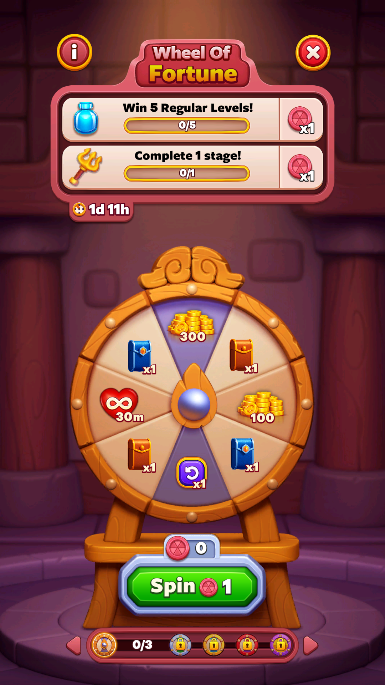
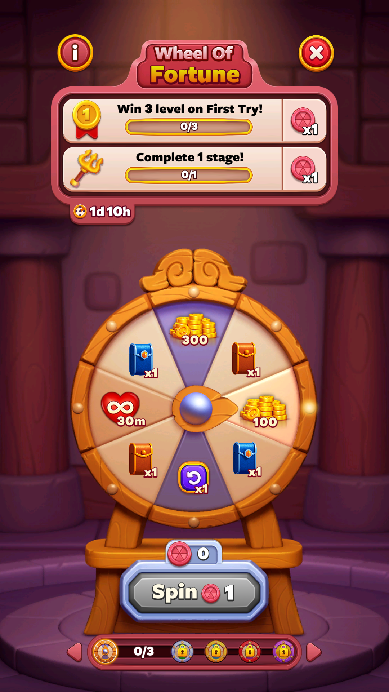
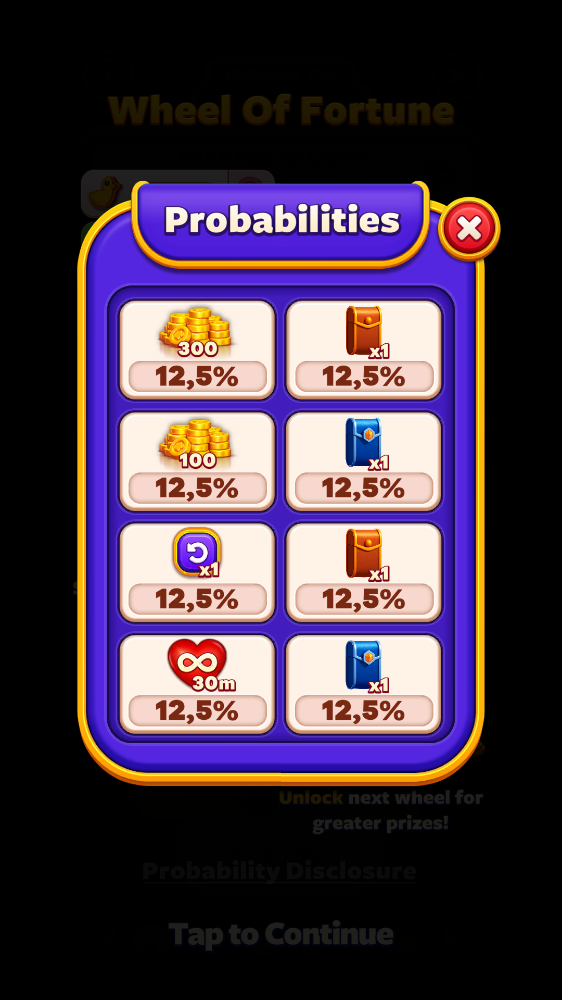
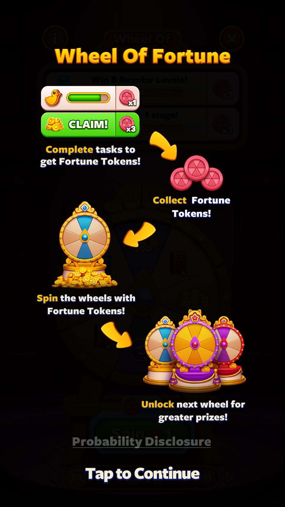
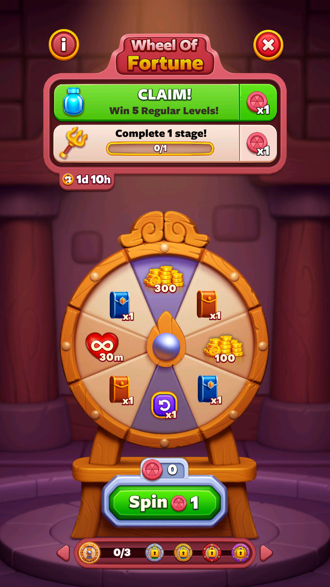

Vòng quay may mắn (Wheel of Fortune)
Kết nối nhiệm vụ nhiều hệ thống với lựa chọn tiêu chip, đồng thời yêu cầu tiến độ level để mở vòng chặng mới.
1 UC có nhánh liên quan tới case quan sát. Chưa có kết luận toàn bộ tính năng hoặc mọi UC đã pass. Xem bằng chứng và phần còn thiếu.
Thiết kế chi tiết
Tóm tắt thiết kế
Kết nối nhiệm vụ nhiều hệ thống với lựa chọn tiêu chip, đồng thời yêu cầu tiến độ level để mở vòng chặng mới.
Làm task → nhận chip → mở stage bằng level → tiêu chip quay → nhận quà → tiếp tục.
Diễn giải thiết kế từ nguồn đã đối chiếu; outcome là expected, không phải lượt playtest mới. Các giá trị default/native có build riêng, không tự coi đang hiệu lực production.
10 ảnh chụp có nguồn · ảnh hiện ngay trong khung, bấm để mở ảnh gốc. Màu nhãn phân biệt playtest, lịch sử và ngữ cảnh.


 30 phút mạng vô hạn, Undo…); thanh tiến trình 0/3 chặng; còn 1 ngày 11 giờẢnh chụp lịch sử · giữ snapshot và điều kiện trong chú thíchHồ sơ ảnh lịch sử
30 phút mạng vô hạn, Undo…); thanh tiến trình 0/3 chặng; còn 1 ngày 11 giờẢnh chụp lịch sử · giữ snapshot và điều kiện trong chú thíchHồ sơ ảnh lịch sửLuồng người chơi từng bước
- 01
Kiếm chip từ nhiệm vụ
Người chơi và hệ thốngHoàn thành mục tiêu đang hiển thị.
Điều kiện / luật: Tối đa 2 nhiệm vụ hoạt động; nhiệm vụ mới hoặc BackUpTask thay mục đã xong.
Kết quả theo đặc tả: Chip tăng riêng với tiến độ level.
Ảnh lịch sử Sau khi CLAIM: có 1 token, nhiệm vụ mới thay vào "Win 3 level on First Try!" 0/3Ảnh chụp lịch sử · giữ snapshot và điều kiện trong chú thíchHồ sơ ảnh lịch sử - 02
Quay chặng đã mở
Người chơi và hệ thốngChọn quay khi có đủ chip.
Điều kiện / luật: Chi phí lấy từ chặng; 100 là fallback, không phải giá cố định của mọi lượt. Kết quả được lưu trước khi trình diễn.
Kết quả theo đặc tả: Animation và trao thưởng dùng cùng kết quả đã chọn.

Ảnh lịch sử Quay: token về 0, kim chỉ dừng ở ô  100 coinẢnh chụp lịch sử · giữ snapshot và điều kiện trong chú thíchHồ sơ ảnh lịch sử
100 coinẢnh chụp lịch sử · giữ snapshot và điều kiện trong chú thíchHồ sơ ảnh lịch sử - 03
Đọc xác suất hạng quà
Người chơi và hệ thốngMở popup Probability.
Điều kiện / luật: Poor/Basic/Premium/Elite/Epic là nhóm quà; chặng cuối mặc định chia 50/50 giữa Elite và Epic.
Kết quả theo đặc tả: Không đọc tên Poor hoặc Epic thành phân khúc chi tiêu của người chơi.

Ảnh lịch sử Probability Disclosure của vòng 1: 8 ô, mỗi ô 12,5%Ảnh chụp lịch sử · giữ snapshot và điều kiện trong chú thíchHồ sơ ảnh lịch sử


Quy tắc cần nắm
| Quy tắc | Hành vi theo nguồn | Căn cứ |
|---|---|---|
| Kiếm chip từ nhiệm vụ | Tối đa 2 nhiệm vụ hoạt động; nhiệm vụ mới hoặc BackUpTask thay mục đã xong. | |
| Quay chặng đã mở | Chi phí lấy từ chặng; 100 là fallback, không phải giá cố định của mọi lượt. Kết quả được lưu trước khi trình diễn. | |
| Đọc xác suất hạng quà | Poor/Basic/Premium/Elite/Epic là nhóm quà; chặng cuối mặc định chia 50/50 giữa Elite và Epic. |
Số liệu & phần thưởng
Phần thưởng
TỈ LỆ HẠNG THƯỞNG THEO CHẶNG (WheelOfFortuneConfigModelV2.json)
| Chặng | Không có Collection | Có Collection |
|---|---|---|
| Chặng 0 | Poor 50%, Basic 25%, Premium 25% | Poor 50% Basic 25% Premium 25% |
| Chặng 1 | Poor 50%, Basic 25%, Premium 25% | Poor 50% Basic 25% Premium 25% |
| Chặng 2 | Poor 50%, Basic 25%, Premium 25% | Poor 50% Basic 25% Premium 25% |
| Chặng 3 | Poor 50%, Basic 25%, Premium 25% | Poor 50% Basic 25% Premium 25% |
| Chặng 4 (cuối) | Epic 50%, Elite 50% | Epic 50% Elite 50% |
NGUỒN CHIP VÀ PHẦN THƯỞNG
| Nguồn | Điều kiện | Phần thưởng |
|---|---|---|
| Bắt đầu sự kiện | Sự kiện mới khởi tạo | 5 chip (InitialChipCount client default) |
| Hoàn thành nhiệm vụ | CurrentAmount đạt RequiredAmount | WheelOfFortuneCurrencyReward chip (server) |
| Quay vòng quay chặng 0–3 | Chip ≥ SpinCost của chặng | 1 phần thưởng hạng Poor / Basic / Premium (nội dung do server) |
| Quay vòng quay chặng 4 | Chip ≥ SpinCost của chặng cuối | 1 phần thưởng hạng Elite hoặc Epic (nội dung do server) |
| Biến thể Collection | CollectionService đang bật | Dùng WheelOfFortuneRewardsWithCollection có thể chứa Collection Pack (CurrencyType 14) |
14 LOẠI NHIỆM VỤ (WheelOfFortuneTaskType)
| Mã | Loại nhiệm vụ | Liên kết |
|---|---|---|
| 1 | SuperHardLevelWin | Thắng level Super Hard |
| 2 | JetpackRaceWin | Jetpack Race |
| 3 | MagicStreakStepReach | Magic Streak |
| 4 | BroomStreakStepReach | Broom Streak |
| 5 | DuckFestivalWin | Duck Festival |
| 6 | MiniGameStageComplete | Mini Game |
| 7 | CollectCards | Collection |
| 8 | EarnCoin | Kinh tế |
| 9 | FirstTryWin | Level thường |
| 10 | RegularLevelWin | Level thường |
| 11 | HardLevelWin | Level Hard |
| 12 | BoatRushStageWin | Boat Rush |
| 13 | MergeStageReach | Merge Mini Game |
| 14 | WinStreak | Chuỗi thắng |
TRẠNG THÁI SỰ KIỆN (WheelOfFortuneState)
| Mã | Trạng thái | Ý nghĩa |
|---|---|---|
| 0 | Disable | IsEnabled = false |
| 1 | NoCache | Chưa fetch được sự kiện |
| 2 | NotIntroduced | Chưa giới thiệu cho người chơi |
| 3 | InsufficientLevel | Level dưới FirstLevelToShow |
| 4 | InProgress | Đang chạy |
| 5 | TimeIsUp | Hết giờ |
| 6 | ClaimedAndTimeIsUp | Đã nhận và hết giờ |
| 7 | Claimed | Đã nhận |
| 8 | AssetsNotReady | Bundle 'wof_bundle' chưa tải xong |
Phần thưởng theo code
| Ngữ cảnh | Phần thưởng | Evidence |
|---|---|---|
| Nhiệm vụ WOF | WheelOfFortuneCurrencyReward chip (số lượng do server) | WheelOfFortuneDataService.ClaimTask; WheelOfFortuneService.AddWheelOfFortuneCurrency |
| Bắt đầu sự kiện | InitialChipCount = 5 chip (client default) | WheelOfFortuneConfigModel.get_InitialWheelOfFortuneCurrencyCount; WheelOfFortuneDataService.StartNewEvent |
| Ô vòng quay chặng 0-3 | Hạng Poor 50% / Basic 25% / Premium 25% — nội dung cụ thể do server (coin booster life chest collection pack) | WheelOfFortuneService.SelectRewardTypeByProbability; WheelOfFortuneService.GiveStageReward |
| Ô vòng quay chặng 4 (cuối) | Hạng Elite 50% / Epic 50% | WheelOfFortuneService.GetRewardProbabilitiesFromConfig |
| Biến thể Collection | Dùng WheelOfFortuneRewardsWithCollection (có CurrencyType.CollectionPack = 14) | WheelOfFortuneService.GetWheelOfFortuneRewardModels; WheelOfFortuneStageModel.WheelOfFortuneRewardsWithCollection |
Số liệu chính
| Chỉ số | Giá trị | Nguồn |
|---|---|---|
| Level mở khoá | 130 | WheelOfFortuneConfigModelV2.FirstLevelToShow |
| Trạng thái bật/tắt mặc định | false | WheelOfFortuneConfigModelV2.IsEnabled |
| EventType gửi backend | 10 | WheelOfFortuneConfigModelV2.EventType |
| Chip tặng khi bắt đầu | 5 | WheelOfFortuneConfigModelV2.InitialChipCount |
| Số chặng theo cấu hình mặc định | 5 (StageId 0–4) | WheelOfFortuneConfigModelV2.StageProbabilities |
| Tỉ lệ chặng 0–3 | Poor 0.50, Basic 0.25, Premium 0.25 | StageProbabilities[0..3] |
| Tỉ lệ chặng 4 | Epic 0.50, Elite 0.50 | StageProbabilities[4] |
| Số nhiệm vụ chạy đồng thời | 2 | WheelOfFortuneDataService.MaxActiveTaskCount |
| Ngưỡng ép đổi chiến lược quay | 2 lần liên tiếp | WheelOfFortuneDataService.ConsecutiveStrategyCheckCount |
| Chi phí quay dự phòng | 100 chip | WheelOfFortuneService.GetStageSpinCost |
| Số loại nhiệm vụ | 14 (SuperHardLevelWin=1 … WinStreak=14) | WheelOfFortuneTaskType |
| Số hạng phần thưởng | 5 (Basic=1, Poor=2, Premium=3, Elite=4, Epic=5) | WheelOfFortuneRewardSegment |
| Số trạng thái sự kiện | 9 (Disable=0 … AssetsNotReady=8) | WheelOfFortuneState |
| Chiến lược quay | NotDecidedYet=-1, Fallback=0, Overshoot=1 | WheelOfFortuneSpinStrategy |
| Loại tiền tệ chip | CurrencyType.WheelOfFortuneCurrency = 20 | CurrencyType |
| EarnReason khi cấp thưởng ô | 45 (0x2d) | WheelOfFortuneService.GiveStageReward |
| Asset bundle | wof_bundle | WheelOfFortuneService.Initialize |
| Id local notification | 178178 | WheelOfFortuneSpinNotificationSo.Id |
| Tiêu đề notification | "Wheel of Fortune Started!" | WheelOfFortuneSpinNotificationSo.Title |
| Nội dung notification mặc định | "Beat 10 more levels to spin the wheel!" | WheelOfFortuneSpinNotificationSo.Message |
| Bật notification mặc định | false | WheelOfFortuneConfigModelV2.IsNotificationEnabled |
| Thời gian chạy thanh tiến độ nhiệm vụ | 0.6 giây | WheelOfFortuneAnimationConfig.TaskProgressBarFillDuration |
| Chiều rộng thanh tiến độ nhiệm vụ | 3.62 | WheelOfFortuneAnimationConfig.TaskProgressBarWidth |
| Tên khối sync | WheelOfFortuneV2SyncableDataModel | WheelOfFortuneDataService.GetSyncName |
| Định dạng id sự kiện cho analytics | wof_{0}_{1:yyyyMMdd} (fallback 'wof_unknown_data') | WheelOfFortuneService.GetReadableEventId |
Các quyết định trong luồng
| Tình huống | Cách xử lý theo nguồn | Căn cứ |
|---|---|---|
| Vì sao chip và Progress là hai thước đo? | Chip trả cho lượt quay, còn Progress mở chặng. Có chip không đồng nghĩa đã được mở mọi vòng quay phía sau. | Suy luận thiết kế từ cơ chế có nguồn, chưa đo hiệu quả. |
Nhánh lỗi và phục hồi
| Điều kiện | Hành vi mong đợi | Phạm vi đã kiểm |
|---|---|---|
| Gián đoạn hoặc kết thúc Vòng quay may mắn (WOF) | Hết giờ hoặc auto-claim còn có gate liên quan quà Collection; animation đóng không chứng minh grant đã hoàn tất. | Theo source và UC trong dossier; các dependency backend/sync/RNG vẫn cần kiểm riêng. |
Nhận định & vận dụng
Chip trả cho lượt quay, còn Progress mở chặng. Có chip không đồng nghĩa đã được mở mọi vòng quay phía sau.
Phân tích thiết kế, không phải kết quả đo cohort.
Ảnh chụp bổ sung & nguồn bằng chứng
Mô tả trạng thái hoặc bước nhìn thấy trong ảnh và ngữ cảnh case; không nâng preview, cache hay lỗi thành grant, online hoặc full UC pass.
Không coi ảnh lịch sử hoặc ảnh ép bật bằng fixture là trạng thái production hiện tại.
Những ảnh còn lại của tính năng được giữ mở sẵn bên dưới. Các ảnh đã đặt ở phần tóm tắt hoặc bước liên quan không lặp lại trong gallery này.




 100 coin: "Tap to Claim"Ảnh chụp lịch sử · giữ snapshot và điều kiện trong chú thíchHồ sơ ảnh lịch sử
100 coin: "Tap to Claim"Ảnh chụp lịch sử · giữ snapshot và điều kiện trong chú thíchHồ sơ ảnh lịch sử
Case đầy đủ: expected, actual và ledger · Ảnh lịch sử và tài nguyên gốc
Tổng quan & điều kiện mở
Mô tả
- Wheel of Fortune là sự kiện meta nhiều chặng chạy theo lịch server, mặc định có 5 chặng.
- Người chơi tích chip bằng cách hoàn thành nhiệm vụ trong sự kiện, rồi tiêu chip để quay vòng quay của chặng hiện tại.
- Mỗi lần quay trả một phần thưởng thuộc một trong 5 hạng: Poor, Basic, Premium, Elite, Epic.
- Bốn chặng đầu có tỉ lệ Poor 50%, Basic 25%, Premium 25%; chặng cuối chỉ ra Elite 50% và Epic 50%.
- Song song, mỗi level thường thắng cộng 1 Progress; đủ ngưỡng thì mở khoá chặng tiếp theo.
- Tối đa 2 nhiệm vụ chạy cùng lúc; nhiệm vụ hoàn thành được thay ngay bằng nhiệm vụ dự phòng.
- Có 14 loại nhiệm vụ trỏ thẳng sang Jetpack Race, Magic Streak, Broom Streak, Duck Festival, Boat Rush, Mini Game, Merge và Collection.
- Nhờ đó WOF vừa là phần thưởng vừa là trục gom mọi sự kiện khác, đẩy người chơi vào các event xung quanh.
- Kết quả quay được chọn và lưu trước animation theo đường mã đã đọc. Để vào bàn còn cần cache, trạng thái và asset hợp lệ; lượt offline đã thấy No Internet Connection nên chưa xác minh quay thành công khi mất mạng.
- Người chơi có thể xem bảng tỉ lệ hạng thưởng của từng chặng trong popup riêng.
Mở khóa & điểm vào
WheelOfFortuneService.IsEligible() = WheelOfFortuneConfigModel.IsEnabled == true && playerLevel >= FirstLevelToShow (pseudo-C kết thúc bằng return obj._FirstLevelToShow <= iVar5;, iVar5 lấy qua IPlayerService). Mặc định client: IsEnabled=false, FirstLevelToShow=130, EventType=10 (WheelOfFortuneConfigModelV2.json) — tức tính năng tắt sẵn, phải bật bằng remote config. Ngoài ra WheelOfFortuneStateService.GetEventState() còn trả về các trạng thái chặn khác: Disable(0), NoCache(1), NotIntroduced(2), InsufficientLevel(3), AssetsNotReady(8). AssetsNotReady xuất hiện khi asset bundle 'wof_bundle' chưa tải xong (WheelOfFortuneService.NeedToDownloadAssets / CheckAndResolveAssetDependency).
Điểm vào:
- WheelOfFortuneLobbyButton ở lobby (chỉ hiện khi WheelOfFortuneStateService.IsLobbyIconVisible())
- WheelOfFortunePopUp mở bằng OpenWheelOfFortunePopUpCommand (popup id 'WheelOfFortunePopUp'), nguồn WheelOfFortunePopUpImpressionSource = Force(0) | LobbyButton(1)
- Tự bật lần đầu khi sự kiện mới bắt đầu: WheelOfFortuneService.ShouldForceShowPopup() → source Force
- WheelOfFortuneInfoPopUp (nút hỏi chấm) — WheelOfFortuneInfoPopUpImpressionSource = InfoButton(0) | Force(1)
- WheelOfFortuneProbabilityPopUp mở từ InfoPopUp (bảng tỉ lệ hạng thưởng)
- WheelOfFortuneFinishedClaimPopUp mở từ WheelOfFortunePopUp khi hoàn tất toàn bộ chặng
- WheelOfFortuneAlertView / WheelOfFortuneButtonController: chấm đỏ 'có thể quay' trên nút lobby
- Local notification WheelOfFortuneSpinNotificationSo (Id 178178) khi IsNotificationEnabled
Các sự kiện liên quan
Luồng chi tiết theo nguồn
Cách hoạt động
- Kiểm tra điều kiện: cần IsEnabled = true và level ≥ 130; trạng thái chặn gồm Disable(0), NoCache(1), NotIntroduced(2), InsufficientLevel(3), AssetsNotReady(8).
- Tải asset: bundle 'wof_bundle' được tải bất đồng bộ trước khi mở popup.
- Lấy sự kiện: gọi /v1/get-wheel-of-fortune-v2-event với payload {event_type = 10}, nhận về EventId, StartTime, FinishTime, Segment, danh sách chặng và nhiệm vụ.
- Bắt đầu sự kiện mới: dữ liệu server được map thành chặng (Id, SpinAmount, SpinCost, IsLastStage, danh sách thưởng) và nhiệm vụ; chip khởi tạo 5.
- Popup tự bật một lần khi giới thiệu sự kiện (nguồn Force(0)); sau đó người chơi tự mở từ nút lobby (nguồn LobbyButton(1)).
- Thắng level thường: Progress tăng 1; khi vượt ngưỡng, chặng mới mở khoá và gửi analytics wof_wheel_unlocked.
- Nhiệm vụ: các service khác đẩy tiến độ vào WOF; nhiệm vụ đủ số lượng yêu cầu thì chuyển sang trạng thái nhận được.
- Mở popup: các nhiệm vụ đã hoàn thành được tự động nhận, chip cộng vào và nhiệm vụ dự phòng thay chỗ.
- Quay: cần chip ≥ SpinCost của chặng; chip bị trừ ngay khi bấm Spin.
- Chọn chiến lược dừng: Fallback(0) hoặc Overshoot(1), ép đảo nếu đã 2 lần liên tiếp cùng chiến lược.
- Chọn hạng thưởng theo bảng xác suất của chặng (nhánh WithCollection nếu Collection đang bật), rồi ánh xạ hạng thành một ô cụ thể.
- Sau animation quay, phần thưởng được cấp qua InventoryService với EarnReason 45; analytics wof_wheel_spinned.
- Chấm đỏ trên nút lobby bật khi chip thực cộng chip sắp nhận từ nhiệm vụ đủ để quay.
- Hoàn thành toàn bộ chặng: sự kiện được claim, mở popup tổng kết và gửi analytics wof_wheel_finished.
- Hết hạn: trạng thái chuyển TimeIsUp(5), tự động claim nếu chưa nhận, rồi ClaimedAndTimeIsUp(6) hoặc Claimed(7).
Luồng chi tiết theo code
InitializeData(): SyncLastSeen → IsEligible → TryFetchCurrentEvent. TryFetchCurrentEvent/IntervalUpdate gọi WheelOfFortuneRemoteService.GetEventInfo(eventType) (POST payload WheelOfFortuneInfoRequestModel{event_type}) tới wheelOfFortuneGetUrl. Response WheelOfFortuneInfoResponse{EventId, TournamentType, StartTime, FinishTime, Segment, EventData{Stages[], TaskModels[]}}. TryStartNewEvent → WheelOfFortuneDataService.StartNewEvent map RemoteStage→WheelOfFortuneStageModel (Id, SpinAmount, SpinCost, IsLastStage, danh sách thưởng bản thường và bản WithCollection) và RemoteTask→WheelOfFortuneTaskModel (kèm BackUpTask); chip khởi tạo = InitialChipCount. Trong phiên: mỗi lần thắng level thường, WinState gọi WheelOfFortuneService.TryIncreaseProgress() → CacheModel.Progress += 1; CalculateStageProgress quy Progress tổng thành chỉ số chặng hiện tại; khi Progress vượt ngưỡng chặng, EventSender.SendWheelOfFortuneWheelUnlockedEvent(stageIndex). Task: các service khác gọi TryIncreaseTaskProgress(taskType, amount) hoặc TryReachTaskProgress(taskType, target); tối đa MaxActiveTaskCount = 2 task hiện hành cùng lúc; khi task đủ RequiredAmount → IsClaimable, TryClaimTask cộng WheelOfFortuneCurrencyReward chip và thay bằng task kế tiếp (UpdateTaskWithBackUp dùng BackUpTask nếu hết task mới). Quay: nếu chip >= GetStageSpinCost(stageIndex) (mặc định fallback 100) thì DecideSpinStrategy chọn WheelOfFortuneSpinStrategy Fallback(0)/Overshoot(1) — nếu ConsecutiveStrategyCheckCount = 2 lần liên tiếp cùng chiến lược thì ép đảo chiều (IsThereConsecutiveStrategyOccured) — rồi SelectRewardTypeByProbability chọn hạng theo bảng StageProbabilities (nhánh WithCollection nếu Collection đang bật), TryGetSpinResultAsSegment ánh xạ hạng → 1 ô cụ thể, SetSpinResult lưu vào SpinResults[stage] và phát WheelOfFortuneSpinSignal. Sau animation, GiveStageReward(stageIndex, spinResultIndex) cấp RewardModel qua InventoryService/RewardService với EarnReason 0x2d (45). Hết chặng cuối → AllStagesCompleted → ShouldClaimEvent/ClaimEvent → EventSender.SendWheelOfFortuneFinished (wof_wheel_finished). Khi FinishTime qua (IsTimeUp) state chuyển TimeIsUp(5); TryClaimEventAutomatically tự nhận nếu chưa claim và không bị chặn bởi IsClosedByCollectionReward; state cuối là ClaimedAndTimeIsUp(6)/Claimed(7).
Use case (20)
Đặc tả UC mô tả hành vi theo nguồn. Kết quả mong đợi không phải kết quả đã chạy; case quan sát được liên kết riêng ở từng UC.
Bấm vào từng use case để mở. Mở/đóng tất cả
UC-01 Kiểm tra đủ điều kiện tham gia WOF
Chưa có case trực tiếp trong hai lượt review 15–16/11.
Các bước- WheelOfFortuneStateService.IsWheelOfFortuneEnabled() đọc WheelOfFortuneConfigModel.IsEnabled
- WheelOfFortuneService.IsEligible(): IsEnabled && IPlayerService level >= FirstLevelToShow
- GetEventState() trả về Disable / InsufficientLevel / NoCache / NotIntroduced / AssetsNotReady / InProgress
| Actor | System |
|---|---|
| Trigger | Vào lobby / InitializeData / IntervalUpdate |
| Điều kiện | Đã có RemoteConfigs |
| Kết quả mong đợi theo nguồn | IsLobbyIconVisible quyết định hiện nút lobby; nếu không eligible thì mọi TryIncreaseProgress / TryIncreaseTaskProgress đều bị bỏ qua |
| Quy tắc / số liệu | Client default: IsEnabled=false, FirstLevelToShow=130 |
| Bằng chứng đặc tả | WheelOfFortuneService.IsEligible; WheelOfFortuneStateService.GetEventState; WheelOfFortuneStateService.IsWheelOfFortuneEnabled; WheelOfFortuneStateService.IsLobbyIconVisible |
UC-02 Tải cấu hình sự kiện từ server và bắt đầu sự kiện mới
Chưa có case trực tiếp trong hai lượt review 15–16/11.
Các bước- WheelOfFortuneService.TryFetchCurrentEvent → FetchCurrentEvent
- WheelOfFortuneRemoteService.GetEventInfo(eventType) gửi WheelOfFortuneInfoRequestModel{event_type} tới wheelOfFortuneGetUrl (/v1/get-wheel-of-fortune-v2-event)
- TryStartNewEvent(WheelOfFortuneInfoResponse) so EventId với cache; nếu khác → WheelOfFortuneDataService.StartNewEvent(response, eventType)
- Map(WheelOfFortuneRemoteStageModel → WheelOfFortuneStageModel) và MapToBackUpTask(WheelOfFortuneRemoteTaskModel)
- TryReachTaskStepsOnEventStart() nạp sẵn tiến độ task đã đạt trước khi event bắt đầu
- EventSender.SendWheelOfFortuneStarted (wof_started)
| Actor | Server |
|---|---|
| Trigger | InitializeData hoặc IntervalUpdate khi cache hết hạn |
| Điều kiện | IsEligible == true |
| Kết quả mong đợi theo nguồn | WheelOfFortuneCacheModel mới: EventId, EventType, Segment, StartTime, FinishTime, Stages, Tasks, chip = InitialChipCount |
| Quy tắc / số liệu | EventType mặc định 10. Toàn bộ nội dung thưởng/chi phí quay do server quyết định. |
| Bằng chứng đặc tả | WheelOfFortuneService.TryFetchCurrentEvent; WheelOfFortuneService.FetchCurrentEvent; WheelOfFortuneRemoteService.GetEventInfo; WheelOfFortuneService.TryStartNewEvent; WheelOfFortuneDataService.StartNewEvent; WheelOfFortuneService.TryReachTaskStepsOnEventStart |
UC-03 Tải asset bundle 'wof_bundle' trước khi mở popup
Chưa có case trực tiếp trong hai lượt review 15–16/11.
Các bước- WheelOfFortuneService.Initialize() lưu _wofBundleId = 'wof_bundle'
- NeedToDownloadAssets() / WheelOfFortuneStateService.ShouldDownloadAssets() kiểm tra AssetManager
- CheckAndResolveAssetDependency() tải bundle bất đồng bộ
| Actor | System |
|---|---|
| Trigger | Initialize / mở popup lần đầu |
| Điều kiện | Sự kiện đang chạy |
| Kết quả mong đợi theo nguồn | Trong lúc chưa xong, GetEventState trả AssetsNotReady(8) và nút lobby/popup không mở |
| Quy tắc / số liệu | Bundle id cố định 'wof_bundle' |
| Bằng chứng đặc tả | WheelOfFortuneService.Initialize; WheelOfFortuneService.NeedToDownloadAssets; WheelOfFortuneService.CheckAndResolveAssetDependency; WheelOfFortuneStateService.ShouldDownloadAssets |
UC-04 Thắng level thường → +1 Progress, mở khóa chặng mới
Chưa có case trực tiếp trong hai lượt review 15–16/11.
Các bước- WinState gọi WheelOfFortuneService.TryIncreaseProgress()
- CanIncreaseProgress kiểm tra config + level; WheelOfFortuneDataService.IncreaseProgress() → CacheModel.Progress + 1, đánh dấu _isDataChangedSinceLastSave / _isMarkedForLateUpdate
- CalculateStageProgress(totalProgress) → GetCurrentStageIndex; nếu chỉ số chặng tăng thì EventSender.SendWheelOfFortuneWheelUnlockedEvent(stageIndex)
- WheelOfFortuneMoveNextStage signal cho UI
| Actor | Player |
|---|---|
| Trigger | Thắng một level (WinState) |
| Điều kiện | CanIncreaseProgress() == true (eligible + event InProgress) |
| Kết quả mong đợi theo nguồn | Thanh tiến độ chặng tăng, chặng mới mở khóa khi đủ Progress; dữ liệu được lưu trong LateUpdate |
| Quy tắc / số liệu | Chỉ +1 mỗi level thắng. Thua level KHÔNG làm mất Progress (không có hàm giảm Progress trong WheelOfFortuneDataService). |
| Bằng chứng đặc tả | WheelOfFortuneService.TryIncreaseProgress; WheelOfFortuneService.CanIncreaseProgress; WheelOfFortuneDataService.IncreaseProgress; WheelOfFortuneService.CalculateStageProgress; EventSender.SendWheelOfFortuneWheelUnlockedEvent |
UC-05 Hoàn thành nhiệm vụ WOF để nhận chip
Chưa có case trực tiếp trong hai lượt review 15–16/11.
Các bước- Service tương ứng gọi WheelOfFortuneService.TryIncreaseTaskProgress(taskType, amount) hoặc TryReachTaskProgress(taskType, target)
- WheelOfFortuneDataService.TryIncreaseTaskProgress cập nhật WheelOfFortuneTaskModel.CurrentAmount
- Khi CurrentAmount >= RequiredAmount → IsClaimable = true, HasUnseenClaimableTask() bật chấm đỏ
- TryClaimTask(taskId) → WheelOfFortuneDataService.ClaimTask → AddWheelOfFortuneCurrency(WheelOfFortuneCurrencyReward)
- UpdateTaskWithBackUp(task) thay task đã claim bằng task dự phòng (WheelOfFortuneBackUpTaskModel)
- Signal WheelOfFortuneTaskClaimedSignal + WheelOfFortuneChipAmountChangedSignal
| Actor | Player |
|---|---|
| Trigger | Sự kiện gameplay tương ứng WheelOfFortuneTaskType |
| Điều kiện | CanIncreaseTaskProgress() == true, task đang active |
| Kết quả mong đợi theo nguồn | Số chip tăng, task mới xuất hiện trong popup (tối đa 2 task hiện hành) |
| Quy tắc / số liệu | MaxActiveTaskCount = 2 (const WheelOfFortuneDataService). 14 loại task: SuperHardLevelWin(1), JetpackRaceWin(2), MagicStreakStepReach(3), BroomStreakStepReach(4), DuckFestivalWin(5), MiniGameStageComplete(6), CollectCards(7), EarnCoin(8), FirstTryWin(9), RegularLevelWin(10), HardLevelWin(11), BoatRushStageWin(12), MergeStageReach(13), WinStreak(14). |
| Bằng chứng đặc tả | WheelOfFortuneService.TryIncreaseTaskProgress; WheelOfFortuneService.TryReachTaskProgress; WheelOfFortuneDataService.TryIncreaseTaskProgress; WheelOfFortuneService.TryClaimTask; WheelOfFortuneDataService.ClaimTask; WheelOfFortuneDataService.UpdateTaskWithBackUp; WheelOfFortuneService.AddWheelOfFortuneCurrency |
UC-06 Tự động nhận các task đã hoàn thành khi mở popup
Chưa có case trực tiếp trong hai lượt review 15–16/11.
Các bước- WheelOfFortuneService.AutoClaimClaimableTasks() duyệt danh sách task
- Với mỗi task claimable gọi TryClaimTask(WheelOfFortuneTaskModel)
- MarkTaskAsSeen(taskId) đặt IsSeen/ClaimableSeen
| Actor | System |
|---|---|
| Trigger | Mở WheelOfFortunePopUp |
| Điều kiện | Có task IsClaimable chưa nhận |
| Kết quả mong đợi theo nguồn | Chip được cộng, animation nhận chip chạy, chấm đỏ tắt |
| Quy tắc / số liệu | ClaimableSeen dùng để không lặp lại animation |
| Bằng chứng đặc tả | WheelOfFortuneService.AutoClaimClaimableTasks; WheelOfFortuneService.TryClaimTask; WheelOfFortuneService.MarkTaskAsSeen; WheelOfFortuneDataService.MarkTaskAsSeen; WheelOfFortuneService.HasUnseenClaimableTask |

UC-07 Quay vòng quay của chặng hiện tại
Chưa có case trực tiếp trong hai lượt review 15–16/11.
Các bước- CanSpinWithCurrentCurrency() so GetWheelOfFortuneCurrencyCount() với SpinCost của chặng
- SpendWheelOfFortuneCurrency(cost) → ChangeWheelOfFortuneCurrencyCount(-cost)
- DecideSpinStrategy() → nếu IsThereConsecutiveStrategyOccured(out s) trả true thì đảo (Fallback↔Overshoot), ngược lại GetRandomSpinStrategy() dùng UnityEngine.Random.Range
- GetRewardProbabilitiesFromConfig(stageId) → TryGetStageRewardProbabilities → SelectRewardTypeByProbability (RandomUtil.GetRandom)
- TryGetSpinResultAsSegment(stageId, out rewardSegment) đổi hạng thành index ô cụ thể
- SetSpinResult(stageId, spinResult, strategy) → lưu SpinResults + SpinStrategies; WheelOfFortuneSpinSignal(stage, index, strategy)
- WheelOfFortuneWheelController chạy animation, kết thúc phát WheelOfFortuneSpinFinishedSignal
- EventSender.SendWheelOfFortuneSpinned(stageIndex, spinResultIndex)
| Actor | Player |
|---|---|
| Trigger | Bấm nút Spin trong WheelOfFortunePopUp |
| Điều kiện | IsStageSpinnable(stageIndex) && chip >= GetStageSpinCost(stageIndex) |
| Kết quả mong đợi theo nguồn | Chip giảm theo SpinCost, kết quả quay được cố định trước khi quay (client quyết định) |
| Quy tắc / số liệu | GetStageSpinCost fallback = 100 nếu không có dữ liệu chặng. ConsecutiveStrategyCheckCount = 2. SpinStrategy: NotDecidedYet(-1), Fallback(0), Overshoot(1) — chỉ ảnh hưởng hoạt ảnh dừng thiếu/thừa vòng. |
| Bằng chứng đặc tả | WheelOfFortuneService.CanSpinWithCurrentCurrency; WheelOfFortuneService.SpendWheelOfFortuneCurrency; WheelOfFortuneService.DecideSpinStrategy; WheelOfFortuneService.IsThereConsecutiveStrategyOccured; WheelOfFortuneService.SelectRewardTypeByProbability; WheelOfFortuneService.TryGetSpinResultAsSegment; WheelOfFortuneService.SetSpinResult; EventSender.SendWheelOfFortuneSpinned |
UC-08 Nhận thưởng của ô trúng
Chưa có case trực tiếp trong hai lượt review 15–16/11.
Các bước- WheelOfFortuneService.GetStageReward(stageIndex, spinResultIndex) → GetStageRewardAt(stageModel, index)
- GiveStageReward(stageIndex, spinResultIndex) duyệt RewardModel: CurrencyType.Life dùng InventoryService.Add(type, TimeSpan), các loại khác dùng Add(type, amount)
- EarnReason 0x2d (45) được truyền vào mọi lệnh cộng thưởng
- WheelOfFortuneDataService đánh dấu chặng đã claim; nếu là chặng cuối → WheelOfFortuneMoveNextStage / ClaimEventIfAllStagesAreClaimed
| Actor | Player |
|---|---|
| Trigger | Animation quay kết thúc (WheelOfFortuneSpinFinishedSignal) |
| Điều kiện | IsStageClaimable(stageIndex) |
| Kết quả mong đợi theo nguồn | Vật phẩm/coin/chest/collection pack vào túi; UI chạy WheelOfFortuneRewardVFX |
| Quy tắc / số liệu | Danh sách thưởng lấy từ WheelOfFortuneRewards hoặc WheelOfFortuneRewardsWithCollection (tùy Collection có bật) — do server gửi. |
| Bằng chứng đặc tả | WheelOfFortuneService.GiveStageReward; WheelOfFortuneService.GetStageReward; WheelOfFortuneService.GetStageRewardAt; WheelOfFortuneService.GetStageRewards; WheelOfFortuneService.IsStageClaimable; WheelOfFortuneService.ClaimEventIfAllStagesAreClaimed |
UC-09 Bảng tỉ lệ hạng thưởng (Probability popup)
Chưa có case trực tiếp trong hai lượt review 15–16/11.
Các bước- WheelOfFortuneService.GetProbabilityViewModel() gom GetRewardProbabilitiesFromConfig cho từng chặng
- GetRewardSegmentCounts(stageModel) đếm số ô theo hạng
- WheelOfFortuneProbabilityContentView hiển thị theo hạng
| Actor | Player |
|---|---|
| Trigger | Bấm info trong popup → 'WheelOfFortuneProbabilityPopUp' |
| Điều kiện | - |
| Kết quả mong đợi theo nguồn | Hiển thị % Poor/Basic/Premium/Elite/Epic từng chặng |
| Quy tắc / số liệu | Nguồn số: WheelOfFortuneConfigModel.StageProbabilities (remote config, có 2 nhánh WithCollection / WithoutCollection) |
| Bằng chứng đặc tả | WheelOfFortuneService.GetProbabilityViewModel; WheelOfFortuneService.GetRewardProbabilitiesFromConfig; WheelOfFortuneService.GetRewardSegmentCounts; WheelOfFortuneProbabilityPopUp |
UC-10 Popup tự bật khi có sự kiện mới hoặc có thể quay
Chưa có case trực tiếp trong hai lượt review 15–16/11.
Các bước- WheelOfFortuneService.ShouldForceShowPopup() kiểm tra state (InProgress=4 / TimeIsUp=5 / NotIntroduced=2) và CanAutoOpen (cờ CanAutoOpen trong CacheModel)
- WheelOfFortuneStateService.ShouldStartNewEvent() trả về id popup 'WheelOfFortunePopUp'
- IPopUpService xếp lịch mở; EventSender.SendWheelOfFortuneImpression(source=Force)
- MarkEventIntroducedEverInLifeTime() để lần sau không ép mở nữa
| Actor | System |
|---|---|
| Trigger | Về lobby / bắt đầu phiên |
| Điều kiện | IsEligible && event InProgress |
| Kết quả mong đợi theo nguồn | Popup mở tự động 1 lần khi giới thiệu sự kiện |
| Quy tắc / số liệu | WheelOfFortunePopUpImpressionSource: Force(0) khi tự bật, LobbyButton(1) khi người chơi tự bấm |
| Bằng chứng đặc tả | WheelOfFortuneService.ShouldForceShowPopup; WheelOfFortuneService.CanAutoOpen; WheelOfFortuneStateService.ShouldStartNewEvent; WheelOfFortuneService.MarkEventIntroducedEverInLifeTime; EventSender.SendWheelOfFortuneImpression |
UC-11 Chấm đỏ / alert 'có thể quay' trên nút lobby
Chưa có case trực tiếp trong hai lượt review 15–16/11.
Các bước- WheelOfFortuneService.ShouldShowSpinAlert() (state phải là InProgress(4) hoặc TimeIsUp(5): điều kiện
(uVar1 | 1) != 5loại các state khác) - CanSpinWithPendingCurrency() tính chip thực + chip sắp nhận từ task claimable (GetRealWheelOfFortuneCurrencyCount)
- TrySetSpinAlertSeenOnLobbyButton() / SetSpinAlertSeenOnLobbyButton() ghi cờ SpinAlertSeenOnLobbyButton
- TrySetLastSeenLobbyButtonProgress() lưu LastSeenLobbyButtonProgress để so tiến độ mới
| Actor | System |
|---|---|
| Trigger | Về lobby sau khi thắng level |
| Điều kiện | Đủ chip để quay chặng hiện tại |
| Kết quả mong đợi theo nguồn | WheelOfFortuneAlertView bật/tắt; ResetSpinAlertSeenValue khi có chip mới |
| Quy tắc / số liệu | IsStageChanged() so GetLastSeenStageIndex với GetCurrentStageIndex để chạy animation chuyển chặng |
| Bằng chứng đặc tả | WheelOfFortuneService.ShouldShowSpinAlert; WheelOfFortuneService.CanSpinWithPendingCurrency; WheelOfFortuneService.GetRealWheelOfFortuneCurrencyCount; WheelOfFortuneService.TrySetSpinAlertSeenOnLobbyButton; WheelOfFortuneDataService.SetSpinAlertSeenOnLobbyButton; WheelOfFortuneService.IsStageChanged |
UC-12 Cảnh báo 'Are you sure' khi đóng popup mà còn quay được
Chưa có case trực tiếp trong hai lượt review 15–16/11.
Các bước- WheelOfFortuneService.ShouldShowAreYouSurePopUp() duyệt GetStages() tìm chặng còn spin
- Hiện popup xác nhận trước khi đóng
| Actor | Player |
|---|---|
| Trigger | Bấm X đóng WheelOfFortunePopUp |
| Điều kiện | Còn chip đủ quay |
| Kết quả mong đợi theo nguồn | Giữ người chơi lại trong sự kiện |
| Quy tắc / số liệu | - |
| Bằng chứng đặc tả | WheelOfFortuneService.ShouldShowAreYouSurePopUp; WheelOfFortuneService.ShouldShowAlertView |
UC-13 Hoàn thành toàn bộ chặng và kết thúc sự kiện
Chưa có case trực tiếp trong hai lượt review 15–16/11.
Các bước- ClaimEventIfAllStagesAreClaimed() → ShouldClaimEvent() → ClaimEvent()
- WheelOfFortuneDataService.ClaimEvent() đặt IsClaimed = true
- EventSender.SendWheelOfFortuneFinished với params readable_event_id, segment, stage, progress, remaining_progress, total_currency, total_spinned_wheel, total_task_completed, is_completed
- Mở WheelOfFortuneFinishedClaimPopUp
| Actor | Player |
|---|---|
| Trigger | Quay xong ô cuối của chặng cuối |
| Điều kiện | AllStagesCompleted() == true |
| Kết quả mong đợi theo nguồn | State chuyển Claimed(7); nút lobby ẩn hoặc chuyển trạng thái 'WheelOfFortuneClaimedInfo' |
| Quy tắc / số liệu | GetTotalSpinnedWheel/GetTotalTasksCompleted dùng cho analytics tổng kết |
| Bằng chứng đặc tả | WheelOfFortuneService.AllStagesCompleted; WheelOfFortuneService.ClaimEventIfAllStagesAreClaimed; WheelOfFortuneService.ShouldClaimEvent; WheelOfFortuneService.ClaimEvent; WheelOfFortuneDataService.ClaimEvent; WheelOfFortuneService.GetTotalSpinnedWheel |
UC-14 Hết hạn sự kiện và tự động claim
Chưa có case trực tiếp trong hai lượt review 15–16/11.
Các bước- WheelOfFortuneService.IsTimeUp() / GetRemainingSeconds() / GetEndDate() (ConvertToUtc(FinishTime))
- State → TimeIsUp(5)
- ShouldClaimEventAutomatically(): state == 5 && !IsClaimed && !IsClosedByCollectionReward → TryClaimEventAutomatically()
- SendWheelOfFortuneFinished, state → ClaimedAndTimeIsUp(6)
| Actor | System |
|---|---|
| Trigger | CurrentTime > FinishTime |
| Điều kiện | Sự kiện chưa được claim |
| Kết quả mong đợi theo nguồn | Người chơi không mất phần thưởng đã trúng dù không mở popup |
| Quy tắc / số liệu | IsClosedByCollectionReward chặn auto-claim để nhường luồng nhận Collection reward |
| Bằng chứng đặc tả | WheelOfFortuneService.IsTimeUp; WheelOfFortuneService.GetRemainingSeconds; WheelOfFortuneService.GetEndDate; WheelOfFortuneService.ShouldClaimEventAutomatically; WheelOfFortuneService.TryClaimEventAutomatically; WheelOfFortuneStateService.IsTimeUp |
UC-15 Thưởng chứa Collection pack — hoãn animation tới khi về lobby
Chưa có case trực tiếp trong hai lượt review 15–16/11.
Các bước- WheelOfFortuneService.SetClosedByCollectionReward() đặt cờ IsClosedByCollectionReward
- Popup WOF đóng, luồng Collection chạy
- Khi quay lại lobby: ShouldShowCollectibleEarnAnimationOnLobbyReturn() → chạy animation nhận thẻ
- ResetClosedByCollectionRewardValue() xóa cờ
| Actor | System |
|---|---|
| Trigger | Trúng ô có CurrencyType.CollectionPack (14) |
| Điều kiện | CollectionService đang bật |
| Kết quả mong đợi theo nguồn | Không chồng chéo 2 luồng popup; đảm bảo người chơi thấy thẻ mới |
| Quy tắc / số liệu | Danh sách thưởng dùng WheelOfFortuneRewardsWithCollection khi Collection bật |
| Bằng chứng đặc tả | WheelOfFortuneService.SetClosedByCollectionReward; WheelOfFortuneService.IsPreviouslyClosedByCollectionReward; WheelOfFortuneService.ShouldShowCollectibleEarnAnimationOnLobbyReturn; WheelOfFortuneService.ResetClosedByCollectionRewardValue; WheelOfFortuneDataService.SetClosedByCollectionReward |
UC-16 Đồng bộ dữ liệu WOF giữa các thiết bị
Chưa có case trực tiếp trong hai lượt review 15–16/11.
Các bước- WheelOfFortuneDataService.GetSyncName() trả 'WheelOfFortuneV2SyncableDataModel'
- SerializeModelForSync() gửi WheelOfFortuneDataModel (IsEventIntroducedEverInLifeTime + CacheModel)
- OverwriteModelFromSync(data) ghi đè khi server có dữ liệu mới
- DataSynced() reset _isDataChangedSinceLastSave; SyncLastSeen() đồng bộ LastSeenProgress
| Actor | Server |
|---|---|
| Trigger | Sync định kỳ / đăng nhập thiết bị khác |
| Điều kiện | ISyncable |
| Kết quả mong đợi theo nguồn | Progress, chip, kết quả quay, task giữ nguyên khi đổi máy |
| Quy tắc / số liệu | LateUpdate() lưu khi _isMarkedForLateUpdate |
| Bằng chứng đặc tả | WheelOfFortuneDataService.GetSyncName; WheelOfFortuneDataService.SerializeModelForSync; WheelOfFortuneDataService.OverwriteModelFromSync; WheelOfFortuneDataService.DataSynced; WheelOfFortuneDataService.SyncLastSeen; WheelOfFortuneDataService.LateUpdate |
UC-17 Reset tiến độ một loại task (khi event nguồn tắt)
Chưa có case trực tiếp trong hai lượt review 15–16/11.
Các bước- WheelOfFortuneService.TryResetTaskProgress(WheelOfFortuneTaskType)
- CanResetTaskProgress() kiểm tra IsEligible
- WheelOfFortuneDataService.TryResetTaskProgress(taskType) đưa CurrentAmount về 0
- IsTaskAvailable(taskType) quyết định có phát task đó nữa không
| Actor | System |
|---|---|
| Trigger | Event liên quan (vd JetpackRace) không còn khả dụng |
| Điều kiện | CanResetTaskProgress() |
| Kết quả mong đợi theo nguồn | Tránh task treo không thể hoàn thành |
| Quy tắc / số liệu | - |
| Bằng chứng đặc tả | WheelOfFortuneService.TryResetTaskProgress; WheelOfFortuneService.CanResetTaskProgress; WheelOfFortuneDataService.TryResetTaskProgress; WheelOfFortuneService.IsTaskAvailable; WheelOfFortuneStateService.CanResetTaskProgress |
UC-18 Nhắc quay bằng local notification
Chưa có case trực tiếp trong hai lượt review 15–16/11.
Các bước- WheelOfFortuneService.ScheduleNotification()
- GetRemainingProgressInCurrentStage() tính số level còn thiếu
- NotificationService.SendWheelOfFortuneSpinReminderNotification(amount, delayAsSeconds) với text 'Beat {0} more level(s) to spin the wheel!'
| Actor | System |
|---|---|
| Trigger | Rời game khi còn thiếu progress để quay |
| Điều kiện | WheelOfFortuneConfigModel.IsNotificationEnabled == true && IsEligible |
| Kết quả mong đợi theo nguồn | Notification id 178178, title 'Wheel of Fortune Started!' |
| Quy tắc / số liệu | Client default IsNotificationEnabled = false |
| Bằng chứng đặc tả | WheelOfFortuneService.ScheduleNotification; WheelOfFortuneService.GetRemainingProgressInCurrentStage; NotificationService.SendWheelOfFortuneSpinReminderNotification |
UC-19 Không có cache / offline / lỗi request
Có bằng chứng một số nhánh; chưa full UC pass.
15/11/2026 · Mở Wheel khi offlineCác bước- TryFetchCurrentEvent bọc trong try/CancellationTokenSource; lỗi → không đổi cache
- WheelOfFortuneStateService.GetEventState() trả NoCache(1) khi CacheModel null
- IntervalUpdate() thử lại ở nhịp kế tiếp
| Actor | System |
|---|---|
| Trigger | GetEventInfo trả lỗi hoặc chưa gọi được |
| Điều kiện | - |
| Kết quả mong đợi theo nguồn | Nút lobby ẩn, không có popup; dữ liệu cũ (nếu có) vẫn dùng được offline vì chip/progress lưu local |
| Quy tắc / số liệu | Quay và cấp thưởng hoàn toàn xử lý client-side nên vẫn chơi được khi mất mạng |
| Bằng chứng đặc tả | WheelOfFortuneService.TryFetchCurrentEvent; WheelOfFortuneService.IntervalUpdate; WheelOfFortuneStateService.GetEventState; WheelOfFortuneRemoteService.Dispose |
UC-20 Đóng góp điểm cho MagicLab
Chưa có case trực tiếp trong hai lượt review 15–16/11.
Các bước- MagicLabService truy vấn WheelOfFortuneService.CanGetScoreForMagicLab()
- Nếu WOF eligible thì hoạt động WOF được tính vào MagicLab
| Actor | System |
|---|---|
| Trigger | Hoàn thành hoạt động trong WOF |
| Điều kiện | CanGetScoreForMagicLab() == true |
| Kết quả mong đợi theo nguồn | WOF là một nguồn nhiệm vụ của MagicLab (các key localization task đều mang tiền tố MagicLab*) |
| Quy tắc / số liệu | - |
| Bằng chứng đặc tả | WheelOfFortuneService.CanGetScoreForMagicLab; MagicLabService |
Playtest & phần chưa xác minh
Case ghi lại một chuỗi thao tác và phạm vi quan sát. Các bước chưa chạy và hợp đồng server vẫn giữ trạng thái riêng.
15/11/2026 Mở Wheel khi offlineMS-R15-EVT06
15/11/2026 · build 0.0.3129 ARM64 · fixture offline · quan sát nhánh
Điều kiện: 0.0.3129 ARM64, level 351, UID offline; save fixture có sẵn và instance tháng10.
- Trở vềHome
- Tap iconWheel Finished
Mong đợi
Ghi lỗi/fallback khi không có kết nối.
Đã quan sát
Hiện No Internet Connection!, chưa vào bảngspin; inventory không đổi.
Giới hạn: Không quan sát spin/probability/claim; icon4 không được coi là4chip.
Điều kiện cần để kiểm tiếp
Nhánh UC cần kiểm tiếp
Chưa có case vòng 2 cho feature này. Thử current entry một lượt có kiểm cache source; nếu popup mở xem probability và từng reward tier rồi đóng.
UC chưa có case: UC-01 UC-02 UC-03 UC-04 UC-05 UC-06 UC-07 UC-08 UC-09 UC-10 UC-11 UC-12 UC-13 UC-14 UC-15 UC-16 UC-17 UC-18 UC-20
Hợp đồng và phản hồi backend
Quy tắc chọn 2 task active ban đầu và thứ tự BackUpTask do server sắp xếp; client chỉ thay thế tuần tự.
Phân biệt task order đã nhận với thuật toán server chọn; client replace tuần tự chưa chứng minh selection rule.
Hồ sơ đầy đủ và trạng thái từng nhánh · Báo cáo đối soát 58 mục
Ảnh gốc & tài nguyên trong hồ sơ nền
Ảnh chụp màn hình (9)
9 ảnh chụp trong game (LDPlayer, bản 0.0.3129, tài khoản thử level 321 → 351 (07/10/2026)). Bấm ảnh để phóng to; ảnh chụp lịch sử mở PNG gốc. Nhãn UC dẫn tới use case tương ứng.
 30 phút mạng vô hạn, Undo…); thanh tiến trình 0/3 chặng; còn 1 ngày 11 giờ100 coin100 coin: "Tap to Claim"
30 phút mạng vô hạn, Undo…); thanh tiến trình 0/3 chặng; còn 1 ngày 11 giờ100 coin100 coin: "Tap to Claim"Segment & A/B
Nhóm quà và Collection: Đổi phân phối quà và ô trúng cụ thể.
| Trục phân nhóm | Điều kiện chọn | Tác động thiết kế | Mức bằng chứng |
|---|---|---|---|
| Nhóm quà và Collection | StageProbabilities chọn hạng quà; WithCollection chọn nhánh phần thưởng. | Đổi phân phối quà và ô trúng cụ thể. | Segment trong TryGetSpinResultAsSegment là đoạn hoặc ô của vòng quay, không phải nhóm thương mại; chưa kiểm RNG thống kê. |
Assignment của tài khoản, tỷ lệ traffic và uplift: chưa được xác minh. Reward bucket, phân khúc thương mại và A/B experiment được phân biệt theo nguồn.
- Segment trong TryGetSpinResultAsSegment là đoạn hoặc ô của vòng quay, không phải nhóm thương mại; chưa kiểm RNG thống kê.
129 dòng nguồn liên quan tới feature — mở bảng đầy đủ
| ID / phân loại | Snapshot / model | Key / kiểu | Giá trị | Consumer, diễn giải & việc cần kiểm |
|---|---|---|---|---|
| MS-SEG-052 reward_bucket_false_positive | default_0.0.3063 WheelOfFortuneConfigModelV2 | StageProbabilities[0].WithCollection.Poor Kiểu: float | 0.5 | 0.0.3063 ARMv7 · WheelOfFortuneService.c · dòng 3194 // ===== WheelOfFortuneService :: private Dictionary<WheelOfFortuneRewardSegment, float> GetRewardProbabilitiesFromConfigPoor và reward.segment số là bucket WheelOfFortuneRewardSegment (None0/Basic1/Poor2/Premium3/Elite4/Epic5 ở mã0.0.3063), không phải nhãn thương mại. Kiểm tiếp: Đối chiếu stageId, Collection enabled và outcome; giữ rawint và cảnh báo lệch build, không ghép với SegmentDataModel. |
| MS-SEG-053 reward_bucket_false_positive | default_0.0.3063 WheelOfFortuneConfigModelV2 | StageProbabilities[0].WithoutCollection.Poor Kiểu: float | 0.5 | 0.0.3063 ARMv7 · WheelOfFortuneService.c · dòng 3194 // ===== WheelOfFortuneService :: private Dictionary<WheelOfFortuneRewardSegment, float> GetRewardProbabilitiesFromConfigPoor và reward.segment số là bucket WheelOfFortuneRewardSegment (None0/Basic1/Poor2/Premium3/Elite4/Epic5 ở mã0.0.3063), không phải nhãn thương mại. Kiểm tiếp: Đối chiếu stageId, Collection enabled và outcome; giữ rawint và cảnh báo lệch build, không ghép với SegmentDataModel. |
| MS-SEG-054 reward_bucket_false_positive | default_0.0.3063 WheelOfFortuneConfigModelV2 | StageProbabilities[1].WithCollection.Poor Kiểu: float | 0.5 | 0.0.3063 ARMv7 · WheelOfFortuneService.c · dòng 3194 // ===== WheelOfFortuneService :: private Dictionary<WheelOfFortuneRewardSegment, float> GetRewardProbabilitiesFromConfigPoor và reward.segment số là bucket WheelOfFortuneRewardSegment (None0/Basic1/Poor2/Premium3/Elite4/Epic5 ở mã0.0.3063), không phải nhãn thương mại. Kiểm tiếp: Đối chiếu stageId, Collection enabled và outcome; giữ rawint và cảnh báo lệch build, không ghép với SegmentDataModel. |
| MS-SEG-055 reward_bucket_false_positive | default_0.0.3063 WheelOfFortuneConfigModelV2 | StageProbabilities[1].WithoutCollection.Poor Kiểu: float | 0.5 | 0.0.3063 ARMv7 · WheelOfFortuneService.c · dòng 3194 // ===== WheelOfFortuneService :: private Dictionary<WheelOfFortuneRewardSegment, float> GetRewardProbabilitiesFromConfigPoor và reward.segment số là bucket WheelOfFortuneRewardSegment (None0/Basic1/Poor2/Premium3/Elite4/Epic5 ở mã0.0.3063), không phải nhãn thương mại. Kiểm tiếp: Đối chiếu stageId, Collection enabled và outcome; giữ rawint và cảnh báo lệch build, không ghép với SegmentDataModel. |
| MS-SEG-056 reward_bucket_false_positive | default_0.0.3063 WheelOfFortuneConfigModelV2 | StageProbabilities[2].WithCollection.Poor Kiểu: float | 0.5 | 0.0.3063 ARMv7 · WheelOfFortuneService.c · dòng 3194 // ===== WheelOfFortuneService :: private Dictionary<WheelOfFortuneRewardSegment, float> GetRewardProbabilitiesFromConfigPoor và reward.segment số là bucket WheelOfFortuneRewardSegment (None0/Basic1/Poor2/Premium3/Elite4/Epic5 ở mã0.0.3063), không phải nhãn thương mại. Kiểm tiếp: Đối chiếu stageId, Collection enabled và outcome; giữ rawint và cảnh báo lệch build, không ghép với SegmentDataModel. |
| MS-SEG-057 reward_bucket_false_positive | default_0.0.3063 WheelOfFortuneConfigModelV2 | StageProbabilities[2].WithoutCollection.Poor Kiểu: float | 0.5 | 0.0.3063 ARMv7 · WheelOfFortuneService.c · dòng 3194 // ===== WheelOfFortuneService :: private Dictionary<WheelOfFortuneRewardSegment, float> GetRewardProbabilitiesFromConfigPoor và reward.segment số là bucket WheelOfFortuneRewardSegment (None0/Basic1/Poor2/Premium3/Elite4/Epic5 ở mã0.0.3063), không phải nhãn thương mại. Kiểm tiếp: Đối chiếu stageId, Collection enabled và outcome; giữ rawint và cảnh báo lệch build, không ghép với SegmentDataModel. |
| MS-SEG-058 reward_bucket_false_positive | default_0.0.3063 WheelOfFortuneConfigModelV2 | StageProbabilities[3].WithCollection.Poor Kiểu: float | 0.5 | 0.0.3063 ARMv7 · WheelOfFortuneService.c · dòng 3194 // ===== WheelOfFortuneService :: private Dictionary<WheelOfFortuneRewardSegment, float> GetRewardProbabilitiesFromConfigPoor và reward.segment số là bucket WheelOfFortuneRewardSegment (None0/Basic1/Poor2/Premium3/Elite4/Epic5 ở mã0.0.3063), không phải nhãn thương mại. Kiểm tiếp: Đối chiếu stageId, Collection enabled và outcome; giữ rawint và cảnh báo lệch build, không ghép với SegmentDataModel. |
| MS-SEG-059 reward_bucket_false_positive | default_0.0.3063 WheelOfFortuneConfigModelV2 | StageProbabilities[3].WithoutCollection.Poor Kiểu: float | 0.5 | 0.0.3063 ARMv7 · WheelOfFortuneService.c · dòng 3194 // ===== WheelOfFortuneService :: private Dictionary<WheelOfFortuneRewardSegment, float> GetRewardProbabilitiesFromConfigPoor và reward.segment số là bucket WheelOfFortuneRewardSegment (None0/Basic1/Poor2/Premium3/Elite4/Epic5 ở mã0.0.3063), không phải nhãn thương mại. Kiểm tiếp: Đối chiếu stageId, Collection enabled và outcome; giữ rawint và cảnh báo lệch build, không ghép với SegmentDataModel. |
| MS-SEG-101 reward_bucket_false_positive | cache_20260910 wheelOfFortuneConfigModel | stageProbabilities[0].withCollection.Poor Kiểu: float | 0.0 | 0.0.3063 ARMv7 · WheelOfFortuneService.c · dòng 3194 // ===== WheelOfFortuneService :: private Dictionary<WheelOfFortuneRewardSegment, float> GetRewardProbabilitiesFromConfigPoor và reward.segment số là bucket WheelOfFortuneRewardSegment (None0/Basic1/Poor2/Premium3/Elite4/Epic5 ở mã0.0.3063), không phải nhãn thương mại. Kiểm tiếp: Đối chiếu stageId, Collection enabled và outcome; giữ rawint và cảnh báo lệch build, không ghép với SegmentDataModel. |
| MS-SEG-102 reward_bucket_false_positive | cache_20260910 wheelOfFortuneConfigModel | stageProbabilities[0].withoutCollection.Poor Kiểu: float | 0.0 | 0.0.3063 ARMv7 · WheelOfFortuneService.c · dòng 3194 // ===== WheelOfFortuneService :: private Dictionary<WheelOfFortuneRewardSegment, float> GetRewardProbabilitiesFromConfigPoor và reward.segment số là bucket WheelOfFortuneRewardSegment (None0/Basic1/Poor2/Premium3/Elite4/Epic5 ở mã0.0.3063), không phải nhãn thương mại. Kiểm tiếp: Đối chiếu stageId, Collection enabled và outcome; giữ rawint và cảnh báo lệch build, không ghép với SegmentDataModel. |
| MS-SEG-103 reward_bucket_false_positive | cache_20260910 wheelOfFortuneConfigModel | stageProbabilities[1].withCollection.Poor Kiểu: float | 0.0 | 0.0.3063 ARMv7 · WheelOfFortuneService.c · dòng 3194 // ===== WheelOfFortuneService :: private Dictionary<WheelOfFortuneRewardSegment, float> GetRewardProbabilitiesFromConfigPoor và reward.segment số là bucket WheelOfFortuneRewardSegment (None0/Basic1/Poor2/Premium3/Elite4/Epic5 ở mã0.0.3063), không phải nhãn thương mại. Kiểm tiếp: Đối chiếu stageId, Collection enabled và outcome; giữ rawint và cảnh báo lệch build, không ghép với SegmentDataModel. |
| MS-SEG-104 reward_bucket_false_positive | cache_20260910 wheelOfFortuneConfigModel | stageProbabilities[1].withoutCollection.Poor Kiểu: float | 0.0 | 0.0.3063 ARMv7 · WheelOfFortuneService.c · dòng 3194 // ===== WheelOfFortuneService :: private Dictionary<WheelOfFortuneRewardSegment, float> GetRewardProbabilitiesFromConfigPoor và reward.segment số là bucket WheelOfFortuneRewardSegment (None0/Basic1/Poor2/Premium3/Elite4/Epic5 ở mã0.0.3063), không phải nhãn thương mại. Kiểm tiếp: Đối chiếu stageId, Collection enabled và outcome; giữ rawint và cảnh báo lệch build, không ghép với SegmentDataModel. |
| MS-SEG-105 reward_bucket_false_positive | cache_20260910 wheelOfFortuneConfigModel | stageProbabilities[2].withCollection.Poor Kiểu: float | 0.0 | 0.0.3063 ARMv7 · WheelOfFortuneService.c · dòng 3194 // ===== WheelOfFortuneService :: private Dictionary<WheelOfFortuneRewardSegment, float> GetRewardProbabilitiesFromConfigPoor và reward.segment số là bucket WheelOfFortuneRewardSegment (None0/Basic1/Poor2/Premium3/Elite4/Epic5 ở mã0.0.3063), không phải nhãn thương mại. Kiểm tiếp: Đối chiếu stageId, Collection enabled và outcome; giữ rawint và cảnh báo lệch build, không ghép với SegmentDataModel. |
| MS-SEG-106 reward_bucket_false_positive | cache_20260910 wheelOfFortuneConfigModel | stageProbabilities[2].withoutCollection.Poor Kiểu: float | 0.0 | 0.0.3063 ARMv7 · WheelOfFortuneService.c · dòng 3194 // ===== WheelOfFortuneService :: private Dictionary<WheelOfFortuneRewardSegment, float> GetRewardProbabilitiesFromConfigPoor và reward.segment số là bucket WheelOfFortuneRewardSegment (None0/Basic1/Poor2/Premium3/Elite4/Epic5 ở mã0.0.3063), không phải nhãn thương mại. Kiểm tiếp: Đối chiếu stageId, Collection enabled và outcome; giữ rawint và cảnh báo lệch build, không ghép với SegmentDataModel. |
| MS-SEG-107 reward_bucket_false_positive | cache_20260910 wheelOfFortuneConfigModel | stageProbabilities[3].withCollection.Poor Kiểu: float | 0.0 | 0.0.3063 ARMv7 · WheelOfFortuneService.c · dòng 3194 // ===== WheelOfFortuneService :: private Dictionary<WheelOfFortuneRewardSegment, float> GetRewardProbabilitiesFromConfigPoor và reward.segment số là bucket WheelOfFortuneRewardSegment (None0/Basic1/Poor2/Premium3/Elite4/Epic5 ở mã0.0.3063), không phải nhãn thương mại. Kiểm tiếp: Đối chiếu stageId, Collection enabled và outcome; giữ rawint và cảnh báo lệch build, không ghép với SegmentDataModel. |
| MS-SEG-108 reward_bucket_false_positive | cache_20260910 wheelOfFortuneConfigModel | stageProbabilities[3].withoutCollection.Poor Kiểu: float | 0.0 | 0.0.3063 ARMv7 · WheelOfFortuneService.c · dòng 3194 // ===== WheelOfFortuneService :: private Dictionary<WheelOfFortuneRewardSegment, float> GetRewardProbabilitiesFromConfigPoor và reward.segment số là bucket WheelOfFortuneRewardSegment (None0/Basic1/Poor2/Premium3/Elite4/Epic5 ở mã0.0.3063), không phải nhãn thương mại. Kiểm tiếp: Đối chiếu stageId, Collection enabled và outcome; giữ rawint và cảnh báo lệch build, không ghép với SegmentDataModel. |
| MS-SEG-129 reward_bucket_false_positive | cache_20261010 wheelOfFortuneConfigModel | stageProbabilities[0].withCollection.Poor Kiểu: float | 0.0 | 0.0.3063 ARMv7 · WheelOfFortuneService.c · dòng 3194 // ===== WheelOfFortuneService :: private Dictionary<WheelOfFortuneRewardSegment, float> GetRewardProbabilitiesFromConfigPoor và reward.segment số là bucket WheelOfFortuneRewardSegment (None0/Basic1/Poor2/Premium3/Elite4/Epic5 ở mã0.0.3063), không phải nhãn thương mại. Kiểm tiếp: Đối chiếu stageId, Collection enabled và outcome; giữ rawint và cảnh báo lệch build, không ghép với SegmentDataModel. |
| MS-SEG-130 reward_bucket_false_positive | cache_20261010 wheelOfFortuneConfigModel | stageProbabilities[0].withoutCollection.Poor Kiểu: float | 0.0 | 0.0.3063 ARMv7 · WheelOfFortuneService.c · dòng 3194 // ===== WheelOfFortuneService :: private Dictionary<WheelOfFortuneRewardSegment, float> GetRewardProbabilitiesFromConfigPoor và reward.segment số là bucket WheelOfFortuneRewardSegment (None0/Basic1/Poor2/Premium3/Elite4/Epic5 ở mã0.0.3063), không phải nhãn thương mại. Kiểm tiếp: Đối chiếu stageId, Collection enabled và outcome; giữ rawint và cảnh báo lệch build, không ghép với SegmentDataModel. |
| MS-SEG-131 reward_bucket_false_positive | cache_20261010 wheelOfFortuneConfigModel | stageProbabilities[1].withCollection.Poor Kiểu: float | 0.0 | 0.0.3063 ARMv7 · WheelOfFortuneService.c · dòng 3194 // ===== WheelOfFortuneService :: private Dictionary<WheelOfFortuneRewardSegment, float> GetRewardProbabilitiesFromConfigPoor và reward.segment số là bucket WheelOfFortuneRewardSegment (None0/Basic1/Poor2/Premium3/Elite4/Epic5 ở mã0.0.3063), không phải nhãn thương mại. Kiểm tiếp: Đối chiếu stageId, Collection enabled và outcome; giữ rawint và cảnh báo lệch build, không ghép với SegmentDataModel. |
| MS-SEG-132 reward_bucket_false_positive | cache_20261010 wheelOfFortuneConfigModel | stageProbabilities[1].withoutCollection.Poor Kiểu: float | 0.0 | 0.0.3063 ARMv7 · WheelOfFortuneService.c · dòng 3194 // ===== WheelOfFortuneService :: private Dictionary<WheelOfFortuneRewardSegment, float> GetRewardProbabilitiesFromConfigPoor và reward.segment số là bucket WheelOfFortuneRewardSegment (None0/Basic1/Poor2/Premium3/Elite4/Epic5 ở mã0.0.3063), không phải nhãn thương mại. Kiểm tiếp: Đối chiếu stageId, Collection enabled và outcome; giữ rawint và cảnh báo lệch build, không ghép với SegmentDataModel. |
| MS-SEG-133 reward_bucket_false_positive | cache_20261010 wheelOfFortuneConfigModel | stageProbabilities[2].withCollection.Poor Kiểu: float | 0.0 | 0.0.3063 ARMv7 · WheelOfFortuneService.c · dòng 3194 // ===== WheelOfFortuneService :: private Dictionary<WheelOfFortuneRewardSegment, float> GetRewardProbabilitiesFromConfigPoor và reward.segment số là bucket WheelOfFortuneRewardSegment (None0/Basic1/Poor2/Premium3/Elite4/Epic5 ở mã0.0.3063), không phải nhãn thương mại. Kiểm tiếp: Đối chiếu stageId, Collection enabled và outcome; giữ rawint và cảnh báo lệch build, không ghép với SegmentDataModel. |
| MS-SEG-134 reward_bucket_false_positive | cache_20261010 wheelOfFortuneConfigModel | stageProbabilities[2].withoutCollection.Poor Kiểu: float | 0.0 | 0.0.3063 ARMv7 · WheelOfFortuneService.c · dòng 3194 // ===== WheelOfFortuneService :: private Dictionary<WheelOfFortuneRewardSegment, float> GetRewardProbabilitiesFromConfigPoor và reward.segment số là bucket WheelOfFortuneRewardSegment (None0/Basic1/Poor2/Premium3/Elite4/Epic5 ở mã0.0.3063), không phải nhãn thương mại. Kiểm tiếp: Đối chiếu stageId, Collection enabled và outcome; giữ rawint và cảnh báo lệch build, không ghép với SegmentDataModel. |
| MS-SEG-135 reward_bucket_false_positive | cache_20261010 wheelOfFortuneConfigModel | stageProbabilities[3].withCollection.Poor Kiểu: float | 0.0 | 0.0.3063 ARMv7 · WheelOfFortuneService.c · dòng 3194 // ===== WheelOfFortuneService :: private Dictionary<WheelOfFortuneRewardSegment, float> GetRewardProbabilitiesFromConfigPoor và reward.segment số là bucket WheelOfFortuneRewardSegment (None0/Basic1/Poor2/Premium3/Elite4/Epic5 ở mã0.0.3063), không phải nhãn thương mại. Kiểm tiếp: Đối chiếu stageId, Collection enabled và outcome; giữ rawint và cảnh báo lệch build, không ghép với SegmentDataModel. |
| MS-SEG-136 reward_bucket_false_positive | cache_20261010 wheelOfFortuneConfigModel | stageProbabilities[3].withoutCollection.Poor Kiểu: float | 0.0 | 0.0.3063 ARMv7 · WheelOfFortuneService.c · dòng 3194 // ===== WheelOfFortuneService :: private Dictionary<WheelOfFortuneRewardSegment, float> GetRewardProbabilitiesFromConfigPoor và reward.segment số là bucket WheelOfFortuneRewardSegment (None0/Basic1/Poor2/Premium3/Elite4/Epic5 ở mã0.0.3063), không phải nhãn thương mại. Kiểm tiếp: Đối chiếu stageId, Collection enabled và outcome; giữ rawint và cảnh báo lệch build, không ghép với SegmentDataModel. |
| MS-SEG-236 reward_bucket_false_positive | firebase_20260910 WheelOfFortuneConfigModel | RewardProbabilities.BlendedUserProbabilities.WithCollection[0].Poor Kiểu: float | 0.5 | 0.0.3063 ARMv7 · WheelOfFortuneService.c · dòng 3194 // ===== WheelOfFortuneService :: private Dictionary<WheelOfFortuneRewardSegment, float> GetRewardProbabilitiesFromConfigPoor và reward.segment số là bucket WheelOfFortuneRewardSegment (None0/Basic1/Poor2/Premium3/Elite4/Epic5 ở mã0.0.3063), không phải nhãn thương mại. Kiểm tiếp: Đối chiếu stageId, Collection enabled và outcome; giữ rawint và cảnh báo lệch build, không ghép với SegmentDataModel. |
| MS-SEG-237 reward_bucket_false_positive | firebase_20260910 WheelOfFortuneConfigModel | RewardProbabilities.BlendedUserProbabilities.WithCollection[1].Poor Kiểu: float | 0.5 | 0.0.3063 ARMv7 · WheelOfFortuneService.c · dòng 3194 // ===== WheelOfFortuneService :: private Dictionary<WheelOfFortuneRewardSegment, float> GetRewardProbabilitiesFromConfigPoor và reward.segment số là bucket WheelOfFortuneRewardSegment (None0/Basic1/Poor2/Premium3/Elite4/Epic5 ở mã0.0.3063), không phải nhãn thương mại. Kiểm tiếp: Đối chiếu stageId, Collection enabled và outcome; giữ rawint và cảnh báo lệch build, không ghép với SegmentDataModel. |
| MS-SEG-238 reward_bucket_false_positive | firebase_20260910 WheelOfFortuneConfigModel | RewardProbabilities.BlendedUserProbabilities.WithCollection[2].Poor Kiểu: float | 0.7 | 0.0.3063 ARMv7 · WheelOfFortuneService.c · dòng 3194 // ===== WheelOfFortuneService :: private Dictionary<WheelOfFortuneRewardSegment, float> GetRewardProbabilitiesFromConfigPoor và reward.segment số là bucket WheelOfFortuneRewardSegment (None0/Basic1/Poor2/Premium3/Elite4/Epic5 ở mã0.0.3063), không phải nhãn thương mại. Kiểm tiếp: Đối chiếu stageId, Collection enabled và outcome; giữ rawint và cảnh báo lệch build, không ghép với SegmentDataModel. |
| MS-SEG-239 reward_bucket_false_positive | firebase_20260910 WheelOfFortuneConfigModel | RewardProbabilities.BlendedUserProbabilities.WithCollection[3].Poor Kiểu: float | 0.6 | 0.0.3063 ARMv7 · WheelOfFortuneService.c · dòng 3194 // ===== WheelOfFortuneService :: private Dictionary<WheelOfFortuneRewardSegment, float> GetRewardProbabilitiesFromConfigPoor và reward.segment số là bucket WheelOfFortuneRewardSegment (None0/Basic1/Poor2/Premium3/Elite4/Epic5 ở mã0.0.3063), không phải nhãn thương mại. Kiểm tiếp: Đối chiếu stageId, Collection enabled và outcome; giữ rawint và cảnh báo lệch build, không ghép với SegmentDataModel. |
| MS-SEG-240 reward_bucket_false_positive | firebase_20260910 WheelOfFortuneConfigModel | RewardProbabilities.BlendedUserProbabilities.WithoutCollection[0].Poor Kiểu: float | 0.5 | 0.0.3063 ARMv7 · WheelOfFortuneService.c · dòng 3194 // ===== WheelOfFortuneService :: private Dictionary<WheelOfFortuneRewardSegment, float> GetRewardProbabilitiesFromConfigPoor và reward.segment số là bucket WheelOfFortuneRewardSegment (None0/Basic1/Poor2/Premium3/Elite4/Epic5 ở mã0.0.3063), không phải nhãn thương mại. Kiểm tiếp: Đối chiếu stageId, Collection enabled và outcome; giữ rawint và cảnh báo lệch build, không ghép với SegmentDataModel. |
| MS-SEG-241 reward_bucket_false_positive | firebase_20260910 WheelOfFortuneConfigModel | RewardProbabilities.BlendedUserProbabilities.WithoutCollection[1].Poor Kiểu: float | 0.5 | 0.0.3063 ARMv7 · WheelOfFortuneService.c · dòng 3194 // ===== WheelOfFortuneService :: private Dictionary<WheelOfFortuneRewardSegment, float> GetRewardProbabilitiesFromConfigPoor và reward.segment số là bucket WheelOfFortuneRewardSegment (None0/Basic1/Poor2/Premium3/Elite4/Epic5 ở mã0.0.3063), không phải nhãn thương mại. Kiểm tiếp: Đối chiếu stageId, Collection enabled và outcome; giữ rawint và cảnh báo lệch build, không ghép với SegmentDataModel. |
| MS-SEG-242 reward_bucket_false_positive | firebase_20260910 WheelOfFortuneConfigModel | RewardProbabilities.BlendedUserProbabilities.WithoutCollection[2].Poor Kiểu: float | 0.7 | 0.0.3063 ARMv7 · WheelOfFortuneService.c · dòng 3194 // ===== WheelOfFortuneService :: private Dictionary<WheelOfFortuneRewardSegment, float> GetRewardProbabilitiesFromConfigPoor và reward.segment số là bucket WheelOfFortuneRewardSegment (None0/Basic1/Poor2/Premium3/Elite4/Epic5 ở mã0.0.3063), không phải nhãn thương mại. Kiểm tiếp: Đối chiếu stageId, Collection enabled và outcome; giữ rawint và cảnh báo lệch build, không ghép với SegmentDataModel. |
| MS-SEG-243 reward_bucket_false_positive | firebase_20260910 WheelOfFortuneConfigModel | RewardProbabilities.BlendedUserProbabilities.WithoutCollection[3].Poor Kiểu: float | 0.6 | 0.0.3063 ARMv7 · WheelOfFortuneService.c · dòng 3194 // ===== WheelOfFortuneService :: private Dictionary<WheelOfFortuneRewardSegment, float> GetRewardProbabilitiesFromConfigPoor và reward.segment số là bucket WheelOfFortuneRewardSegment (None0/Basic1/Poor2/Premium3/Elite4/Epic5 ở mã0.0.3063), không phải nhãn thương mại. Kiểm tiếp: Đối chiếu stageId, Collection enabled và outcome; giữ rawint và cảnh báo lệch build, không ghép với SegmentDataModel. |
| MS-SEG-244 reward_bucket_false_positive | firebase_20260910 WheelOfFortuneConfigModel | RewardProbabilities.IAPUserProbabilities.WithCollection[0].Poor Kiểu: float | 0.5 | 0.0.3063 ARMv7 · WheelOfFortuneService.c · dòng 3194 // ===== WheelOfFortuneService :: private Dictionary<WheelOfFortuneRewardSegment, float> GetRewardProbabilitiesFromConfigPoor và reward.segment số là bucket WheelOfFortuneRewardSegment (None0/Basic1/Poor2/Premium3/Elite4/Epic5 ở mã0.0.3063), không phải nhãn thương mại. Kiểm tiếp: Đối chiếu stageId, Collection enabled và outcome; giữ rawint và cảnh báo lệch build, không ghép với SegmentDataModel. |
| MS-SEG-245 reward_bucket_false_positive | firebase_20260910 WheelOfFortuneConfigModel | RewardProbabilities.IAPUserProbabilities.WithCollection[1].Poor Kiểu: float | 0.5 | 0.0.3063 ARMv7 · WheelOfFortuneService.c · dòng 3194 // ===== WheelOfFortuneService :: private Dictionary<WheelOfFortuneRewardSegment, float> GetRewardProbabilitiesFromConfigPoor và reward.segment số là bucket WheelOfFortuneRewardSegment (None0/Basic1/Poor2/Premium3/Elite4/Epic5 ở mã0.0.3063), không phải nhãn thương mại. Kiểm tiếp: Đối chiếu stageId, Collection enabled và outcome; giữ rawint và cảnh báo lệch build, không ghép với SegmentDataModel. |
| MS-SEG-246 reward_bucket_false_positive | firebase_20260910 WheelOfFortuneConfigModel | RewardProbabilities.IAPUserProbabilities.WithCollection[2].Poor Kiểu: float | 0.75 | 0.0.3063 ARMv7 · WheelOfFortuneService.c · dòng 3194 // ===== WheelOfFortuneService :: private Dictionary<WheelOfFortuneRewardSegment, float> GetRewardProbabilitiesFromConfigPoor và reward.segment số là bucket WheelOfFortuneRewardSegment (None0/Basic1/Poor2/Premium3/Elite4/Epic5 ở mã0.0.3063), không phải nhãn thương mại. Kiểm tiếp: Đối chiếu stageId, Collection enabled và outcome; giữ rawint và cảnh báo lệch build, không ghép với SegmentDataModel. |
| MS-SEG-247 reward_bucket_false_positive | firebase_20260910 WheelOfFortuneConfigModel | RewardProbabilities.IAPUserProbabilities.WithCollection[3].Poor Kiểu: float | 0.7 | 0.0.3063 ARMv7 · WheelOfFortuneService.c · dòng 3194 // ===== WheelOfFortuneService :: private Dictionary<WheelOfFortuneRewardSegment, float> GetRewardProbabilitiesFromConfigPoor và reward.segment số là bucket WheelOfFortuneRewardSegment (None0/Basic1/Poor2/Premium3/Elite4/Epic5 ở mã0.0.3063), không phải nhãn thương mại. Kiểm tiếp: Đối chiếu stageId, Collection enabled và outcome; giữ rawint và cảnh báo lệch build, không ghép với SegmentDataModel. |
| MS-SEG-248 reward_bucket_false_positive | firebase_20260910 WheelOfFortuneConfigModel | RewardProbabilities.IAPUserProbabilities.WithoutCollection[0].Poor Kiểu: float | 0.5 | 0.0.3063 ARMv7 · WheelOfFortuneService.c · dòng 3194 // ===== WheelOfFortuneService :: private Dictionary<WheelOfFortuneRewardSegment, float> GetRewardProbabilitiesFromConfigPoor và reward.segment số là bucket WheelOfFortuneRewardSegment (None0/Basic1/Poor2/Premium3/Elite4/Epic5 ở mã0.0.3063), không phải nhãn thương mại. Kiểm tiếp: Đối chiếu stageId, Collection enabled và outcome; giữ rawint và cảnh báo lệch build, không ghép với SegmentDataModel. |
| MS-SEG-249 reward_bucket_false_positive | firebase_20260910 WheelOfFortuneConfigModel | RewardProbabilities.IAPUserProbabilities.WithoutCollection[1].Poor Kiểu: float | 0.5 | 0.0.3063 ARMv7 · WheelOfFortuneService.c · dòng 3194 // ===== WheelOfFortuneService :: private Dictionary<WheelOfFortuneRewardSegment, float> GetRewardProbabilitiesFromConfigPoor và reward.segment số là bucket WheelOfFortuneRewardSegment (None0/Basic1/Poor2/Premium3/Elite4/Epic5 ở mã0.0.3063), không phải nhãn thương mại. Kiểm tiếp: Đối chiếu stageId, Collection enabled và outcome; giữ rawint và cảnh báo lệch build, không ghép với SegmentDataModel. |
| MS-SEG-250 reward_bucket_false_positive | firebase_20260910 WheelOfFortuneConfigModel | RewardProbabilities.IAPUserProbabilities.WithoutCollection[2].Poor Kiểu: float | 0.8 | 0.0.3063 ARMv7 · WheelOfFortuneService.c · dòng 3194 // ===== WheelOfFortuneService :: private Dictionary<WheelOfFortuneRewardSegment, float> GetRewardProbabilitiesFromConfigPoor và reward.segment số là bucket WheelOfFortuneRewardSegment (None0/Basic1/Poor2/Premium3/Elite4/Epic5 ở mã0.0.3063), không phải nhãn thương mại. Kiểm tiếp: Đối chiếu stageId, Collection enabled và outcome; giữ rawint và cảnh báo lệch build, không ghép với SegmentDataModel. |
| MS-SEG-251 reward_bucket_false_positive | firebase_20260910 WheelOfFortuneConfigModel | RewardProbabilities.IAPUserProbabilities.WithoutCollection[3].Poor Kiểu: float | 0.7 | 0.0.3063 ARMv7 · WheelOfFortuneService.c · dòng 3194 // ===== WheelOfFortuneService :: private Dictionary<WheelOfFortuneRewardSegment, float> GetRewardProbabilitiesFromConfigPoor và reward.segment số là bucket WheelOfFortuneRewardSegment (None0/Basic1/Poor2/Premium3/Elite4/Epic5 ở mã0.0.3063), không phải nhãn thương mại. Kiểm tiếp: Đối chiếu stageId, Collection enabled và outcome; giữ rawint và cảnh báo lệch build, không ghép với SegmentDataModel. |
| MS-SEG-252 reward_bucket_false_positive | firebase_20260910 WheelOfFortuneConfigModelV2 | StageProbabilities[0].WithCollection.Poor Kiểu: int | 0 | 0.0.3063 ARMv7 · WheelOfFortuneService.c · dòng 3194 // ===== WheelOfFortuneService :: private Dictionary<WheelOfFortuneRewardSegment, float> GetRewardProbabilitiesFromConfigPoor và reward.segment số là bucket WheelOfFortuneRewardSegment (None0/Basic1/Poor2/Premium3/Elite4/Epic5 ở mã0.0.3063), không phải nhãn thương mại. Kiểm tiếp: Đối chiếu stageId, Collection enabled và outcome; giữ rawint và cảnh báo lệch build, không ghép với SegmentDataModel. |
| MS-SEG-253 reward_bucket_false_positive | firebase_20260910 WheelOfFortuneConfigModelV2 | StageProbabilities[0].WithoutCollection.Poor Kiểu: int | 0 | 0.0.3063 ARMv7 · WheelOfFortuneService.c · dòng 3194 // ===== WheelOfFortuneService :: private Dictionary<WheelOfFortuneRewardSegment, float> GetRewardProbabilitiesFromConfigPoor và reward.segment số là bucket WheelOfFortuneRewardSegment (None0/Basic1/Poor2/Premium3/Elite4/Epic5 ở mã0.0.3063), không phải nhãn thương mại. Kiểm tiếp: Đối chiếu stageId, Collection enabled và outcome; giữ rawint và cảnh báo lệch build, không ghép với SegmentDataModel. |
| MS-SEG-254 reward_bucket_false_positive | firebase_20260910 WheelOfFortuneConfigModelV2 | StageProbabilities[1].WithCollection.Poor Kiểu: int | 0 | 0.0.3063 ARMv7 · WheelOfFortuneService.c · dòng 3194 // ===== WheelOfFortuneService :: private Dictionary<WheelOfFortuneRewardSegment, float> GetRewardProbabilitiesFromConfigPoor và reward.segment số là bucket WheelOfFortuneRewardSegment (None0/Basic1/Poor2/Premium3/Elite4/Epic5 ở mã0.0.3063), không phải nhãn thương mại. Kiểm tiếp: Đối chiếu stageId, Collection enabled và outcome; giữ rawint và cảnh báo lệch build, không ghép với SegmentDataModel. |
| MS-SEG-255 reward_bucket_false_positive | firebase_20260910 WheelOfFortuneConfigModelV2 | StageProbabilities[1].WithoutCollection.Poor Kiểu: int | 0 | 0.0.3063 ARMv7 · WheelOfFortuneService.c · dòng 3194 // ===== WheelOfFortuneService :: private Dictionary<WheelOfFortuneRewardSegment, float> GetRewardProbabilitiesFromConfigPoor và reward.segment số là bucket WheelOfFortuneRewardSegment (None0/Basic1/Poor2/Premium3/Elite4/Epic5 ở mã0.0.3063), không phải nhãn thương mại. Kiểm tiếp: Đối chiếu stageId, Collection enabled và outcome; giữ rawint và cảnh báo lệch build, không ghép với SegmentDataModel. |
| MS-SEG-256 reward_bucket_false_positive | firebase_20260910 WheelOfFortuneConfigModelV2 | StageProbabilities[2].WithCollection.Poor Kiểu: int | 0 | 0.0.3063 ARMv7 · WheelOfFortuneService.c · dòng 3194 // ===== WheelOfFortuneService :: private Dictionary<WheelOfFortuneRewardSegment, float> GetRewardProbabilitiesFromConfigPoor và reward.segment số là bucket WheelOfFortuneRewardSegment (None0/Basic1/Poor2/Premium3/Elite4/Epic5 ở mã0.0.3063), không phải nhãn thương mại. Kiểm tiếp: Đối chiếu stageId, Collection enabled và outcome; giữ rawint và cảnh báo lệch build, không ghép với SegmentDataModel. |
| MS-SEG-257 reward_bucket_false_positive | firebase_20260910 WheelOfFortuneConfigModelV2 | StageProbabilities[2].WithoutCollection.Poor Kiểu: int | 0 | 0.0.3063 ARMv7 · WheelOfFortuneService.c · dòng 3194 // ===== WheelOfFortuneService :: private Dictionary<WheelOfFortuneRewardSegment, float> GetRewardProbabilitiesFromConfigPoor và reward.segment số là bucket WheelOfFortuneRewardSegment (None0/Basic1/Poor2/Premium3/Elite4/Epic5 ở mã0.0.3063), không phải nhãn thương mại. Kiểm tiếp: Đối chiếu stageId, Collection enabled và outcome; giữ rawint và cảnh báo lệch build, không ghép với SegmentDataModel. |
| MS-SEG-258 reward_bucket_false_positive | firebase_20260910 WheelOfFortuneConfigModelV2 | StageProbabilities[3].WithCollection.Poor Kiểu: int | 0 | 0.0.3063 ARMv7 · WheelOfFortuneService.c · dòng 3194 // ===== WheelOfFortuneService :: private Dictionary<WheelOfFortuneRewardSegment, float> GetRewardProbabilitiesFromConfigPoor và reward.segment số là bucket WheelOfFortuneRewardSegment (None0/Basic1/Poor2/Premium3/Elite4/Epic5 ở mã0.0.3063), không phải nhãn thương mại. Kiểm tiếp: Đối chiếu stageId, Collection enabled và outcome; giữ rawint và cảnh báo lệch build, không ghép với SegmentDataModel. |
| MS-SEG-259 reward_bucket_false_positive | firebase_20260910 WheelOfFortuneConfigModelV2 | StageProbabilities[3].WithoutCollection.Poor Kiểu: int | 0 | 0.0.3063 ARMv7 · WheelOfFortuneService.c · dòng 3194 // ===== WheelOfFortuneService :: private Dictionary<WheelOfFortuneRewardSegment, float> GetRewardProbabilitiesFromConfigPoor và reward.segment số là bucket WheelOfFortuneRewardSegment (None0/Basic1/Poor2/Premium3/Elite4/Epic5 ở mã0.0.3063), không phải nhãn thương mại. Kiểm tiếp: Đối chiếu stageId, Collection enabled và outcome; giữ rawint và cảnh báo lệch build, không ghép với SegmentDataModel. |
| MS-SEG-264 cached_event_segment_label | instance_cache_observed_20261115 WheelOfFortuneV2DataModel | cacheModel.segment Kiểu: str | non-purchaser | 0.0.3063 ARMv7 · WheelOfFortuneService.c · dòng 3887 // ===== WheelOfFortuneService :: public string GetSegment()Nhãn thương mại được lưu trên model/cache của event lịch sử; chứng minh giá trị cache, không chứng minh tiêu chí backend, thời điểm gán mới hoặc A/B. Kiểm tiếp: Ghi đồng thời event/global segment, thời điểm event và SKU/reward đã chọn; cần fresh response/đối chứng để biết luật gán. |
| MS-SEG-265 reward_bucket_false_positive | instance_cache_observed_20261115 WheelOfFortuneV2DataModel | cacheModel.stages[0].wheelOfFortuneRewards[0].segment Kiểu: int | 3 | 0.0.3063 ARMv7 · WheelOfFortuneService.c · dòng 3194 // ===== WheelOfFortuneService :: private Dictionary<WheelOfFortuneRewardSegment, float> GetRewardProbabilitiesFromConfigPoor và reward.segment số là bucket WheelOfFortuneRewardSegment (None0/Basic1/Poor2/Premium3/Elite4/Epic5 ở mã0.0.3063), không phải nhãn thương mại. Kiểm tiếp: Đối chiếu stageId, Collection enabled và outcome; giữ rawint và cảnh báo lệch build, không ghép với SegmentDataModel. |
| MS-SEG-266 reward_bucket_false_positive | instance_cache_observed_20261115 WheelOfFortuneV2DataModel | cacheModel.stages[0].wheelOfFortuneRewards[1].segment Kiểu: int | 1 | 0.0.3063 ARMv7 · WheelOfFortuneService.c · dòng 3194 // ===== WheelOfFortuneService :: private Dictionary<WheelOfFortuneRewardSegment, float> GetRewardProbabilitiesFromConfigPoor và reward.segment số là bucket WheelOfFortuneRewardSegment (None0/Basic1/Poor2/Premium3/Elite4/Epic5 ở mã0.0.3063), không phải nhãn thương mại. Kiểm tiếp: Đối chiếu stageId, Collection enabled và outcome; giữ rawint và cảnh báo lệch build, không ghép với SegmentDataModel. |
| MS-SEG-267 reward_bucket_false_positive | instance_cache_observed_20261115 WheelOfFortuneV2DataModel | cacheModel.stages[0].wheelOfFortuneRewards[2].segment Kiểu: int | 1 | 0.0.3063 ARMv7 · WheelOfFortuneService.c · dòng 3194 // ===== WheelOfFortuneService :: private Dictionary<WheelOfFortuneRewardSegment, float> GetRewardProbabilitiesFromConfigPoor và reward.segment số là bucket WheelOfFortuneRewardSegment (None0/Basic1/Poor2/Premium3/Elite4/Epic5 ở mã0.0.3063), không phải nhãn thương mại. Kiểm tiếp: Đối chiếu stageId, Collection enabled và outcome; giữ rawint và cảnh báo lệch build, không ghép với SegmentDataModel. |
| MS-SEG-268 reward_bucket_false_positive | instance_cache_observed_20261115 WheelOfFortuneV2DataModel | cacheModel.stages[0].wheelOfFortuneRewards[3].segment Kiểu: int | 1 | 0.0.3063 ARMv7 · WheelOfFortuneService.c · dòng 3194 // ===== WheelOfFortuneService :: private Dictionary<WheelOfFortuneRewardSegment, float> GetRewardProbabilitiesFromConfigPoor và reward.segment số là bucket WheelOfFortuneRewardSegment (None0/Basic1/Poor2/Premium3/Elite4/Epic5 ở mã0.0.3063), không phải nhãn thương mại. Kiểm tiếp: Đối chiếu stageId, Collection enabled và outcome; giữ rawint và cảnh báo lệch build, không ghép với SegmentDataModel. |
| MS-SEG-269 reward_bucket_false_positive | instance_cache_observed_20261115 WheelOfFortuneV2DataModel | cacheModel.stages[0].wheelOfFortuneRewards[4].segment Kiểu: int | 3 | 0.0.3063 ARMv7 · WheelOfFortuneService.c · dòng 3194 // ===== WheelOfFortuneService :: private Dictionary<WheelOfFortuneRewardSegment, float> GetRewardProbabilitiesFromConfigPoor và reward.segment số là bucket WheelOfFortuneRewardSegment (None0/Basic1/Poor2/Premium3/Elite4/Epic5 ở mã0.0.3063), không phải nhãn thương mại. Kiểm tiếp: Đối chiếu stageId, Collection enabled và outcome; giữ rawint và cảnh báo lệch build, không ghép với SegmentDataModel. |
| MS-SEG-270 reward_bucket_false_positive | instance_cache_observed_20261115 WheelOfFortuneV2DataModel | cacheModel.stages[0].wheelOfFortuneRewards[5].segment Kiểu: int | 1 | 0.0.3063 ARMv7 · WheelOfFortuneService.c · dòng 3194 // ===== WheelOfFortuneService :: private Dictionary<WheelOfFortuneRewardSegment, float> GetRewardProbabilitiesFromConfigPoor và reward.segment số là bucket WheelOfFortuneRewardSegment (None0/Basic1/Poor2/Premium3/Elite4/Epic5 ở mã0.0.3063), không phải nhãn thương mại. Kiểm tiếp: Đối chiếu stageId, Collection enabled và outcome; giữ rawint và cảnh báo lệch build, không ghép với SegmentDataModel. |
| MS-SEG-271 reward_bucket_false_positive | instance_cache_observed_20261115 WheelOfFortuneV2DataModel | cacheModel.stages[0].wheelOfFortuneRewards[6].segment Kiểu: int | 1 | 0.0.3063 ARMv7 · WheelOfFortuneService.c · dòng 3194 // ===== WheelOfFortuneService :: private Dictionary<WheelOfFortuneRewardSegment, float> GetRewardProbabilitiesFromConfigPoor và reward.segment số là bucket WheelOfFortuneRewardSegment (None0/Basic1/Poor2/Premium3/Elite4/Epic5 ở mã0.0.3063), không phải nhãn thương mại. Kiểm tiếp: Đối chiếu stageId, Collection enabled và outcome; giữ rawint và cảnh báo lệch build, không ghép với SegmentDataModel. |
| MS-SEG-272 reward_bucket_false_positive | instance_cache_observed_20261115 WheelOfFortuneV2DataModel | cacheModel.stages[0].wheelOfFortuneRewards[7].segment Kiểu: int | 1 | 0.0.3063 ARMv7 · WheelOfFortuneService.c · dòng 3194 // ===== WheelOfFortuneService :: private Dictionary<WheelOfFortuneRewardSegment, float> GetRewardProbabilitiesFromConfigPoor và reward.segment số là bucket WheelOfFortuneRewardSegment (None0/Basic1/Poor2/Premium3/Elite4/Epic5 ở mã0.0.3063), không phải nhãn thương mại. Kiểm tiếp: Đối chiếu stageId, Collection enabled và outcome; giữ rawint và cảnh báo lệch build, không ghép với SegmentDataModel. |
| MS-SEG-273 reward_bucket_false_positive | instance_cache_observed_20261115 WheelOfFortuneV2DataModel | cacheModel.stages[0].wheelOfFortuneRewardsWithCollection[0].segment Kiểu: int | 3 | 0.0.3063 ARMv7 · WheelOfFortuneService.c · dòng 3194 // ===== WheelOfFortuneService :: private Dictionary<WheelOfFortuneRewardSegment, float> GetRewardProbabilitiesFromConfigPoor và reward.segment số là bucket WheelOfFortuneRewardSegment (None0/Basic1/Poor2/Premium3/Elite4/Epic5 ở mã0.0.3063), không phải nhãn thương mại. Kiểm tiếp: Đối chiếu stageId, Collection enabled và outcome; giữ rawint và cảnh báo lệch build, không ghép với SegmentDataModel. |
| MS-SEG-274 reward_bucket_false_positive | instance_cache_observed_20261115 WheelOfFortuneV2DataModel | cacheModel.stages[0].wheelOfFortuneRewardsWithCollection[1].segment Kiểu: int | 1 | 0.0.3063 ARMv7 · WheelOfFortuneService.c · dòng 3194 // ===== WheelOfFortuneService :: private Dictionary<WheelOfFortuneRewardSegment, float> GetRewardProbabilitiesFromConfigPoor và reward.segment số là bucket WheelOfFortuneRewardSegment (None0/Basic1/Poor2/Premium3/Elite4/Epic5 ở mã0.0.3063), không phải nhãn thương mại. Kiểm tiếp: Đối chiếu stageId, Collection enabled và outcome; giữ rawint và cảnh báo lệch build, không ghép với SegmentDataModel. |
| MS-SEG-275 reward_bucket_false_positive | instance_cache_observed_20261115 WheelOfFortuneV2DataModel | cacheModel.stages[0].wheelOfFortuneRewardsWithCollection[2].segment Kiểu: int | 1 | 0.0.3063 ARMv7 · WheelOfFortuneService.c · dòng 3194 // ===== WheelOfFortuneService :: private Dictionary<WheelOfFortuneRewardSegment, float> GetRewardProbabilitiesFromConfigPoor và reward.segment số là bucket WheelOfFortuneRewardSegment (None0/Basic1/Poor2/Premium3/Elite4/Epic5 ở mã0.0.3063), không phải nhãn thương mại. Kiểm tiếp: Đối chiếu stageId, Collection enabled và outcome; giữ rawint và cảnh báo lệch build, không ghép với SegmentDataModel. |
| MS-SEG-276 reward_bucket_false_positive | instance_cache_observed_20261115 WheelOfFortuneV2DataModel | cacheModel.stages[0].wheelOfFortuneRewardsWithCollection[3].segment Kiểu: int | 1 | 0.0.3063 ARMv7 · WheelOfFortuneService.c · dòng 3194 // ===== WheelOfFortuneService :: private Dictionary<WheelOfFortuneRewardSegment, float> GetRewardProbabilitiesFromConfigPoor và reward.segment số là bucket WheelOfFortuneRewardSegment (None0/Basic1/Poor2/Premium3/Elite4/Epic5 ở mã0.0.3063), không phải nhãn thương mại. Kiểm tiếp: Đối chiếu stageId, Collection enabled và outcome; giữ rawint và cảnh báo lệch build, không ghép với SegmentDataModel. |
| MS-SEG-277 reward_bucket_false_positive | instance_cache_observed_20261115 WheelOfFortuneV2DataModel | cacheModel.stages[0].wheelOfFortuneRewardsWithCollection[4].segment Kiểu: int | 3 | 0.0.3063 ARMv7 · WheelOfFortuneService.c · dòng 3194 // ===== WheelOfFortuneService :: private Dictionary<WheelOfFortuneRewardSegment, float> GetRewardProbabilitiesFromConfigPoor và reward.segment số là bucket WheelOfFortuneRewardSegment (None0/Basic1/Poor2/Premium3/Elite4/Epic5 ở mã0.0.3063), không phải nhãn thương mại. Kiểm tiếp: Đối chiếu stageId, Collection enabled và outcome; giữ rawint và cảnh báo lệch build, không ghép với SegmentDataModel. |
| MS-SEG-278 reward_bucket_false_positive | instance_cache_observed_20261115 WheelOfFortuneV2DataModel | cacheModel.stages[0].wheelOfFortuneRewardsWithCollection[5].segment Kiểu: int | 1 | 0.0.3063 ARMv7 · WheelOfFortuneService.c · dòng 3194 // ===== WheelOfFortuneService :: private Dictionary<WheelOfFortuneRewardSegment, float> GetRewardProbabilitiesFromConfigPoor và reward.segment số là bucket WheelOfFortuneRewardSegment (None0/Basic1/Poor2/Premium3/Elite4/Epic5 ở mã0.0.3063), không phải nhãn thương mại. Kiểm tiếp: Đối chiếu stageId, Collection enabled và outcome; giữ rawint và cảnh báo lệch build, không ghép với SegmentDataModel. |
| MS-SEG-279 reward_bucket_false_positive | instance_cache_observed_20261115 WheelOfFortuneV2DataModel | cacheModel.stages[0].wheelOfFortuneRewardsWithCollection[6].segment Kiểu: int | 1 | 0.0.3063 ARMv7 · WheelOfFortuneService.c · dòng 3194 // ===== WheelOfFortuneService :: private Dictionary<WheelOfFortuneRewardSegment, float> GetRewardProbabilitiesFromConfigPoor và reward.segment số là bucket WheelOfFortuneRewardSegment (None0/Basic1/Poor2/Premium3/Elite4/Epic5 ở mã0.0.3063), không phải nhãn thương mại. Kiểm tiếp: Đối chiếu stageId, Collection enabled và outcome; giữ rawint và cảnh báo lệch build, không ghép với SegmentDataModel. |
| MS-SEG-280 reward_bucket_false_positive | instance_cache_observed_20261115 WheelOfFortuneV2DataModel | cacheModel.stages[0].wheelOfFortuneRewardsWithCollection[7].segment Kiểu: int | 1 | 0.0.3063 ARMv7 · WheelOfFortuneService.c · dòng 3194 // ===== WheelOfFortuneService :: private Dictionary<WheelOfFortuneRewardSegment, float> GetRewardProbabilitiesFromConfigPoor và reward.segment số là bucket WheelOfFortuneRewardSegment (None0/Basic1/Poor2/Premium3/Elite4/Epic5 ở mã0.0.3063), không phải nhãn thương mại. Kiểm tiếp: Đối chiếu stageId, Collection enabled và outcome; giữ rawint và cảnh báo lệch build, không ghép với SegmentDataModel. |
| MS-SEG-281 reward_bucket_false_positive | instance_cache_observed_20261115 WheelOfFortuneV2DataModel | cacheModel.stages[1].wheelOfFortuneRewards[0].segment Kiểu: int | 3 | 0.0.3063 ARMv7 · WheelOfFortuneService.c · dòng 3194 // ===== WheelOfFortuneService :: private Dictionary<WheelOfFortuneRewardSegment, float> GetRewardProbabilitiesFromConfigPoor và reward.segment số là bucket WheelOfFortuneRewardSegment (None0/Basic1/Poor2/Premium3/Elite4/Epic5 ở mã0.0.3063), không phải nhãn thương mại. Kiểm tiếp: Đối chiếu stageId, Collection enabled và outcome; giữ rawint và cảnh báo lệch build, không ghép với SegmentDataModel. |
| MS-SEG-282 reward_bucket_false_positive | instance_cache_observed_20261115 WheelOfFortuneV2DataModel | cacheModel.stages[1].wheelOfFortuneRewards[1].segment Kiểu: int | 1 | 0.0.3063 ARMv7 · WheelOfFortuneService.c · dòng 3194 // ===== WheelOfFortuneService :: private Dictionary<WheelOfFortuneRewardSegment, float> GetRewardProbabilitiesFromConfigPoor và reward.segment số là bucket WheelOfFortuneRewardSegment (None0/Basic1/Poor2/Premium3/Elite4/Epic5 ở mã0.0.3063), không phải nhãn thương mại. Kiểm tiếp: Đối chiếu stageId, Collection enabled và outcome; giữ rawint và cảnh báo lệch build, không ghép với SegmentDataModel. |
| MS-SEG-283 reward_bucket_false_positive | instance_cache_observed_20261115 WheelOfFortuneV2DataModel | cacheModel.stages[1].wheelOfFortuneRewards[2].segment Kiểu: int | 1 | 0.0.3063 ARMv7 · WheelOfFortuneService.c · dòng 3194 // ===== WheelOfFortuneService :: private Dictionary<WheelOfFortuneRewardSegment, float> GetRewardProbabilitiesFromConfigPoor và reward.segment số là bucket WheelOfFortuneRewardSegment (None0/Basic1/Poor2/Premium3/Elite4/Epic5 ở mã0.0.3063), không phải nhãn thương mại. Kiểm tiếp: Đối chiếu stageId, Collection enabled và outcome; giữ rawint và cảnh báo lệch build, không ghép với SegmentDataModel. |
| MS-SEG-284 reward_bucket_false_positive | instance_cache_observed_20261115 WheelOfFortuneV2DataModel | cacheModel.stages[1].wheelOfFortuneRewards[3].segment Kiểu: int | 1 | 0.0.3063 ARMv7 · WheelOfFortuneService.c · dòng 3194 // ===== WheelOfFortuneService :: private Dictionary<WheelOfFortuneRewardSegment, float> GetRewardProbabilitiesFromConfigPoor và reward.segment số là bucket WheelOfFortuneRewardSegment (None0/Basic1/Poor2/Premium3/Elite4/Epic5 ở mã0.0.3063), không phải nhãn thương mại. Kiểm tiếp: Đối chiếu stageId, Collection enabled và outcome; giữ rawint và cảnh báo lệch build, không ghép với SegmentDataModel. |
| MS-SEG-285 reward_bucket_false_positive | instance_cache_observed_20261115 WheelOfFortuneV2DataModel | cacheModel.stages[1].wheelOfFortuneRewards[4].segment Kiểu: int | 3 | 0.0.3063 ARMv7 · WheelOfFortuneService.c · dòng 3194 // ===== WheelOfFortuneService :: private Dictionary<WheelOfFortuneRewardSegment, float> GetRewardProbabilitiesFromConfigPoor và reward.segment số là bucket WheelOfFortuneRewardSegment (None0/Basic1/Poor2/Premium3/Elite4/Epic5 ở mã0.0.3063), không phải nhãn thương mại. Kiểm tiếp: Đối chiếu stageId, Collection enabled và outcome; giữ rawint và cảnh báo lệch build, không ghép với SegmentDataModel. |
| MS-SEG-286 reward_bucket_false_positive | instance_cache_observed_20261115 WheelOfFortuneV2DataModel | cacheModel.stages[1].wheelOfFortuneRewards[5].segment Kiểu: int | 1 | 0.0.3063 ARMv7 · WheelOfFortuneService.c · dòng 3194 // ===== WheelOfFortuneService :: private Dictionary<WheelOfFortuneRewardSegment, float> GetRewardProbabilitiesFromConfigPoor và reward.segment số là bucket WheelOfFortuneRewardSegment (None0/Basic1/Poor2/Premium3/Elite4/Epic5 ở mã0.0.3063), không phải nhãn thương mại. Kiểm tiếp: Đối chiếu stageId, Collection enabled và outcome; giữ rawint và cảnh báo lệch build, không ghép với SegmentDataModel. |
| MS-SEG-287 reward_bucket_false_positive | instance_cache_observed_20261115 WheelOfFortuneV2DataModel | cacheModel.stages[1].wheelOfFortuneRewards[6].segment Kiểu: int | 1 | 0.0.3063 ARMv7 · WheelOfFortuneService.c · dòng 3194 // ===== WheelOfFortuneService :: private Dictionary<WheelOfFortuneRewardSegment, float> GetRewardProbabilitiesFromConfigPoor và reward.segment số là bucket WheelOfFortuneRewardSegment (None0/Basic1/Poor2/Premium3/Elite4/Epic5 ở mã0.0.3063), không phải nhãn thương mại. Kiểm tiếp: Đối chiếu stageId, Collection enabled và outcome; giữ rawint và cảnh báo lệch build, không ghép với SegmentDataModel. |
| MS-SEG-288 reward_bucket_false_positive | instance_cache_observed_20261115 WheelOfFortuneV2DataModel | cacheModel.stages[1].wheelOfFortuneRewards[7].segment Kiểu: int | 1 | 0.0.3063 ARMv7 · WheelOfFortuneService.c · dòng 3194 // ===== WheelOfFortuneService :: private Dictionary<WheelOfFortuneRewardSegment, float> GetRewardProbabilitiesFromConfigPoor và reward.segment số là bucket WheelOfFortuneRewardSegment (None0/Basic1/Poor2/Premium3/Elite4/Epic5 ở mã0.0.3063), không phải nhãn thương mại. Kiểm tiếp: Đối chiếu stageId, Collection enabled và outcome; giữ rawint và cảnh báo lệch build, không ghép với SegmentDataModel. |
| MS-SEG-289 reward_bucket_false_positive | instance_cache_observed_20261115 WheelOfFortuneV2DataModel | cacheModel.stages[1].wheelOfFortuneRewardsWithCollection[0].segment Kiểu: int | 3 | 0.0.3063 ARMv7 · WheelOfFortuneService.c · dòng 3194 // ===== WheelOfFortuneService :: private Dictionary<WheelOfFortuneRewardSegment, float> GetRewardProbabilitiesFromConfigPoor và reward.segment số là bucket WheelOfFortuneRewardSegment (None0/Basic1/Poor2/Premium3/Elite4/Epic5 ở mã0.0.3063), không phải nhãn thương mại. Kiểm tiếp: Đối chiếu stageId, Collection enabled và outcome; giữ rawint và cảnh báo lệch build, không ghép với SegmentDataModel. |
| MS-SEG-290 reward_bucket_false_positive | instance_cache_observed_20261115 WheelOfFortuneV2DataModel | cacheModel.stages[1].wheelOfFortuneRewardsWithCollection[1].segment Kiểu: int | 1 | 0.0.3063 ARMv7 · WheelOfFortuneService.c · dòng 3194 // ===== WheelOfFortuneService :: private Dictionary<WheelOfFortuneRewardSegment, float> GetRewardProbabilitiesFromConfigPoor và reward.segment số là bucket WheelOfFortuneRewardSegment (None0/Basic1/Poor2/Premium3/Elite4/Epic5 ở mã0.0.3063), không phải nhãn thương mại. Kiểm tiếp: Đối chiếu stageId, Collection enabled và outcome; giữ rawint và cảnh báo lệch build, không ghép với SegmentDataModel. |
| MS-SEG-291 reward_bucket_false_positive | instance_cache_observed_20261115 WheelOfFortuneV2DataModel | cacheModel.stages[1].wheelOfFortuneRewardsWithCollection[2].segment Kiểu: int | 1 | 0.0.3063 ARMv7 · WheelOfFortuneService.c · dòng 3194 // ===== WheelOfFortuneService :: private Dictionary<WheelOfFortuneRewardSegment, float> GetRewardProbabilitiesFromConfigPoor và reward.segment số là bucket WheelOfFortuneRewardSegment (None0/Basic1/Poor2/Premium3/Elite4/Epic5 ở mã0.0.3063), không phải nhãn thương mại. Kiểm tiếp: Đối chiếu stageId, Collection enabled và outcome; giữ rawint và cảnh báo lệch build, không ghép với SegmentDataModel. |
| MS-SEG-292 reward_bucket_false_positive | instance_cache_observed_20261115 WheelOfFortuneV2DataModel | cacheModel.stages[1].wheelOfFortuneRewardsWithCollection[3].segment Kiểu: int | 1 | 0.0.3063 ARMv7 · WheelOfFortuneService.c · dòng 3194 // ===== WheelOfFortuneService :: private Dictionary<WheelOfFortuneRewardSegment, float> GetRewardProbabilitiesFromConfigPoor và reward.segment số là bucket WheelOfFortuneRewardSegment (None0/Basic1/Poor2/Premium3/Elite4/Epic5 ở mã0.0.3063), không phải nhãn thương mại. Kiểm tiếp: Đối chiếu stageId, Collection enabled và outcome; giữ rawint và cảnh báo lệch build, không ghép với SegmentDataModel. |
| MS-SEG-293 reward_bucket_false_positive | instance_cache_observed_20261115 WheelOfFortuneV2DataModel | cacheModel.stages[1].wheelOfFortuneRewardsWithCollection[4].segment Kiểu: int | 3 | 0.0.3063 ARMv7 · WheelOfFortuneService.c · dòng 3194 // ===== WheelOfFortuneService :: private Dictionary<WheelOfFortuneRewardSegment, float> GetRewardProbabilitiesFromConfigPoor và reward.segment số là bucket WheelOfFortuneRewardSegment (None0/Basic1/Poor2/Premium3/Elite4/Epic5 ở mã0.0.3063), không phải nhãn thương mại. Kiểm tiếp: Đối chiếu stageId, Collection enabled và outcome; giữ rawint và cảnh báo lệch build, không ghép với SegmentDataModel. |
| MS-SEG-294 reward_bucket_false_positive | instance_cache_observed_20261115 WheelOfFortuneV2DataModel | cacheModel.stages[1].wheelOfFortuneRewardsWithCollection[5].segment Kiểu: int | 1 | 0.0.3063 ARMv7 · WheelOfFortuneService.c · dòng 3194 // ===== WheelOfFortuneService :: private Dictionary<WheelOfFortuneRewardSegment, float> GetRewardProbabilitiesFromConfigPoor và reward.segment số là bucket WheelOfFortuneRewardSegment (None0/Basic1/Poor2/Premium3/Elite4/Epic5 ở mã0.0.3063), không phải nhãn thương mại. Kiểm tiếp: Đối chiếu stageId, Collection enabled và outcome; giữ rawint và cảnh báo lệch build, không ghép với SegmentDataModel. |
| MS-SEG-295 reward_bucket_false_positive | instance_cache_observed_20261115 WheelOfFortuneV2DataModel | cacheModel.stages[1].wheelOfFortuneRewardsWithCollection[6].segment Kiểu: int | 1 | 0.0.3063 ARMv7 · WheelOfFortuneService.c · dòng 3194 // ===== WheelOfFortuneService :: private Dictionary<WheelOfFortuneRewardSegment, float> GetRewardProbabilitiesFromConfigPoor và reward.segment số là bucket WheelOfFortuneRewardSegment (None0/Basic1/Poor2/Premium3/Elite4/Epic5 ở mã0.0.3063), không phải nhãn thương mại. Kiểm tiếp: Đối chiếu stageId, Collection enabled và outcome; giữ rawint và cảnh báo lệch build, không ghép với SegmentDataModel. |
| MS-SEG-296 reward_bucket_false_positive | instance_cache_observed_20261115 WheelOfFortuneV2DataModel | cacheModel.stages[1].wheelOfFortuneRewardsWithCollection[7].segment Kiểu: int | 1 | 0.0.3063 ARMv7 · WheelOfFortuneService.c · dòng 3194 // ===== WheelOfFortuneService :: private Dictionary<WheelOfFortuneRewardSegment, float> GetRewardProbabilitiesFromConfigPoor và reward.segment số là bucket WheelOfFortuneRewardSegment (None0/Basic1/Poor2/Premium3/Elite4/Epic5 ở mã0.0.3063), không phải nhãn thương mại. Kiểm tiếp: Đối chiếu stageId, Collection enabled và outcome; giữ rawint và cảnh báo lệch build, không ghép với SegmentDataModel. |
| MS-SEG-297 reward_bucket_false_positive | instance_cache_observed_20261115 WheelOfFortuneV2DataModel | cacheModel.stages[2].wheelOfFortuneRewards[0].segment Kiểu: int | 3 | 0.0.3063 ARMv7 · WheelOfFortuneService.c · dòng 3194 // ===== WheelOfFortuneService :: private Dictionary<WheelOfFortuneRewardSegment, float> GetRewardProbabilitiesFromConfigPoor và reward.segment số là bucket WheelOfFortuneRewardSegment (None0/Basic1/Poor2/Premium3/Elite4/Epic5 ở mã0.0.3063), không phải nhãn thương mại. Kiểm tiếp: Đối chiếu stageId, Collection enabled và outcome; giữ rawint và cảnh báo lệch build, không ghép với SegmentDataModel. |
| MS-SEG-298 reward_bucket_false_positive | instance_cache_observed_20261115 WheelOfFortuneV2DataModel | cacheModel.stages[2].wheelOfFortuneRewards[1].segment Kiểu: int | 1 | 0.0.3063 ARMv7 · WheelOfFortuneService.c · dòng 3194 // ===== WheelOfFortuneService :: private Dictionary<WheelOfFortuneRewardSegment, float> GetRewardProbabilitiesFromConfigPoor và reward.segment số là bucket WheelOfFortuneRewardSegment (None0/Basic1/Poor2/Premium3/Elite4/Epic5 ở mã0.0.3063), không phải nhãn thương mại. Kiểm tiếp: Đối chiếu stageId, Collection enabled và outcome; giữ rawint và cảnh báo lệch build, không ghép với SegmentDataModel. |
| MS-SEG-299 reward_bucket_false_positive | instance_cache_observed_20261115 WheelOfFortuneV2DataModel | cacheModel.stages[2].wheelOfFortuneRewards[2].segment Kiểu: int | 1 | 0.0.3063 ARMv7 · WheelOfFortuneService.c · dòng 3194 // ===== WheelOfFortuneService :: private Dictionary<WheelOfFortuneRewardSegment, float> GetRewardProbabilitiesFromConfigPoor và reward.segment số là bucket WheelOfFortuneRewardSegment (None0/Basic1/Poor2/Premium3/Elite4/Epic5 ở mã0.0.3063), không phải nhãn thương mại. Kiểm tiếp: Đối chiếu stageId, Collection enabled và outcome; giữ rawint và cảnh báo lệch build, không ghép với SegmentDataModel. |
| MS-SEG-300 reward_bucket_false_positive | instance_cache_observed_20261115 WheelOfFortuneV2DataModel | cacheModel.stages[2].wheelOfFortuneRewards[3].segment Kiểu: int | 1 | 0.0.3063 ARMv7 · WheelOfFortuneService.c · dòng 3194 // ===== WheelOfFortuneService :: private Dictionary<WheelOfFortuneRewardSegment, float> GetRewardProbabilitiesFromConfigPoor và reward.segment số là bucket WheelOfFortuneRewardSegment (None0/Basic1/Poor2/Premium3/Elite4/Epic5 ở mã0.0.3063), không phải nhãn thương mại. Kiểm tiếp: Đối chiếu stageId, Collection enabled và outcome; giữ rawint và cảnh báo lệch build, không ghép với SegmentDataModel. |
| MS-SEG-301 reward_bucket_false_positive | instance_cache_observed_20261115 WheelOfFortuneV2DataModel | cacheModel.stages[2].wheelOfFortuneRewards[4].segment Kiểu: int | 3 | 0.0.3063 ARMv7 · WheelOfFortuneService.c · dòng 3194 // ===== WheelOfFortuneService :: private Dictionary<WheelOfFortuneRewardSegment, float> GetRewardProbabilitiesFromConfigPoor và reward.segment số là bucket WheelOfFortuneRewardSegment (None0/Basic1/Poor2/Premium3/Elite4/Epic5 ở mã0.0.3063), không phải nhãn thương mại. Kiểm tiếp: Đối chiếu stageId, Collection enabled và outcome; giữ rawint và cảnh báo lệch build, không ghép với SegmentDataModel. |
| MS-SEG-302 reward_bucket_false_positive | instance_cache_observed_20261115 WheelOfFortuneV2DataModel | cacheModel.stages[2].wheelOfFortuneRewards[5].segment Kiểu: int | 1 | 0.0.3063 ARMv7 · WheelOfFortuneService.c · dòng 3194 // ===== WheelOfFortuneService :: private Dictionary<WheelOfFortuneRewardSegment, float> GetRewardProbabilitiesFromConfigPoor và reward.segment số là bucket WheelOfFortuneRewardSegment (None0/Basic1/Poor2/Premium3/Elite4/Epic5 ở mã0.0.3063), không phải nhãn thương mại. Kiểm tiếp: Đối chiếu stageId, Collection enabled và outcome; giữ rawint và cảnh báo lệch build, không ghép với SegmentDataModel. |
| MS-SEG-303 reward_bucket_false_positive | instance_cache_observed_20261115 WheelOfFortuneV2DataModel | cacheModel.stages[2].wheelOfFortuneRewards[6].segment Kiểu: int | 1 | 0.0.3063 ARMv7 · WheelOfFortuneService.c · dòng 3194 // ===== WheelOfFortuneService :: private Dictionary<WheelOfFortuneRewardSegment, float> GetRewardProbabilitiesFromConfigPoor và reward.segment số là bucket WheelOfFortuneRewardSegment (None0/Basic1/Poor2/Premium3/Elite4/Epic5 ở mã0.0.3063), không phải nhãn thương mại. Kiểm tiếp: Đối chiếu stageId, Collection enabled và outcome; giữ rawint và cảnh báo lệch build, không ghép với SegmentDataModel. |
| MS-SEG-304 reward_bucket_false_positive | instance_cache_observed_20261115 WheelOfFortuneV2DataModel | cacheModel.stages[2].wheelOfFortuneRewards[7].segment Kiểu: int | 1 | 0.0.3063 ARMv7 · WheelOfFortuneService.c · dòng 3194 // ===== WheelOfFortuneService :: private Dictionary<WheelOfFortuneRewardSegment, float> GetRewardProbabilitiesFromConfigPoor và reward.segment số là bucket WheelOfFortuneRewardSegment (None0/Basic1/Poor2/Premium3/Elite4/Epic5 ở mã0.0.3063), không phải nhãn thương mại. Kiểm tiếp: Đối chiếu stageId, Collection enabled và outcome; giữ rawint và cảnh báo lệch build, không ghép với SegmentDataModel. |
| MS-SEG-305 reward_bucket_false_positive | instance_cache_observed_20261115 WheelOfFortuneV2DataModel | cacheModel.stages[2].wheelOfFortuneRewardsWithCollection[0].segment Kiểu: int | 3 | 0.0.3063 ARMv7 · WheelOfFortuneService.c · dòng 3194 // ===== WheelOfFortuneService :: private Dictionary<WheelOfFortuneRewardSegment, float> GetRewardProbabilitiesFromConfigPoor và reward.segment số là bucket WheelOfFortuneRewardSegment (None0/Basic1/Poor2/Premium3/Elite4/Epic5 ở mã0.0.3063), không phải nhãn thương mại. Kiểm tiếp: Đối chiếu stageId, Collection enabled và outcome; giữ rawint và cảnh báo lệch build, không ghép với SegmentDataModel. |
| MS-SEG-306 reward_bucket_false_positive | instance_cache_observed_20261115 WheelOfFortuneV2DataModel | cacheModel.stages[2].wheelOfFortuneRewardsWithCollection[1].segment Kiểu: int | 1 | 0.0.3063 ARMv7 · WheelOfFortuneService.c · dòng 3194 // ===== WheelOfFortuneService :: private Dictionary<WheelOfFortuneRewardSegment, float> GetRewardProbabilitiesFromConfigPoor và reward.segment số là bucket WheelOfFortuneRewardSegment (None0/Basic1/Poor2/Premium3/Elite4/Epic5 ở mã0.0.3063), không phải nhãn thương mại. Kiểm tiếp: Đối chiếu stageId, Collection enabled và outcome; giữ rawint và cảnh báo lệch build, không ghép với SegmentDataModel. |
| MS-SEG-307 reward_bucket_false_positive | instance_cache_observed_20261115 WheelOfFortuneV2DataModel | cacheModel.stages[2].wheelOfFortuneRewardsWithCollection[2].segment Kiểu: int | 1 | 0.0.3063 ARMv7 · WheelOfFortuneService.c · dòng 3194 // ===== WheelOfFortuneService :: private Dictionary<WheelOfFortuneRewardSegment, float> GetRewardProbabilitiesFromConfigPoor và reward.segment số là bucket WheelOfFortuneRewardSegment (None0/Basic1/Poor2/Premium3/Elite4/Epic5 ở mã0.0.3063), không phải nhãn thương mại. Kiểm tiếp: Đối chiếu stageId, Collection enabled và outcome; giữ rawint và cảnh báo lệch build, không ghép với SegmentDataModel. |
| MS-SEG-308 reward_bucket_false_positive | instance_cache_observed_20261115 WheelOfFortuneV2DataModel | cacheModel.stages[2].wheelOfFortuneRewardsWithCollection[3].segment Kiểu: int | 1 | 0.0.3063 ARMv7 · WheelOfFortuneService.c · dòng 3194 // ===== WheelOfFortuneService :: private Dictionary<WheelOfFortuneRewardSegment, float> GetRewardProbabilitiesFromConfigPoor và reward.segment số là bucket WheelOfFortuneRewardSegment (None0/Basic1/Poor2/Premium3/Elite4/Epic5 ở mã0.0.3063), không phải nhãn thương mại. Kiểm tiếp: Đối chiếu stageId, Collection enabled và outcome; giữ rawint và cảnh báo lệch build, không ghép với SegmentDataModel. |
| MS-SEG-309 reward_bucket_false_positive | instance_cache_observed_20261115 WheelOfFortuneV2DataModel | cacheModel.stages[2].wheelOfFortuneRewardsWithCollection[4].segment Kiểu: int | 3 | 0.0.3063 ARMv7 · WheelOfFortuneService.c · dòng 3194 // ===== WheelOfFortuneService :: private Dictionary<WheelOfFortuneRewardSegment, float> GetRewardProbabilitiesFromConfigPoor và reward.segment số là bucket WheelOfFortuneRewardSegment (None0/Basic1/Poor2/Premium3/Elite4/Epic5 ở mã0.0.3063), không phải nhãn thương mại. Kiểm tiếp: Đối chiếu stageId, Collection enabled và outcome; giữ rawint và cảnh báo lệch build, không ghép với SegmentDataModel. |
| MS-SEG-310 reward_bucket_false_positive | instance_cache_observed_20261115 WheelOfFortuneV2DataModel | cacheModel.stages[2].wheelOfFortuneRewardsWithCollection[5].segment Kiểu: int | 1 | 0.0.3063 ARMv7 · WheelOfFortuneService.c · dòng 3194 // ===== WheelOfFortuneService :: private Dictionary<WheelOfFortuneRewardSegment, float> GetRewardProbabilitiesFromConfigPoor và reward.segment số là bucket WheelOfFortuneRewardSegment (None0/Basic1/Poor2/Premium3/Elite4/Epic5 ở mã0.0.3063), không phải nhãn thương mại. Kiểm tiếp: Đối chiếu stageId, Collection enabled và outcome; giữ rawint và cảnh báo lệch build, không ghép với SegmentDataModel. |
| MS-SEG-311 reward_bucket_false_positive | instance_cache_observed_20261115 WheelOfFortuneV2DataModel | cacheModel.stages[2].wheelOfFortuneRewardsWithCollection[6].segment Kiểu: int | 1 | 0.0.3063 ARMv7 · WheelOfFortuneService.c · dòng 3194 // ===== WheelOfFortuneService :: private Dictionary<WheelOfFortuneRewardSegment, float> GetRewardProbabilitiesFromConfigPoor và reward.segment số là bucket WheelOfFortuneRewardSegment (None0/Basic1/Poor2/Premium3/Elite4/Epic5 ở mã0.0.3063), không phải nhãn thương mại. Kiểm tiếp: Đối chiếu stageId, Collection enabled và outcome; giữ rawint và cảnh báo lệch build, không ghép với SegmentDataModel. |
| MS-SEG-312 reward_bucket_false_positive | instance_cache_observed_20261115 WheelOfFortuneV2DataModel | cacheModel.stages[2].wheelOfFortuneRewardsWithCollection[7].segment Kiểu: int | 1 | 0.0.3063 ARMv7 · WheelOfFortuneService.c · dòng 3194 // ===== WheelOfFortuneService :: private Dictionary<WheelOfFortuneRewardSegment, float> GetRewardProbabilitiesFromConfigPoor và reward.segment số là bucket WheelOfFortuneRewardSegment (None0/Basic1/Poor2/Premium3/Elite4/Epic5 ở mã0.0.3063), không phải nhãn thương mại. Kiểm tiếp: Đối chiếu stageId, Collection enabled và outcome; giữ rawint và cảnh báo lệch build, không ghép với SegmentDataModel. |
| MS-SEG-313 reward_bucket_false_positive | instance_cache_observed_20261115 WheelOfFortuneV2DataModel | cacheModel.stages[3].wheelOfFortuneRewards[0].segment Kiểu: int | 3 | 0.0.3063 ARMv7 · WheelOfFortuneService.c · dòng 3194 // ===== WheelOfFortuneService :: private Dictionary<WheelOfFortuneRewardSegment, float> GetRewardProbabilitiesFromConfigPoor và reward.segment số là bucket WheelOfFortuneRewardSegment (None0/Basic1/Poor2/Premium3/Elite4/Epic5 ở mã0.0.3063), không phải nhãn thương mại. Kiểm tiếp: Đối chiếu stageId, Collection enabled và outcome; giữ rawint và cảnh báo lệch build, không ghép với SegmentDataModel. |
| MS-SEG-314 reward_bucket_false_positive | instance_cache_observed_20261115 WheelOfFortuneV2DataModel | cacheModel.stages[3].wheelOfFortuneRewards[1].segment Kiểu: int | 1 | 0.0.3063 ARMv7 · WheelOfFortuneService.c · dòng 3194 // ===== WheelOfFortuneService :: private Dictionary<WheelOfFortuneRewardSegment, float> GetRewardProbabilitiesFromConfigPoor và reward.segment số là bucket WheelOfFortuneRewardSegment (None0/Basic1/Poor2/Premium3/Elite4/Epic5 ở mã0.0.3063), không phải nhãn thương mại. Kiểm tiếp: Đối chiếu stageId, Collection enabled và outcome; giữ rawint và cảnh báo lệch build, không ghép với SegmentDataModel. |
| MS-SEG-315 reward_bucket_false_positive | instance_cache_observed_20261115 WheelOfFortuneV2DataModel | cacheModel.stages[3].wheelOfFortuneRewards[2].segment Kiểu: int | 1 | 0.0.3063 ARMv7 · WheelOfFortuneService.c · dòng 3194 // ===== WheelOfFortuneService :: private Dictionary<WheelOfFortuneRewardSegment, float> GetRewardProbabilitiesFromConfigPoor và reward.segment số là bucket WheelOfFortuneRewardSegment (None0/Basic1/Poor2/Premium3/Elite4/Epic5 ở mã0.0.3063), không phải nhãn thương mại. Kiểm tiếp: Đối chiếu stageId, Collection enabled và outcome; giữ rawint và cảnh báo lệch build, không ghép với SegmentDataModel. |
| MS-SEG-316 reward_bucket_false_positive | instance_cache_observed_20261115 WheelOfFortuneV2DataModel | cacheModel.stages[3].wheelOfFortuneRewards[3].segment Kiểu: int | 1 | 0.0.3063 ARMv7 · WheelOfFortuneService.c · dòng 3194 // ===== WheelOfFortuneService :: private Dictionary<WheelOfFortuneRewardSegment, float> GetRewardProbabilitiesFromConfigPoor và reward.segment số là bucket WheelOfFortuneRewardSegment (None0/Basic1/Poor2/Premium3/Elite4/Epic5 ở mã0.0.3063), không phải nhãn thương mại. Kiểm tiếp: Đối chiếu stageId, Collection enabled và outcome; giữ rawint và cảnh báo lệch build, không ghép với SegmentDataModel. |
| MS-SEG-317 reward_bucket_false_positive | instance_cache_observed_20261115 WheelOfFortuneV2DataModel | cacheModel.stages[3].wheelOfFortuneRewards[4].segment Kiểu: int | 3 | 0.0.3063 ARMv7 · WheelOfFortuneService.c · dòng 3194 // ===== WheelOfFortuneService :: private Dictionary<WheelOfFortuneRewardSegment, float> GetRewardProbabilitiesFromConfigPoor và reward.segment số là bucket WheelOfFortuneRewardSegment (None0/Basic1/Poor2/Premium3/Elite4/Epic5 ở mã0.0.3063), không phải nhãn thương mại. Kiểm tiếp: Đối chiếu stageId, Collection enabled và outcome; giữ rawint và cảnh báo lệch build, không ghép với SegmentDataModel. |
| MS-SEG-318 reward_bucket_false_positive | instance_cache_observed_20261115 WheelOfFortuneV2DataModel | cacheModel.stages[3].wheelOfFortuneRewards[5].segment Kiểu: int | 1 | 0.0.3063 ARMv7 · WheelOfFortuneService.c · dòng 3194 // ===== WheelOfFortuneService :: private Dictionary<WheelOfFortuneRewardSegment, float> GetRewardProbabilitiesFromConfigPoor và reward.segment số là bucket WheelOfFortuneRewardSegment (None0/Basic1/Poor2/Premium3/Elite4/Epic5 ở mã0.0.3063), không phải nhãn thương mại. Kiểm tiếp: Đối chiếu stageId, Collection enabled và outcome; giữ rawint và cảnh báo lệch build, không ghép với SegmentDataModel. |
| MS-SEG-319 reward_bucket_false_positive | instance_cache_observed_20261115 WheelOfFortuneV2DataModel | cacheModel.stages[3].wheelOfFortuneRewards[6].segment Kiểu: int | 1 | 0.0.3063 ARMv7 · WheelOfFortuneService.c · dòng 3194 // ===== WheelOfFortuneService :: private Dictionary<WheelOfFortuneRewardSegment, float> GetRewardProbabilitiesFromConfigPoor và reward.segment số là bucket WheelOfFortuneRewardSegment (None0/Basic1/Poor2/Premium3/Elite4/Epic5 ở mã0.0.3063), không phải nhãn thương mại. Kiểm tiếp: Đối chiếu stageId, Collection enabled và outcome; giữ rawint và cảnh báo lệch build, không ghép với SegmentDataModel. |
| MS-SEG-320 reward_bucket_false_positive | instance_cache_observed_20261115 WheelOfFortuneV2DataModel | cacheModel.stages[3].wheelOfFortuneRewards[7].segment Kiểu: int | 1 | 0.0.3063 ARMv7 · WheelOfFortuneService.c · dòng 3194 // ===== WheelOfFortuneService :: private Dictionary<WheelOfFortuneRewardSegment, float> GetRewardProbabilitiesFromConfigPoor và reward.segment số là bucket WheelOfFortuneRewardSegment (None0/Basic1/Poor2/Premium3/Elite4/Epic5 ở mã0.0.3063), không phải nhãn thương mại. Kiểm tiếp: Đối chiếu stageId, Collection enabled và outcome; giữ rawint và cảnh báo lệch build, không ghép với SegmentDataModel. |
| MS-SEG-321 reward_bucket_false_positive | instance_cache_observed_20261115 WheelOfFortuneV2DataModel | cacheModel.stages[3].wheelOfFortuneRewardsWithCollection[0].segment Kiểu: int | 3 | 0.0.3063 ARMv7 · WheelOfFortuneService.c · dòng 3194 // ===== WheelOfFortuneService :: private Dictionary<WheelOfFortuneRewardSegment, float> GetRewardProbabilitiesFromConfigPoor và reward.segment số là bucket WheelOfFortuneRewardSegment (None0/Basic1/Poor2/Premium3/Elite4/Epic5 ở mã0.0.3063), không phải nhãn thương mại. Kiểm tiếp: Đối chiếu stageId, Collection enabled và outcome; giữ rawint và cảnh báo lệch build, không ghép với SegmentDataModel. |
| MS-SEG-322 reward_bucket_false_positive | instance_cache_observed_20261115 WheelOfFortuneV2DataModel | cacheModel.stages[3].wheelOfFortuneRewardsWithCollection[1].segment Kiểu: int | 1 | 0.0.3063 ARMv7 · WheelOfFortuneService.c · dòng 3194 // ===== WheelOfFortuneService :: private Dictionary<WheelOfFortuneRewardSegment, float> GetRewardProbabilitiesFromConfigPoor và reward.segment số là bucket WheelOfFortuneRewardSegment (None0/Basic1/Poor2/Premium3/Elite4/Epic5 ở mã0.0.3063), không phải nhãn thương mại. Kiểm tiếp: Đối chiếu stageId, Collection enabled và outcome; giữ rawint và cảnh báo lệch build, không ghép với SegmentDataModel. |
| MS-SEG-323 reward_bucket_false_positive | instance_cache_observed_20261115 WheelOfFortuneV2DataModel | cacheModel.stages[3].wheelOfFortuneRewardsWithCollection[2].segment Kiểu: int | 1 | 0.0.3063 ARMv7 · WheelOfFortuneService.c · dòng 3194 // ===== WheelOfFortuneService :: private Dictionary<WheelOfFortuneRewardSegment, float> GetRewardProbabilitiesFromConfigPoor và reward.segment số là bucket WheelOfFortuneRewardSegment (None0/Basic1/Poor2/Premium3/Elite4/Epic5 ở mã0.0.3063), không phải nhãn thương mại. Kiểm tiếp: Đối chiếu stageId, Collection enabled và outcome; giữ rawint và cảnh báo lệch build, không ghép với SegmentDataModel. |
| MS-SEG-324 reward_bucket_false_positive | instance_cache_observed_20261115 WheelOfFortuneV2DataModel | cacheModel.stages[3].wheelOfFortuneRewardsWithCollection[3].segment Kiểu: int | 1 | 0.0.3063 ARMv7 · WheelOfFortuneService.c · dòng 3194 // ===== WheelOfFortuneService :: private Dictionary<WheelOfFortuneRewardSegment, float> GetRewardProbabilitiesFromConfigPoor và reward.segment số là bucket WheelOfFortuneRewardSegment (None0/Basic1/Poor2/Premium3/Elite4/Epic5 ở mã0.0.3063), không phải nhãn thương mại. Kiểm tiếp: Đối chiếu stageId, Collection enabled và outcome; giữ rawint và cảnh báo lệch build, không ghép với SegmentDataModel. |
| MS-SEG-325 reward_bucket_false_positive | instance_cache_observed_20261115 WheelOfFortuneV2DataModel | cacheModel.stages[3].wheelOfFortuneRewardsWithCollection[4].segment Kiểu: int | 3 | 0.0.3063 ARMv7 · WheelOfFortuneService.c · dòng 3194 // ===== WheelOfFortuneService :: private Dictionary<WheelOfFortuneRewardSegment, float> GetRewardProbabilitiesFromConfigPoor và reward.segment số là bucket WheelOfFortuneRewardSegment (None0/Basic1/Poor2/Premium3/Elite4/Epic5 ở mã0.0.3063), không phải nhãn thương mại. Kiểm tiếp: Đối chiếu stageId, Collection enabled và outcome; giữ rawint và cảnh báo lệch build, không ghép với SegmentDataModel. |
| MS-SEG-326 reward_bucket_false_positive | instance_cache_observed_20261115 WheelOfFortuneV2DataModel | cacheModel.stages[3].wheelOfFortuneRewardsWithCollection[5].segment Kiểu: int | 1 | 0.0.3063 ARMv7 · WheelOfFortuneService.c · dòng 3194 // ===== WheelOfFortuneService :: private Dictionary<WheelOfFortuneRewardSegment, float> GetRewardProbabilitiesFromConfigPoor và reward.segment số là bucket WheelOfFortuneRewardSegment (None0/Basic1/Poor2/Premium3/Elite4/Epic5 ở mã0.0.3063), không phải nhãn thương mại. Kiểm tiếp: Đối chiếu stageId, Collection enabled và outcome; giữ rawint và cảnh báo lệch build, không ghép với SegmentDataModel. |
| MS-SEG-327 reward_bucket_false_positive | instance_cache_observed_20261115 WheelOfFortuneV2DataModel | cacheModel.stages[3].wheelOfFortuneRewardsWithCollection[6].segment Kiểu: int | 1 | 0.0.3063 ARMv7 · WheelOfFortuneService.c · dòng 3194 // ===== WheelOfFortuneService :: private Dictionary<WheelOfFortuneRewardSegment, float> GetRewardProbabilitiesFromConfigPoor và reward.segment số là bucket WheelOfFortuneRewardSegment (None0/Basic1/Poor2/Premium3/Elite4/Epic5 ở mã0.0.3063), không phải nhãn thương mại. Kiểm tiếp: Đối chiếu stageId, Collection enabled và outcome; giữ rawint và cảnh báo lệch build, không ghép với SegmentDataModel. |
| MS-SEG-328 reward_bucket_false_positive | instance_cache_observed_20261115 WheelOfFortuneV2DataModel | cacheModel.stages[3].wheelOfFortuneRewardsWithCollection[7].segment Kiểu: int | 1 | 0.0.3063 ARMv7 · WheelOfFortuneService.c · dòng 3194 // ===== WheelOfFortuneService :: private Dictionary<WheelOfFortuneRewardSegment, float> GetRewardProbabilitiesFromConfigPoor và reward.segment số là bucket WheelOfFortuneRewardSegment (None0/Basic1/Poor2/Premium3/Elite4/Epic5 ở mã0.0.3063), không phải nhãn thương mại. Kiểm tiếp: Đối chiếu stageId, Collection enabled và outcome; giữ rawint và cảnh báo lệch build, không ghép với SegmentDataModel. |
| MS-SEG-329 reward_bucket_false_positive | instance_cache_observed_20261115 WheelOfFortuneV2DataModel | cacheModel.stages[4].wheelOfFortuneRewards[0].segment Kiểu: int | 5 | 0.0.3063 ARMv7 · WheelOfFortuneService.c · dòng 3194 // ===== WheelOfFortuneService :: private Dictionary<WheelOfFortuneRewardSegment, float> GetRewardProbabilitiesFromConfigPoor và reward.segment số là bucket WheelOfFortuneRewardSegment (None0/Basic1/Poor2/Premium3/Elite4/Epic5 ở mã0.0.3063), không phải nhãn thương mại. Kiểm tiếp: Đối chiếu stageId, Collection enabled và outcome; giữ rawint và cảnh báo lệch build, không ghép với SegmentDataModel. |
| MS-SEG-330 reward_bucket_false_positive | instance_cache_observed_20261115 WheelOfFortuneV2DataModel | cacheModel.stages[4].wheelOfFortuneRewards[1].segment Kiểu: int | 5 | 0.0.3063 ARMv7 · WheelOfFortuneService.c · dòng 3194 // ===== WheelOfFortuneService :: private Dictionary<WheelOfFortuneRewardSegment, float> GetRewardProbabilitiesFromConfigPoor và reward.segment số là bucket WheelOfFortuneRewardSegment (None0/Basic1/Poor2/Premium3/Elite4/Epic5 ở mã0.0.3063), không phải nhãn thương mại. Kiểm tiếp: Đối chiếu stageId, Collection enabled và outcome; giữ rawint và cảnh báo lệch build, không ghép với SegmentDataModel. |
| MS-SEG-331 reward_bucket_false_positive | instance_cache_observed_20261115 WheelOfFortuneV2DataModel | cacheModel.stages[4].wheelOfFortuneRewards[2].segment Kiểu: int | 5 | 0.0.3063 ARMv7 · WheelOfFortuneService.c · dòng 3194 // ===== WheelOfFortuneService :: private Dictionary<WheelOfFortuneRewardSegment, float> GetRewardProbabilitiesFromConfigPoor và reward.segment số là bucket WheelOfFortuneRewardSegment (None0/Basic1/Poor2/Premium3/Elite4/Epic5 ở mã0.0.3063), không phải nhãn thương mại. Kiểm tiếp: Đối chiếu stageId, Collection enabled và outcome; giữ rawint và cảnh báo lệch build, không ghép với SegmentDataModel. |
| MS-SEG-332 reward_bucket_false_positive | instance_cache_observed_20261115 WheelOfFortuneV2DataModel | cacheModel.stages[4].wheelOfFortuneRewards[3].segment Kiểu: int | 5 | 0.0.3063 ARMv7 · WheelOfFortuneService.c · dòng 3194 // ===== WheelOfFortuneService :: private Dictionary<WheelOfFortuneRewardSegment, float> GetRewardProbabilitiesFromConfigPoor và reward.segment số là bucket WheelOfFortuneRewardSegment (None0/Basic1/Poor2/Premium3/Elite4/Epic5 ở mã0.0.3063), không phải nhãn thương mại. Kiểm tiếp: Đối chiếu stageId, Collection enabled và outcome; giữ rawint và cảnh báo lệch build, không ghép với SegmentDataModel. |
| MS-SEG-333 reward_bucket_false_positive | instance_cache_observed_20261115 WheelOfFortuneV2DataModel | cacheModel.stages[4].wheelOfFortuneRewards[4].segment Kiểu: int | 5 | 0.0.3063 ARMv7 · WheelOfFortuneService.c · dòng 3194 // ===== WheelOfFortuneService :: private Dictionary<WheelOfFortuneRewardSegment, float> GetRewardProbabilitiesFromConfigPoor và reward.segment số là bucket WheelOfFortuneRewardSegment (None0/Basic1/Poor2/Premium3/Elite4/Epic5 ở mã0.0.3063), không phải nhãn thương mại. Kiểm tiếp: Đối chiếu stageId, Collection enabled và outcome; giữ rawint và cảnh báo lệch build, không ghép với SegmentDataModel. |
| MS-SEG-334 reward_bucket_false_positive | instance_cache_observed_20261115 WheelOfFortuneV2DataModel | cacheModel.stages[4].wheelOfFortuneRewards[5].segment Kiểu: int | 5 | 0.0.3063 ARMv7 · WheelOfFortuneService.c · dòng 3194 // ===== WheelOfFortuneService :: private Dictionary<WheelOfFortuneRewardSegment, float> GetRewardProbabilitiesFromConfigPoor và reward.segment số là bucket WheelOfFortuneRewardSegment (None0/Basic1/Poor2/Premium3/Elite4/Epic5 ở mã0.0.3063), không phải nhãn thương mại. Kiểm tiếp: Đối chiếu stageId, Collection enabled và outcome; giữ rawint và cảnh báo lệch build, không ghép với SegmentDataModel. |
| MS-SEG-335 reward_bucket_false_positive | instance_cache_observed_20261115 WheelOfFortuneV2DataModel | cacheModel.stages[4].wheelOfFortuneRewards[6].segment Kiểu: int | 5 | 0.0.3063 ARMv7 · WheelOfFortuneService.c · dòng 3194 // ===== WheelOfFortuneService :: private Dictionary<WheelOfFortuneRewardSegment, float> GetRewardProbabilitiesFromConfigPoor và reward.segment số là bucket WheelOfFortuneRewardSegment (None0/Basic1/Poor2/Premium3/Elite4/Epic5 ở mã0.0.3063), không phải nhãn thương mại. Kiểm tiếp: Đối chiếu stageId, Collection enabled và outcome; giữ rawint và cảnh báo lệch build, không ghép với SegmentDataModel. |
| MS-SEG-336 reward_bucket_false_positive | instance_cache_observed_20261115 WheelOfFortuneV2DataModel | cacheModel.stages[4].wheelOfFortuneRewards[7].segment Kiểu: int | 5 | 0.0.3063 ARMv7 · WheelOfFortuneService.c · dòng 3194 // ===== WheelOfFortuneService :: private Dictionary<WheelOfFortuneRewardSegment, float> GetRewardProbabilitiesFromConfigPoor và reward.segment số là bucket WheelOfFortuneRewardSegment (None0/Basic1/Poor2/Premium3/Elite4/Epic5 ở mã0.0.3063), không phải nhãn thương mại. Kiểm tiếp: Đối chiếu stageId, Collection enabled và outcome; giữ rawint và cảnh báo lệch build, không ghép với SegmentDataModel. |
| MS-SEG-337 reward_bucket_false_positive | instance_cache_observed_20261115 WheelOfFortuneV2DataModel | cacheModel.stages[4].wheelOfFortuneRewardsWithCollection[0].segment Kiểu: int | 5 | 0.0.3063 ARMv7 · WheelOfFortuneService.c · dòng 3194 // ===== WheelOfFortuneService :: private Dictionary<WheelOfFortuneRewardSegment, float> GetRewardProbabilitiesFromConfigPoor và reward.segment số là bucket WheelOfFortuneRewardSegment (None0/Basic1/Poor2/Premium3/Elite4/Epic5 ở mã0.0.3063), không phải nhãn thương mại. Kiểm tiếp: Đối chiếu stageId, Collection enabled và outcome; giữ rawint và cảnh báo lệch build, không ghép với SegmentDataModel. |
| MS-SEG-338 reward_bucket_false_positive | instance_cache_observed_20261115 WheelOfFortuneV2DataModel | cacheModel.stages[4].wheelOfFortuneRewardsWithCollection[1].segment Kiểu: int | 5 | 0.0.3063 ARMv7 · WheelOfFortuneService.c · dòng 3194 // ===== WheelOfFortuneService :: private Dictionary<WheelOfFortuneRewardSegment, float> GetRewardProbabilitiesFromConfigPoor và reward.segment số là bucket WheelOfFortuneRewardSegment (None0/Basic1/Poor2/Premium3/Elite4/Epic5 ở mã0.0.3063), không phải nhãn thương mại. Kiểm tiếp: Đối chiếu stageId, Collection enabled và outcome; giữ rawint và cảnh báo lệch build, không ghép với SegmentDataModel. |
| MS-SEG-339 reward_bucket_false_positive | instance_cache_observed_20261115 WheelOfFortuneV2DataModel | cacheModel.stages[4].wheelOfFortuneRewardsWithCollection[2].segment Kiểu: int | 5 | 0.0.3063 ARMv7 · WheelOfFortuneService.c · dòng 3194 // ===== WheelOfFortuneService :: private Dictionary<WheelOfFortuneRewardSegment, float> GetRewardProbabilitiesFromConfigPoor và reward.segment số là bucket WheelOfFortuneRewardSegment (None0/Basic1/Poor2/Premium3/Elite4/Epic5 ở mã0.0.3063), không phải nhãn thương mại. Kiểm tiếp: Đối chiếu stageId, Collection enabled và outcome; giữ rawint và cảnh báo lệch build, không ghép với SegmentDataModel. |
| MS-SEG-340 reward_bucket_false_positive | instance_cache_observed_20261115 WheelOfFortuneV2DataModel | cacheModel.stages[4].wheelOfFortuneRewardsWithCollection[3].segment Kiểu: int | 5 | 0.0.3063 ARMv7 · WheelOfFortuneService.c · dòng 3194 // ===== WheelOfFortuneService :: private Dictionary<WheelOfFortuneRewardSegment, float> GetRewardProbabilitiesFromConfigPoor và reward.segment số là bucket WheelOfFortuneRewardSegment (None0/Basic1/Poor2/Premium3/Elite4/Epic5 ở mã0.0.3063), không phải nhãn thương mại. Kiểm tiếp: Đối chiếu stageId, Collection enabled và outcome; giữ rawint và cảnh báo lệch build, không ghép với SegmentDataModel. |
| MS-SEG-341 reward_bucket_false_positive | instance_cache_observed_20261115 WheelOfFortuneV2DataModel | cacheModel.stages[4].wheelOfFortuneRewardsWithCollection[4].segment Kiểu: int | 5 | 0.0.3063 ARMv7 · WheelOfFortuneService.c · dòng 3194 // ===== WheelOfFortuneService :: private Dictionary<WheelOfFortuneRewardSegment, float> GetRewardProbabilitiesFromConfigPoor và reward.segment số là bucket WheelOfFortuneRewardSegment (None0/Basic1/Poor2/Premium3/Elite4/Epic5 ở mã0.0.3063), không phải nhãn thương mại. Kiểm tiếp: Đối chiếu stageId, Collection enabled và outcome; giữ rawint và cảnh báo lệch build, không ghép với SegmentDataModel. |
| MS-SEG-342 reward_bucket_false_positive | instance_cache_observed_20261115 WheelOfFortuneV2DataModel | cacheModel.stages[4].wheelOfFortuneRewardsWithCollection[5].segment Kiểu: int | 5 | 0.0.3063 ARMv7 · WheelOfFortuneService.c · dòng 3194 // ===== WheelOfFortuneService :: private Dictionary<WheelOfFortuneRewardSegment, float> GetRewardProbabilitiesFromConfigPoor và reward.segment số là bucket WheelOfFortuneRewardSegment (None0/Basic1/Poor2/Premium3/Elite4/Epic5 ở mã0.0.3063), không phải nhãn thương mại. Kiểm tiếp: Đối chiếu stageId, Collection enabled và outcome; giữ rawint và cảnh báo lệch build, không ghép với SegmentDataModel. |
| MS-SEG-343 reward_bucket_false_positive | instance_cache_observed_20261115 WheelOfFortuneV2DataModel | cacheModel.stages[4].wheelOfFortuneRewardsWithCollection[6].segment Kiểu: int | 5 | 0.0.3063 ARMv7 · WheelOfFortuneService.c · dòng 3194 // ===== WheelOfFortuneService :: private Dictionary<WheelOfFortuneRewardSegment, float> GetRewardProbabilitiesFromConfigPoor và reward.segment số là bucket WheelOfFortuneRewardSegment (None0/Basic1/Poor2/Premium3/Elite4/Epic5 ở mã0.0.3063), không phải nhãn thương mại. Kiểm tiếp: Đối chiếu stageId, Collection enabled và outcome; giữ rawint và cảnh báo lệch build, không ghép với SegmentDataModel. |
| MS-SEG-344 reward_bucket_false_positive | instance_cache_observed_20261115 WheelOfFortuneV2DataModel | cacheModel.stages[4].wheelOfFortuneRewardsWithCollection[7].segment Kiểu: int | 5 | 0.0.3063 ARMv7 · WheelOfFortuneService.c · dòng 3194 // ===== WheelOfFortuneService :: private Dictionary<WheelOfFortuneRewardSegment, float> GetRewardProbabilitiesFromConfigPoor và reward.segment số là bucket WheelOfFortuneRewardSegment (None0/Basic1/Poor2/Premium3/Elite4/Epic5 ở mã0.0.3063), không phải nhãn thương mại. Kiểm tiếp: Đối chiếu stageId, Collection enabled và outcome; giữ rawint và cảnh báo lệch build, không ghép với SegmentDataModel. |
Tải tất cả dòng liên quan của feature · Registry 345 dòng nguồn duy nhất
Dữ liệu đầy đủ theo nguồn
Bản mặc định đóng gói trong APK 0.0.3129. Đây là dữ liệu có kiểu đầy đủ; config thực được server chọn cho một tài khoản là phạm vi khác.
WheelOfFortuneConfigModelV2 38 giá trị / node rỗng
| Đường dẫn | Kiểu | Giá trị |
|---|---|---|
| $.IsEnabled | boolean | false |
| $.EventType | number | 10 |
| $.InitialChipCount | number | 5 |
| $.FirstLevelToShow | number | 130 |
| $.IsNotificationEnabled | boolean | false |
| $.StageProbabilities[0].StageId | number | 0 |
| $.StageProbabilities[0].WithCollection.Premium | number | 0.25 |
| $.StageProbabilities[0].WithCollection.Basic | number | 0.25 |
| $.StageProbabilities[0].WithCollection.Poor | number | 0.5 |
| $.StageProbabilities[0].WithoutCollection.Premium | number | 0.25 |
| $.StageProbabilities[0].WithoutCollection.Basic | number | 0.25 |
| $.StageProbabilities[0].WithoutCollection.Poor | number | 0.5 |
| $.StageProbabilities[1].StageId | number | 1 |
| $.StageProbabilities[1].WithCollection.Premium | number | 0.25 |
| $.StageProbabilities[1].WithCollection.Basic | number | 0.25 |
| $.StageProbabilities[1].WithCollection.Poor | number | 0.5 |
| $.StageProbabilities[1].WithoutCollection.Premium | number | 0.25 |
| $.StageProbabilities[1].WithoutCollection.Basic | number | 0.25 |
| $.StageProbabilities[1].WithoutCollection.Poor | number | 0.5 |
| $.StageProbabilities[2].StageId | number | 2 |
| $.StageProbabilities[2].WithCollection.Premium | number | 0.25 |
| $.StageProbabilities[2].WithCollection.Basic | number | 0.25 |
| $.StageProbabilities[2].WithCollection.Poor | number | 0.5 |
| $.StageProbabilities[2].WithoutCollection.Premium | number | 0.25 |
| $.StageProbabilities[2].WithoutCollection.Basic | number | 0.25 |
| $.StageProbabilities[2].WithoutCollection.Poor | number | 0.5 |
| $.StageProbabilities[3].StageId | number | 3 |
| $.StageProbabilities[3].WithCollection.Premium | number | 0.25 |
| $.StageProbabilities[3].WithCollection.Basic | number | 0.25 |
| $.StageProbabilities[3].WithCollection.Poor | number | 0.5 |
| $.StageProbabilities[3].WithoutCollection.Premium | number | 0.25 |
| $.StageProbabilities[3].WithoutCollection.Basic | number | 0.25 |
| $.StageProbabilities[3].WithoutCollection.Poor | number | 0.5 |
| $.StageProbabilities[4].StageId | number | 4 |
| $.StageProbabilities[4].WithCollection.Epic | number | 0.5 |
| $.StageProbabilities[4].WithCollection.Elite | number | 0.5 |
| $.StageProbabilities[4].WithoutCollection.Epic | number | 0.5 |
| $.StageProbabilities[4].WithoutCollection.Elite | number | 0.5 |
1053 dòng cấu hình theo tất cả nguồn
Bảng nền có thể chứa preview giới hạn đã ghi nhãn. Model mặc định đầy đủ có kiểu ở trên; trường không có trong model giữ nguồn và trạng thái riêng.
Cấu hình (1053)
Gộp mọi nguồn: const trong code, JSON mặc định trong Resources, bảng static, storage key, AB test, cờ server.
| Nguồn | Key | Kiểu | Giá trị | Ý nghĩa | Nơi định nghĩa |
|---|---|---|---|---|---|
| json default | IsEnabled | bool | false | Bật/tắt toàn bộ WOF (server ghi đè) | Resources/defaultconfigs/WheelOfFortuneConfigModelV2.json |
| json default | EventType | int | 10 | Mã loại sự kiện gửi lên backend (event_type) | WheelOfFortuneConfigModelV2.json |
| json default | InitialChipCount | int | 5 | Số chip tặng khi bắt đầu sự kiện (map vào InitialWheelOfFortuneCurrencyCount) | WheelOfFortuneConfigModelV2.json / WheelOfFortuneConfigModel |
| json default | FirstLevelToShow | int | 130 | Level tối thiểu để thấy sự kiện | WheelOfFortuneConfigModelV2.json |
| json default | IsNotificationEnabled | bool | false | Bật local notification nhắc quay | WheelOfFortuneConfigModelV2.json |
| json default | StageProbabilities[0..3].WithoutCollection | dict | Premium 0.25 / Basic 0.25 / Poor 0.50 | Tỉ lệ hạng thưởng chặng 0-3 (không Collection) | WheelOfFortuneConfigModelV2.json |
| json default | StageProbabilities[0..3].WithCollection | dict | Premium 0.25 / Basic 0.25 / Poor 0.50 | Tỉ lệ hạng thưởng chặng 0-3 (có Collection) | WheelOfFortuneConfigModelV2.json |
| json default | StageProbabilities[4].WithoutCollection | dict | Epic 0.50 / Elite 0.50 | Chặng cuối (id 4) chỉ ra thưởng cao cấp | WheelOfFortuneConfigModelV2.json |
| json default | StageProbabilities[4].WithCollection | dict | Epic 0.50 / Elite 0.50 | Chặng cuối bản Collection | WheelOfFortuneConfigModelV2.json |
| code const | WheelOfFortuneDataService.MaxActiveTaskCount | int | 2 | Số task hiển thị/hoạt động đồng thời | WheelOfFortuneDataService |
| code const | WheelOfFortuneDataService.ConsecutiveStrategyCheckCount | int | 2 | Số lần quay liên tiếp cùng chiến lược thì ép đổi chiến lược | WheelOfFortuneDataService |
| code const | GetStageSpinCost fallback | int | 100 | Chi phí quay mặc định khi không đọc được SpinCost của chặng | WheelOfFortuneService.GetStageSpinCost (pseudo-C return 100;) |
| code const | _wofBundleId | string | wof_bundle | Asset bundle chứa art của sự kiện | WheelOfFortuneService.Initialize |
| code const | readable event id format | string | wof_{0}_{1:yyyyMMdd} (fallback 'wof_unknown_data') | Id dễ đọc dùng cho analytics | WheelOfFortuneService.GetReadableEventId |
| server info | WheelOfFortuneInfoResponse.EventId / TournamentType / StartTime / FinishTime / Segment | mixed | server | Định danh, phân khúc và khung thời gian sự kiện | WheelOfFortuneInfoResponse |
| server info | WheelOfFortuneRemoteStageModel.SpinAmount | int | server | Số lần quay của chặng | WheelOfFortuneRemoteStageModel |
| server info | WheelOfFortuneRemoteStageModel.SpinCost | int | server | Số chip cho một lần quay của chặng | WheelOfFortuneRemoteStageModel |
| server info | WheelOfFortuneRemoteRewardModel.{Id, Segment, RewardModel} | object | server | Từng ô của vòng quay: hạng + phần thưởng thật | WheelOfFortuneRemoteRewardModel |
| server info | WheelOfFortuneRemoteTaskModel.{Id, WheelOfFortuneTaskType, RequiredAmount, WheelOfFortuneCurrencyReward, BackupTask} | object | server | Định nghĩa nhiệm vụ và số chip thưởng | WheelOfFortuneRemoteTaskModel |
| storage key | WheelOfFortuneV2SyncableDataModel | string | - | Tên khối dữ liệu đồng bộ server | WheelOfFortuneDataService.GetSyncName |
| storage key | WheelOfFortuneDataModel.IsEventIntroducedEverInLifeTime | bool | - | Đã từng giới thiệu sự kiện (chặn force popup lần 2) | WheelOfFortuneDataModel |
| storage key | WheelOfFortuneCacheModel.{Progress, LastSeenProgress, LastSeenLobbyButtonProgress, WheelOfFortuneCurrencyCount, SpinResults, SpinStrategies, IsClaimed, IsClosedByCollectionReward, SpinAlertSeenOnLobbyButton, CanAutoOpen} | object | - | Toàn bộ trạng thái cục bộ của sự kiện | WheelOfFortuneCacheModel |
| asset | WheelOfFortuneSpinNotificationSo.Id | int | 178178 | Id local notification | Assets/MonoBehaviour/WheelOfFortuneSpinNotificationSo.asset |
| asset | WheelOfFortuneSpinNotificationSo.Title / Message | string | 'Wheel of Fortune Started!' / 'Beat 10 more levels to spin the wheel!' | Nội dung notification mặc định | WheelOfFortuneSpinNotificationSo.asset |
| asset | WheelOfFortunePopUpConfig._wheelOfFortuneConfigsByType | list | 14 mục, mỗi mục = {WheelOfFortuneTaskType, Sprite, SpriteSize, DescriptionLocalizationKey, PluralDescriptionLocalizationKey, ToolbarDescriptionLocalizationKey, PluralToolbarDescriptionLocalizationKey} | Icon + text mô tả cho từng loại task; các key đều dạng MagicLab*TaskDescription | Assets/MonoBehaviour/WheelOfFortunePopUpConfig.asset |
| asset | WheelOfFortuneAnimationConfig.TaskProgressBarFillDuration | float | 0.6 | Thời gian chạy thanh tiến độ task | WheelOfFortuneAnimationConfig.asset |
| asset | WheelOfFortuneAnimationConfig.TaskProgressBarWidth / MinFillRatio / MinMaxFillValue | float/vec2 | 3.62 / 0.1 / (0.2, 3.62) | Kích thước thanh tiến độ task | WheelOfFortuneAnimationConfig.asset |
| asset | WheelOfFortuneAnimationConfig.ChipSpawnDelayConsecutive / TickAppearTime / TaskCompleteDelay / CompletedTextScaleDuration / CompletedTextStartScale | float | 0.03 / 0.1 / 0.05 / 0.4 / 1.35 | Nhịp hoạt ảnh chip và text hoàn thành | WheelOfFortuneAnimationConfig.asset |
| asset | WheelOfFortuneInertialMovementConfig._decreaseRatio / _stopThreshold / _rubberBack / _maxScrollSpeed | float | 0.94 / 0.01 / 0 / 3 | Vật lý cuộn danh sách chặng trong popup | WheelOfFortuneInertialMovementConfig.asset |
| code enum | WheelOfFortuneRewardSegment | enum | None=0, Basic=1, Poor=2, Premium=3, Elite=4, Epic=5 | Hạng phần thưởng của ô vòng quay | dump.cs TypeDefIndex 1711 |
| code enum | WheelOfFortuneState | enum | Disable=0, NoCache=1, NotIntroduced=2, InsufficientLevel=3, InProgress=4, TimeIsUp=5, ClaimedAndTimeIsUp=6, Claimed=7, AssetsNotReady=8 | Trạng thái sự kiện | dump.cs TypeDefIndex 1725 |
| code enum | WheelOfFortuneTaskType | enum | None=0, SuperHardLevelWin=1, JetpackRaceWin=2, MagicStreakStepReach=3, BroomStreakStepReach=4, DuckFestivalWin=5, MiniGameStageComplete=6, CollectCards=7, EarnCoin=8, FirstTryWin=9, RegularLevelWin=10, HardLevelWin=11, BoatRushStageWin=12, MergeStageReach=13, WinStreak=14 | Loại nhiệm vụ cấp chip | dump.cs TypeDefIndex 1693 |
| code enum | WheelOfFortuneSpinStrategy | enum | NotDecidedYet=-1, Fallback=0, Overshoot=1 | Kiểu dừng của vòng quay (thiếu/thừa) | dump.cs TypeDefIndex 1755 |
| code enum | WheelOfFortunePopUpImpressionSource / WheelOfFortuneInfoPopUpImpressionSource | enum | Force=0, LobbyButton=1 / InfoButton=0, Force=1 | Nguồn mở popup dùng cho analytics | dump.cs TypeDefIndex 1787 / 1734 |
| code enum | CurrencyType.WheelOfFortuneCurrency | enum | 20 | Đồng tiền 'chip' riêng của WOF | dump.cs CurrencyType |
| server info | EarnReason | int | 0x2d = 45 | Lý do nhận thưởng ghi kèm mọi lệnh cộng của GiveStageReward | WheelOfFortuneService.GiveStageReward (pseudo-C) |
| json default | WheelOfFortuneConfigModelV2.json: StageProbabilities[0].StageId | 0 | Resources/defaultconfigs/WheelOfFortuneConfigModelV2.json (client default, remote config ghi đè) | ||
| json default | WheelOfFortuneConfigModelV2.json: StageProbabilities[0].WithCollection.Premium | 0.25 | Resources/defaultconfigs/WheelOfFortuneConfigModelV2.json (client default, remote config ghi đè) | ||
| json default | WheelOfFortuneConfigModelV2.json: StageProbabilities[0].WithCollection.Basic | 0.25 | Resources/defaultconfigs/WheelOfFortuneConfigModelV2.json (client default, remote config ghi đè) | ||
| json default | WheelOfFortuneConfigModelV2.json: StageProbabilities[0].WithCollection.Poor | 0.5 | Resources/defaultconfigs/WheelOfFortuneConfigModelV2.json (client default, remote config ghi đè) | ||
| json default | WheelOfFortuneConfigModelV2.json: StageProbabilities[0].WithoutCollection.Premium | 0.25 | Resources/defaultconfigs/WheelOfFortuneConfigModelV2.json (client default, remote config ghi đè) | ||
| json default | WheelOfFortuneConfigModelV2.json: StageProbabilities[0].WithoutCollection.Basic | 0.25 | Resources/defaultconfigs/WheelOfFortuneConfigModelV2.json (client default, remote config ghi đè) | ||
| json default | WheelOfFortuneConfigModelV2.json: StageProbabilities[0].WithoutCollection.Poor | 0.5 | Resources/defaultconfigs/WheelOfFortuneConfigModelV2.json (client default, remote config ghi đè) | ||
| json default | WheelOfFortuneConfigModelV2.json: StageProbabilities[1].StageId | 1 | Resources/defaultconfigs/WheelOfFortuneConfigModelV2.json (client default, remote config ghi đè) | ||
| json default | WheelOfFortuneConfigModelV2.json: StageProbabilities[1].WithCollection.Premium | 0.25 | Resources/defaultconfigs/WheelOfFortuneConfigModelV2.json (client default, remote config ghi đè) | ||
| json default | WheelOfFortuneConfigModelV2.json: StageProbabilities[1].WithCollection.Basic | 0.25 | Resources/defaultconfigs/WheelOfFortuneConfigModelV2.json (client default, remote config ghi đè) | ||
| json default | WheelOfFortuneConfigModelV2.json: StageProbabilities[1].WithCollection.Poor | 0.5 | Resources/defaultconfigs/WheelOfFortuneConfigModelV2.json (client default, remote config ghi đè) | ||
| json default | WheelOfFortuneConfigModelV2.json: StageProbabilities[1].WithoutCollection.Premium | 0.25 | Resources/defaultconfigs/WheelOfFortuneConfigModelV2.json (client default, remote config ghi đè) | ||
| json default | WheelOfFortuneConfigModelV2.json: StageProbabilities[1].WithoutCollection.Basic | 0.25 | Resources/defaultconfigs/WheelOfFortuneConfigModelV2.json (client default, remote config ghi đè) | ||
| json default | WheelOfFortuneConfigModelV2.json: StageProbabilities[1].WithoutCollection.Poor | 0.5 | Resources/defaultconfigs/WheelOfFortuneConfigModelV2.json (client default, remote config ghi đè) | ||
| json default | WheelOfFortuneConfigModelV2.json: StageProbabilities[2].StageId | 2 | Resources/defaultconfigs/WheelOfFortuneConfigModelV2.json (client default, remote config ghi đè) | ||
| json default | WheelOfFortuneConfigModelV2.json: StageProbabilities[2].WithCollection.Premium | 0.25 | Resources/defaultconfigs/WheelOfFortuneConfigModelV2.json (client default, remote config ghi đè) | ||
| json default | WheelOfFortuneConfigModelV2.json: StageProbabilities[2].WithCollection.Basic | 0.25 | Resources/defaultconfigs/WheelOfFortuneConfigModelV2.json (client default, remote config ghi đè) | ||
| json default | WheelOfFortuneConfigModelV2.json: StageProbabilities[2].WithCollection.Poor | 0.5 | Resources/defaultconfigs/WheelOfFortuneConfigModelV2.json (client default, remote config ghi đè) | ||
| json default | WheelOfFortuneConfigModelV2.json: StageProbabilities[2].WithoutCollection.Premium | 0.25 | Resources/defaultconfigs/WheelOfFortuneConfigModelV2.json (client default, remote config ghi đè) | ||
| json default | WheelOfFortuneConfigModelV2.json: StageProbabilities[2].WithoutCollection.Basic | 0.25 | Resources/defaultconfigs/WheelOfFortuneConfigModelV2.json (client default, remote config ghi đè) | ||
| json default | WheelOfFortuneConfigModelV2.json: StageProbabilities[2].WithoutCollection.Poor | 0.5 | Resources/defaultconfigs/WheelOfFortuneConfigModelV2.json (client default, remote config ghi đè) | ||
| json default | WheelOfFortuneConfigModelV2.json: StageProbabilities[3].StageId | 3 | Resources/defaultconfigs/WheelOfFortuneConfigModelV2.json (client default, remote config ghi đè) | ||
| json default | WheelOfFortuneConfigModelV2.json: StageProbabilities[3].WithCollection.Premium | 0.25 | Resources/defaultconfigs/WheelOfFortuneConfigModelV2.json (client default, remote config ghi đè) | ||
| json default | WheelOfFortuneConfigModelV2.json: StageProbabilities[3].WithCollection.Basic | 0.25 | Resources/defaultconfigs/WheelOfFortuneConfigModelV2.json (client default, remote config ghi đè) | ||
| json default | WheelOfFortuneConfigModelV2.json: StageProbabilities[3].WithCollection.Poor | 0.5 | Resources/defaultconfigs/WheelOfFortuneConfigModelV2.json (client default, remote config ghi đè) | ||
| json default | WheelOfFortuneConfigModelV2.json: StageProbabilities[3].WithoutCollection.Premium | 0.25 | Resources/defaultconfigs/WheelOfFortuneConfigModelV2.json (client default, remote config ghi đè) | ||
| json default | WheelOfFortuneConfigModelV2.json: StageProbabilities[3].WithoutCollection.Basic | 0.25 | Resources/defaultconfigs/WheelOfFortuneConfigModelV2.json (client default, remote config ghi đè) | ||
| json default | WheelOfFortuneConfigModelV2.json: StageProbabilities[3].WithoutCollection.Poor | 0.5 | Resources/defaultconfigs/WheelOfFortuneConfigModelV2.json (client default, remote config ghi đè) | ||
| json default | WheelOfFortuneConfigModelV2.json: StageProbabilities[4].StageId | 4 | Resources/defaultconfigs/WheelOfFortuneConfigModelV2.json (client default, remote config ghi đè) | ||
| json default | WheelOfFortuneConfigModelV2.json: StageProbabilities[4].WithCollection.Epic | 0.5 | Resources/defaultconfigs/WheelOfFortuneConfigModelV2.json (client default, remote config ghi đè) | ||
| json default | WheelOfFortuneConfigModelV2.json: StageProbabilities[4].WithCollection.Elite | 0.5 | Resources/defaultconfigs/WheelOfFortuneConfigModelV2.json (client default, remote config ghi đè) | ||
| json default | WheelOfFortuneConfigModelV2.json: StageProbabilities[4].WithoutCollection.Epic | 0.5 | Resources/defaultconfigs/WheelOfFortuneConfigModelV2.json (client default, remote config ghi đè) | ||
| json default | WheelOfFortuneConfigModelV2.json: StageProbabilities[4].WithoutCollection.Elite | 0.5 | Resources/defaultconfigs/WheelOfFortuneConfigModelV2.json (client default, remote config ghi đè) | ||
| server cache (historical) | WheelOfFortuneConfigModelV2 (live) = default? | 16/38 key trùng default, 22 key khác/thêm | Đối chiếu config server thật (Firebase RC) với WheelOfFortuneConfigModelV2.json | Configs/CachedRemoteConfigs + Firebase RC template 3197 — đọc từ LDPlayer 2026-09-10, segment non-purchaser, level 320 (spoof) | |
| server cache (historical) | WheelOfFortuneConfigModelV2: IsEnabled | true | server ghi đè (default = false) | Configs/CachedRemoteConfigs + Firebase RC template 3197 — đọc từ LDPlayer 2026-09-10, segment non-purchaser, level 320 (spoof) | |
| server cache (historical) | WheelOfFortuneConfigModelV2: FirstLevelToShow | 150 | server ghi đè (default = 130) | Configs/CachedRemoteConfigs + Firebase RC template 3197 — đọc từ LDPlayer 2026-09-10, segment non-purchaser, level 320 (spoof) | |
| server cache (historical) | WheelOfFortuneConfigModelV2: StageProbabilities[0].WithCollection.Basic | 0.75 | server ghi đè (default = 0.25) | Configs/CachedRemoteConfigs + Firebase RC template 3197 — đọc từ LDPlayer 2026-09-10, segment non-purchaser, level 320 (spoof) | |
| server cache (historical) | WheelOfFortuneConfigModelV2: StageProbabilities[0].WithCollection.Poor | 0 | server ghi đè (default = 0.5) | Configs/CachedRemoteConfigs + Firebase RC template 3197 — đọc từ LDPlayer 2026-09-10, segment non-purchaser, level 320 (spoof) | |
| server cache (historical) | WheelOfFortuneConfigModelV2: StageProbabilities[0].WithoutCollection.Basic | 0.75 | server ghi đè (default = 0.25) | Configs/CachedRemoteConfigs + Firebase RC template 3197 — đọc từ LDPlayer 2026-09-10, segment non-purchaser, level 320 (spoof) | |
| server cache (historical) | WheelOfFortuneConfigModelV2: StageProbabilities[0].WithoutCollection.Poor | 0 | server ghi đè (default = 0.5) | Configs/CachedRemoteConfigs + Firebase RC template 3197 — đọc từ LDPlayer 2026-09-10, segment non-purchaser, level 320 (spoof) | |
| server cache (historical) | WheelOfFortuneConfigModelV2: StageProbabilities[1].WithCollection.Basic | 0.75 | server ghi đè (default = 0.25) | Configs/CachedRemoteConfigs + Firebase RC template 3197 — đọc từ LDPlayer 2026-09-10, segment non-purchaser, level 320 (spoof) | |
| server cache (historical) | WheelOfFortuneConfigModelV2: StageProbabilities[1].WithCollection.Poor | 0 | server ghi đè (default = 0.5) | Configs/CachedRemoteConfigs + Firebase RC template 3197 — đọc từ LDPlayer 2026-09-10, segment non-purchaser, level 320 (spoof) | |
| server cache (historical) | WheelOfFortuneConfigModelV2: StageProbabilities[1].WithoutCollection.Basic | 0.75 | server ghi đè (default = 0.25) | Configs/CachedRemoteConfigs + Firebase RC template 3197 — đọc từ LDPlayer 2026-09-10, segment non-purchaser, level 320 (spoof) | |
| server cache (historical) | WheelOfFortuneConfigModelV2: StageProbabilities[1].WithoutCollection.Poor | 0 | server ghi đè (default = 0.5) | Configs/CachedRemoteConfigs + Firebase RC template 3197 — đọc từ LDPlayer 2026-09-10, segment non-purchaser, level 320 (spoof) | |
| server cache (historical) | WheelOfFortuneConfigModelV2: StageProbabilities[2].WithCollection.Basic | 0.75 | server ghi đè (default = 0.25) | Configs/CachedRemoteConfigs + Firebase RC template 3197 — đọc từ LDPlayer 2026-09-10, segment non-purchaser, level 320 (spoof) | |
| server cache (historical) | WheelOfFortuneConfigModelV2: StageProbabilities[2].WithCollection.Poor | 0 | server ghi đè (default = 0.5) | Configs/CachedRemoteConfigs + Firebase RC template 3197 — đọc từ LDPlayer 2026-09-10, segment non-purchaser, level 320 (spoof) | |
| server cache (historical) | WheelOfFortuneConfigModelV2: StageProbabilities[2].WithoutCollection.Basic | 0.75 | server ghi đè (default = 0.25) | Configs/CachedRemoteConfigs + Firebase RC template 3197 — đọc từ LDPlayer 2026-09-10, segment non-purchaser, level 320 (spoof) | |
| server cache (historical) | WheelOfFortuneConfigModelV2: StageProbabilities[2].WithoutCollection.Poor | 0 | server ghi đè (default = 0.5) | Configs/CachedRemoteConfigs + Firebase RC template 3197 — đọc từ LDPlayer 2026-09-10, segment non-purchaser, level 320 (spoof) | |
| server cache (historical) | WheelOfFortuneConfigModelV2: StageProbabilities[3].WithCollection.Basic | 0.75 | server ghi đè (default = 0.25) | Configs/CachedRemoteConfigs + Firebase RC template 3197 — đọc từ LDPlayer 2026-09-10, segment non-purchaser, level 320 (spoof) | |
| server cache (historical) | WheelOfFortuneConfigModelV2: StageProbabilities[3].WithCollection.Poor | 0 | server ghi đè (default = 0.5) | Configs/CachedRemoteConfigs + Firebase RC template 3197 — đọc từ LDPlayer 2026-09-10, segment non-purchaser, level 320 (spoof) | |
| server cache (historical) | WheelOfFortuneConfigModelV2: StageProbabilities[3].WithoutCollection.Basic | 0.75 | server ghi đè (default = 0.25) | Configs/CachedRemoteConfigs + Firebase RC template 3197 — đọc từ LDPlayer 2026-09-10, segment non-purchaser, level 320 (spoof) | |
| server cache (historical) | WheelOfFortuneConfigModelV2: StageProbabilities[3].WithoutCollection.Poor | 0 | server ghi đè (default = 0.5) | Configs/CachedRemoteConfigs + Firebase RC template 3197 — đọc từ LDPlayer 2026-09-10, segment non-purchaser, level 320 (spoof) | |
| server cache (historical) | WheelOfFortuneConfigModelV2: StageProbabilities[4].WithCollection.Epic | 1 | server ghi đè (default = 0.5) | Configs/CachedRemoteConfigs + Firebase RC template 3197 — đọc từ LDPlayer 2026-09-10, segment non-purchaser, level 320 (spoof) | |
| server cache (historical) | WheelOfFortuneConfigModelV2: StageProbabilities[4].WithCollection.Elite | 0 | server ghi đè (default = 0.5) | Configs/CachedRemoteConfigs + Firebase RC template 3197 — đọc từ LDPlayer 2026-09-10, segment non-purchaser, level 320 (spoof) | |
| server cache (historical) | WheelOfFortuneConfigModelV2: StageProbabilities[4].WithoutCollection.Epic | 1 | server ghi đè (default = 0.5) | Configs/CachedRemoteConfigs + Firebase RC template 3197 — đọc từ LDPlayer 2026-09-10, segment non-purchaser, level 320 (spoof) | |
| server cache (historical) | WheelOfFortuneConfigModelV2: StageProbabilities[4].WithoutCollection.Elite | 0 | server ghi đè (default = 0.5) | Configs/CachedRemoteConfigs + Firebase RC template 3197 — đọc từ LDPlayer 2026-09-10, segment non-purchaser, level 320 (spoof) | |
| server cache (historical) | wheelOfFortuneConfigModel: isEnabled | true | server-only (không có file default) | Configs/CachedRemoteConfigs + Firebase RC template 3197 — đọc từ LDPlayer 2026-09-10, segment non-purchaser, level 320 (spoof) | |
| server cache (historical) | wheelOfFortuneConfigModel: eventType | 10 | server-only (không có file default) | Configs/CachedRemoteConfigs + Firebase RC template 3197 — đọc từ LDPlayer 2026-09-10, segment non-purchaser, level 320 (spoof) | |
| server cache (historical) | wheelOfFortuneConfigModel: initialWheelOfFortuneCurrencyCount | 0 | server-only (không có file default) | Configs/CachedRemoteConfigs + Firebase RC template 3197 — đọc từ LDPlayer 2026-09-10, segment non-purchaser, level 320 (spoof) | |
| server cache (historical) | wheelOfFortuneConfigModel: firstLevelToShow | 150 | server-only (không có file default) | Configs/CachedRemoteConfigs + Firebase RC template 3197 — đọc từ LDPlayer 2026-09-10, segment non-purchaser, level 320 (spoof) | |
| server cache (historical) | wheelOfFortuneConfigModel: isNotificationEnabled | false | server-only (không có file default) | Configs/CachedRemoteConfigs + Firebase RC template 3197 — đọc từ LDPlayer 2026-09-10, segment non-purchaser, level 320 (spoof) | |
| server cache (historical) | wheelOfFortuneConfigModel: stageProbabilities[0].stageId | 0 | server-only (không có file default) | Configs/CachedRemoteConfigs + Firebase RC template 3197 — đọc từ LDPlayer 2026-09-10, segment non-purchaser, level 320 (spoof) | |
| server cache (historical) | wheelOfFortuneConfigModel: stageProbabilities[0].withCollection.Premium | 0.25 | server-only (không có file default) | Configs/CachedRemoteConfigs + Firebase RC template 3197 — đọc từ LDPlayer 2026-09-10, segment non-purchaser, level 320 (spoof) | |
| server cache (historical) | wheelOfFortuneConfigModel: stageProbabilities[0].withCollection.Basic | 0.75 | server-only (không có file default) | Configs/CachedRemoteConfigs + Firebase RC template 3197 — đọc từ LDPlayer 2026-09-10, segment non-purchaser, level 320 (spoof) | |
| server cache (historical) | wheelOfFortuneConfigModel: stageProbabilities[0].withCollection.Poor | 0.0 | server-only (không có file default) | Configs/CachedRemoteConfigs + Firebase RC template 3197 — đọc từ LDPlayer 2026-09-10, segment non-purchaser, level 320 (spoof) | |
| server cache (historical) | wheelOfFortuneConfigModel: stageProbabilities[0].withoutCollection.Premium | 0.25 | server-only (không có file default) | Configs/CachedRemoteConfigs + Firebase RC template 3197 — đọc từ LDPlayer 2026-09-10, segment non-purchaser, level 320 (spoof) | |
| server cache (historical) | wheelOfFortuneConfigModel: stageProbabilities[0].withoutCollection.Basic | 0.75 | server-only (không có file default) | Configs/CachedRemoteConfigs + Firebase RC template 3197 — đọc từ LDPlayer 2026-09-10, segment non-purchaser, level 320 (spoof) | |
| server cache (historical) | wheelOfFortuneConfigModel: stageProbabilities[0].withoutCollection.Poor | 0.0 | server-only (không có file default) | Configs/CachedRemoteConfigs + Firebase RC template 3197 — đọc từ LDPlayer 2026-09-10, segment non-purchaser, level 320 (spoof) | |
| server cache (historical) | wheelOfFortuneConfigModel: stageProbabilities[1].stageId | 1 | server-only (không có file default) | Configs/CachedRemoteConfigs + Firebase RC template 3197 — đọc từ LDPlayer 2026-09-10, segment non-purchaser, level 320 (spoof) | |
| server cache (historical) | wheelOfFortuneConfigModel: stageProbabilities[1].withCollection.Premium | 0.25 | server-only (không có file default) | Configs/CachedRemoteConfigs + Firebase RC template 3197 — đọc từ LDPlayer 2026-09-10, segment non-purchaser, level 320 (spoof) | |
| server cache (historical) | wheelOfFortuneConfigModel: stageProbabilities[1].withCollection.Basic | 0.75 | server-only (không có file default) | Configs/CachedRemoteConfigs + Firebase RC template 3197 — đọc từ LDPlayer 2026-09-10, segment non-purchaser, level 320 (spoof) | |
| server cache (historical) | wheelOfFortuneConfigModel: stageProbabilities[1].withCollection.Poor | 0.0 | server-only (không có file default) | Configs/CachedRemoteConfigs + Firebase RC template 3197 — đọc từ LDPlayer 2026-09-10, segment non-purchaser, level 320 (spoof) | |
| server cache (historical) | wheelOfFortuneConfigModel: stageProbabilities[1].withoutCollection.Premium | 0.25 | server-only (không có file default) | Configs/CachedRemoteConfigs + Firebase RC template 3197 — đọc từ LDPlayer 2026-09-10, segment non-purchaser, level 320 (spoof) | |
| server cache (historical) | wheelOfFortuneConfigModel: stageProbabilities[1].withoutCollection.Basic | 0.75 | server-only (không có file default) | Configs/CachedRemoteConfigs + Firebase RC template 3197 — đọc từ LDPlayer 2026-09-10, segment non-purchaser, level 320 (spoof) | |
| server cache (historical) | wheelOfFortuneConfigModel: stageProbabilities[1].withoutCollection.Poor | 0.0 | server-only (không có file default) | Configs/CachedRemoteConfigs + Firebase RC template 3197 — đọc từ LDPlayer 2026-09-10, segment non-purchaser, level 320 (spoof) | |
| server cache (historical) | wheelOfFortuneConfigModel: stageProbabilities[2].stageId | 2 | server-only (không có file default) | Configs/CachedRemoteConfigs + Firebase RC template 3197 — đọc từ LDPlayer 2026-09-10, segment non-purchaser, level 320 (spoof) | |
| server cache (historical) | wheelOfFortuneConfigModel: stageProbabilities[2].withCollection.Premium | 0.25 | server-only (không có file default) | Configs/CachedRemoteConfigs + Firebase RC template 3197 — đọc từ LDPlayer 2026-09-10, segment non-purchaser, level 320 (spoof) | |
| server cache (historical) | wheelOfFortuneConfigModel: stageProbabilities[2].withCollection.Basic | 0.75 | server-only (không có file default) | Configs/CachedRemoteConfigs + Firebase RC template 3197 — đọc từ LDPlayer 2026-09-10, segment non-purchaser, level 320 (spoof) | |
| server cache (historical) | wheelOfFortuneConfigModel: stageProbabilities[2].withCollection.Poor | 0.0 | server-only (không có file default) | Configs/CachedRemoteConfigs + Firebase RC template 3197 — đọc từ LDPlayer 2026-09-10, segment non-purchaser, level 320 (spoof) | |
| server cache (historical) | wheelOfFortuneConfigModel: stageProbabilities[2].withoutCollection.Premium | 0.25 | server-only (không có file default) | Configs/CachedRemoteConfigs + Firebase RC template 3197 — đọc từ LDPlayer 2026-09-10, segment non-purchaser, level 320 (spoof) | |
| server cache (historical) | wheelOfFortuneConfigModel: stageProbabilities[2].withoutCollection.Basic | 0.75 | server-only (không có file default) | Configs/CachedRemoteConfigs + Firebase RC template 3197 — đọc từ LDPlayer 2026-09-10, segment non-purchaser, level 320 (spoof) | |
| server cache (historical) | wheelOfFortuneConfigModel: stageProbabilities[2].withoutCollection.Poor | 0.0 | server-only (không có file default) | Configs/CachedRemoteConfigs + Firebase RC template 3197 — đọc từ LDPlayer 2026-09-10, segment non-purchaser, level 320 (spoof) | |
| server cache (historical) | wheelOfFortuneConfigModel: stageProbabilities[3].stageId | 3 | server-only (không có file default) | Configs/CachedRemoteConfigs + Firebase RC template 3197 — đọc từ LDPlayer 2026-09-10, segment non-purchaser, level 320 (spoof) | |
| server cache (historical) | wheelOfFortuneConfigModel: stageProbabilities[3].withCollection.Premium | 0.25 | server-only (không có file default) | Configs/CachedRemoteConfigs + Firebase RC template 3197 — đọc từ LDPlayer 2026-09-10, segment non-purchaser, level 320 (spoof) | |
| server cache (historical) | wheelOfFortuneConfigModel: stageProbabilities[3].withCollection.Basic | 0.75 | server-only (không có file default) | Configs/CachedRemoteConfigs + Firebase RC template 3197 — đọc từ LDPlayer 2026-09-10, segment non-purchaser, level 320 (spoof) | |
| server cache (historical) | wheelOfFortuneConfigModel: stageProbabilities[3].withCollection.Poor | 0.0 | server-only (không có file default) | Configs/CachedRemoteConfigs + Firebase RC template 3197 — đọc từ LDPlayer 2026-09-10, segment non-purchaser, level 320 (spoof) | |
| server cache (historical) | wheelOfFortuneConfigModel: stageProbabilities[3].withoutCollection.Premium | 0.25 | server-only (không có file default) | Configs/CachedRemoteConfigs + Firebase RC template 3197 — đọc từ LDPlayer 2026-09-10, segment non-purchaser, level 320 (spoof) | |
| server cache (historical) | wheelOfFortuneConfigModel: stageProbabilities[3].withoutCollection.Basic | 0.75 | server-only (không có file default) | Configs/CachedRemoteConfigs + Firebase RC template 3197 — đọc từ LDPlayer 2026-09-10, segment non-purchaser, level 320 (spoof) | |
| server cache (historical) | wheelOfFortuneConfigModel: stageProbabilities[3].withoutCollection.Poor | 0.0 | server-only (không có file default) | Configs/CachedRemoteConfigs + Firebase RC template 3197 — đọc từ LDPlayer 2026-09-10, segment non-purchaser, level 320 (spoof) | |
| server cache (historical) | wheelOfFortuneConfigModel: stageProbabilities[4].stageId | 4 | server-only (không có file default) | Configs/CachedRemoteConfigs + Firebase RC template 3197 — đọc từ LDPlayer 2026-09-10, segment non-purchaser, level 320 (spoof) | |
| server cache (historical) | wheelOfFortuneConfigModel: stageProbabilities[4].withCollection.Epic | 1.0 | server-only (không có file default) | Configs/CachedRemoteConfigs + Firebase RC template 3197 — đọc từ LDPlayer 2026-09-10, segment non-purchaser, level 320 (spoof) | |
| server cache (historical) | wheelOfFortuneConfigModel: stageProbabilities[4].withCollection.Elite | 0.0 | server-only (không có file default) | Configs/CachedRemoteConfigs + Firebase RC template 3197 — đọc từ LDPlayer 2026-09-10, segment non-purchaser, level 320 (spoof) | |
| server cache (historical) | wheelOfFortuneConfigModel: stageProbabilities[4].withoutCollection.Epic | 1.0 | server-only (không có file default) | Configs/CachedRemoteConfigs + Firebase RC template 3197 — đọc từ LDPlayer 2026-09-10, segment non-purchaser, level 320 (spoof) | |
| server cache (historical) | wheelOfFortuneConfigModel: stageProbabilities[4].withoutCollection.Elite | 0.0 | server-only (không có file default) | Configs/CachedRemoteConfigs + Firebase RC template 3197 — đọc từ LDPlayer 2026-09-10, segment non-purchaser, level 320 (spoof) | |
| server cache (historical) | WheelOfFortuneConfigModel: isEnabled | true | server-only (không có file default) | Configs/CachedRemoteConfigs + Firebase RC template 3197 — đọc từ LDPlayer 2026-09-10, segment non-purchaser, level 320 (spoof) | |
| server cache (historical) | WheelOfFortuneConfigModel: eventType | 10 | server-only (không có file default) | Configs/CachedRemoteConfigs + Firebase RC template 3197 — đọc từ LDPlayer 2026-09-10, segment non-purchaser, level 320 (spoof) | |
| server cache (historical) | WheelOfFortuneConfigModel: initialWheelOfFortuneCurrencyCount | 0 | server-only (không có file default) | Configs/CachedRemoteConfigs + Firebase RC template 3197 — đọc từ LDPlayer 2026-09-10, segment non-purchaser, level 320 (spoof) | |
| server cache (historical) | WheelOfFortuneConfigModel: firstLevelToShow | 150 | server-only (không có file default) | Configs/CachedRemoteConfigs + Firebase RC template 3197 — đọc từ LDPlayer 2026-09-10, segment non-purchaser, level 320 (spoof) | |
| server cache (historical) | WheelOfFortuneConfigModel: isNotificationEnabled | false | server-only (không có file default) | Configs/CachedRemoteConfigs + Firebase RC template 3197 — đọc từ LDPlayer 2026-09-10, segment non-purchaser, level 320 (spoof) | |
| server cache (historical) | WheelOfFortuneConfigModel: stageProbabilities[0].stageId | 0 | server-only (không có file default) | Configs/CachedRemoteConfigs + Firebase RC template 3197 — đọc từ LDPlayer 2026-09-10, segment non-purchaser, level 320 (spoof) | |
| server cache (historical) | WheelOfFortuneConfigModel: stageProbabilities[0].withCollection.Premium | 0.25 | server-only (không có file default) | Configs/CachedRemoteConfigs + Firebase RC template 3197 — đọc từ LDPlayer 2026-09-10, segment non-purchaser, level 320 (spoof) | |
| server cache (historical) | WheelOfFortuneConfigModel: stageProbabilities[0].withCollection.Basic | 0.75 | server-only (không có file default) | Configs/CachedRemoteConfigs + Firebase RC template 3197 — đọc từ LDPlayer 2026-09-10, segment non-purchaser, level 320 (spoof) | |
| server cache (historical) | WheelOfFortuneConfigModel: stageProbabilities[0].withCollection.Poor | 0.0 | server-only (không có file default) | Configs/CachedRemoteConfigs + Firebase RC template 3197 — đọc từ LDPlayer 2026-09-10, segment non-purchaser, level 320 (spoof) | |
| server cache (historical) | WheelOfFortuneConfigModel: stageProbabilities[0].withoutCollection.Premium | 0.25 | server-only (không có file default) | Configs/CachedRemoteConfigs + Firebase RC template 3197 — đọc từ LDPlayer 2026-09-10, segment non-purchaser, level 320 (spoof) | |
| server cache (historical) | WheelOfFortuneConfigModel: stageProbabilities[0].withoutCollection.Basic | 0.75 | server-only (không có file default) | Configs/CachedRemoteConfigs + Firebase RC template 3197 — đọc từ LDPlayer 2026-09-10, segment non-purchaser, level 320 (spoof) | |
| server cache (historical) | WheelOfFortuneConfigModel: stageProbabilities[0].withoutCollection.Poor | 0.0 | server-only (không có file default) | Configs/CachedRemoteConfigs + Firebase RC template 3197 — đọc từ LDPlayer 2026-09-10, segment non-purchaser, level 320 (spoof) | |
| server cache (historical) | WheelOfFortuneConfigModel: stageProbabilities[1].stageId | 1 | server-only (không có file default) | Configs/CachedRemoteConfigs + Firebase RC template 3197 — đọc từ LDPlayer 2026-09-10, segment non-purchaser, level 320 (spoof) | |
| server cache (historical) | WheelOfFortuneConfigModel: stageProbabilities[1].withCollection.Premium | 0.25 | server-only (không có file default) | Configs/CachedRemoteConfigs + Firebase RC template 3197 — đọc từ LDPlayer 2026-09-10, segment non-purchaser, level 320 (spoof) | |
| server cache (historical) | WheelOfFortuneConfigModel: stageProbabilities[1].withCollection.Basic | 0.75 | server-only (không có file default) | Configs/CachedRemoteConfigs + Firebase RC template 3197 — đọc từ LDPlayer 2026-09-10, segment non-purchaser, level 320 (spoof) | |
| server cache (historical) | WheelOfFortuneConfigModel: stageProbabilities[1].withCollection.Poor | 0.0 | server-only (không có file default) | Configs/CachedRemoteConfigs + Firebase RC template 3197 — đọc từ LDPlayer 2026-09-10, segment non-purchaser, level 320 (spoof) | |
| server cache (historical) | WheelOfFortuneConfigModel: stageProbabilities[1].withoutCollection.Premium | 0.25 | server-only (không có file default) | Configs/CachedRemoteConfigs + Firebase RC template 3197 — đọc từ LDPlayer 2026-09-10, segment non-purchaser, level 320 (spoof) | |
| server cache (historical) | WheelOfFortuneConfigModel: stageProbabilities[1].withoutCollection.Basic | 0.75 | server-only (không có file default) | Configs/CachedRemoteConfigs + Firebase RC template 3197 — đọc từ LDPlayer 2026-09-10, segment non-purchaser, level 320 (spoof) | |
| server cache (historical) | WheelOfFortuneConfigModel: stageProbabilities[1].withoutCollection.Poor | 0.0 | server-only (không có file default) | Configs/CachedRemoteConfigs + Firebase RC template 3197 — đọc từ LDPlayer 2026-09-10, segment non-purchaser, level 320 (spoof) | |
| server cache (historical) | WheelOfFortuneConfigModel: stageProbabilities[2].stageId | 2 | server-only (không có file default) | Configs/CachedRemoteConfigs + Firebase RC template 3197 — đọc từ LDPlayer 2026-09-10, segment non-purchaser, level 320 (spoof) | |
| server cache (historical) | WheelOfFortuneConfigModel: stageProbabilities[2].withCollection.Premium | 0.25 | server-only (không có file default) | Configs/CachedRemoteConfigs + Firebase RC template 3197 — đọc từ LDPlayer 2026-09-10, segment non-purchaser, level 320 (spoof) | |
| server cache (historical) | WheelOfFortuneConfigModel: stageProbabilities[2].withCollection.Basic | 0.75 | server-only (không có file default) | Configs/CachedRemoteConfigs + Firebase RC template 3197 — đọc từ LDPlayer 2026-09-10, segment non-purchaser, level 320 (spoof) | |
| server cache (historical) | WheelOfFortuneConfigModel: stageProbabilities[2].withCollection.Poor | 0.0 | server-only (không có file default) | Configs/CachedRemoteConfigs + Firebase RC template 3197 — đọc từ LDPlayer 2026-09-10, segment non-purchaser, level 320 (spoof) | |
| server cache (historical) | WheelOfFortuneConfigModel: stageProbabilities[2].withoutCollection.Premium | 0.25 | server-only (không có file default) | Configs/CachedRemoteConfigs + Firebase RC template 3197 — đọc từ LDPlayer 2026-09-10, segment non-purchaser, level 320 (spoof) | |
| server cache (historical) | WheelOfFortuneConfigModel: stageProbabilities[2].withoutCollection.Basic | 0.75 | server-only (không có file default) | Configs/CachedRemoteConfigs + Firebase RC template 3197 — đọc từ LDPlayer 2026-09-10, segment non-purchaser, level 320 (spoof) | |
| server cache (historical) | WheelOfFortuneConfigModel: stageProbabilities[2].withoutCollection.Poor | 0.0 | server-only (không có file default) | Configs/CachedRemoteConfigs + Firebase RC template 3197 — đọc từ LDPlayer 2026-09-10, segment non-purchaser, level 320 (spoof) | |
| server cache (historical) | WheelOfFortuneConfigModel: stageProbabilities[3].stageId | 3 | server-only (không có file default) | Configs/CachedRemoteConfigs + Firebase RC template 3197 — đọc từ LDPlayer 2026-09-10, segment non-purchaser, level 320 (spoof) | |
| server cache (historical) | WheelOfFortuneConfigModel: stageProbabilities[3].withCollection.Premium | 0.25 | server-only (không có file default) | Configs/CachedRemoteConfigs + Firebase RC template 3197 — đọc từ LDPlayer 2026-09-10, segment non-purchaser, level 320 (spoof) | |
| server cache (historical) | WheelOfFortuneConfigModel: stageProbabilities[3].withCollection.Basic | 0.75 | server-only (không có file default) | Configs/CachedRemoteConfigs + Firebase RC template 3197 — đọc từ LDPlayer 2026-09-10, segment non-purchaser, level 320 (spoof) | |
| server cache (historical) | WheelOfFortuneConfigModel: stageProbabilities[3].withCollection.Poor | 0.0 | server-only (không có file default) | Configs/CachedRemoteConfigs + Firebase RC template 3197 — đọc từ LDPlayer 2026-09-10, segment non-purchaser, level 320 (spoof) | |
| server cache (historical) | WheelOfFortuneConfigModel: stageProbabilities[3].withoutCollection.Premium | 0.25 | server-only (không có file default) | Configs/CachedRemoteConfigs + Firebase RC template 3197 — đọc từ LDPlayer 2026-09-10, segment non-purchaser, level 320 (spoof) | |
| server cache (historical) | WheelOfFortuneConfigModel: stageProbabilities[3].withoutCollection.Basic | 0.75 | server-only (không có file default) | Configs/CachedRemoteConfigs + Firebase RC template 3197 — đọc từ LDPlayer 2026-09-10, segment non-purchaser, level 320 (spoof) | |
| server cache (historical) | WheelOfFortuneConfigModel: stageProbabilities[3].withoutCollection.Poor | 0.0 | server-only (không có file default) | Configs/CachedRemoteConfigs + Firebase RC template 3197 — đọc từ LDPlayer 2026-09-10, segment non-purchaser, level 320 (spoof) | |
| server cache (historical) | WheelOfFortuneConfigModel: stageProbabilities[4].stageId | 4 | server-only (không có file default) | Configs/CachedRemoteConfigs + Firebase RC template 3197 — đọc từ LDPlayer 2026-09-10, segment non-purchaser, level 320 (spoof) | |
| server cache (historical) | WheelOfFortuneConfigModel: stageProbabilities[4].withCollection.Epic | 1.0 | server-only (không có file default) | Configs/CachedRemoteConfigs + Firebase RC template 3197 — đọc từ LDPlayer 2026-09-10, segment non-purchaser, level 320 (spoof) | |
| server cache (historical) | WheelOfFortuneConfigModel: stageProbabilities[4].withCollection.Elite | 0.0 | server-only (không có file default) | Configs/CachedRemoteConfigs + Firebase RC template 3197 — đọc từ LDPlayer 2026-09-10, segment non-purchaser, level 320 (spoof) | |
| server cache (historical) | WheelOfFortuneConfigModel: stageProbabilities[4].withoutCollection.Epic | 1.0 | server-only (không có file default) | Configs/CachedRemoteConfigs + Firebase RC template 3197 — đọc từ LDPlayer 2026-09-10, segment non-purchaser, level 320 (spoof) | |
| server cache (historical) | WheelOfFortuneConfigModel: stageProbabilities[4].withoutCollection.Elite | 0.0 | server-only (không có file default) | Configs/CachedRemoteConfigs + Firebase RC template 3197 — đọc từ LDPlayer 2026-09-10, segment non-purchaser, level 320 (spoof) | |
| server instance (historical) | WheelOfFortuneV2DataModel (instance) | 784 key, xem facts/runtime/event_instances/WheelOfFortuneV2DataModel.json | Dữ liệu phiên event đang chạy (ngày, mốc, thưởng, đối thủ) | PlayerPrefs WheelOfFortuneV2DataModel (instance event đang chạy) — đọc từ LDPlayer 2026-09-10, segment non-purchaser, level 320 (spoof) | |
| server instance (historical) | WheelOfFortuneV2DataModel: isEventIntroducedEverInLifeTime | false | PlayerPrefs WheelOfFortuneV2DataModel (instance event đang chạy) — đọc từ LDPlayer 2026-09-10, segment non-purchaser, level 320 (spoof) | ||
| server instance (historical) | WheelOfFortuneV2DataModel: cacheModel.eventId | 97b9ac4c-1bec-58ad-9e16-6128bceb1f02 | PlayerPrefs WheelOfFortuneV2DataModel (instance event đang chạy) — đọc từ LDPlayer 2026-09-10, segment non-purchaser, level 320 (spoof) | ||
| server instance (historical) | WheelOfFortuneV2DataModel: cacheModel.eventType | 10 | PlayerPrefs WheelOfFortuneV2DataModel (instance event đang chạy) — đọc từ LDPlayer 2026-09-10, segment non-purchaser, level 320 (spoof) | ||
| server instance (historical) | WheelOfFortuneV2DataModel: cacheModel.segment | non-purchaser | PlayerPrefs WheelOfFortuneV2DataModel (instance event đang chạy) — đọc từ LDPlayer 2026-09-10, segment non-purchaser, level 320 (spoof) | ||
| server instance (historical) | WheelOfFortuneV2DataModel: cacheModel.progress | 0 | PlayerPrefs WheelOfFortuneV2DataModel (instance event đang chạy) — đọc từ LDPlayer 2026-09-10, segment non-purchaser, level 320 (spoof) | ||
| server instance (historical) | WheelOfFortuneV2DataModel: cacheModel.lastSeenProgress | 0 | PlayerPrefs WheelOfFortuneV2DataModel (instance event đang chạy) — đọc từ LDPlayer 2026-09-10, segment non-purchaser, level 320 (spoof) | ||
| server instance (historical) | WheelOfFortuneV2DataModel: cacheModel.wheelOfFortuneCurrencyCount | 0 | PlayerPrefs WheelOfFortuneV2DataModel (instance event đang chạy) — đọc từ LDPlayer 2026-09-10, segment non-purchaser, level 320 (spoof) | ||
| server instance (historical) | WheelOfFortuneV2DataModel: cacheModel.stages[0].id | 0 | PlayerPrefs WheelOfFortuneV2DataModel (instance event đang chạy) — đọc từ LDPlayer 2026-09-10, segment non-purchaser, level 320 (spoof) | ||
| server instance (historical) | WheelOfFortuneV2DataModel: cacheModel.stages[0].wheelOfFortuneRewards[0].id | 0 | PlayerPrefs WheelOfFortuneV2DataModel (instance event đang chạy) — đọc từ LDPlayer 2026-09-10, segment non-purchaser, level 320 (spoof) | ||
| server instance (historical) | WheelOfFortuneV2DataModel: cacheModel.stages[0].wheelOfFortuneRewards[0].segment | 3 | PlayerPrefs WheelOfFortuneV2DataModel (instance event đang chạy) — đọc từ LDPlayer 2026-09-10, segment non-purchaser, level 320 (spoof) | ||
| server instance (historical) | WheelOfFortuneV2DataModel: cacheModel.stages[0].wheelOfFortuneRewards[0].rewardModel.currencyType | 1 | PlayerPrefs WheelOfFortuneV2DataModel (instance event đang chạy) — đọc từ LDPlayer 2026-09-10, segment non-purchaser, level 320 (spoof) | ||
| server instance (historical) | WheelOfFortuneV2DataModel: cacheModel.stages[0].wheelOfFortuneRewards[0].rewardModel.amount | 300 | PlayerPrefs WheelOfFortuneV2DataModel (instance event đang chạy) — đọc từ LDPlayer 2026-09-10, segment non-purchaser, level 320 (spoof) | ||
| server instance (historical) | WheelOfFortuneV2DataModel: cacheModel.stages[0].wheelOfFortuneRewards[0].rewardModel.timeSpan | 00:00:00 | PlayerPrefs WheelOfFortuneV2DataModel (instance event đang chạy) — đọc từ LDPlayer 2026-09-10, segment non-purchaser, level 320 (spoof) | ||
| server instance (historical) | WheelOfFortuneV2DataModel: cacheModel.stages[0].wheelOfFortuneRewards[0].rewardModel.chestType | 0 | PlayerPrefs WheelOfFortuneV2DataModel (instance event đang chạy) — đọc từ LDPlayer 2026-09-10, segment non-purchaser, level 320 (spoof) | ||
| server instance (historical) | WheelOfFortuneV2DataModel: cacheModel.stages[0].wheelOfFortuneRewards[0].rewardModel.collectionPackType | 0 | PlayerPrefs WheelOfFortuneV2DataModel (instance event đang chạy) — đọc từ LDPlayer 2026-09-10, segment non-purchaser, level 320 (spoof) | ||
| server instance (historical) | WheelOfFortuneV2DataModel: cacheModel.stages[0].wheelOfFortuneRewards[1].id | 1 | PlayerPrefs WheelOfFortuneV2DataModel (instance event đang chạy) — đọc từ LDPlayer 2026-09-10, segment non-purchaser, level 320 (spoof) | ||
| server instance (historical) | WheelOfFortuneV2DataModel: cacheModel.stages[0].wheelOfFortuneRewards[1].segment | 1 | PlayerPrefs WheelOfFortuneV2DataModel (instance event đang chạy) — đọc từ LDPlayer 2026-09-10, segment non-purchaser, level 320 (spoof) | ||
| server instance (historical) | WheelOfFortuneV2DataModel: cacheModel.stages[0].wheelOfFortuneRewards[1].rewardModel.currencyType | 1 | PlayerPrefs WheelOfFortuneV2DataModel (instance event đang chạy) — đọc từ LDPlayer 2026-09-10, segment non-purchaser, level 320 (spoof) | ||
| server instance (historical) | WheelOfFortuneV2DataModel: cacheModel.stages[0].wheelOfFortuneRewards[1].rewardModel.amount | 50 | PlayerPrefs WheelOfFortuneV2DataModel (instance event đang chạy) — đọc từ LDPlayer 2026-09-10, segment non-purchaser, level 320 (spoof) | ||
| server instance (historical) | WheelOfFortuneV2DataModel: cacheModel.stages[0].wheelOfFortuneRewards[1].rewardModel.timeSpan | 00:00:00 | PlayerPrefs WheelOfFortuneV2DataModel (instance event đang chạy) — đọc từ LDPlayer 2026-09-10, segment non-purchaser, level 320 (spoof) | ||
| server instance (historical) | WheelOfFortuneV2DataModel: cacheModel.stages[0].wheelOfFortuneRewards[1].rewardModel.chestType | 0 | PlayerPrefs WheelOfFortuneV2DataModel (instance event đang chạy) — đọc từ LDPlayer 2026-09-10, segment non-purchaser, level 320 (spoof) | ||
| server instance (historical) | WheelOfFortuneV2DataModel: cacheModel.stages[0].wheelOfFortuneRewards[1].rewardModel.collectionPackType | 0 | PlayerPrefs WheelOfFortuneV2DataModel (instance event đang chạy) — đọc từ LDPlayer 2026-09-10, segment non-purchaser, level 320 (spoof) | ||
| server instance (historical) | WheelOfFortuneV2DataModel: cacheModel.stages[0].wheelOfFortuneRewards[2].id | 2 | PlayerPrefs WheelOfFortuneV2DataModel (instance event đang chạy) — đọc từ LDPlayer 2026-09-10, segment non-purchaser, level 320 (spoof) | ||
| server instance (historical) | WheelOfFortuneV2DataModel: cacheModel.stages[0].wheelOfFortuneRewards[2].segment | 1 | PlayerPrefs WheelOfFortuneV2DataModel (instance event đang chạy) — đọc từ LDPlayer 2026-09-10, segment non-purchaser, level 320 (spoof) | ||
| server instance (historical) | WheelOfFortuneV2DataModel: cacheModel.stages[0].wheelOfFortuneRewards[2].rewardModel.currencyType | 2 | PlayerPrefs WheelOfFortuneV2DataModel (instance event đang chạy) — đọc từ LDPlayer 2026-09-10, segment non-purchaser, level 320 (spoof) | ||
| server instance (historical) | WheelOfFortuneV2DataModel: cacheModel.stages[0].wheelOfFortuneRewards[2].rewardModel.amount | 0 | PlayerPrefs WheelOfFortuneV2DataModel (instance event đang chạy) — đọc từ LDPlayer 2026-09-10, segment non-purchaser, level 320 (spoof) | ||
| server instance (historical) | WheelOfFortuneV2DataModel: cacheModel.stages[0].wheelOfFortuneRewards[2].rewardModel.timeSpan | 00:30:00 | PlayerPrefs WheelOfFortuneV2DataModel (instance event đang chạy) — đọc từ LDPlayer 2026-09-10, segment non-purchaser, level 320 (spoof) | ||
| server instance (historical) | WheelOfFortuneV2DataModel: cacheModel.stages[0].wheelOfFortuneRewards[2].rewardModel.chestType | 0 | PlayerPrefs WheelOfFortuneV2DataModel (instance event đang chạy) — đọc từ LDPlayer 2026-09-10, segment non-purchaser, level 320 (spoof) | ||
| server instance (historical) | WheelOfFortuneV2DataModel: cacheModel.stages[0].wheelOfFortuneRewards[2].rewardModel.collectionPackType | 0 | PlayerPrefs WheelOfFortuneV2DataModel (instance event đang chạy) — đọc từ LDPlayer 2026-09-10, segment non-purchaser, level 320 (spoof) | ||
| server instance (historical) | WheelOfFortuneV2DataModel: cacheModel.stages[0].wheelOfFortuneRewards[3].id | 3 | PlayerPrefs WheelOfFortuneV2DataModel (instance event đang chạy) — đọc từ LDPlayer 2026-09-10, segment non-purchaser, level 320 (spoof) | ||
| server instance (historical) | WheelOfFortuneV2DataModel: cacheModel.stages[0].wheelOfFortuneRewards[3].segment | 1 | PlayerPrefs WheelOfFortuneV2DataModel (instance event đang chạy) — đọc từ LDPlayer 2026-09-10, segment non-purchaser, level 320 (spoof) | ||
| server instance (historical) | WheelOfFortuneV2DataModel: cacheModel.stages[0].wheelOfFortuneRewards[3].rewardModel.currencyType | 1 | PlayerPrefs WheelOfFortuneV2DataModel (instance event đang chạy) — đọc từ LDPlayer 2026-09-10, segment non-purchaser, level 320 (spoof) | ||
| server instance (historical) | WheelOfFortuneV2DataModel: cacheModel.stages[0].wheelOfFortuneRewards[3].rewardModel.amount | 100 | PlayerPrefs WheelOfFortuneV2DataModel (instance event đang chạy) — đọc từ LDPlayer 2026-09-10, segment non-purchaser, level 320 (spoof) | ||
| server instance (historical) | WheelOfFortuneV2DataModel: cacheModel.stages[0].wheelOfFortuneRewards[3].rewardModel.timeSpan | 00:00:00 | PlayerPrefs WheelOfFortuneV2DataModel (instance event đang chạy) — đọc từ LDPlayer 2026-09-10, segment non-purchaser, level 320 (spoof) | ||
| server instance (historical) | WheelOfFortuneV2DataModel: cacheModel.stages[0].wheelOfFortuneRewards[3].rewardModel.chestType | 0 | PlayerPrefs WheelOfFortuneV2DataModel (instance event đang chạy) — đọc từ LDPlayer 2026-09-10, segment non-purchaser, level 320 (spoof) | ||
| server instance (historical) | WheelOfFortuneV2DataModel: cacheModel.stages[0].wheelOfFortuneRewards[3].rewardModel.collectionPackType | 0 | PlayerPrefs WheelOfFortuneV2DataModel (instance event đang chạy) — đọc từ LDPlayer 2026-09-10, segment non-purchaser, level 320 (spoof) | ||
| server instance (historical) | WheelOfFortuneV2DataModel: cacheModel.stages[0].wheelOfFortuneRewards[4].id | 4 | PlayerPrefs WheelOfFortuneV2DataModel (instance event đang chạy) — đọc từ LDPlayer 2026-09-10, segment non-purchaser, level 320 (spoof) | ||
| server instance (historical) | WheelOfFortuneV2DataModel: cacheModel.stages[0].wheelOfFortuneRewards[4].segment | 3 | PlayerPrefs WheelOfFortuneV2DataModel (instance event đang chạy) — đọc từ LDPlayer 2026-09-10, segment non-purchaser, level 320 (spoof) | ||
| server instance (historical) | WheelOfFortuneV2DataModel: cacheModel.stages[0].wheelOfFortuneRewards[4].rewardModel.currencyType | 4 | PlayerPrefs WheelOfFortuneV2DataModel (instance event đang chạy) — đọc từ LDPlayer 2026-09-10, segment non-purchaser, level 320 (spoof) | ||
| server instance (historical) | WheelOfFortuneV2DataModel: cacheModel.stages[0].wheelOfFortuneRewards[4].rewardModel.amount | 1 | PlayerPrefs WheelOfFortuneV2DataModel (instance event đang chạy) — đọc từ LDPlayer 2026-09-10, segment non-purchaser, level 320 (spoof) | ||
| server instance (historical) | WheelOfFortuneV2DataModel: cacheModel.stages[0].wheelOfFortuneRewards[4].rewardModel.timeSpan | 00:00:00 | PlayerPrefs WheelOfFortuneV2DataModel (instance event đang chạy) — đọc từ LDPlayer 2026-09-10, segment non-purchaser, level 320 (spoof) | ||
| server instance (historical) | WheelOfFortuneV2DataModel: cacheModel.stages[0].wheelOfFortuneRewards[4].rewardModel.chestType | 0 | PlayerPrefs WheelOfFortuneV2DataModel (instance event đang chạy) — đọc từ LDPlayer 2026-09-10, segment non-purchaser, level 320 (spoof) | ||
| server instance (historical) | WheelOfFortuneV2DataModel: cacheModel.stages[0].wheelOfFortuneRewards[4].rewardModel.collectionPackType | 0 | PlayerPrefs WheelOfFortuneV2DataModel (instance event đang chạy) — đọc từ LDPlayer 2026-09-10, segment non-purchaser, level 320 (spoof) | ||
| server instance (historical) | WheelOfFortuneV2DataModel: cacheModel.stages[0].wheelOfFortuneRewards[5].id | 5 | PlayerPrefs WheelOfFortuneV2DataModel (instance event đang chạy) — đọc từ LDPlayer 2026-09-10, segment non-purchaser, level 320 (spoof) | ||
| server instance (historical) | WheelOfFortuneV2DataModel: cacheModel.stages[0].wheelOfFortuneRewards[5].segment | 1 | PlayerPrefs WheelOfFortuneV2DataModel (instance event đang chạy) — đọc từ LDPlayer 2026-09-10, segment non-purchaser, level 320 (spoof) | ||
| server instance (historical) | WheelOfFortuneV2DataModel: cacheModel.stages[0].wheelOfFortuneRewards[5].rewardModel.currencyType | 1 | PlayerPrefs WheelOfFortuneV2DataModel (instance event đang chạy) — đọc từ LDPlayer 2026-09-10, segment non-purchaser, level 320 (spoof) | ||
| server instance (historical) | WheelOfFortuneV2DataModel: cacheModel.stages[0].wheelOfFortuneRewards[5].rewardModel.amount | 50 | PlayerPrefs WheelOfFortuneV2DataModel (instance event đang chạy) — đọc từ LDPlayer 2026-09-10, segment non-purchaser, level 320 (spoof) | ||
| server instance (historical) | WheelOfFortuneV2DataModel: cacheModel.stages[0].wheelOfFortuneRewards[5].rewardModel.timeSpan | 00:00:00 | PlayerPrefs WheelOfFortuneV2DataModel (instance event đang chạy) — đọc từ LDPlayer 2026-09-10, segment non-purchaser, level 320 (spoof) | ||
| server instance (historical) | WheelOfFortuneV2DataModel: cacheModel.stages[0].wheelOfFortuneRewards[5].rewardModel.chestType | 0 | PlayerPrefs WheelOfFortuneV2DataModel (instance event đang chạy) — đọc từ LDPlayer 2026-09-10, segment non-purchaser, level 320 (spoof) | ||
| server instance (historical) | WheelOfFortuneV2DataModel: cacheModel.stages[0].wheelOfFortuneRewards[5].rewardModel.collectionPackType | 0 | PlayerPrefs WheelOfFortuneV2DataModel (instance event đang chạy) — đọc từ LDPlayer 2026-09-10, segment non-purchaser, level 320 (spoof) | ||
| server instance (historical) | WheelOfFortuneV2DataModel: cacheModel.stages[0].wheelOfFortuneRewards[6].id | 6 | PlayerPrefs WheelOfFortuneV2DataModel (instance event đang chạy) — đọc từ LDPlayer 2026-09-10, segment non-purchaser, level 320 (spoof) | ||
| server instance (historical) | WheelOfFortuneV2DataModel: cacheModel.stages[0].wheelOfFortuneRewards[6].segment | 1 | PlayerPrefs WheelOfFortuneV2DataModel (instance event đang chạy) — đọc từ LDPlayer 2026-09-10, segment non-purchaser, level 320 (spoof) | ||
| server instance (historical) | WheelOfFortuneV2DataModel: cacheModel.stages[0].wheelOfFortuneRewards[6].rewardModel.currencyType | 2 | PlayerPrefs WheelOfFortuneV2DataModel (instance event đang chạy) — đọc từ LDPlayer 2026-09-10, segment non-purchaser, level 320 (spoof) | ||
| server instance (historical) | WheelOfFortuneV2DataModel: cacheModel.stages[0].wheelOfFortuneRewards[6].rewardModel.amount | 0 | PlayerPrefs WheelOfFortuneV2DataModel (instance event đang chạy) — đọc từ LDPlayer 2026-09-10, segment non-purchaser, level 320 (spoof) | ||
| server instance (historical) | WheelOfFortuneV2DataModel: cacheModel.stages[0].wheelOfFortuneRewards[6].rewardModel.timeSpan | 00:30:00 | PlayerPrefs WheelOfFortuneV2DataModel (instance event đang chạy) — đọc từ LDPlayer 2026-09-10, segment non-purchaser, level 320 (spoof) | ||
| server instance (historical) | WheelOfFortuneV2DataModel: cacheModel.stages[0].wheelOfFortuneRewards[6].rewardModel.chestType | 0 | PlayerPrefs WheelOfFortuneV2DataModel (instance event đang chạy) — đọc từ LDPlayer 2026-09-10, segment non-purchaser, level 320 (spoof) | ||
| server instance (historical) | WheelOfFortuneV2DataModel: cacheModel.stages[0].wheelOfFortuneRewards[6].rewardModel.collectionPackType | 0 | PlayerPrefs WheelOfFortuneV2DataModel (instance event đang chạy) — đọc từ LDPlayer 2026-09-10, segment non-purchaser, level 320 (spoof) | ||
| server instance (historical) | WheelOfFortuneV2DataModel: cacheModel.stages[0].wheelOfFortuneRewards[7].id | 7 | PlayerPrefs WheelOfFortuneV2DataModel (instance event đang chạy) — đọc từ LDPlayer 2026-09-10, segment non-purchaser, level 320 (spoof) | ||
| server instance (historical) | WheelOfFortuneV2DataModel: cacheModel.stages[0].wheelOfFortuneRewards[7].segment | 1 | PlayerPrefs WheelOfFortuneV2DataModel (instance event đang chạy) — đọc từ LDPlayer 2026-09-10, segment non-purchaser, level 320 (spoof) | ||
| server instance (historical) | WheelOfFortuneV2DataModel: cacheModel.stages[0].wheelOfFortuneRewards[7].rewardModel.currencyType | 1 | PlayerPrefs WheelOfFortuneV2DataModel (instance event đang chạy) — đọc từ LDPlayer 2026-09-10, segment non-purchaser, level 320 (spoof) | ||
| server instance (historical) | WheelOfFortuneV2DataModel: cacheModel.stages[0].wheelOfFortuneRewards[7].rewardModel.amount | 100 | PlayerPrefs WheelOfFortuneV2DataModel (instance event đang chạy) — đọc từ LDPlayer 2026-09-10, segment non-purchaser, level 320 (spoof) | ||
| server instance (historical) | WheelOfFortuneV2DataModel: cacheModel.stages[0].wheelOfFortuneRewards[7].rewardModel.timeSpan | 00:00:00 | PlayerPrefs WheelOfFortuneV2DataModel (instance event đang chạy) — đọc từ LDPlayer 2026-09-10, segment non-purchaser, level 320 (spoof) | ||
| server instance (historical) | WheelOfFortuneV2DataModel: cacheModel.stages[0].wheelOfFortuneRewards[7].rewardModel.chestType | 0 | PlayerPrefs WheelOfFortuneV2DataModel (instance event đang chạy) — đọc từ LDPlayer 2026-09-10, segment non-purchaser, level 320 (spoof) | ||
| server instance (historical) | WheelOfFortuneV2DataModel: cacheModel.stages[0].wheelOfFortuneRewards[7].rewardModel.collectionPackType | 0 | PlayerPrefs WheelOfFortuneV2DataModel (instance event đang chạy) — đọc từ LDPlayer 2026-09-10, segment non-purchaser, level 320 (spoof) | ||
| server instance (historical) | WheelOfFortuneV2DataModel: cacheModel.stages[0].wheelOfFortuneRewardsWithCollection[0].id | 0 | PlayerPrefs WheelOfFortuneV2DataModel (instance event đang chạy) — đọc từ LDPlayer 2026-09-10, segment non-purchaser, level 320 (spoof) | ||
| server instance (historical) | WheelOfFortuneV2DataModel: cacheModel.stages[0].wheelOfFortuneRewardsWithCollection[0].segment | 3 | PlayerPrefs WheelOfFortuneV2DataModel (instance event đang chạy) — đọc từ LDPlayer 2026-09-10, segment non-purchaser, level 320 (spoof) | ||
| server instance (historical) | WheelOfFortuneV2DataModel: cacheModel.stages[0].wheelOfFortuneRewardsWithCollection[0].rewardModel.currencyType | 1 | PlayerPrefs WheelOfFortuneV2DataModel (instance event đang chạy) — đọc từ LDPlayer 2026-09-10, segment non-purchaser, level 320 (spoof) | ||
| server instance (historical) | WheelOfFortuneV2DataModel: cacheModel.stages[0].wheelOfFortuneRewardsWithCollection[0].rewardModel.amount | 300 | PlayerPrefs WheelOfFortuneV2DataModel (instance event đang chạy) — đọc từ LDPlayer 2026-09-10, segment non-purchaser, level 320 (spoof) | ||
| server instance (historical) | WheelOfFortuneV2DataModel: cacheModel.stages[0].wheelOfFortuneRewardsWithCollection[0].rewardModel.timeSpan | 00:00:00 | PlayerPrefs WheelOfFortuneV2DataModel (instance event đang chạy) — đọc từ LDPlayer 2026-09-10, segment non-purchaser, level 320 (spoof) | ||
| server instance (historical) | WheelOfFortuneV2DataModel: cacheModel.stages[0].wheelOfFortuneRewardsWithCollection[0].rewardModel.chestType | 0 | PlayerPrefs WheelOfFortuneV2DataModel (instance event đang chạy) — đọc từ LDPlayer 2026-09-10, segment non-purchaser, level 320 (spoof) | ||
| server instance (historical) | WheelOfFortuneV2DataModel: cacheModel.stages[0].wheelOfFortuneRewardsWithCollection[0].rewardModel.collectionPackType | 0 | PlayerPrefs WheelOfFortuneV2DataModel (instance event đang chạy) — đọc từ LDPlayer 2026-09-10, segment non-purchaser, level 320 (spoof) | ||
| server instance (historical) | WheelOfFortuneV2DataModel: cacheModel.stages[0].wheelOfFortuneRewardsWithCollection[1].id | 1 | PlayerPrefs WheelOfFortuneV2DataModel (instance event đang chạy) — đọc từ LDPlayer 2026-09-10, segment non-purchaser, level 320 (spoof) | ||
| server instance (historical) | WheelOfFortuneV2DataModel: cacheModel.stages[0].wheelOfFortuneRewardsWithCollection[1].segment | 1 | PlayerPrefs WheelOfFortuneV2DataModel (instance event đang chạy) — đọc từ LDPlayer 2026-09-10, segment non-purchaser, level 320 (spoof) | ||
| server instance (historical) | WheelOfFortuneV2DataModel: cacheModel.stages[0].wheelOfFortuneRewardsWithCollection[1].rewardModel.currencyType | 14 | PlayerPrefs WheelOfFortuneV2DataModel (instance event đang chạy) — đọc từ LDPlayer 2026-09-10, segment non-purchaser, level 320 (spoof) | ||
| server instance (historical) | WheelOfFortuneV2DataModel: cacheModel.stages[0].wheelOfFortuneRewardsWithCollection[1].rewardModel.amount | 1 | PlayerPrefs WheelOfFortuneV2DataModel (instance event đang chạy) — đọc từ LDPlayer 2026-09-10, segment non-purchaser, level 320 (spoof) | ||
| server instance (historical) | WheelOfFortuneV2DataModel: cacheModel.stages[0].wheelOfFortuneRewardsWithCollection[1].rewardModel.timeSpan | 00:00:00 | PlayerPrefs WheelOfFortuneV2DataModel (instance event đang chạy) — đọc từ LDPlayer 2026-09-10, segment non-purchaser, level 320 (spoof) | ||
| server instance (historical) | WheelOfFortuneV2DataModel: cacheModel.stages[0].wheelOfFortuneRewardsWithCollection[1].rewardModel.chestType | 0 | PlayerPrefs WheelOfFortuneV2DataModel (instance event đang chạy) — đọc từ LDPlayer 2026-09-10, segment non-purchaser, level 320 (spoof) | ||
| server instance (historical) | WheelOfFortuneV2DataModel: cacheModel.stages[0].wheelOfFortuneRewardsWithCollection[1].rewardModel.collectionPackType | 1 | PlayerPrefs WheelOfFortuneV2DataModel (instance event đang chạy) — đọc từ LDPlayer 2026-09-10, segment non-purchaser, level 320 (spoof) | ||
| server instance (historical) | WheelOfFortuneV2DataModel: cacheModel.stages[0].wheelOfFortuneRewardsWithCollection[2].id | 2 | PlayerPrefs WheelOfFortuneV2DataModel (instance event đang chạy) — đọc từ LDPlayer 2026-09-10, segment non-purchaser, level 320 (spoof) | ||
| server instance (historical) | WheelOfFortuneV2DataModel: cacheModel.stages[0].wheelOfFortuneRewardsWithCollection[2].segment | 1 | PlayerPrefs WheelOfFortuneV2DataModel (instance event đang chạy) — đọc từ LDPlayer 2026-09-10, segment non-purchaser, level 320 (spoof) | ||
| server instance (historical) | WheelOfFortuneV2DataModel: cacheModel.stages[0].wheelOfFortuneRewardsWithCollection[2].rewardModel.currencyType | 1 | PlayerPrefs WheelOfFortuneV2DataModel (instance event đang chạy) — đọc từ LDPlayer 2026-09-10, segment non-purchaser, level 320 (spoof) | ||
| server instance (historical) | WheelOfFortuneV2DataModel: cacheModel.stages[0].wheelOfFortuneRewardsWithCollection[2].rewardModel.amount | 100 | PlayerPrefs WheelOfFortuneV2DataModel (instance event đang chạy) — đọc từ LDPlayer 2026-09-10, segment non-purchaser, level 320 (spoof) | ||
| server instance (historical) | WheelOfFortuneV2DataModel: cacheModel.stages[0].wheelOfFortuneRewardsWithCollection[2].rewardModel.timeSpan | 00:00:00 | PlayerPrefs WheelOfFortuneV2DataModel (instance event đang chạy) — đọc từ LDPlayer 2026-09-10, segment non-purchaser, level 320 (spoof) | ||
| server instance (historical) | WheelOfFortuneV2DataModel: cacheModel.stages[0].wheelOfFortuneRewardsWithCollection[2].rewardModel.chestType | 0 | PlayerPrefs WheelOfFortuneV2DataModel (instance event đang chạy) — đọc từ LDPlayer 2026-09-10, segment non-purchaser, level 320 (spoof) | ||
| server instance (historical) | WheelOfFortuneV2DataModel: cacheModel.stages[0].wheelOfFortuneRewardsWithCollection[2].rewardModel.collectionPackType | 0 | PlayerPrefs WheelOfFortuneV2DataModel (instance event đang chạy) — đọc từ LDPlayer 2026-09-10, segment non-purchaser, level 320 (spoof) | ||
| server instance (historical) | WheelOfFortuneV2DataModel: cacheModel.stages[0].wheelOfFortuneRewardsWithCollection[3].id | 3 | PlayerPrefs WheelOfFortuneV2DataModel (instance event đang chạy) — đọc từ LDPlayer 2026-09-10, segment non-purchaser, level 320 (spoof) | ||
| server instance (historical) | WheelOfFortuneV2DataModel: cacheModel.stages[0].wheelOfFortuneRewardsWithCollection[3].segment | 1 | PlayerPrefs WheelOfFortuneV2DataModel (instance event đang chạy) — đọc từ LDPlayer 2026-09-10, segment non-purchaser, level 320 (spoof) | ||
| server instance (historical) | WheelOfFortuneV2DataModel: cacheModel.stages[0].wheelOfFortuneRewardsWithCollection[3].rewardModel.currencyType | 14 | PlayerPrefs WheelOfFortuneV2DataModel (instance event đang chạy) — đọc từ LDPlayer 2026-09-10, segment non-purchaser, level 320 (spoof) | ||
| server instance (historical) | WheelOfFortuneV2DataModel: cacheModel.stages[0].wheelOfFortuneRewardsWithCollection[3].rewardModel.amount | 1 | PlayerPrefs WheelOfFortuneV2DataModel (instance event đang chạy) — đọc từ LDPlayer 2026-09-10, segment non-purchaser, level 320 (spoof) | ||
| server instance (historical) | WheelOfFortuneV2DataModel: cacheModel.stages[0].wheelOfFortuneRewardsWithCollection[3].rewardModel.timeSpan | 00:00:00 | PlayerPrefs WheelOfFortuneV2DataModel (instance event đang chạy) — đọc từ LDPlayer 2026-09-10, segment non-purchaser, level 320 (spoof) | ||
| server instance (historical) | WheelOfFortuneV2DataModel: cacheModel.stages[0].wheelOfFortuneRewardsWithCollection[3].rewardModel.chestType | 0 | PlayerPrefs WheelOfFortuneV2DataModel (instance event đang chạy) — đọc từ LDPlayer 2026-09-10, segment non-purchaser, level 320 (spoof) | ||
| server instance (historical) | WheelOfFortuneV2DataModel: cacheModel.stages[0].wheelOfFortuneRewardsWithCollection[3].rewardModel.collectionPackType | 2 | PlayerPrefs WheelOfFortuneV2DataModel (instance event đang chạy) — đọc từ LDPlayer 2026-09-10, segment non-purchaser, level 320 (spoof) | ||
| server instance (historical) | WheelOfFortuneV2DataModel: cacheModel.stages[0].wheelOfFortuneRewardsWithCollection[4].id | 4 | PlayerPrefs WheelOfFortuneV2DataModel (instance event đang chạy) — đọc từ LDPlayer 2026-09-10, segment non-purchaser, level 320 (spoof) | ||
| server instance (historical) | WheelOfFortuneV2DataModel: cacheModel.stages[0].wheelOfFortuneRewardsWithCollection[4].segment | 3 | PlayerPrefs WheelOfFortuneV2DataModel (instance event đang chạy) — đọc từ LDPlayer 2026-09-10, segment non-purchaser, level 320 (spoof) | ||
| server instance (historical) | WheelOfFortuneV2DataModel: cacheModel.stages[0].wheelOfFortuneRewardsWithCollection[4].rewardModel.currencyType | 4 | PlayerPrefs WheelOfFortuneV2DataModel (instance event đang chạy) — đọc từ LDPlayer 2026-09-10, segment non-purchaser, level 320 (spoof) | ||
| server instance (historical) | WheelOfFortuneV2DataModel: cacheModel.stages[0].wheelOfFortuneRewardsWithCollection[4].rewardModel.amount | 1 | PlayerPrefs WheelOfFortuneV2DataModel (instance event đang chạy) — đọc từ LDPlayer 2026-09-10, segment non-purchaser, level 320 (spoof) | ||
| server instance (historical) | WheelOfFortuneV2DataModel: cacheModel.stages[0].wheelOfFortuneRewardsWithCollection[4].rewardModel.timeSpan | 00:00:00 | PlayerPrefs WheelOfFortuneV2DataModel (instance event đang chạy) — đọc từ LDPlayer 2026-09-10, segment non-purchaser, level 320 (spoof) | ||
| server instance (historical) | WheelOfFortuneV2DataModel: cacheModel.stages[0].wheelOfFortuneRewardsWithCollection[4].rewardModel.chestType | 0 | PlayerPrefs WheelOfFortuneV2DataModel (instance event đang chạy) — đọc từ LDPlayer 2026-09-10, segment non-purchaser, level 320 (spoof) | ||
| server instance (historical) | WheelOfFortuneV2DataModel: cacheModel.stages[0].wheelOfFortuneRewardsWithCollection[4].rewardModel.collectionPackType | 0 | PlayerPrefs WheelOfFortuneV2DataModel (instance event đang chạy) — đọc từ LDPlayer 2026-09-10, segment non-purchaser, level 320 (spoof) | ||
| server instance (historical) | WheelOfFortuneV2DataModel: cacheModel.stages[0].wheelOfFortuneRewardsWithCollection[5].id | 5 | PlayerPrefs WheelOfFortuneV2DataModel (instance event đang chạy) — đọc từ LDPlayer 2026-09-10, segment non-purchaser, level 320 (spoof) | ||
| server instance (historical) | WheelOfFortuneV2DataModel … | còn 684 key | xem facts/runtime/event_instances/WheelOfFortuneV2DataModel.json | ||
| device event cache (observed 2026-11-15) | WheelOfFortuneV2DataModel.cacheModel.eventType | int | 10 | Cache instance/progress lịch sử đọc15/11; một mẫu fixture offline, không xác nhận production hoặc mọi rotation. | facts/runtime/review_20261115/event_instances/WheelOfFortuneV2DataModel.json#cacheModel.eventType |
| device event cache (observed 2026-11-15) | WheelOfFortuneV2DataModel.cacheModel.segment | str | "non-purchaser" | Cache instance/progress lịch sử đọc15/11; một mẫu fixture offline, không xác nhận production hoặc mọi rotation. | facts/runtime/review_20261115/event_instances/WheelOfFortuneV2DataModel.json#cacheModel.segment |
| device event cache (observed 2026-11-15) | WheelOfFortuneV2DataModel.cacheModel.progress | int | 0 | Cache instance/progress lịch sử đọc15/11; một mẫu fixture offline, không xác nhận production hoặc mọi rotation. | facts/runtime/review_20261115/event_instances/WheelOfFortuneV2DataModel.json#cacheModel.progress |
| device event cache (observed 2026-11-15) | WheelOfFortuneV2DataModel.cacheModel.lastSeenProgress | int | 0 | Cache instance/progress lịch sử đọc15/11; một mẫu fixture offline, không xác nhận production hoặc mọi rotation. | facts/runtime/review_20261115/event_instances/WheelOfFortuneV2DataModel.json#cacheModel.lastSeenProgress |
| device event cache (observed 2026-11-15) | WheelOfFortuneV2DataModel.cacheModel.wheelOfFortuneCurrencyCount | int | 0 | Cache instance/progress lịch sử đọc15/11; một mẫu fixture offline, không xác nhận production hoặc mọi rotation. | facts/runtime/review_20261115/event_instances/WheelOfFortuneV2DataModel.json#cacheModel.wheelOfFortuneCurrencyCount |
| device event cache (observed 2026-11-15) | WheelOfFortuneV2DataModel.cacheModel.stages[0].id | int | 0 | Cache instance/progress lịch sử đọc15/11; một mẫu fixture offline, không xác nhận production hoặc mọi rotation. | facts/runtime/review_20261115/event_instances/WheelOfFortuneV2DataModel.json#cacheModel.stages[0].id |
| device event cache (observed 2026-11-15) | WheelOfFortuneV2DataModel.cacheModel.stages[0].wheelOfFortuneRewards[0].id | int | 0 | Cache instance/progress lịch sử đọc15/11; một mẫu fixture offline, không xác nhận production hoặc mọi rotation. | facts/runtime/review_20261115/event_instances/WheelOfFortuneV2DataModel.json#cacheModel.stages[0].wheelOfFortuneRewards[0].id |
| device event cache (observed 2026-11-15) | WheelOfFortuneV2DataModel.cacheModel.stages[0].wheelOfFortuneRewards[0].segment | int | 3 | Cache instance/progress lịch sử đọc15/11; một mẫu fixture offline, không xác nhận production hoặc mọi rotation. | facts/runtime/review_20261115/event_instances/WheelOfFortuneV2DataModel.json#cacheModel.stages[0].wheelOfFortuneRewards[0].segment |
| device event cache (observed 2026-11-15) | WheelOfFortuneV2DataModel.cacheModel.stages[0].wheelOfFortuneRewards[0].rewardModel.currencyType | int | 1 | Cache instance/progress lịch sử đọc15/11; một mẫu fixture offline, không xác nhận production hoặc mọi rotation. | facts/runtime/review_20261115/event_instances/WheelOfFortuneV2DataModel.json#cacheModel.stages[0].wheelOfFortuneRewards[0].rewardModel.currencyType |
| device event cache (observed 2026-11-15) | WheelOfFortuneV2DataModel.cacheModel.stages[0].wheelOfFortuneRewards[0].rewardModel.amount | int | 300 | Cache instance/progress lịch sử đọc15/11; một mẫu fixture offline, không xác nhận production hoặc mọi rotation. | facts/runtime/review_20261115/event_instances/WheelOfFortuneV2DataModel.json#cacheModel.stages[0].wheelOfFortuneRewards[0].rewardModel.amount |
| device event cache (observed 2026-11-15) | WheelOfFortuneV2DataModel.cacheModel.stages[0].wheelOfFortuneRewards[0].rewardModel.timeSpan | str | "00:00:00" | Cache instance/progress lịch sử đọc15/11; một mẫu fixture offline, không xác nhận production hoặc mọi rotation. | facts/runtime/review_20261115/event_instances/WheelOfFortuneV2DataModel.json#cacheModel.stages[0].wheelOfFortuneRewards[0].rewardModel.timeSpan |
| device event cache (observed 2026-11-15) | WheelOfFortuneV2DataModel.cacheModel.stages[0].wheelOfFortuneRewards[0].rewardModel.chestType | int | 0 | Cache instance/progress lịch sử đọc15/11; một mẫu fixture offline, không xác nhận production hoặc mọi rotation. | facts/runtime/review_20261115/event_instances/WheelOfFortuneV2DataModel.json#cacheModel.stages[0].wheelOfFortuneRewards[0].rewardModel.chestType |
| device event cache (observed 2026-11-15) | WheelOfFortuneV2DataModel.cacheModel.stages[0].wheelOfFortuneRewards[0].rewardModel.collectionPackType | int | 0 | Cache instance/progress lịch sử đọc15/11; một mẫu fixture offline, không xác nhận production hoặc mọi rotation. | facts/runtime/review_20261115/event_instances/WheelOfFortuneV2DataModel.json#cacheModel.stages[0].wheelOfFortuneRewards[0].rewardModel.collectionPackType |
| device event cache (observed 2026-11-15) | WheelOfFortuneV2DataModel.cacheModel.stages[0].wheelOfFortuneRewards[1].id | int | 1 | Cache instance/progress lịch sử đọc15/11; một mẫu fixture offline, không xác nhận production hoặc mọi rotation. | facts/runtime/review_20261115/event_instances/WheelOfFortuneV2DataModel.json#cacheModel.stages[0].wheelOfFortuneRewards[1].id |
| device event cache (observed 2026-11-15) | WheelOfFortuneV2DataModel.cacheModel.stages[0].wheelOfFortuneRewards[1].segment | int | 1 | Cache instance/progress lịch sử đọc15/11; một mẫu fixture offline, không xác nhận production hoặc mọi rotation. | facts/runtime/review_20261115/event_instances/WheelOfFortuneV2DataModel.json#cacheModel.stages[0].wheelOfFortuneRewards[1].segment |
| device event cache (observed 2026-11-15) | WheelOfFortuneV2DataModel.cacheModel.stages[0].wheelOfFortuneRewards[1].rewardModel.currencyType | int | 1 | Cache instance/progress lịch sử đọc15/11; một mẫu fixture offline, không xác nhận production hoặc mọi rotation. | facts/runtime/review_20261115/event_instances/WheelOfFortuneV2DataModel.json#cacheModel.stages[0].wheelOfFortuneRewards[1].rewardModel.currencyType |
| device event cache (observed 2026-11-15) | WheelOfFortuneV2DataModel.cacheModel.stages[0].wheelOfFortuneRewards[1].rewardModel.amount | int | 50 | Cache instance/progress lịch sử đọc15/11; một mẫu fixture offline, không xác nhận production hoặc mọi rotation. | facts/runtime/review_20261115/event_instances/WheelOfFortuneV2DataModel.json#cacheModel.stages[0].wheelOfFortuneRewards[1].rewardModel.amount |
| device event cache (observed 2026-11-15) | WheelOfFortuneV2DataModel.cacheModel.stages[0].wheelOfFortuneRewards[1].rewardModel.timeSpan | str | "00:00:00" | Cache instance/progress lịch sử đọc15/11; một mẫu fixture offline, không xác nhận production hoặc mọi rotation. | facts/runtime/review_20261115/event_instances/WheelOfFortuneV2DataModel.json#cacheModel.stages[0].wheelOfFortuneRewards[1].rewardModel.timeSpan |
| device event cache (observed 2026-11-15) | WheelOfFortuneV2DataModel.cacheModel.stages[0].wheelOfFortuneRewards[1].rewardModel.chestType | int | 0 | Cache instance/progress lịch sử đọc15/11; một mẫu fixture offline, không xác nhận production hoặc mọi rotation. | facts/runtime/review_20261115/event_instances/WheelOfFortuneV2DataModel.json#cacheModel.stages[0].wheelOfFortuneRewards[1].rewardModel.chestType |
| device event cache (observed 2026-11-15) | WheelOfFortuneV2DataModel.cacheModel.stages[0].wheelOfFortuneRewards[1].rewardModel.collectionPackType | int | 0 | Cache instance/progress lịch sử đọc15/11; một mẫu fixture offline, không xác nhận production hoặc mọi rotation. | facts/runtime/review_20261115/event_instances/WheelOfFortuneV2DataModel.json#cacheModel.stages[0].wheelOfFortuneRewards[1].rewardModel.collectionPackType |
| device event cache (observed 2026-11-15) | WheelOfFortuneV2DataModel.cacheModel.stages[0].wheelOfFortuneRewards[2].id | int | 2 | Cache instance/progress lịch sử đọc15/11; một mẫu fixture offline, không xác nhận production hoặc mọi rotation. | facts/runtime/review_20261115/event_instances/WheelOfFortuneV2DataModel.json#cacheModel.stages[0].wheelOfFortuneRewards[2].id |
| device event cache (observed 2026-11-15) | WheelOfFortuneV2DataModel.cacheModel.stages[0].wheelOfFortuneRewards[2].segment | int | 1 | Cache instance/progress lịch sử đọc15/11; một mẫu fixture offline, không xác nhận production hoặc mọi rotation. | facts/runtime/review_20261115/event_instances/WheelOfFortuneV2DataModel.json#cacheModel.stages[0].wheelOfFortuneRewards[2].segment |
| device event cache (observed 2026-11-15) | WheelOfFortuneV2DataModel.cacheModel.stages[0].wheelOfFortuneRewards[2].rewardModel.currencyType | int | 2 | Cache instance/progress lịch sử đọc15/11; một mẫu fixture offline, không xác nhận production hoặc mọi rotation. | facts/runtime/review_20261115/event_instances/WheelOfFortuneV2DataModel.json#cacheModel.stages[0].wheelOfFortuneRewards[2].rewardModel.currencyType |
| device event cache (observed 2026-11-15) | WheelOfFortuneV2DataModel.cacheModel.stages[0].wheelOfFortuneRewards[2].rewardModel.amount | int | 0 | Cache instance/progress lịch sử đọc15/11; một mẫu fixture offline, không xác nhận production hoặc mọi rotation. | facts/runtime/review_20261115/event_instances/WheelOfFortuneV2DataModel.json#cacheModel.stages[0].wheelOfFortuneRewards[2].rewardModel.amount |
| device event cache (observed 2026-11-15) | WheelOfFortuneV2DataModel.cacheModel.stages[0].wheelOfFortuneRewards[2].rewardModel.timeSpan | str | "00:30:00" | Cache instance/progress lịch sử đọc15/11; một mẫu fixture offline, không xác nhận production hoặc mọi rotation. | facts/runtime/review_20261115/event_instances/WheelOfFortuneV2DataModel.json#cacheModel.stages[0].wheelOfFortuneRewards[2].rewardModel.timeSpan |
| device event cache (observed 2026-11-15) | WheelOfFortuneV2DataModel.cacheModel.stages[0].wheelOfFortuneRewards[2].rewardModel.chestType | int | 0 | Cache instance/progress lịch sử đọc15/11; một mẫu fixture offline, không xác nhận production hoặc mọi rotation. | facts/runtime/review_20261115/event_instances/WheelOfFortuneV2DataModel.json#cacheModel.stages[0].wheelOfFortuneRewards[2].rewardModel.chestType |
| device event cache (observed 2026-11-15) | WheelOfFortuneV2DataModel.cacheModel.stages[0].wheelOfFortuneRewards[2].rewardModel.collectionPackType | int | 0 | Cache instance/progress lịch sử đọc15/11; một mẫu fixture offline, không xác nhận production hoặc mọi rotation. | facts/runtime/review_20261115/event_instances/WheelOfFortuneV2DataModel.json#cacheModel.stages[0].wheelOfFortuneRewards[2].rewardModel.collectionPackType |
| device event cache (observed 2026-11-15) | WheelOfFortuneV2DataModel.cacheModel.stages[0].wheelOfFortuneRewards[3].id | int | 3 | Cache instance/progress lịch sử đọc15/11; một mẫu fixture offline, không xác nhận production hoặc mọi rotation. | facts/runtime/review_20261115/event_instances/WheelOfFortuneV2DataModel.json#cacheModel.stages[0].wheelOfFortuneRewards[3].id |
| device event cache (observed 2026-11-15) | WheelOfFortuneV2DataModel.cacheModel.stages[0].wheelOfFortuneRewards[3].segment | int | 1 | Cache instance/progress lịch sử đọc15/11; một mẫu fixture offline, không xác nhận production hoặc mọi rotation. | facts/runtime/review_20261115/event_instances/WheelOfFortuneV2DataModel.json#cacheModel.stages[0].wheelOfFortuneRewards[3].segment |
| device event cache (observed 2026-11-15) | WheelOfFortuneV2DataModel.cacheModel.stages[0].wheelOfFortuneRewards[3].rewardModel.currencyType | int | 1 | Cache instance/progress lịch sử đọc15/11; một mẫu fixture offline, không xác nhận production hoặc mọi rotation. | facts/runtime/review_20261115/event_instances/WheelOfFortuneV2DataModel.json#cacheModel.stages[0].wheelOfFortuneRewards[3].rewardModel.currencyType |
| device event cache (observed 2026-11-15) | WheelOfFortuneV2DataModel.cacheModel.stages[0].wheelOfFortuneRewards[3].rewardModel.amount | int | 100 | Cache instance/progress lịch sử đọc15/11; một mẫu fixture offline, không xác nhận production hoặc mọi rotation. | facts/runtime/review_20261115/event_instances/WheelOfFortuneV2DataModel.json#cacheModel.stages[0].wheelOfFortuneRewards[3].rewardModel.amount |
| device event cache (observed 2026-11-15) | WheelOfFortuneV2DataModel.cacheModel.stages[0].wheelOfFortuneRewards[3].rewardModel.timeSpan | str | "00:00:00" | Cache instance/progress lịch sử đọc15/11; một mẫu fixture offline, không xác nhận production hoặc mọi rotation. | facts/runtime/review_20261115/event_instances/WheelOfFortuneV2DataModel.json#cacheModel.stages[0].wheelOfFortuneRewards[3].rewardModel.timeSpan |
| device event cache (observed 2026-11-15) | WheelOfFortuneV2DataModel.cacheModel.stages[0].wheelOfFortuneRewards[3].rewardModel.chestType | int | 0 | Cache instance/progress lịch sử đọc15/11; một mẫu fixture offline, không xác nhận production hoặc mọi rotation. | facts/runtime/review_20261115/event_instances/WheelOfFortuneV2DataModel.json#cacheModel.stages[0].wheelOfFortuneRewards[3].rewardModel.chestType |
| device event cache (observed 2026-11-15) | WheelOfFortuneV2DataModel.cacheModel.stages[0].wheelOfFortuneRewards[3].rewardModel.collectionPackType | int | 0 | Cache instance/progress lịch sử đọc15/11; một mẫu fixture offline, không xác nhận production hoặc mọi rotation. | facts/runtime/review_20261115/event_instances/WheelOfFortuneV2DataModel.json#cacheModel.stages[0].wheelOfFortuneRewards[3].rewardModel.collectionPackType |
| device event cache (observed 2026-11-15) | WheelOfFortuneV2DataModel.cacheModel.stages[0].wheelOfFortuneRewards[4].id | int | 4 | Cache instance/progress lịch sử đọc15/11; một mẫu fixture offline, không xác nhận production hoặc mọi rotation. | facts/runtime/review_20261115/event_instances/WheelOfFortuneV2DataModel.json#cacheModel.stages[0].wheelOfFortuneRewards[4].id |
| device event cache (observed 2026-11-15) | WheelOfFortuneV2DataModel.cacheModel.stages[0].wheelOfFortuneRewards[4].segment | int | 3 | Cache instance/progress lịch sử đọc15/11; một mẫu fixture offline, không xác nhận production hoặc mọi rotation. | facts/runtime/review_20261115/event_instances/WheelOfFortuneV2DataModel.json#cacheModel.stages[0].wheelOfFortuneRewards[4].segment |
| device event cache (observed 2026-11-15) | WheelOfFortuneV2DataModel.cacheModel.stages[0].wheelOfFortuneRewards[4].rewardModel.currencyType | int | 4 | Cache instance/progress lịch sử đọc15/11; một mẫu fixture offline, không xác nhận production hoặc mọi rotation. | facts/runtime/review_20261115/event_instances/WheelOfFortuneV2DataModel.json#cacheModel.stages[0].wheelOfFortuneRewards[4].rewardModel.currencyType |
| device event cache (observed 2026-11-15) | WheelOfFortuneV2DataModel.cacheModel.stages[0].wheelOfFortuneRewards[4].rewardModel.amount | int | 1 | Cache instance/progress lịch sử đọc15/11; một mẫu fixture offline, không xác nhận production hoặc mọi rotation. | facts/runtime/review_20261115/event_instances/WheelOfFortuneV2DataModel.json#cacheModel.stages[0].wheelOfFortuneRewards[4].rewardModel.amount |
| device event cache (observed 2026-11-15) | WheelOfFortuneV2DataModel.cacheModel.stages[0].wheelOfFortuneRewards[4].rewardModel.timeSpan | str | "00:00:00" | Cache instance/progress lịch sử đọc15/11; một mẫu fixture offline, không xác nhận production hoặc mọi rotation. | facts/runtime/review_20261115/event_instances/WheelOfFortuneV2DataModel.json#cacheModel.stages[0].wheelOfFortuneRewards[4].rewardModel.timeSpan |
| device event cache (observed 2026-11-15) | WheelOfFortuneV2DataModel.cacheModel.stages[0].wheelOfFortuneRewards[4].rewardModel.chestType | int | 0 | Cache instance/progress lịch sử đọc15/11; một mẫu fixture offline, không xác nhận production hoặc mọi rotation. | facts/runtime/review_20261115/event_instances/WheelOfFortuneV2DataModel.json#cacheModel.stages[0].wheelOfFortuneRewards[4].rewardModel.chestType |
| device event cache (observed 2026-11-15) | WheelOfFortuneV2DataModel.cacheModel.stages[0].wheelOfFortuneRewards[4].rewardModel.collectionPackType | int | 0 | Cache instance/progress lịch sử đọc15/11; một mẫu fixture offline, không xác nhận production hoặc mọi rotation. | facts/runtime/review_20261115/event_instances/WheelOfFortuneV2DataModel.json#cacheModel.stages[0].wheelOfFortuneRewards[4].rewardModel.collectionPackType |
| device event cache (observed 2026-11-15) | WheelOfFortuneV2DataModel.cacheModel.stages[0].wheelOfFortuneRewards[5].id | int | 5 | Cache instance/progress lịch sử đọc15/11; một mẫu fixture offline, không xác nhận production hoặc mọi rotation. | facts/runtime/review_20261115/event_instances/WheelOfFortuneV2DataModel.json#cacheModel.stages[0].wheelOfFortuneRewards[5].id |
| device event cache (observed 2026-11-15) | WheelOfFortuneV2DataModel.cacheModel.stages[0].wheelOfFortuneRewards[5].segment | int | 1 | Cache instance/progress lịch sử đọc15/11; một mẫu fixture offline, không xác nhận production hoặc mọi rotation. | facts/runtime/review_20261115/event_instances/WheelOfFortuneV2DataModel.json#cacheModel.stages[0].wheelOfFortuneRewards[5].segment |
| device event cache (observed 2026-11-15) | WheelOfFortuneV2DataModel.cacheModel.stages[0].wheelOfFortuneRewards[5].rewardModel.currencyType | int | 1 | Cache instance/progress lịch sử đọc15/11; một mẫu fixture offline, không xác nhận production hoặc mọi rotation. | facts/runtime/review_20261115/event_instances/WheelOfFortuneV2DataModel.json#cacheModel.stages[0].wheelOfFortuneRewards[5].rewardModel.currencyType |
| device event cache (observed 2026-11-15) | WheelOfFortuneV2DataModel.cacheModel.stages[0].wheelOfFortuneRewards[5].rewardModel.amount | int | 50 | Cache instance/progress lịch sử đọc15/11; một mẫu fixture offline, không xác nhận production hoặc mọi rotation. | facts/runtime/review_20261115/event_instances/WheelOfFortuneV2DataModel.json#cacheModel.stages[0].wheelOfFortuneRewards[5].rewardModel.amount |
| device event cache (observed 2026-11-15) | WheelOfFortuneV2DataModel.cacheModel.stages[0].wheelOfFortuneRewards[5].rewardModel.timeSpan | str | "00:00:00" | Cache instance/progress lịch sử đọc15/11; một mẫu fixture offline, không xác nhận production hoặc mọi rotation. | facts/runtime/review_20261115/event_instances/WheelOfFortuneV2DataModel.json#cacheModel.stages[0].wheelOfFortuneRewards[5].rewardModel.timeSpan |
| device event cache (observed 2026-11-15) | WheelOfFortuneV2DataModel.cacheModel.stages[0].wheelOfFortuneRewards[5].rewardModel.chestType | int | 0 | Cache instance/progress lịch sử đọc15/11; một mẫu fixture offline, không xác nhận production hoặc mọi rotation. | facts/runtime/review_20261115/event_instances/WheelOfFortuneV2DataModel.json#cacheModel.stages[0].wheelOfFortuneRewards[5].rewardModel.chestType |
| device event cache (observed 2026-11-15) | WheelOfFortuneV2DataModel.cacheModel.stages[0].wheelOfFortuneRewards[5].rewardModel.collectionPackType | int | 0 | Cache instance/progress lịch sử đọc15/11; một mẫu fixture offline, không xác nhận production hoặc mọi rotation. | facts/runtime/review_20261115/event_instances/WheelOfFortuneV2DataModel.json#cacheModel.stages[0].wheelOfFortuneRewards[5].rewardModel.collectionPackType |
| device event cache (observed 2026-11-15) | WheelOfFortuneV2DataModel.cacheModel.stages[0].wheelOfFortuneRewards[6].id | int | 6 | Cache instance/progress lịch sử đọc15/11; một mẫu fixture offline, không xác nhận production hoặc mọi rotation. | facts/runtime/review_20261115/event_instances/WheelOfFortuneV2DataModel.json#cacheModel.stages[0].wheelOfFortuneRewards[6].id |
| device event cache (observed 2026-11-15) | WheelOfFortuneV2DataModel.cacheModel.stages[0].wheelOfFortuneRewards[6].segment | int | 1 | Cache instance/progress lịch sử đọc15/11; một mẫu fixture offline, không xác nhận production hoặc mọi rotation. | facts/runtime/review_20261115/event_instances/WheelOfFortuneV2DataModel.json#cacheModel.stages[0].wheelOfFortuneRewards[6].segment |
| device event cache (observed 2026-11-15) | WheelOfFortuneV2DataModel.cacheModel.stages[0].wheelOfFortuneRewards[6].rewardModel.currencyType | int | 2 | Cache instance/progress lịch sử đọc15/11; một mẫu fixture offline, không xác nhận production hoặc mọi rotation. | facts/runtime/review_20261115/event_instances/WheelOfFortuneV2DataModel.json#cacheModel.stages[0].wheelOfFortuneRewards[6].rewardModel.currencyType |
| device event cache (observed 2026-11-15) | WheelOfFortuneV2DataModel.cacheModel.stages[0].wheelOfFortuneRewards[6].rewardModel.amount | int | 0 | Cache instance/progress lịch sử đọc15/11; một mẫu fixture offline, không xác nhận production hoặc mọi rotation. | facts/runtime/review_20261115/event_instances/WheelOfFortuneV2DataModel.json#cacheModel.stages[0].wheelOfFortuneRewards[6].rewardModel.amount |
| device event cache (observed 2026-11-15) | WheelOfFortuneV2DataModel.cacheModel.stages[0].wheelOfFortuneRewards[6].rewardModel.timeSpan | str | "00:30:00" | Cache instance/progress lịch sử đọc15/11; một mẫu fixture offline, không xác nhận production hoặc mọi rotation. | facts/runtime/review_20261115/event_instances/WheelOfFortuneV2DataModel.json#cacheModel.stages[0].wheelOfFortuneRewards[6].rewardModel.timeSpan |
| device event cache (observed 2026-11-15) | WheelOfFortuneV2DataModel.cacheModel.stages[0].wheelOfFortuneRewards[6].rewardModel.chestType | int | 0 | Cache instance/progress lịch sử đọc15/11; một mẫu fixture offline, không xác nhận production hoặc mọi rotation. | facts/runtime/review_20261115/event_instances/WheelOfFortuneV2DataModel.json#cacheModel.stages[0].wheelOfFortuneRewards[6].rewardModel.chestType |
| device event cache (observed 2026-11-15) | WheelOfFortuneV2DataModel.cacheModel.stages[0].wheelOfFortuneRewards[6].rewardModel.collectionPackType | int | 0 | Cache instance/progress lịch sử đọc15/11; một mẫu fixture offline, không xác nhận production hoặc mọi rotation. | facts/runtime/review_20261115/event_instances/WheelOfFortuneV2DataModel.json#cacheModel.stages[0].wheelOfFortuneRewards[6].rewardModel.collectionPackType |
| device event cache (observed 2026-11-15) | WheelOfFortuneV2DataModel.cacheModel.stages[0].wheelOfFortuneRewards[7].id | int | 7 | Cache instance/progress lịch sử đọc15/11; một mẫu fixture offline, không xác nhận production hoặc mọi rotation. | facts/runtime/review_20261115/event_instances/WheelOfFortuneV2DataModel.json#cacheModel.stages[0].wheelOfFortuneRewards[7].id |
| device event cache (observed 2026-11-15) | WheelOfFortuneV2DataModel.cacheModel.stages[0].wheelOfFortuneRewards[7].segment | int | 1 | Cache instance/progress lịch sử đọc15/11; một mẫu fixture offline, không xác nhận production hoặc mọi rotation. | facts/runtime/review_20261115/event_instances/WheelOfFortuneV2DataModel.json#cacheModel.stages[0].wheelOfFortuneRewards[7].segment |
| device event cache (observed 2026-11-15) | WheelOfFortuneV2DataModel.cacheModel.stages[0].wheelOfFortuneRewards[7].rewardModel.currencyType | int | 1 | Cache instance/progress lịch sử đọc15/11; một mẫu fixture offline, không xác nhận production hoặc mọi rotation. | facts/runtime/review_20261115/event_instances/WheelOfFortuneV2DataModel.json#cacheModel.stages[0].wheelOfFortuneRewards[7].rewardModel.currencyType |
| device event cache (observed 2026-11-15) | WheelOfFortuneV2DataModel.cacheModel.stages[0].wheelOfFortuneRewards[7].rewardModel.amount | int | 100 | Cache instance/progress lịch sử đọc15/11; một mẫu fixture offline, không xác nhận production hoặc mọi rotation. | facts/runtime/review_20261115/event_instances/WheelOfFortuneV2DataModel.json#cacheModel.stages[0].wheelOfFortuneRewards[7].rewardModel.amount |
| device event cache (observed 2026-11-15) | WheelOfFortuneV2DataModel.cacheModel.stages[0].wheelOfFortuneRewards[7].rewardModel.timeSpan | str | "00:00:00" | Cache instance/progress lịch sử đọc15/11; một mẫu fixture offline, không xác nhận production hoặc mọi rotation. | facts/runtime/review_20261115/event_instances/WheelOfFortuneV2DataModel.json#cacheModel.stages[0].wheelOfFortuneRewards[7].rewardModel.timeSpan |
| device event cache (observed 2026-11-15) | WheelOfFortuneV2DataModel.cacheModel.stages[0].wheelOfFortuneRewards[7].rewardModel.chestType | int | 0 | Cache instance/progress lịch sử đọc15/11; một mẫu fixture offline, không xác nhận production hoặc mọi rotation. | facts/runtime/review_20261115/event_instances/WheelOfFortuneV2DataModel.json#cacheModel.stages[0].wheelOfFortuneRewards[7].rewardModel.chestType |
| device event cache (observed 2026-11-15) | WheelOfFortuneV2DataModel.cacheModel.stages[0].wheelOfFortuneRewards[7].rewardModel.collectionPackType | int | 0 | Cache instance/progress lịch sử đọc15/11; một mẫu fixture offline, không xác nhận production hoặc mọi rotation. | facts/runtime/review_20261115/event_instances/WheelOfFortuneV2DataModel.json#cacheModel.stages[0].wheelOfFortuneRewards[7].rewardModel.collectionPackType |
| device event cache (observed 2026-11-15) | WheelOfFortuneV2DataModel.cacheModel.stages[0].wheelOfFortuneRewardsWithCollection[0].id | int | 0 | Cache instance/progress lịch sử đọc15/11; một mẫu fixture offline, không xác nhận production hoặc mọi rotation. | facts/runtime/review_20261115/event_instances/WheelOfFortuneV2DataModel.json#cacheModel.stages[0].wheelOfFortuneRewardsWithCollection[0].id |
| device event cache (observed 2026-11-15) | WheelOfFortuneV2DataModel.cacheModel.stages[0].wheelOfFortuneRewardsWithCollection[0].segment | int | 3 | Cache instance/progress lịch sử đọc15/11; một mẫu fixture offline, không xác nhận production hoặc mọi rotation. | facts/runtime/review_20261115/event_instances/WheelOfFortuneV2DataModel.json#cacheModel.stages[0].wheelOfFortuneRewardsWithCollection[0].segment |
| device event cache (observed 2026-11-15) | WheelOfFortuneV2DataModel.cacheModel.stages[0].wheelOfFortuneRewardsWithCollection[0].rewardModel.currencyType | int | 1 | Cache instance/progress lịch sử đọc15/11; một mẫu fixture offline, không xác nhận production hoặc mọi rotation. | facts/runtime/review_20261115/event_instances/WheelOfFortuneV2DataModel.json#cacheModel.stages[0].wheelOfFortuneRewardsWithCollection[0].rewardModel.currencyType |
| device event cache (observed 2026-11-15) | WheelOfFortuneV2DataModel.cacheModel.stages[0].wheelOfFortuneRewardsWithCollection[0].rewardModel.amount | int | 300 | Cache instance/progress lịch sử đọc15/11; một mẫu fixture offline, không xác nhận production hoặc mọi rotation. | facts/runtime/review_20261115/event_instances/WheelOfFortuneV2DataModel.json#cacheModel.stages[0].wheelOfFortuneRewardsWithCollection[0].rewardModel.amount |
| device event cache (observed 2026-11-15) | WheelOfFortuneV2DataModel.cacheModel.stages[0].wheelOfFortuneRewardsWithCollection[0].rewardModel.timeSpan | str | "00:00:00" | Cache instance/progress lịch sử đọc15/11; một mẫu fixture offline, không xác nhận production hoặc mọi rotation. | facts/runtime/review_20261115/event_instances/WheelOfFortuneV2DataModel.json#cacheModel.stages[0].wheelOfFortuneRewardsWithCollection[0].rewardModel.timeSpan |
| device event cache (observed 2026-11-15) | WheelOfFortuneV2DataModel.cacheModel.stages[0].wheelOfFortuneRewardsWithCollection[0].rewardModel.chestType | int | 0 | Cache instance/progress lịch sử đọc15/11; một mẫu fixture offline, không xác nhận production hoặc mọi rotation. | facts/runtime/review_20261115/event_instances/WheelOfFortuneV2DataModel.json#cacheModel.stages[0].wheelOfFortuneRewardsWithCollection[0].rewardModel.chestType |
| device event cache (observed 2026-11-15) | WheelOfFortuneV2DataModel.cacheModel.stages[0].wheelOfFortuneRewardsWithCollection[0].rewardModel.collectionPackType | int | 0 | Cache instance/progress lịch sử đọc15/11; một mẫu fixture offline, không xác nhận production hoặc mọi rotation. | facts/runtime/review_20261115/event_instances/WheelOfFortuneV2DataModel.json#cacheModel.stages[0].wheelOfFortuneRewardsWithCollection[0].rewardModel.collectionPackType |
| device event cache (observed 2026-11-15) | WheelOfFortuneV2DataModel.cacheModel.stages[0].wheelOfFortuneRewardsWithCollection[1].id | int | 1 | Cache instance/progress lịch sử đọc15/11; một mẫu fixture offline, không xác nhận production hoặc mọi rotation. | facts/runtime/review_20261115/event_instances/WheelOfFortuneV2DataModel.json#cacheModel.stages[0].wheelOfFortuneRewardsWithCollection[1].id |
| device event cache (observed 2026-11-15) | WheelOfFortuneV2DataModel.cacheModel.stages[0].wheelOfFortuneRewardsWithCollection[1].segment | int | 1 | Cache instance/progress lịch sử đọc15/11; một mẫu fixture offline, không xác nhận production hoặc mọi rotation. | facts/runtime/review_20261115/event_instances/WheelOfFortuneV2DataModel.json#cacheModel.stages[0].wheelOfFortuneRewardsWithCollection[1].segment |
| device event cache (observed 2026-11-15) | WheelOfFortuneV2DataModel.cacheModel.stages[0].wheelOfFortuneRewardsWithCollection[1].rewardModel.currencyType | int | 14 | Cache instance/progress lịch sử đọc15/11; một mẫu fixture offline, không xác nhận production hoặc mọi rotation. | facts/runtime/review_20261115/event_instances/WheelOfFortuneV2DataModel.json#cacheModel.stages[0].wheelOfFortuneRewardsWithCollection[1].rewardModel.currencyType |
| device event cache (observed 2026-11-15) | WheelOfFortuneV2DataModel.cacheModel.stages[0].wheelOfFortuneRewardsWithCollection[1].rewardModel.amount | int | 1 | Cache instance/progress lịch sử đọc15/11; một mẫu fixture offline, không xác nhận production hoặc mọi rotation. | facts/runtime/review_20261115/event_instances/WheelOfFortuneV2DataModel.json#cacheModel.stages[0].wheelOfFortuneRewardsWithCollection[1].rewardModel.amount |
| device event cache (observed 2026-11-15) | WheelOfFortuneV2DataModel.cacheModel.stages[0].wheelOfFortuneRewardsWithCollection[1].rewardModel.timeSpan | str | "00:00:00" | Cache instance/progress lịch sử đọc15/11; một mẫu fixture offline, không xác nhận production hoặc mọi rotation. | facts/runtime/review_20261115/event_instances/WheelOfFortuneV2DataModel.json#cacheModel.stages[0].wheelOfFortuneRewardsWithCollection[1].rewardModel.timeSpan |
| device event cache (observed 2026-11-15) | WheelOfFortuneV2DataModel.cacheModel.stages[0].wheelOfFortuneRewardsWithCollection[1].rewardModel.chestType | int | 0 | Cache instance/progress lịch sử đọc15/11; một mẫu fixture offline, không xác nhận production hoặc mọi rotation. | facts/runtime/review_20261115/event_instances/WheelOfFortuneV2DataModel.json#cacheModel.stages[0].wheelOfFortuneRewardsWithCollection[1].rewardModel.chestType |
| device event cache (observed 2026-11-15) | WheelOfFortuneV2DataModel.cacheModel.stages[0].wheelOfFortuneRewardsWithCollection[1].rewardModel.collectionPackType | int | 1 | Cache instance/progress lịch sử đọc15/11; một mẫu fixture offline, không xác nhận production hoặc mọi rotation. | facts/runtime/review_20261115/event_instances/WheelOfFortuneV2DataModel.json#cacheModel.stages[0].wheelOfFortuneRewardsWithCollection[1].rewardModel.collectionPackType |
| device event cache (observed 2026-11-15) | WheelOfFortuneV2DataModel.cacheModel.stages[0].wheelOfFortuneRewardsWithCollection[2].id | int | 2 | Cache instance/progress lịch sử đọc15/11; một mẫu fixture offline, không xác nhận production hoặc mọi rotation. | facts/runtime/review_20261115/event_instances/WheelOfFortuneV2DataModel.json#cacheModel.stages[0].wheelOfFortuneRewardsWithCollection[2].id |
| device event cache (observed 2026-11-15) | WheelOfFortuneV2DataModel.cacheModel.stages[0].wheelOfFortuneRewardsWithCollection[2].segment | int | 1 | Cache instance/progress lịch sử đọc15/11; một mẫu fixture offline, không xác nhận production hoặc mọi rotation. | facts/runtime/review_20261115/event_instances/WheelOfFortuneV2DataModel.json#cacheModel.stages[0].wheelOfFortuneRewardsWithCollection[2].segment |
| device event cache (observed 2026-11-15) | WheelOfFortuneV2DataModel.cacheModel.stages[0].wheelOfFortuneRewardsWithCollection[2].rewardModel.currencyType | int | 1 | Cache instance/progress lịch sử đọc15/11; một mẫu fixture offline, không xác nhận production hoặc mọi rotation. | facts/runtime/review_20261115/event_instances/WheelOfFortuneV2DataModel.json#cacheModel.stages[0].wheelOfFortuneRewardsWithCollection[2].rewardModel.currencyType |
| device event cache (observed 2026-11-15) | WheelOfFortuneV2DataModel.cacheModel.stages[0].wheelOfFortuneRewardsWithCollection[2].rewardModel.amount | int | 100 | Cache instance/progress lịch sử đọc15/11; một mẫu fixture offline, không xác nhận production hoặc mọi rotation. | facts/runtime/review_20261115/event_instances/WheelOfFortuneV2DataModel.json#cacheModel.stages[0].wheelOfFortuneRewardsWithCollection[2].rewardModel.amount |
| device event cache (observed 2026-11-15) | WheelOfFortuneV2DataModel.cacheModel.stages[0].wheelOfFortuneRewardsWithCollection[2].rewardModel.timeSpan | str | "00:00:00" | Cache instance/progress lịch sử đọc15/11; một mẫu fixture offline, không xác nhận production hoặc mọi rotation. | facts/runtime/review_20261115/event_instances/WheelOfFortuneV2DataModel.json#cacheModel.stages[0].wheelOfFortuneRewardsWithCollection[2].rewardModel.timeSpan |
| device event cache (observed 2026-11-15) | WheelOfFortuneV2DataModel.cacheModel.stages[0].wheelOfFortuneRewardsWithCollection[2].rewardModel.chestType | int | 0 | Cache instance/progress lịch sử đọc15/11; một mẫu fixture offline, không xác nhận production hoặc mọi rotation. | facts/runtime/review_20261115/event_instances/WheelOfFortuneV2DataModel.json#cacheModel.stages[0].wheelOfFortuneRewardsWithCollection[2].rewardModel.chestType |
| device event cache (observed 2026-11-15) | WheelOfFortuneV2DataModel.cacheModel.stages[0].wheelOfFortuneRewardsWithCollection[2].rewardModel.collectionPackType | int | 0 | Cache instance/progress lịch sử đọc15/11; một mẫu fixture offline, không xác nhận production hoặc mọi rotation. | facts/runtime/review_20261115/event_instances/WheelOfFortuneV2DataModel.json#cacheModel.stages[0].wheelOfFortuneRewardsWithCollection[2].rewardModel.collectionPackType |
| device event cache (observed 2026-11-15) | WheelOfFortuneV2DataModel.cacheModel.stages[0].wheelOfFortuneRewardsWithCollection[3].id | int | 3 | Cache instance/progress lịch sử đọc15/11; một mẫu fixture offline, không xác nhận production hoặc mọi rotation. | facts/runtime/review_20261115/event_instances/WheelOfFortuneV2DataModel.json#cacheModel.stages[0].wheelOfFortuneRewardsWithCollection[3].id |
| device event cache (observed 2026-11-15) | WheelOfFortuneV2DataModel.cacheModel.stages[0].wheelOfFortuneRewardsWithCollection[3].segment | int | 1 | Cache instance/progress lịch sử đọc15/11; một mẫu fixture offline, không xác nhận production hoặc mọi rotation. | facts/runtime/review_20261115/event_instances/WheelOfFortuneV2DataModel.json#cacheModel.stages[0].wheelOfFortuneRewardsWithCollection[3].segment |
| device event cache (observed 2026-11-15) | WheelOfFortuneV2DataModel.cacheModel.stages[0].wheelOfFortuneRewardsWithCollection[3].rewardModel.currencyType | int | 14 | Cache instance/progress lịch sử đọc15/11; một mẫu fixture offline, không xác nhận production hoặc mọi rotation. | facts/runtime/review_20261115/event_instances/WheelOfFortuneV2DataModel.json#cacheModel.stages[0].wheelOfFortuneRewardsWithCollection[3].rewardModel.currencyType |
| device event cache (observed 2026-11-15) | WheelOfFortuneV2DataModel.cacheModel.stages[0].wheelOfFortuneRewardsWithCollection[3].rewardModel.amount | int | 1 | Cache instance/progress lịch sử đọc15/11; một mẫu fixture offline, không xác nhận production hoặc mọi rotation. | facts/runtime/review_20261115/event_instances/WheelOfFortuneV2DataModel.json#cacheModel.stages[0].wheelOfFortuneRewardsWithCollection[3].rewardModel.amount |
| device event cache (observed 2026-11-15) | WheelOfFortuneV2DataModel.cacheModel.stages[0].wheelOfFortuneRewardsWithCollection[3].rewardModel.timeSpan | str | "00:00:00" | Cache instance/progress lịch sử đọc15/11; một mẫu fixture offline, không xác nhận production hoặc mọi rotation. | facts/runtime/review_20261115/event_instances/WheelOfFortuneV2DataModel.json#cacheModel.stages[0].wheelOfFortuneRewardsWithCollection[3].rewardModel.timeSpan |
| device event cache (observed 2026-11-15) | WheelOfFortuneV2DataModel.cacheModel.stages[0].wheelOfFortuneRewardsWithCollection[3].rewardModel.chestType | int | 0 | Cache instance/progress lịch sử đọc15/11; một mẫu fixture offline, không xác nhận production hoặc mọi rotation. | facts/runtime/review_20261115/event_instances/WheelOfFortuneV2DataModel.json#cacheModel.stages[0].wheelOfFortuneRewardsWithCollection[3].rewardModel.chestType |
| device event cache (observed 2026-11-15) | WheelOfFortuneV2DataModel.cacheModel.stages[0].wheelOfFortuneRewardsWithCollection[3].rewardModel.collectionPackType | int | 2 | Cache instance/progress lịch sử đọc15/11; một mẫu fixture offline, không xác nhận production hoặc mọi rotation. | facts/runtime/review_20261115/event_instances/WheelOfFortuneV2DataModel.json#cacheModel.stages[0].wheelOfFortuneRewardsWithCollection[3].rewardModel.collectionPackType |
| device event cache (observed 2026-11-15) | WheelOfFortuneV2DataModel.cacheModel.stages[0].wheelOfFortuneRewardsWithCollection[4].id | int | 4 | Cache instance/progress lịch sử đọc15/11; một mẫu fixture offline, không xác nhận production hoặc mọi rotation. | facts/runtime/review_20261115/event_instances/WheelOfFortuneV2DataModel.json#cacheModel.stages[0].wheelOfFortuneRewardsWithCollection[4].id |
| device event cache (observed 2026-11-15) | WheelOfFortuneV2DataModel.cacheModel.stages[0].wheelOfFortuneRewardsWithCollection[4].segment | int | 3 | Cache instance/progress lịch sử đọc15/11; một mẫu fixture offline, không xác nhận production hoặc mọi rotation. | facts/runtime/review_20261115/event_instances/WheelOfFortuneV2DataModel.json#cacheModel.stages[0].wheelOfFortuneRewardsWithCollection[4].segment |
| device event cache (observed 2026-11-15) | WheelOfFortuneV2DataModel.cacheModel.stages[0].wheelOfFortuneRewardsWithCollection[4].rewardModel.currencyType | int | 4 | Cache instance/progress lịch sử đọc15/11; một mẫu fixture offline, không xác nhận production hoặc mọi rotation. | facts/runtime/review_20261115/event_instances/WheelOfFortuneV2DataModel.json#cacheModel.stages[0].wheelOfFortuneRewardsWithCollection[4].rewardModel.currencyType |
| device event cache (observed 2026-11-15) | WheelOfFortuneV2DataModel.cacheModel.stages[0].wheelOfFortuneRewardsWithCollection[4].rewardModel.amount | int | 1 | Cache instance/progress lịch sử đọc15/11; một mẫu fixture offline, không xác nhận production hoặc mọi rotation. | facts/runtime/review_20261115/event_instances/WheelOfFortuneV2DataModel.json#cacheModel.stages[0].wheelOfFortuneRewardsWithCollection[4].rewardModel.amount |
| device event cache (observed 2026-11-15) | WheelOfFortuneV2DataModel.cacheModel.stages[0].wheelOfFortuneRewardsWithCollection[4].rewardModel.timeSpan | str | "00:00:00" | Cache instance/progress lịch sử đọc15/11; một mẫu fixture offline, không xác nhận production hoặc mọi rotation. | facts/runtime/review_20261115/event_instances/WheelOfFortuneV2DataModel.json#cacheModel.stages[0].wheelOfFortuneRewardsWithCollection[4].rewardModel.timeSpan |
| device event cache (observed 2026-11-15) | WheelOfFortuneV2DataModel.cacheModel.stages[0].wheelOfFortuneRewardsWithCollection[4].rewardModel.chestType | int | 0 | Cache instance/progress lịch sử đọc15/11; một mẫu fixture offline, không xác nhận production hoặc mọi rotation. | facts/runtime/review_20261115/event_instances/WheelOfFortuneV2DataModel.json#cacheModel.stages[0].wheelOfFortuneRewardsWithCollection[4].rewardModel.chestType |
| device event cache (observed 2026-11-15) | WheelOfFortuneV2DataModel.cacheModel.stages[0].wheelOfFortuneRewardsWithCollection[4].rewardModel.collectionPackType | int | 0 | Cache instance/progress lịch sử đọc15/11; một mẫu fixture offline, không xác nhận production hoặc mọi rotation. | facts/runtime/review_20261115/event_instances/WheelOfFortuneV2DataModel.json#cacheModel.stages[0].wheelOfFortuneRewardsWithCollection[4].rewardModel.collectionPackType |
| device event cache (observed 2026-11-15) | WheelOfFortuneV2DataModel.cacheModel.stages[0].wheelOfFortuneRewardsWithCollection[5].id | int | 5 | Cache instance/progress lịch sử đọc15/11; một mẫu fixture offline, không xác nhận production hoặc mọi rotation. | facts/runtime/review_20261115/event_instances/WheelOfFortuneV2DataModel.json#cacheModel.stages[0].wheelOfFortuneRewardsWithCollection[5].id |
| device event cache (observed 2026-11-15) | WheelOfFortuneV2DataModel.cacheModel.stages[0].wheelOfFortuneRewardsWithCollection[5].segment | int | 1 | Cache instance/progress lịch sử đọc15/11; một mẫu fixture offline, không xác nhận production hoặc mọi rotation. | facts/runtime/review_20261115/event_instances/WheelOfFortuneV2DataModel.json#cacheModel.stages[0].wheelOfFortuneRewardsWithCollection[5].segment |
| device event cache (observed 2026-11-15) | WheelOfFortuneV2DataModel.cacheModel.stages[0].wheelOfFortuneRewardsWithCollection[5].rewardModel.currencyType | int | 14 | Cache instance/progress lịch sử đọc15/11; một mẫu fixture offline, không xác nhận production hoặc mọi rotation. | facts/runtime/review_20261115/event_instances/WheelOfFortuneV2DataModel.json#cacheModel.stages[0].wheelOfFortuneRewardsWithCollection[5].rewardModel.currencyType |
| device event cache (observed 2026-11-15) | WheelOfFortuneV2DataModel.cacheModel.stages[0].wheelOfFortuneRewardsWithCollection[5].rewardModel.amount | int | 1 | Cache instance/progress lịch sử đọc15/11; một mẫu fixture offline, không xác nhận production hoặc mọi rotation. | facts/runtime/review_20261115/event_instances/WheelOfFortuneV2DataModel.json#cacheModel.stages[0].wheelOfFortuneRewardsWithCollection[5].rewardModel.amount |
| device event cache (observed 2026-11-15) | WheelOfFortuneV2DataModel.cacheModel.stages[0].wheelOfFortuneRewardsWithCollection[5].rewardModel.timeSpan | str | "00:00:00" | Cache instance/progress lịch sử đọc15/11; một mẫu fixture offline, không xác nhận production hoặc mọi rotation. | facts/runtime/review_20261115/event_instances/WheelOfFortuneV2DataModel.json#cacheModel.stages[0].wheelOfFortuneRewardsWithCollection[5].rewardModel.timeSpan |
| device event cache (observed 2026-11-15) | WheelOfFortuneV2DataModel.cacheModel.stages[0].wheelOfFortuneRewardsWithCollection[5].rewardModel.chestType | int | 0 | Cache instance/progress lịch sử đọc15/11; một mẫu fixture offline, không xác nhận production hoặc mọi rotation. | facts/runtime/review_20261115/event_instances/WheelOfFortuneV2DataModel.json#cacheModel.stages[0].wheelOfFortuneRewardsWithCollection[5].rewardModel.chestType |
| device event cache (observed 2026-11-15) | WheelOfFortuneV2DataModel.cacheModel.stages[0].wheelOfFortuneRewardsWithCollection[5].rewardModel.collectionPackType | int | 1 | Cache instance/progress lịch sử đọc15/11; một mẫu fixture offline, không xác nhận production hoặc mọi rotation. | facts/runtime/review_20261115/event_instances/WheelOfFortuneV2DataModel.json#cacheModel.stages[0].wheelOfFortuneRewardsWithCollection[5].rewardModel.collectionPackType |
| device event cache (observed 2026-11-15) | WheelOfFortuneV2DataModel.cacheModel.stages[0].wheelOfFortuneRewardsWithCollection[6].id | int | 6 | Cache instance/progress lịch sử đọc15/11; một mẫu fixture offline, không xác nhận production hoặc mọi rotation. | facts/runtime/review_20261115/event_instances/WheelOfFortuneV2DataModel.json#cacheModel.stages[0].wheelOfFortuneRewardsWithCollection[6].id |
| device event cache (observed 2026-11-15) | WheelOfFortuneV2DataModel.cacheModel.stages[0].wheelOfFortuneRewardsWithCollection[6].segment | int | 1 | Cache instance/progress lịch sử đọc15/11; một mẫu fixture offline, không xác nhận production hoặc mọi rotation. | facts/runtime/review_20261115/event_instances/WheelOfFortuneV2DataModel.json#cacheModel.stages[0].wheelOfFortuneRewardsWithCollection[6].segment |
| device event cache (observed 2026-11-15) | WheelOfFortuneV2DataModel.cacheModel.stages[0].wheelOfFortuneRewardsWithCollection[6].rewardModel.currencyType | int | 2 | Cache instance/progress lịch sử đọc15/11; một mẫu fixture offline, không xác nhận production hoặc mọi rotation. | facts/runtime/review_20261115/event_instances/WheelOfFortuneV2DataModel.json#cacheModel.stages[0].wheelOfFortuneRewardsWithCollection[6].rewardModel.currencyType |
| device event cache (observed 2026-11-15) | WheelOfFortuneV2DataModel.cacheModel.stages[0].wheelOfFortuneRewardsWithCollection[6].rewardModel.amount | int | 0 | Cache instance/progress lịch sử đọc15/11; một mẫu fixture offline, không xác nhận production hoặc mọi rotation. | facts/runtime/review_20261115/event_instances/WheelOfFortuneV2DataModel.json#cacheModel.stages[0].wheelOfFortuneRewardsWithCollection[6].rewardModel.amount |
| device event cache (observed 2026-11-15) | WheelOfFortuneV2DataModel.cacheModel.stages[0].wheelOfFortuneRewardsWithCollection[6].rewardModel.timeSpan | str | "00:30:00" | Cache instance/progress lịch sử đọc15/11; một mẫu fixture offline, không xác nhận production hoặc mọi rotation. | facts/runtime/review_20261115/event_instances/WheelOfFortuneV2DataModel.json#cacheModel.stages[0].wheelOfFortuneRewardsWithCollection[6].rewardModel.timeSpan |
| device event cache (observed 2026-11-15) | WheelOfFortuneV2DataModel.cacheModel.stages[0].wheelOfFortuneRewardsWithCollection[6].rewardModel.chestType | int | 0 | Cache instance/progress lịch sử đọc15/11; một mẫu fixture offline, không xác nhận production hoặc mọi rotation. | facts/runtime/review_20261115/event_instances/WheelOfFortuneV2DataModel.json#cacheModel.stages[0].wheelOfFortuneRewardsWithCollection[6].rewardModel.chestType |
| device event cache (observed 2026-11-15) | WheelOfFortuneV2DataModel.cacheModel.stages[0].wheelOfFortuneRewardsWithCollection[6].rewardModel.collectionPackType | int | 0 | Cache instance/progress lịch sử đọc15/11; một mẫu fixture offline, không xác nhận production hoặc mọi rotation. | facts/runtime/review_20261115/event_instances/WheelOfFortuneV2DataModel.json#cacheModel.stages[0].wheelOfFortuneRewardsWithCollection[6].rewardModel.collectionPackType |
| device event cache (observed 2026-11-15) | WheelOfFortuneV2DataModel.cacheModel.stages[0].wheelOfFortuneRewardsWithCollection[7].id | int | 7 | Cache instance/progress lịch sử đọc15/11; một mẫu fixture offline, không xác nhận production hoặc mọi rotation. | facts/runtime/review_20261115/event_instances/WheelOfFortuneV2DataModel.json#cacheModel.stages[0].wheelOfFortuneRewardsWithCollection[7].id |
| device event cache (observed 2026-11-15) | WheelOfFortuneV2DataModel.cacheModel.stages[0].wheelOfFortuneRewardsWithCollection[7].segment | int | 1 | Cache instance/progress lịch sử đọc15/11; một mẫu fixture offline, không xác nhận production hoặc mọi rotation. | facts/runtime/review_20261115/event_instances/WheelOfFortuneV2DataModel.json#cacheModel.stages[0].wheelOfFortuneRewardsWithCollection[7].segment |
| device event cache (observed 2026-11-15) | WheelOfFortuneV2DataModel.cacheModel.stages[0].wheelOfFortuneRewardsWithCollection[7].rewardModel.currencyType | int | 14 | Cache instance/progress lịch sử đọc15/11; một mẫu fixture offline, không xác nhận production hoặc mọi rotation. | facts/runtime/review_20261115/event_instances/WheelOfFortuneV2DataModel.json#cacheModel.stages[0].wheelOfFortuneRewardsWithCollection[7].rewardModel.currencyType |
| device event cache (observed 2026-11-15) | WheelOfFortuneV2DataModel.cacheModel.stages[0].wheelOfFortuneRewardsWithCollection[7].rewardModel.amount | int | 1 | Cache instance/progress lịch sử đọc15/11; một mẫu fixture offline, không xác nhận production hoặc mọi rotation. | facts/runtime/review_20261115/event_instances/WheelOfFortuneV2DataModel.json#cacheModel.stages[0].wheelOfFortuneRewardsWithCollection[7].rewardModel.amount |
| device event cache (observed 2026-11-15) | WheelOfFortuneV2DataModel.cacheModel.stages[0].wheelOfFortuneRewardsWithCollection[7].rewardModel.timeSpan | str | "00:00:00" | Cache instance/progress lịch sử đọc15/11; một mẫu fixture offline, không xác nhận production hoặc mọi rotation. | facts/runtime/review_20261115/event_instances/WheelOfFortuneV2DataModel.json#cacheModel.stages[0].wheelOfFortuneRewardsWithCollection[7].rewardModel.timeSpan |
| device event cache (observed 2026-11-15) | WheelOfFortuneV2DataModel.cacheModel.stages[0].wheelOfFortuneRewardsWithCollection[7].rewardModel.chestType | int | 0 | Cache instance/progress lịch sử đọc15/11; một mẫu fixture offline, không xác nhận production hoặc mọi rotation. | facts/runtime/review_20261115/event_instances/WheelOfFortuneV2DataModel.json#cacheModel.stages[0].wheelOfFortuneRewardsWithCollection[7].rewardModel.chestType |
| device event cache (observed 2026-11-15) | WheelOfFortuneV2DataModel.cacheModel.stages[0].wheelOfFortuneRewardsWithCollection[7].rewardModel.collectionPackType | int | 2 | Cache instance/progress lịch sử đọc15/11; một mẫu fixture offline, không xác nhận production hoặc mọi rotation. | facts/runtime/review_20261115/event_instances/WheelOfFortuneV2DataModel.json#cacheModel.stages[0].wheelOfFortuneRewardsWithCollection[7].rewardModel.collectionPackType |
| device event cache (observed 2026-11-15) | WheelOfFortuneV2DataModel.cacheModel.stages[0].spinAmount | int | 3 | Cache instance/progress lịch sử đọc15/11; một mẫu fixture offline, không xác nhận production hoặc mọi rotation. | facts/runtime/review_20261115/event_instances/WheelOfFortuneV2DataModel.json#cacheModel.stages[0].spinAmount |
| device event cache (observed 2026-11-15) | WheelOfFortuneV2DataModel.cacheModel.stages[0].spinCost | int | 1 | Cache instance/progress lịch sử đọc15/11; một mẫu fixture offline, không xác nhận production hoặc mọi rotation. | facts/runtime/review_20261115/event_instances/WheelOfFortuneV2DataModel.json#cacheModel.stages[0].spinCost |
| device event cache (observed 2026-11-15) | WheelOfFortuneV2DataModel.cacheModel.stages[0].isLastStage | bool | false | Cache instance/progress lịch sử đọc15/11; một mẫu fixture offline, không xác nhận production hoặc mọi rotation. | facts/runtime/review_20261115/event_instances/WheelOfFortuneV2DataModel.json#cacheModel.stages[0].isLastStage |
| device event cache (observed 2026-11-15) | WheelOfFortuneV2DataModel.cacheModel.stages[1].id | int | 1 | Cache instance/progress lịch sử đọc15/11; một mẫu fixture offline, không xác nhận production hoặc mọi rotation. | facts/runtime/review_20261115/event_instances/WheelOfFortuneV2DataModel.json#cacheModel.stages[1].id |
| device event cache (observed 2026-11-15) | WheelOfFortuneV2DataModel.cacheModel.stages[1].wheelOfFortuneRewards[0].id | int | 0 | Cache instance/progress lịch sử đọc15/11; một mẫu fixture offline, không xác nhận production hoặc mọi rotation. | facts/runtime/review_20261115/event_instances/WheelOfFortuneV2DataModel.json#cacheModel.stages[1].wheelOfFortuneRewards[0].id |
| device event cache (observed 2026-11-15) | WheelOfFortuneV2DataModel.cacheModel.stages[1].wheelOfFortuneRewards[0].segment | int | 3 | Cache instance/progress lịch sử đọc15/11; một mẫu fixture offline, không xác nhận production hoặc mọi rotation. | facts/runtime/review_20261115/event_instances/WheelOfFortuneV2DataModel.json#cacheModel.stages[1].wheelOfFortuneRewards[0].segment |
| device event cache (observed 2026-11-15) | WheelOfFortuneV2DataModel.cacheModel.stages[1].wheelOfFortuneRewards[0].rewardModel.currencyType | int | 1 | Cache instance/progress lịch sử đọc15/11; một mẫu fixture offline, không xác nhận production hoặc mọi rotation. | facts/runtime/review_20261115/event_instances/WheelOfFortuneV2DataModel.json#cacheModel.stages[1].wheelOfFortuneRewards[0].rewardModel.currencyType |
| device event cache (observed 2026-11-15) | WheelOfFortuneV2DataModel.cacheModel.stages[1].wheelOfFortuneRewards[0].rewardModel.amount | int | 500 | Cache instance/progress lịch sử đọc15/11; một mẫu fixture offline, không xác nhận production hoặc mọi rotation. | facts/runtime/review_20261115/event_instances/WheelOfFortuneV2DataModel.json#cacheModel.stages[1].wheelOfFortuneRewards[0].rewardModel.amount |
| device event cache (observed 2026-11-15) | WheelOfFortuneV2DataModel.cacheModel.stages[1].wheelOfFortuneRewards[0].rewardModel.timeSpan | str | "00:00:00" | Cache instance/progress lịch sử đọc15/11; một mẫu fixture offline, không xác nhận production hoặc mọi rotation. | facts/runtime/review_20261115/event_instances/WheelOfFortuneV2DataModel.json#cacheModel.stages[1].wheelOfFortuneRewards[0].rewardModel.timeSpan |
| device event cache (observed 2026-11-15) | WheelOfFortuneV2DataModel.cacheModel.stages[1].wheelOfFortuneRewards[0].rewardModel.chestType | int | 0 | Cache instance/progress lịch sử đọc15/11; một mẫu fixture offline, không xác nhận production hoặc mọi rotation. | facts/runtime/review_20261115/event_instances/WheelOfFortuneV2DataModel.json#cacheModel.stages[1].wheelOfFortuneRewards[0].rewardModel.chestType |
| device event cache (observed 2026-11-15) | WheelOfFortuneV2DataModel.cacheModel.stages[1].wheelOfFortuneRewards[0].rewardModel.collectionPackType | int | 0 | Cache instance/progress lịch sử đọc15/11; một mẫu fixture offline, không xác nhận production hoặc mọi rotation. | facts/runtime/review_20261115/event_instances/WheelOfFortuneV2DataModel.json#cacheModel.stages[1].wheelOfFortuneRewards[0].rewardModel.collectionPackType |
| device event cache (observed 2026-11-15) | WheelOfFortuneV2DataModel.cacheModel.stages[1].wheelOfFortuneRewards[1].id | int | 1 | Cache instance/progress lịch sử đọc15/11; một mẫu fixture offline, không xác nhận production hoặc mọi rotation. | facts/runtime/review_20261115/event_instances/WheelOfFortuneV2DataModel.json#cacheModel.stages[1].wheelOfFortuneRewards[1].id |
| device event cache (observed 2026-11-15) | WheelOfFortuneV2DataModel.cacheModel.stages[1].wheelOfFortuneRewards[1].segment | int | 1 | Cache instance/progress lịch sử đọc15/11; một mẫu fixture offline, không xác nhận production hoặc mọi rotation. | facts/runtime/review_20261115/event_instances/WheelOfFortuneV2DataModel.json#cacheModel.stages[1].wheelOfFortuneRewards[1].segment |
| device event cache (observed 2026-11-15) | WheelOfFortuneV2DataModel.cacheModel.stages[1].wheelOfFortuneRewards[1].rewardModel.currencyType | int | 2 | Cache instance/progress lịch sử đọc15/11; một mẫu fixture offline, không xác nhận production hoặc mọi rotation. | facts/runtime/review_20261115/event_instances/WheelOfFortuneV2DataModel.json#cacheModel.stages[1].wheelOfFortuneRewards[1].rewardModel.currencyType |
| device event cache (observed 2026-11-15) | WheelOfFortuneV2DataModel.cacheModel.stages[1].wheelOfFortuneRewards[1].rewardModel.amount | int | 0 | Cache instance/progress lịch sử đọc15/11; một mẫu fixture offline, không xác nhận production hoặc mọi rotation. | facts/runtime/review_20261115/event_instances/WheelOfFortuneV2DataModel.json#cacheModel.stages[1].wheelOfFortuneRewards[1].rewardModel.amount |
| device event cache (observed 2026-11-15) | WheelOfFortuneV2DataModel.cacheModel.stages[1].wheelOfFortuneRewards[1].rewardModel.timeSpan | str | "00:45:00" | Cache instance/progress lịch sử đọc15/11; một mẫu fixture offline, không xác nhận production hoặc mọi rotation. | facts/runtime/review_20261115/event_instances/WheelOfFortuneV2DataModel.json#cacheModel.stages[1].wheelOfFortuneRewards[1].rewardModel.timeSpan |
| device event cache (observed 2026-11-15) | WheelOfFortuneV2DataModel.cacheModel.stages[1].wheelOfFortuneRewards[1].rewardModel.chestType | int | 0 | Cache instance/progress lịch sử đọc15/11; một mẫu fixture offline, không xác nhận production hoặc mọi rotation. | facts/runtime/review_20261115/event_instances/WheelOfFortuneV2DataModel.json#cacheModel.stages[1].wheelOfFortuneRewards[1].rewardModel.chestType |
| device event cache (observed 2026-11-15) | WheelOfFortuneV2DataModel.cacheModel.stages[1].wheelOfFortuneRewards[1].rewardModel.collectionPackType | int | 0 | Cache instance/progress lịch sử đọc15/11; một mẫu fixture offline, không xác nhận production hoặc mọi rotation. | facts/runtime/review_20261115/event_instances/WheelOfFortuneV2DataModel.json#cacheModel.stages[1].wheelOfFortuneRewards[1].rewardModel.collectionPackType |
| device event cache (observed 2026-11-15) | WheelOfFortuneV2DataModel.cacheModel.stages[1].wheelOfFortuneRewards[2].id | int | 2 | Cache instance/progress lịch sử đọc15/11; một mẫu fixture offline, không xác nhận production hoặc mọi rotation. | facts/runtime/review_20261115/event_instances/WheelOfFortuneV2DataModel.json#cacheModel.stages[1].wheelOfFortuneRewards[2].id |
| device event cache (observed 2026-11-15) | WheelOfFortuneV2DataModel.cacheModel.stages[1].wheelOfFortuneRewards[2].segment | int | 1 | Cache instance/progress lịch sử đọc15/11; một mẫu fixture offline, không xác nhận production hoặc mọi rotation. | facts/runtime/review_20261115/event_instances/WheelOfFortuneV2DataModel.json#cacheModel.stages[1].wheelOfFortuneRewards[2].segment |
| device event cache (observed 2026-11-15) | WheelOfFortuneV2DataModel.cacheModel.stages[1].wheelOfFortuneRewards[2].rewardModel.currencyType | int | 4 | Cache instance/progress lịch sử đọc15/11; một mẫu fixture offline, không xác nhận production hoặc mọi rotation. | facts/runtime/review_20261115/event_instances/WheelOfFortuneV2DataModel.json#cacheModel.stages[1].wheelOfFortuneRewards[2].rewardModel.currencyType |
| device event cache (observed 2026-11-15) | WheelOfFortuneV2DataModel.cacheModel.stages[1].wheelOfFortuneRewards[2].rewardModel.amount | int | 1 | Cache instance/progress lịch sử đọc15/11; một mẫu fixture offline, không xác nhận production hoặc mọi rotation. | facts/runtime/review_20261115/event_instances/WheelOfFortuneV2DataModel.json#cacheModel.stages[1].wheelOfFortuneRewards[2].rewardModel.amount |
| device event cache (observed 2026-11-15) | WheelOfFortuneV2DataModel.cacheModel.stages[1].wheelOfFortuneRewards[2].rewardModel.timeSpan | str | "00:00:00" | Cache instance/progress lịch sử đọc15/11; một mẫu fixture offline, không xác nhận production hoặc mọi rotation. | facts/runtime/review_20261115/event_instances/WheelOfFortuneV2DataModel.json#cacheModel.stages[1].wheelOfFortuneRewards[2].rewardModel.timeSpan |
| device event cache (observed 2026-11-15) | WheelOfFortuneV2DataModel.cacheModel.stages[1].wheelOfFortuneRewards[2].rewardModel.chestType | int | 0 | Cache instance/progress lịch sử đọc15/11; một mẫu fixture offline, không xác nhận production hoặc mọi rotation. | facts/runtime/review_20261115/event_instances/WheelOfFortuneV2DataModel.json#cacheModel.stages[1].wheelOfFortuneRewards[2].rewardModel.chestType |
| device event cache (observed 2026-11-15) | WheelOfFortuneV2DataModel.cacheModel.stages[1].wheelOfFortuneRewards[2].rewardModel.collectionPackType | int | 0 | Cache instance/progress lịch sử đọc15/11; một mẫu fixture offline, không xác nhận production hoặc mọi rotation. | facts/runtime/review_20261115/event_instances/WheelOfFortuneV2DataModel.json#cacheModel.stages[1].wheelOfFortuneRewards[2].rewardModel.collectionPackType |
| device event cache (observed 2026-11-15) | WheelOfFortuneV2DataModel.cacheModel.stages[1].wheelOfFortuneRewards[3].id | int | 3 | Cache instance/progress lịch sử đọc15/11; một mẫu fixture offline, không xác nhận production hoặc mọi rotation. | facts/runtime/review_20261115/event_instances/WheelOfFortuneV2DataModel.json#cacheModel.stages[1].wheelOfFortuneRewards[3].id |
| device event cache (observed 2026-11-15) | WheelOfFortuneV2DataModel.cacheModel.stages[1].wheelOfFortuneRewards[3].segment | int | 1 | Cache instance/progress lịch sử đọc15/11; một mẫu fixture offline, không xác nhận production hoặc mọi rotation. | facts/runtime/review_20261115/event_instances/WheelOfFortuneV2DataModel.json#cacheModel.stages[1].wheelOfFortuneRewards[3].segment |
| device event cache (observed 2026-11-15) | WheelOfFortuneV2DataModel.cacheModel.stages[1].wheelOfFortuneRewards[3].rewardModel.currencyType | int | 1 | Cache instance/progress lịch sử đọc15/11; một mẫu fixture offline, không xác nhận production hoặc mọi rotation. | facts/runtime/review_20261115/event_instances/WheelOfFortuneV2DataModel.json#cacheModel.stages[1].wheelOfFortuneRewards[3].rewardModel.currencyType |
| device event cache (observed 2026-11-15) | WheelOfFortuneV2DataModel.cacheModel.stages[1].wheelOfFortuneRewards[3].rewardModel.amount | int | 200 | Cache instance/progress lịch sử đọc15/11; một mẫu fixture offline, không xác nhận production hoặc mọi rotation. | facts/runtime/review_20261115/event_instances/WheelOfFortuneV2DataModel.json#cacheModel.stages[1].wheelOfFortuneRewards[3].rewardModel.amount |
| device event cache (observed 2026-11-15) | WheelOfFortuneV2DataModel.cacheModel.stages[1].wheelOfFortuneRewards[3].rewardModel.timeSpan | str | "00:00:00" | Cache instance/progress lịch sử đọc15/11; một mẫu fixture offline, không xác nhận production hoặc mọi rotation. | facts/runtime/review_20261115/event_instances/WheelOfFortuneV2DataModel.json#cacheModel.stages[1].wheelOfFortuneRewards[3].rewardModel.timeSpan |
| device event cache (observed 2026-11-15) | WheelOfFortuneV2DataModel.cacheModel.stages[1].wheelOfFortuneRewards[3].rewardModel.chestType | int | 0 | Cache instance/progress lịch sử đọc15/11; một mẫu fixture offline, không xác nhận production hoặc mọi rotation. | facts/runtime/review_20261115/event_instances/WheelOfFortuneV2DataModel.json#cacheModel.stages[1].wheelOfFortuneRewards[3].rewardModel.chestType |
| device event cache (observed 2026-11-15) | WheelOfFortuneV2DataModel.cacheModel.stages[1].wheelOfFortuneRewards[3].rewardModel.collectionPackType | int | 0 | Cache instance/progress lịch sử đọc15/11; một mẫu fixture offline, không xác nhận production hoặc mọi rotation. | facts/runtime/review_20261115/event_instances/WheelOfFortuneV2DataModel.json#cacheModel.stages[1].wheelOfFortuneRewards[3].rewardModel.collectionPackType |
| device event cache (observed 2026-11-15) | WheelOfFortuneV2DataModel.cacheModel.stages[1].wheelOfFortuneRewards[4].id | int | 4 | Cache instance/progress lịch sử đọc15/11; một mẫu fixture offline, không xác nhận production hoặc mọi rotation. | facts/runtime/review_20261115/event_instances/WheelOfFortuneV2DataModel.json#cacheModel.stages[1].wheelOfFortuneRewards[4].id |
| device event cache (observed 2026-11-15) | WheelOfFortuneV2DataModel.cacheModel.stages[1].wheelOfFortuneRewards[4].segment | int | 3 | Cache instance/progress lịch sử đọc15/11; một mẫu fixture offline, không xác nhận production hoặc mọi rotation. | facts/runtime/review_20261115/event_instances/WheelOfFortuneV2DataModel.json#cacheModel.stages[1].wheelOfFortuneRewards[4].segment |
| device event cache (observed 2026-11-15) | WheelOfFortuneV2DataModel.cacheModel.stages[1].wheelOfFortuneRewards[4].rewardModel.currencyType | int | 1 | Cache instance/progress lịch sử đọc15/11; một mẫu fixture offline, không xác nhận production hoặc mọi rotation. | facts/runtime/review_20261115/event_instances/WheelOfFortuneV2DataModel.json#cacheModel.stages[1].wheelOfFortuneRewards[4].rewardModel.currencyType |
| device event cache (observed 2026-11-15) | WheelOfFortuneV2DataModel.cacheModel.stages[1].wheelOfFortuneRewards[4].rewardModel.amount | int | 500 | Cache instance/progress lịch sử đọc15/11; một mẫu fixture offline, không xác nhận production hoặc mọi rotation. | facts/runtime/review_20261115/event_instances/WheelOfFortuneV2DataModel.json#cacheModel.stages[1].wheelOfFortuneRewards[4].rewardModel.amount |
| device event cache (observed 2026-11-15) | WheelOfFortuneV2DataModel.cacheModel.stages[1].wheelOfFortuneRewards[4].rewardModel.timeSpan | str | "00:00:00" | Cache instance/progress lịch sử đọc15/11; một mẫu fixture offline, không xác nhận production hoặc mọi rotation. | facts/runtime/review_20261115/event_instances/WheelOfFortuneV2DataModel.json#cacheModel.stages[1].wheelOfFortuneRewards[4].rewardModel.timeSpan |
| device event cache (observed 2026-11-15) | WheelOfFortuneV2DataModel.cacheModel.stages[1].wheelOfFortuneRewards[4].rewardModel.chestType | int | 0 | Cache instance/progress lịch sử đọc15/11; một mẫu fixture offline, không xác nhận production hoặc mọi rotation. | facts/runtime/review_20261115/event_instances/WheelOfFortuneV2DataModel.json#cacheModel.stages[1].wheelOfFortuneRewards[4].rewardModel.chestType |
| device event cache (observed 2026-11-15) | WheelOfFortuneV2DataModel.cacheModel.stages[1].wheelOfFortuneRewards[4].rewardModel.collectionPackType | int | 0 | Cache instance/progress lịch sử đọc15/11; một mẫu fixture offline, không xác nhận production hoặc mọi rotation. | facts/runtime/review_20261115/event_instances/WheelOfFortuneV2DataModel.json#cacheModel.stages[1].wheelOfFortuneRewards[4].rewardModel.collectionPackType |
| device event cache (observed 2026-11-15) | WheelOfFortuneV2DataModel.cacheModel.stages[1].wheelOfFortuneRewards[5].id | int | 5 | Cache instance/progress lịch sử đọc15/11; một mẫu fixture offline, không xác nhận production hoặc mọi rotation. | facts/runtime/review_20261115/event_instances/WheelOfFortuneV2DataModel.json#cacheModel.stages[1].wheelOfFortuneRewards[5].id |
| device event cache (observed 2026-11-15) | WheelOfFortuneV2DataModel.cacheModel.stages[1].wheelOfFortuneRewards[5].segment | int | 1 | Cache instance/progress lịch sử đọc15/11; một mẫu fixture offline, không xác nhận production hoặc mọi rotation. | facts/runtime/review_20261115/event_instances/WheelOfFortuneV2DataModel.json#cacheModel.stages[1].wheelOfFortuneRewards[5].segment |
| device event cache (observed 2026-11-15) | WheelOfFortuneV2DataModel.cacheModel.stages[1].wheelOfFortuneRewards[5].rewardModel.currencyType | int | 2 | Cache instance/progress lịch sử đọc15/11; một mẫu fixture offline, không xác nhận production hoặc mọi rotation. | facts/runtime/review_20261115/event_instances/WheelOfFortuneV2DataModel.json#cacheModel.stages[1].wheelOfFortuneRewards[5].rewardModel.currencyType |
| device event cache (observed 2026-11-15) | WheelOfFortuneV2DataModel.cacheModel.stages[1].wheelOfFortuneRewards[5].rewardModel.amount | int | 0 | Cache instance/progress lịch sử đọc15/11; một mẫu fixture offline, không xác nhận production hoặc mọi rotation. | facts/runtime/review_20261115/event_instances/WheelOfFortuneV2DataModel.json#cacheModel.stages[1].wheelOfFortuneRewards[5].rewardModel.amount |
| device event cache (observed 2026-11-15) | WheelOfFortuneV2DataModel.cacheModel.stages[1].wheelOfFortuneRewards[5].rewardModel.timeSpan | str | "00:45:00" | Cache instance/progress lịch sử đọc15/11; một mẫu fixture offline, không xác nhận production hoặc mọi rotation. | facts/runtime/review_20261115/event_instances/WheelOfFortuneV2DataModel.json#cacheModel.stages[1].wheelOfFortuneRewards[5].rewardModel.timeSpan |
| device event cache (observed 2026-11-15) | WheelOfFortuneV2DataModel.cacheModel.stages[1].wheelOfFortuneRewards[5].rewardModel.chestType | int | 0 | Cache instance/progress lịch sử đọc15/11; một mẫu fixture offline, không xác nhận production hoặc mọi rotation. | facts/runtime/review_20261115/event_instances/WheelOfFortuneV2DataModel.json#cacheModel.stages[1].wheelOfFortuneRewards[5].rewardModel.chestType |
| device event cache (observed 2026-11-15) | WheelOfFortuneV2DataModel.cacheModel.stages[1].wheelOfFortuneRewards[5].rewardModel.collectionPackType | int | 0 | Cache instance/progress lịch sử đọc15/11; một mẫu fixture offline, không xác nhận production hoặc mọi rotation. | facts/runtime/review_20261115/event_instances/WheelOfFortuneV2DataModel.json#cacheModel.stages[1].wheelOfFortuneRewards[5].rewardModel.collectionPackType |
| device event cache (observed 2026-11-15) | WheelOfFortuneV2DataModel.cacheModel.stages[1].wheelOfFortuneRewards[6].id | int | 6 | Cache instance/progress lịch sử đọc15/11; một mẫu fixture offline, không xác nhận production hoặc mọi rotation. | facts/runtime/review_20261115/event_instances/WheelOfFortuneV2DataModel.json#cacheModel.stages[1].wheelOfFortuneRewards[6].id |
| device event cache (observed 2026-11-15) | WheelOfFortuneV2DataModel.cacheModel.stages[1].wheelOfFortuneRewards[6].segment | int | 1 | Cache instance/progress lịch sử đọc15/11; một mẫu fixture offline, không xác nhận production hoặc mọi rotation. | facts/runtime/review_20261115/event_instances/WheelOfFortuneV2DataModel.json#cacheModel.stages[1].wheelOfFortuneRewards[6].segment |
| device event cache (observed 2026-11-15) | WheelOfFortuneV2DataModel.cacheModel.stages[1].wheelOfFortuneRewards[6].rewardModel.currencyType | int | 5 | Cache instance/progress lịch sử đọc15/11; một mẫu fixture offline, không xác nhận production hoặc mọi rotation. | facts/runtime/review_20261115/event_instances/WheelOfFortuneV2DataModel.json#cacheModel.stages[1].wheelOfFortuneRewards[6].rewardModel.currencyType |
| device event cache (observed 2026-11-15) | WheelOfFortuneV2DataModel.cacheModel.stages[1].wheelOfFortuneRewards[6].rewardModel.amount | int | 1 | Cache instance/progress lịch sử đọc15/11; một mẫu fixture offline, không xác nhận production hoặc mọi rotation. | facts/runtime/review_20261115/event_instances/WheelOfFortuneV2DataModel.json#cacheModel.stages[1].wheelOfFortuneRewards[6].rewardModel.amount |
| device event cache (observed 2026-11-15) | WheelOfFortuneV2DataModel.cacheModel.stages[1].wheelOfFortuneRewards[6].rewardModel.timeSpan | str | "00:00:00" | Cache instance/progress lịch sử đọc15/11; một mẫu fixture offline, không xác nhận production hoặc mọi rotation. | facts/runtime/review_20261115/event_instances/WheelOfFortuneV2DataModel.json#cacheModel.stages[1].wheelOfFortuneRewards[6].rewardModel.timeSpan |
| device event cache (observed 2026-11-15) | WheelOfFortuneV2DataModel.cacheModel.stages[1].wheelOfFortuneRewards[6].rewardModel.chestType | int | 0 | Cache instance/progress lịch sử đọc15/11; một mẫu fixture offline, không xác nhận production hoặc mọi rotation. | facts/runtime/review_20261115/event_instances/WheelOfFortuneV2DataModel.json#cacheModel.stages[1].wheelOfFortuneRewards[6].rewardModel.chestType |
| device event cache (observed 2026-11-15) | WheelOfFortuneV2DataModel.cacheModel.stages[1].wheelOfFortuneRewards[6].rewardModel.collectionPackType | int | 0 | Cache instance/progress lịch sử đọc15/11; một mẫu fixture offline, không xác nhận production hoặc mọi rotation. | facts/runtime/review_20261115/event_instances/WheelOfFortuneV2DataModel.json#cacheModel.stages[1].wheelOfFortuneRewards[6].rewardModel.collectionPackType |
| device event cache (observed 2026-11-15) | WheelOfFortuneV2DataModel.cacheModel.stages[1].wheelOfFortuneRewards[7].id | int | 7 | Cache instance/progress lịch sử đọc15/11; một mẫu fixture offline, không xác nhận production hoặc mọi rotation. | facts/runtime/review_20261115/event_instances/WheelOfFortuneV2DataModel.json#cacheModel.stages[1].wheelOfFortuneRewards[7].id |
| device event cache (observed 2026-11-15) | WheelOfFortuneV2DataModel.cacheModel.stages[1].wheelOfFortuneRewards[7].segment | int | 1 | Cache instance/progress lịch sử đọc15/11; một mẫu fixture offline, không xác nhận production hoặc mọi rotation. | facts/runtime/review_20261115/event_instances/WheelOfFortuneV2DataModel.json#cacheModel.stages[1].wheelOfFortuneRewards[7].segment |
| device event cache (observed 2026-11-15) | WheelOfFortuneV2DataModel.cacheModel.stages[1].wheelOfFortuneRewards[7].rewardModel.currencyType | int | 1 | Cache instance/progress lịch sử đọc15/11; một mẫu fixture offline, không xác nhận production hoặc mọi rotation. | facts/runtime/review_20261115/event_instances/WheelOfFortuneV2DataModel.json#cacheModel.stages[1].wheelOfFortuneRewards[7].rewardModel.currencyType |
| device event cache (observed 2026-11-15) | WheelOfFortuneV2DataModel.cacheModel.stages[1].wheelOfFortuneRewards[7].rewardModel.amount | int | 200 | Cache instance/progress lịch sử đọc15/11; một mẫu fixture offline, không xác nhận production hoặc mọi rotation. | facts/runtime/review_20261115/event_instances/WheelOfFortuneV2DataModel.json#cacheModel.stages[1].wheelOfFortuneRewards[7].rewardModel.amount |
| device event cache (observed 2026-11-15) | WheelOfFortuneV2DataModel.cacheModel.stages[1].wheelOfFortuneRewards[7].rewardModel.timeSpan | str | "00:00:00" | Cache instance/progress lịch sử đọc15/11; một mẫu fixture offline, không xác nhận production hoặc mọi rotation. | facts/runtime/review_20261115/event_instances/WheelOfFortuneV2DataModel.json#cacheModel.stages[1].wheelOfFortuneRewards[7].rewardModel.timeSpan |
| device event cache (observed 2026-11-15) | WheelOfFortuneV2DataModel.cacheModel.stages[1].wheelOfFortuneRewards[7].rewardModel.chestType | int | 0 | Cache instance/progress lịch sử đọc15/11; một mẫu fixture offline, không xác nhận production hoặc mọi rotation. | facts/runtime/review_20261115/event_instances/WheelOfFortuneV2DataModel.json#cacheModel.stages[1].wheelOfFortuneRewards[7].rewardModel.chestType |
| device event cache (observed 2026-11-15) | WheelOfFortuneV2DataModel.cacheModel.stages[1].wheelOfFortuneRewards[7].rewardModel.collectionPackType | int | 0 | Cache instance/progress lịch sử đọc15/11; một mẫu fixture offline, không xác nhận production hoặc mọi rotation. | facts/runtime/review_20261115/event_instances/WheelOfFortuneV2DataModel.json#cacheModel.stages[1].wheelOfFortuneRewards[7].rewardModel.collectionPackType |
| device event cache (observed 2026-11-15) | WheelOfFortuneV2DataModel.cacheModel.stages[1].wheelOfFortuneRewardsWithCollection[0].id | int | 0 | Cache instance/progress lịch sử đọc15/11; một mẫu fixture offline, không xác nhận production hoặc mọi rotation. | facts/runtime/review_20261115/event_instances/WheelOfFortuneV2DataModel.json#cacheModel.stages[1].wheelOfFortuneRewardsWithCollection[0].id |
| device event cache (observed 2026-11-15) | WheelOfFortuneV2DataModel.cacheModel.stages[1].wheelOfFortuneRewardsWithCollection[0].segment | int | 3 | Cache instance/progress lịch sử đọc15/11; một mẫu fixture offline, không xác nhận production hoặc mọi rotation. | facts/runtime/review_20261115/event_instances/WheelOfFortuneV2DataModel.json#cacheModel.stages[1].wheelOfFortuneRewardsWithCollection[0].segment |
| device event cache (observed 2026-11-15) | WheelOfFortuneV2DataModel.cacheModel.stages[1].wheelOfFortuneRewardsWithCollection[0].rewardModel.currencyType | int | 1 | Cache instance/progress lịch sử đọc15/11; một mẫu fixture offline, không xác nhận production hoặc mọi rotation. | facts/runtime/review_20261115/event_instances/WheelOfFortuneV2DataModel.json#cacheModel.stages[1].wheelOfFortuneRewardsWithCollection[0].rewardModel.currencyType |
| device event cache (observed 2026-11-15) | WheelOfFortuneV2DataModel.cacheModel.stages[1].wheelOfFortuneRewardsWithCollection[0].rewardModel.amount | int | 500 | Cache instance/progress lịch sử đọc15/11; một mẫu fixture offline, không xác nhận production hoặc mọi rotation. | facts/runtime/review_20261115/event_instances/WheelOfFortuneV2DataModel.json#cacheModel.stages[1].wheelOfFortuneRewardsWithCollection[0].rewardModel.amount |
| device event cache (observed 2026-11-15) | WheelOfFortuneV2DataModel.cacheModel.stages[1].wheelOfFortuneRewardsWithCollection[0].rewardModel.timeSpan | str | "00:00:00" | Cache instance/progress lịch sử đọc15/11; một mẫu fixture offline, không xác nhận production hoặc mọi rotation. | facts/runtime/review_20261115/event_instances/WheelOfFortuneV2DataModel.json#cacheModel.stages[1].wheelOfFortuneRewardsWithCollection[0].rewardModel.timeSpan |
| device event cache (observed 2026-11-15) | WheelOfFortuneV2DataModel.cacheModel.stages[1].wheelOfFortuneRewardsWithCollection[0].rewardModel.chestType | int | 0 | Cache instance/progress lịch sử đọc15/11; một mẫu fixture offline, không xác nhận production hoặc mọi rotation. | facts/runtime/review_20261115/event_instances/WheelOfFortuneV2DataModel.json#cacheModel.stages[1].wheelOfFortuneRewardsWithCollection[0].rewardModel.chestType |
| device event cache (observed 2026-11-15) | WheelOfFortuneV2DataModel.cacheModel.stages[1].wheelOfFortuneRewardsWithCollection[0].rewardModel.collectionPackType | int | 0 | Cache instance/progress lịch sử đọc15/11; một mẫu fixture offline, không xác nhận production hoặc mọi rotation. | facts/runtime/review_20261115/event_instances/WheelOfFortuneV2DataModel.json#cacheModel.stages[1].wheelOfFortuneRewardsWithCollection[0].rewardModel.collectionPackType |
| device event cache (observed 2026-11-15) | WheelOfFortuneV2DataModel.cacheModel.stages[1].wheelOfFortuneRewardsWithCollection[1].id | int | 1 | Cache instance/progress lịch sử đọc15/11; một mẫu fixture offline, không xác nhận production hoặc mọi rotation. | facts/runtime/review_20261115/event_instances/WheelOfFortuneV2DataModel.json#cacheModel.stages[1].wheelOfFortuneRewardsWithCollection[1].id |
| device event cache (observed 2026-11-15) | WheelOfFortuneV2DataModel.cacheModel.stages[1].wheelOfFortuneRewardsWithCollection[1].segment | int | 1 | Cache instance/progress lịch sử đọc15/11; một mẫu fixture offline, không xác nhận production hoặc mọi rotation. | facts/runtime/review_20261115/event_instances/WheelOfFortuneV2DataModel.json#cacheModel.stages[1].wheelOfFortuneRewardsWithCollection[1].segment |
| device event cache (observed 2026-11-15) | WheelOfFortuneV2DataModel.cacheModel.stages[1].wheelOfFortuneRewardsWithCollection[1].rewardModel.currencyType | int | 2 | Cache instance/progress lịch sử đọc15/11; một mẫu fixture offline, không xác nhận production hoặc mọi rotation. | facts/runtime/review_20261115/event_instances/WheelOfFortuneV2DataModel.json#cacheModel.stages[1].wheelOfFortuneRewardsWithCollection[1].rewardModel.currencyType |
| device event cache (observed 2026-11-15) | WheelOfFortuneV2DataModel.cacheModel.stages[1].wheelOfFortuneRewardsWithCollection[1].rewardModel.amount | int | 0 | Cache instance/progress lịch sử đọc15/11; một mẫu fixture offline, không xác nhận production hoặc mọi rotation. | facts/runtime/review_20261115/event_instances/WheelOfFortuneV2DataModel.json#cacheModel.stages[1].wheelOfFortuneRewardsWithCollection[1].rewardModel.amount |
| device event cache (observed 2026-11-15) | WheelOfFortuneV2DataModel.cacheModel.stages[1].wheelOfFortuneRewardsWithCollection[1].rewardModel.timeSpan | str | "00:45:00" | Cache instance/progress lịch sử đọc15/11; một mẫu fixture offline, không xác nhận production hoặc mọi rotation. | facts/runtime/review_20261115/event_instances/WheelOfFortuneV2DataModel.json#cacheModel.stages[1].wheelOfFortuneRewardsWithCollection[1].rewardModel.timeSpan |
| device event cache (observed 2026-11-15) | WheelOfFortuneV2DataModel.cacheModel.stages[1].wheelOfFortuneRewardsWithCollection[1].rewardModel.chestType | int | 0 | Cache instance/progress lịch sử đọc15/11; một mẫu fixture offline, không xác nhận production hoặc mọi rotation. | facts/runtime/review_20261115/event_instances/WheelOfFortuneV2DataModel.json#cacheModel.stages[1].wheelOfFortuneRewardsWithCollection[1].rewardModel.chestType |
| device event cache (observed 2026-11-15) | WheelOfFortuneV2DataModel.cacheModel.stages[1].wheelOfFortuneRewardsWithCollection[1].rewardModel.collectionPackType | int | 0 | Cache instance/progress lịch sử đọc15/11; một mẫu fixture offline, không xác nhận production hoặc mọi rotation. | facts/runtime/review_20261115/event_instances/WheelOfFortuneV2DataModel.json#cacheModel.stages[1].wheelOfFortuneRewardsWithCollection[1].rewardModel.collectionPackType |
| device event cache (observed 2026-11-15) | WheelOfFortuneV2DataModel.cacheModel.stages[1].wheelOfFortuneRewardsWithCollection[2].id | int | 2 | Cache instance/progress lịch sử đọc15/11; một mẫu fixture offline, không xác nhận production hoặc mọi rotation. | facts/runtime/review_20261115/event_instances/WheelOfFortuneV2DataModel.json#cacheModel.stages[1].wheelOfFortuneRewardsWithCollection[2].id |
| device event cache (observed 2026-11-15) | WheelOfFortuneV2DataModel.cacheModel.stages[1].wheelOfFortuneRewardsWithCollection[2].segment | int | 1 | Cache instance/progress lịch sử đọc15/11; một mẫu fixture offline, không xác nhận production hoặc mọi rotation. | facts/runtime/review_20261115/event_instances/WheelOfFortuneV2DataModel.json#cacheModel.stages[1].wheelOfFortuneRewardsWithCollection[2].segment |
| device event cache (observed 2026-11-15) | WheelOfFortuneV2DataModel.cacheModel.stages[1].wheelOfFortuneRewardsWithCollection[2].rewardModel.currencyType | int | 4 | Cache instance/progress lịch sử đọc15/11; một mẫu fixture offline, không xác nhận production hoặc mọi rotation. | facts/runtime/review_20261115/event_instances/WheelOfFortuneV2DataModel.json#cacheModel.stages[1].wheelOfFortuneRewardsWithCollection[2].rewardModel.currencyType |
| device event cache (observed 2026-11-15) | WheelOfFortuneV2DataModel.cacheModel.stages[1].wheelOfFortuneRewardsWithCollection[2].rewardModel.amount | int | 1 | Cache instance/progress lịch sử đọc15/11; một mẫu fixture offline, không xác nhận production hoặc mọi rotation. | facts/runtime/review_20261115/event_instances/WheelOfFortuneV2DataModel.json#cacheModel.stages[1].wheelOfFortuneRewardsWithCollection[2].rewardModel.amount |
| device event cache (observed 2026-11-15) | WheelOfFortuneV2DataModel.cacheModel.stages[1].wheelOfFortuneRewardsWithCollection[2].rewardModel.timeSpan | str | "00:00:00" | Cache instance/progress lịch sử đọc15/11; một mẫu fixture offline, không xác nhận production hoặc mọi rotation. | facts/runtime/review_20261115/event_instances/WheelOfFortuneV2DataModel.json#cacheModel.stages[1].wheelOfFortuneRewardsWithCollection[2].rewardModel.timeSpan |
| device event cache (observed 2026-11-15) | WheelOfFortuneV2DataModel.cacheModel.stages[1].wheelOfFortuneRewardsWithCollection[2].rewardModel.chestType | int | 0 | Cache instance/progress lịch sử đọc15/11; một mẫu fixture offline, không xác nhận production hoặc mọi rotation. | facts/runtime/review_20261115/event_instances/WheelOfFortuneV2DataModel.json#cacheModel.stages[1].wheelOfFortuneRewardsWithCollection[2].rewardModel.chestType |
| device event cache (observed 2026-11-15) | WheelOfFortuneV2DataModel.cacheModel.stages[1].wheelOfFortuneRewardsWithCollection[2].rewardModel.collectionPackType | int | 0 | Cache instance/progress lịch sử đọc15/11; một mẫu fixture offline, không xác nhận production hoặc mọi rotation. | facts/runtime/review_20261115/event_instances/WheelOfFortuneV2DataModel.json#cacheModel.stages[1].wheelOfFortuneRewardsWithCollection[2].rewardModel.collectionPackType |
| device event cache (observed 2026-11-15) | WheelOfFortuneV2DataModel.cacheModel.stages[1].wheelOfFortuneRewardsWithCollection[3].id | int | 3 | Cache instance/progress lịch sử đọc15/11; một mẫu fixture offline, không xác nhận production hoặc mọi rotation. | facts/runtime/review_20261115/event_instances/WheelOfFortuneV2DataModel.json#cacheModel.stages[1].wheelOfFortuneRewardsWithCollection[3].id |
| device event cache (observed 2026-11-15) | WheelOfFortuneV2DataModel.cacheModel.stages[1].wheelOfFortuneRewardsWithCollection[3].segment | int | 1 | Cache instance/progress lịch sử đọc15/11; một mẫu fixture offline, không xác nhận production hoặc mọi rotation. | facts/runtime/review_20261115/event_instances/WheelOfFortuneV2DataModel.json#cacheModel.stages[1].wheelOfFortuneRewardsWithCollection[3].segment |
| device event cache (observed 2026-11-15) | WheelOfFortuneV2DataModel.cacheModel.stages[1].wheelOfFortuneRewardsWithCollection[3].rewardModel.currencyType | int | 14 | Cache instance/progress lịch sử đọc15/11; một mẫu fixture offline, không xác nhận production hoặc mọi rotation. | facts/runtime/review_20261115/event_instances/WheelOfFortuneV2DataModel.json#cacheModel.stages[1].wheelOfFortuneRewardsWithCollection[3].rewardModel.currencyType |
| device event cache (observed 2026-11-15) | WheelOfFortuneV2DataModel.cacheModel.stages[1].wheelOfFortuneRewardsWithCollection[3].rewardModel.amount | int | 1 | Cache instance/progress lịch sử đọc15/11; một mẫu fixture offline, không xác nhận production hoặc mọi rotation. | facts/runtime/review_20261115/event_instances/WheelOfFortuneV2DataModel.json#cacheModel.stages[1].wheelOfFortuneRewardsWithCollection[3].rewardModel.amount |
| device event cache (observed 2026-11-15) | WheelOfFortuneV2DataModel.cacheModel.stages[1].wheelOfFortuneRewardsWithCollection[3].rewardModel.timeSpan | str | "00:00:00" | Cache instance/progress lịch sử đọc15/11; một mẫu fixture offline, không xác nhận production hoặc mọi rotation. | facts/runtime/review_20261115/event_instances/WheelOfFortuneV2DataModel.json#cacheModel.stages[1].wheelOfFortuneRewardsWithCollection[3].rewardModel.timeSpan |
| device event cache (observed 2026-11-15) | WheelOfFortuneV2DataModel.cacheModel.stages[1].wheelOfFortuneRewardsWithCollection[3].rewardModel.chestType | int | 0 | Cache instance/progress lịch sử đọc15/11; một mẫu fixture offline, không xác nhận production hoặc mọi rotation. | facts/runtime/review_20261115/event_instances/WheelOfFortuneV2DataModel.json#cacheModel.stages[1].wheelOfFortuneRewardsWithCollection[3].rewardModel.chestType |
| device event cache (observed 2026-11-15) | WheelOfFortuneV2DataModel.cacheModel.stages[1].wheelOfFortuneRewardsWithCollection[3].rewardModel.collectionPackType | int | 3 | Cache instance/progress lịch sử đọc15/11; một mẫu fixture offline, không xác nhận production hoặc mọi rotation. | facts/runtime/review_20261115/event_instances/WheelOfFortuneV2DataModel.json#cacheModel.stages[1].wheelOfFortuneRewardsWithCollection[3].rewardModel.collectionPackType |
| device event cache (observed 2026-11-15) | WheelOfFortuneV2DataModel.cacheModel.stages[1].wheelOfFortuneRewardsWithCollection[4].id | int | 4 | Cache instance/progress lịch sử đọc15/11; một mẫu fixture offline, không xác nhận production hoặc mọi rotation. | facts/runtime/review_20261115/event_instances/WheelOfFortuneV2DataModel.json#cacheModel.stages[1].wheelOfFortuneRewardsWithCollection[4].id |
| device event cache (observed 2026-11-15) | WheelOfFortuneV2DataModel.cacheModel.stages[1].wheelOfFortuneRewardsWithCollection[4].segment | int | 3 | Cache instance/progress lịch sử đọc15/11; một mẫu fixture offline, không xác nhận production hoặc mọi rotation. | facts/runtime/review_20261115/event_instances/WheelOfFortuneV2DataModel.json#cacheModel.stages[1].wheelOfFortuneRewardsWithCollection[4].segment |
| device event cache (observed 2026-11-15) | WheelOfFortuneV2DataModel.cacheModel.stages[1].wheelOfFortuneRewardsWithCollection[4].rewardModel.currencyType | int | 1 | Cache instance/progress lịch sử đọc15/11; một mẫu fixture offline, không xác nhận production hoặc mọi rotation. | facts/runtime/review_20261115/event_instances/WheelOfFortuneV2DataModel.json#cacheModel.stages[1].wheelOfFortuneRewardsWithCollection[4].rewardModel.currencyType |
| device event cache (observed 2026-11-15) | WheelOfFortuneV2DataModel.cacheModel.stages[1].wheelOfFortuneRewardsWithCollection[4].rewardModel.amount | int | 500 | Cache instance/progress lịch sử đọc15/11; một mẫu fixture offline, không xác nhận production hoặc mọi rotation. | facts/runtime/review_20261115/event_instances/WheelOfFortuneV2DataModel.json#cacheModel.stages[1].wheelOfFortuneRewardsWithCollection[4].rewardModel.amount |
| device event cache (observed 2026-11-15) | WheelOfFortuneV2DataModel.cacheModel.stages[1].wheelOfFortuneRewardsWithCollection[4].rewardModel.timeSpan | str | "00:00:00" | Cache instance/progress lịch sử đọc15/11; một mẫu fixture offline, không xác nhận production hoặc mọi rotation. | facts/runtime/review_20261115/event_instances/WheelOfFortuneV2DataModel.json#cacheModel.stages[1].wheelOfFortuneRewardsWithCollection[4].rewardModel.timeSpan |
| device event cache (observed 2026-11-15) | WheelOfFortuneV2DataModel.cacheModel.stages[1].wheelOfFortuneRewardsWithCollection[4].rewardModel.chestType | int | 0 | Cache instance/progress lịch sử đọc15/11; một mẫu fixture offline, không xác nhận production hoặc mọi rotation. | facts/runtime/review_20261115/event_instances/WheelOfFortuneV2DataModel.json#cacheModel.stages[1].wheelOfFortuneRewardsWithCollection[4].rewardModel.chestType |
| device event cache (observed 2026-11-15) | WheelOfFortuneV2DataModel.cacheModel.stages[1].wheelOfFortuneRewardsWithCollection[4].rewardModel.collectionPackType | int | 0 | Cache instance/progress lịch sử đọc15/11; một mẫu fixture offline, không xác nhận production hoặc mọi rotation. | facts/runtime/review_20261115/event_instances/WheelOfFortuneV2DataModel.json#cacheModel.stages[1].wheelOfFortuneRewardsWithCollection[4].rewardModel.collectionPackType |
| device event cache (observed 2026-11-15) | WheelOfFortuneV2DataModel.cacheModel.stages[1].wheelOfFortuneRewardsWithCollection[5].id | int | 5 | Cache instance/progress lịch sử đọc15/11; một mẫu fixture offline, không xác nhận production hoặc mọi rotation. | facts/runtime/review_20261115/event_instances/WheelOfFortuneV2DataModel.json#cacheModel.stages[1].wheelOfFortuneRewardsWithCollection[5].id |
| device event cache (observed 2026-11-15) | WheelOfFortuneV2DataModel.cacheModel.stages[1].wheelOfFortuneRewardsWithCollection[5].segment | int | 1 | Cache instance/progress lịch sử đọc15/11; một mẫu fixture offline, không xác nhận production hoặc mọi rotation. | facts/runtime/review_20261115/event_instances/WheelOfFortuneV2DataModel.json#cacheModel.stages[1].wheelOfFortuneRewardsWithCollection[5].segment |
| device event cache (observed 2026-11-15) | WheelOfFortuneV2DataModel.cacheModel.stages[1].wheelOfFortuneRewardsWithCollection[5].rewardModel.currencyType | int | 14 | Cache instance/progress lịch sử đọc15/11; một mẫu fixture offline, không xác nhận production hoặc mọi rotation. | facts/runtime/review_20261115/event_instances/WheelOfFortuneV2DataModel.json#cacheModel.stages[1].wheelOfFortuneRewardsWithCollection[5].rewardModel.currencyType |
| device event cache (observed 2026-11-15) | WheelOfFortuneV2DataModel.cacheModel.stages[1].wheelOfFortuneRewardsWithCollection[5].rewardModel.amount | int | 1 | Cache instance/progress lịch sử đọc15/11; một mẫu fixture offline, không xác nhận production hoặc mọi rotation. | facts/runtime/review_20261115/event_instances/WheelOfFortuneV2DataModel.json#cacheModel.stages[1].wheelOfFortuneRewardsWithCollection[5].rewardModel.amount |
| device event cache (observed 2026-11-15) | WheelOfFortuneV2DataModel.cacheModel.stages[1].wheelOfFortuneRewardsWithCollection[5].rewardModel.timeSpan | str | "00:00:00" | Cache instance/progress lịch sử đọc15/11; một mẫu fixture offline, không xác nhận production hoặc mọi rotation. | facts/runtime/review_20261115/event_instances/WheelOfFortuneV2DataModel.json#cacheModel.stages[1].wheelOfFortuneRewardsWithCollection[5].rewardModel.timeSpan |
| device event cache (observed 2026-11-15) | WheelOfFortuneV2DataModel.cacheModel.stages[1].wheelOfFortuneRewardsWithCollection[5].rewardModel.chestType | int | 0 | Cache instance/progress lịch sử đọc15/11; một mẫu fixture offline, không xác nhận production hoặc mọi rotation. | facts/runtime/review_20261115/event_instances/WheelOfFortuneV2DataModel.json#cacheModel.stages[1].wheelOfFortuneRewardsWithCollection[5].rewardModel.chestType |
| device event cache (observed 2026-11-15) | WheelOfFortuneV2DataModel.cacheModel.stages[1].wheelOfFortuneRewardsWithCollection[5].rewardModel.collectionPackType | int | 2 | Cache instance/progress lịch sử đọc15/11; một mẫu fixture offline, không xác nhận production hoặc mọi rotation. | facts/runtime/review_20261115/event_instances/WheelOfFortuneV2DataModel.json#cacheModel.stages[1].wheelOfFortuneRewardsWithCollection[5].rewardModel.collectionPackType |
| device event cache (observed 2026-11-15) | WheelOfFortuneV2DataModel.cacheModel.stages[1].wheelOfFortuneRewardsWithCollection[6].id | int | 6 | Cache instance/progress lịch sử đọc15/11; một mẫu fixture offline, không xác nhận production hoặc mọi rotation. | facts/runtime/review_20261115/event_instances/WheelOfFortuneV2DataModel.json#cacheModel.stages[1].wheelOfFortuneRewardsWithCollection[6].id |
| device event cache (observed 2026-11-15) | WheelOfFortuneV2DataModel.cacheModel.stages[1].wheelOfFortuneRewardsWithCollection[6].segment | int | 1 | Cache instance/progress lịch sử đọc15/11; một mẫu fixture offline, không xác nhận production hoặc mọi rotation. | facts/runtime/review_20261115/event_instances/WheelOfFortuneV2DataModel.json#cacheModel.stages[1].wheelOfFortuneRewardsWithCollection[6].segment |
| device event cache (observed 2026-11-15) | WheelOfFortuneV2DataModel.cacheModel.stages[1].wheelOfFortuneRewardsWithCollection[6].rewardModel.currencyType | int | 5 | Cache instance/progress lịch sử đọc15/11; một mẫu fixture offline, không xác nhận production hoặc mọi rotation. | facts/runtime/review_20261115/event_instances/WheelOfFortuneV2DataModel.json#cacheModel.stages[1].wheelOfFortuneRewardsWithCollection[6].rewardModel.currencyType |
| device event cache (observed 2026-11-15) | WheelOfFortuneV2DataModel.cacheModel.stages[1].wheelOfFortuneRewardsWithCollection[6].rewardModel.amount | int | 1 | Cache instance/progress lịch sử đọc15/11; một mẫu fixture offline, không xác nhận production hoặc mọi rotation. | facts/runtime/review_20261115/event_instances/WheelOfFortuneV2DataModel.json#cacheModel.stages[1].wheelOfFortuneRewardsWithCollection[6].rewardModel.amount |
| device event cache (observed 2026-11-15) | WheelOfFortuneV2DataModel.cacheModel.stages[1].wheelOfFortuneRewardsWithCollection[6].rewardModel.timeSpan | str | "00:00:00" | Cache instance/progress lịch sử đọc15/11; một mẫu fixture offline, không xác nhận production hoặc mọi rotation. | facts/runtime/review_20261115/event_instances/WheelOfFortuneV2DataModel.json#cacheModel.stages[1].wheelOfFortuneRewardsWithCollection[6].rewardModel.timeSpan |
| device event cache (observed 2026-11-15) | WheelOfFortuneV2DataModel.cacheModel.stages[1].wheelOfFortuneRewardsWithCollection[6].rewardModel.chestType | int | 0 | Cache instance/progress lịch sử đọc15/11; một mẫu fixture offline, không xác nhận production hoặc mọi rotation. | facts/runtime/review_20261115/event_instances/WheelOfFortuneV2DataModel.json#cacheModel.stages[1].wheelOfFortuneRewardsWithCollection[6].rewardModel.chestType |
| device event cache (observed 2026-11-15) | WheelOfFortuneV2DataModel.cacheModel.stages[1].wheelOfFortuneRewardsWithCollection[6].rewardModel.collectionPackType | int | 0 | Cache instance/progress lịch sử đọc15/11; một mẫu fixture offline, không xác nhận production hoặc mọi rotation. | facts/runtime/review_20261115/event_instances/WheelOfFortuneV2DataModel.json#cacheModel.stages[1].wheelOfFortuneRewardsWithCollection[6].rewardModel.collectionPackType |
| device event cache (observed 2026-11-15) | WheelOfFortuneV2DataModel.cacheModel.stages[1].wheelOfFortuneRewardsWithCollection[7].id | int | 7 | Cache instance/progress lịch sử đọc15/11; một mẫu fixture offline, không xác nhận production hoặc mọi rotation. | facts/runtime/review_20261115/event_instances/WheelOfFortuneV2DataModel.json#cacheModel.stages[1].wheelOfFortuneRewardsWithCollection[7].id |
| device event cache (observed 2026-11-15) | WheelOfFortuneV2DataModel.cacheModel.stages[1].wheelOfFortuneRewardsWithCollection[7].segment | int | 1 | Cache instance/progress lịch sử đọc15/11; một mẫu fixture offline, không xác nhận production hoặc mọi rotation. | facts/runtime/review_20261115/event_instances/WheelOfFortuneV2DataModel.json#cacheModel.stages[1].wheelOfFortuneRewardsWithCollection[7].segment |
| device event cache (observed 2026-11-15) | WheelOfFortuneV2DataModel.cacheModel.stages[1].wheelOfFortuneRewardsWithCollection[7].rewardModel.currencyType | int | 14 | Cache instance/progress lịch sử đọc15/11; một mẫu fixture offline, không xác nhận production hoặc mọi rotation. | facts/runtime/review_20261115/event_instances/WheelOfFortuneV2DataModel.json#cacheModel.stages[1].wheelOfFortuneRewardsWithCollection[7].rewardModel.currencyType |
| device event cache (observed 2026-11-15) | WheelOfFortuneV2DataModel.cacheModel.stages[1].wheelOfFortuneRewardsWithCollection[7].rewardModel.amount | int | 1 | Cache instance/progress lịch sử đọc15/11; một mẫu fixture offline, không xác nhận production hoặc mọi rotation. | facts/runtime/review_20261115/event_instances/WheelOfFortuneV2DataModel.json#cacheModel.stages[1].wheelOfFortuneRewardsWithCollection[7].rewardModel.amount |
| device event cache (observed 2026-11-15) | WheelOfFortuneV2DataModel.cacheModel.stages[1].wheelOfFortuneRewardsWithCollection[7].rewardModel.timeSpan | str | "00:00:00" | Cache instance/progress lịch sử đọc15/11; một mẫu fixture offline, không xác nhận production hoặc mọi rotation. | facts/runtime/review_20261115/event_instances/WheelOfFortuneV2DataModel.json#cacheModel.stages[1].wheelOfFortuneRewardsWithCollection[7].rewardModel.timeSpan |
| device event cache (observed 2026-11-15) | WheelOfFortuneV2DataModel.cacheModel.stages[1].wheelOfFortuneRewardsWithCollection[7].rewardModel.chestType | int | 0 | Cache instance/progress lịch sử đọc15/11; một mẫu fixture offline, không xác nhận production hoặc mọi rotation. | facts/runtime/review_20261115/event_instances/WheelOfFortuneV2DataModel.json#cacheModel.stages[1].wheelOfFortuneRewardsWithCollection[7].rewardModel.chestType |
| device event cache (observed 2026-11-15) | WheelOfFortuneV2DataModel.cacheModel.stages[1].wheelOfFortuneRewardsWithCollection[7].rewardModel.collectionPackType | int | 3 | Cache instance/progress lịch sử đọc15/11; một mẫu fixture offline, không xác nhận production hoặc mọi rotation. | facts/runtime/review_20261115/event_instances/WheelOfFortuneV2DataModel.json#cacheModel.stages[1].wheelOfFortuneRewardsWithCollection[7].rewardModel.collectionPackType |
| device event cache (observed 2026-11-15) | WheelOfFortuneV2DataModel.cacheModel.stages[1].spinAmount | int | 3 | Cache instance/progress lịch sử đọc15/11; một mẫu fixture offline, không xác nhận production hoặc mọi rotation. | facts/runtime/review_20261115/event_instances/WheelOfFortuneV2DataModel.json#cacheModel.stages[1].spinAmount |
| device event cache (observed 2026-11-15) | WheelOfFortuneV2DataModel.cacheModel.stages[1].spinCost | int | 2 | Cache instance/progress lịch sử đọc15/11; một mẫu fixture offline, không xác nhận production hoặc mọi rotation. | facts/runtime/review_20261115/event_instances/WheelOfFortuneV2DataModel.json#cacheModel.stages[1].spinCost |
| device event cache (observed 2026-11-15) | WheelOfFortuneV2DataModel.cacheModel.stages[1].isLastStage | bool | false | Cache instance/progress lịch sử đọc15/11; một mẫu fixture offline, không xác nhận production hoặc mọi rotation. | facts/runtime/review_20261115/event_instances/WheelOfFortuneV2DataModel.json#cacheModel.stages[1].isLastStage |
| device event cache (observed 2026-11-15) | WheelOfFortuneV2DataModel.cacheModel.stages[2].id | int | 2 | Cache instance/progress lịch sử đọc15/11; một mẫu fixture offline, không xác nhận production hoặc mọi rotation. | facts/runtime/review_20261115/event_instances/WheelOfFortuneV2DataModel.json#cacheModel.stages[2].id |
| device event cache (observed 2026-11-15) | WheelOfFortuneV2DataModel.cacheModel.stages[2].wheelOfFortuneRewards[0].id | int | 0 | Cache instance/progress lịch sử đọc15/11; một mẫu fixture offline, không xác nhận production hoặc mọi rotation. | facts/runtime/review_20261115/event_instances/WheelOfFortuneV2DataModel.json#cacheModel.stages[2].wheelOfFortuneRewards[0].id |
| device event cache (observed 2026-11-15) | WheelOfFortuneV2DataModel.cacheModel.stages[2].wheelOfFortuneRewards[0].segment | int | 3 | Cache instance/progress lịch sử đọc15/11; một mẫu fixture offline, không xác nhận production hoặc mọi rotation. | facts/runtime/review_20261115/event_instances/WheelOfFortuneV2DataModel.json#cacheModel.stages[2].wheelOfFortuneRewards[0].segment |
| device event cache (observed 2026-11-15) | WheelOfFortuneV2DataModel.cacheModel.stages[2].wheelOfFortuneRewards[0].rewardModel.currencyType | int | 1 | Cache instance/progress lịch sử đọc15/11; một mẫu fixture offline, không xác nhận production hoặc mọi rotation. | facts/runtime/review_20261115/event_instances/WheelOfFortuneV2DataModel.json#cacheModel.stages[2].wheelOfFortuneRewards[0].rewardModel.currencyType |
| device event cache (observed 2026-11-15) | WheelOfFortuneV2DataModel.cacheModel.stages[2].wheelOfFortuneRewards[0].rewardModel.amount | int | 800 | Cache instance/progress lịch sử đọc15/11; một mẫu fixture offline, không xác nhận production hoặc mọi rotation. | facts/runtime/review_20261115/event_instances/WheelOfFortuneV2DataModel.json#cacheModel.stages[2].wheelOfFortuneRewards[0].rewardModel.amount |
| device event cache (observed 2026-11-15) | WheelOfFortuneV2DataModel.cacheModel.stages[2].wheelOfFortuneRewards[0].rewardModel.timeSpan | str | "00:00:00" | Cache instance/progress lịch sử đọc15/11; một mẫu fixture offline, không xác nhận production hoặc mọi rotation. | facts/runtime/review_20261115/event_instances/WheelOfFortuneV2DataModel.json#cacheModel.stages[2].wheelOfFortuneRewards[0].rewardModel.timeSpan |
| device event cache (observed 2026-11-15) | WheelOfFortuneV2DataModel.cacheModel.stages[2].wheelOfFortuneRewards[0].rewardModel.chestType | int | 0 | Cache instance/progress lịch sử đọc15/11; một mẫu fixture offline, không xác nhận production hoặc mọi rotation. | facts/runtime/review_20261115/event_instances/WheelOfFortuneV2DataModel.json#cacheModel.stages[2].wheelOfFortuneRewards[0].rewardModel.chestType |
| device event cache (observed 2026-11-15) | WheelOfFortuneV2DataModel.cacheModel.stages[2].wheelOfFortuneRewards[0].rewardModel.collectionPackType | int | 0 | Cache instance/progress lịch sử đọc15/11; một mẫu fixture offline, không xác nhận production hoặc mọi rotation. | facts/runtime/review_20261115/event_instances/WheelOfFortuneV2DataModel.json#cacheModel.stages[2].wheelOfFortuneRewards[0].rewardModel.collectionPackType |
| device event cache (observed 2026-11-15) | WheelOfFortuneV2DataModel.cacheModel.stages[2].wheelOfFortuneRewards[1].id | int | 1 | Cache instance/progress lịch sử đọc15/11; một mẫu fixture offline, không xác nhận production hoặc mọi rotation. | facts/runtime/review_20261115/event_instances/WheelOfFortuneV2DataModel.json#cacheModel.stages[2].wheelOfFortuneRewards[1].id |
| device event cache (observed 2026-11-15) | WheelOfFortuneV2DataModel.cacheModel.stages[2].wheelOfFortuneRewards[1].segment | int | 1 | Cache instance/progress lịch sử đọc15/11; một mẫu fixture offline, không xác nhận production hoặc mọi rotation. | facts/runtime/review_20261115/event_instances/WheelOfFortuneV2DataModel.json#cacheModel.stages[2].wheelOfFortuneRewards[1].segment |
| device event cache (observed 2026-11-15) | WheelOfFortuneV2DataModel.cacheModel.stages[2].wheelOfFortuneRewards[1].rewardModel.currencyType | int | 1 | Cache instance/progress lịch sử đọc15/11; một mẫu fixture offline, không xác nhận production hoặc mọi rotation. | facts/runtime/review_20261115/event_instances/WheelOfFortuneV2DataModel.json#cacheModel.stages[2].wheelOfFortuneRewards[1].rewardModel.currencyType |
| device event cache (observed 2026-11-15) | WheelOfFortuneV2DataModel.cacheModel.stages[2].wheelOfFortuneRewards[1].rewardModel.amount | int | 600 | Cache instance/progress lịch sử đọc15/11; một mẫu fixture offline, không xác nhận production hoặc mọi rotation. | facts/runtime/review_20261115/event_instances/WheelOfFortuneV2DataModel.json#cacheModel.stages[2].wheelOfFortuneRewards[1].rewardModel.amount |
| device event cache (observed 2026-11-15) | WheelOfFortuneV2DataModel.cacheModel.stages[2].wheelOfFortuneRewards[1].rewardModel.timeSpan | str | "00:00:00" | Cache instance/progress lịch sử đọc15/11; một mẫu fixture offline, không xác nhận production hoặc mọi rotation. | facts/runtime/review_20261115/event_instances/WheelOfFortuneV2DataModel.json#cacheModel.stages[2].wheelOfFortuneRewards[1].rewardModel.timeSpan |
| device event cache (observed 2026-11-15) | WheelOfFortuneV2DataModel.cacheModel.stages[2].wheelOfFortuneRewards[1].rewardModel.chestType | int | 0 | Cache instance/progress lịch sử đọc15/11; một mẫu fixture offline, không xác nhận production hoặc mọi rotation. | facts/runtime/review_20261115/event_instances/WheelOfFortuneV2DataModel.json#cacheModel.stages[2].wheelOfFortuneRewards[1].rewardModel.chestType |
| device event cache (observed 2026-11-15) | WheelOfFortuneV2DataModel.cacheModel.stages[2].wheelOfFortuneRewards[1].rewardModel.collectionPackType | int | 0 | Cache instance/progress lịch sử đọc15/11; một mẫu fixture offline, không xác nhận production hoặc mọi rotation. | facts/runtime/review_20261115/event_instances/WheelOfFortuneV2DataModel.json#cacheModel.stages[2].wheelOfFortuneRewards[1].rewardModel.collectionPackType |
| device event cache (observed 2026-11-15) | WheelOfFortuneV2DataModel.cacheModel.stages[2].wheelOfFortuneRewards[2].id | int | 2 | Cache instance/progress lịch sử đọc15/11; một mẫu fixture offline, không xác nhận production hoặc mọi rotation. | facts/runtime/review_20261115/event_instances/WheelOfFortuneV2DataModel.json#cacheModel.stages[2].wheelOfFortuneRewards[2].id |
| device event cache (observed 2026-11-15) | WheelOfFortuneV2DataModel.cacheModel.stages[2].wheelOfFortuneRewards[2].segment | int | 1 | Cache instance/progress lịch sử đọc15/11; một mẫu fixture offline, không xác nhận production hoặc mọi rotation. | facts/runtime/review_20261115/event_instances/WheelOfFortuneV2DataModel.json#cacheModel.stages[2].wheelOfFortuneRewards[2].segment |
| device event cache (observed 2026-11-15) | WheelOfFortuneV2DataModel.cacheModel.stages[2].wheelOfFortuneRewards[2].rewardModel.currencyType | int | 5 | Cache instance/progress lịch sử đọc15/11; một mẫu fixture offline, không xác nhận production hoặc mọi rotation. | facts/runtime/review_20261115/event_instances/WheelOfFortuneV2DataModel.json#cacheModel.stages[2].wheelOfFortuneRewards[2].rewardModel.currencyType |
| device event cache (observed 2026-11-15) | WheelOfFortuneV2DataModel.cacheModel.stages[2].wheelOfFortuneRewards[2].rewardModel.amount | int | 2 | Cache instance/progress lịch sử đọc15/11; một mẫu fixture offline, không xác nhận production hoặc mọi rotation. | facts/runtime/review_20261115/event_instances/WheelOfFortuneV2DataModel.json#cacheModel.stages[2].wheelOfFortuneRewards[2].rewardModel.amount |
| device event cache (observed 2026-11-15) | WheelOfFortuneV2DataModel.cacheModel.stages[2].wheelOfFortuneRewards[2].rewardModel.timeSpan | str | "00:00:00" | Cache instance/progress lịch sử đọc15/11; một mẫu fixture offline, không xác nhận production hoặc mọi rotation. | facts/runtime/review_20261115/event_instances/WheelOfFortuneV2DataModel.json#cacheModel.stages[2].wheelOfFortuneRewards[2].rewardModel.timeSpan |
| device event cache (observed 2026-11-15) | WheelOfFortuneV2DataModel.cacheModel.stages[2].wheelOfFortuneRewards[2].rewardModel.chestType | int | 0 | Cache instance/progress lịch sử đọc15/11; một mẫu fixture offline, không xác nhận production hoặc mọi rotation. | facts/runtime/review_20261115/event_instances/WheelOfFortuneV2DataModel.json#cacheModel.stages[2].wheelOfFortuneRewards[2].rewardModel.chestType |
| device event cache (observed 2026-11-15) | WheelOfFortuneV2DataModel.cacheModel.stages[2].wheelOfFortuneRewards[2].rewardModel.collectionPackType | int | 0 | Cache instance/progress lịch sử đọc15/11; một mẫu fixture offline, không xác nhận production hoặc mọi rotation. | facts/runtime/review_20261115/event_instances/WheelOfFortuneV2DataModel.json#cacheModel.stages[2].wheelOfFortuneRewards[2].rewardModel.collectionPackType |
| device event cache (observed 2026-11-15) | WheelOfFortuneV2DataModel.cacheModel.stages[2].wheelOfFortuneRewards[3].id | int | 3 | Cache instance/progress lịch sử đọc15/11; một mẫu fixture offline, không xác nhận production hoặc mọi rotation. | facts/runtime/review_20261115/event_instances/WheelOfFortuneV2DataModel.json#cacheModel.stages[2].wheelOfFortuneRewards[3].id |
| device event cache (observed 2026-11-15) | WheelOfFortuneV2DataModel.cacheModel.stages[2].wheelOfFortuneRewards[3].segment | int | 1 | Cache instance/progress lịch sử đọc15/11; một mẫu fixture offline, không xác nhận production hoặc mọi rotation. | facts/runtime/review_20261115/event_instances/WheelOfFortuneV2DataModel.json#cacheModel.stages[2].wheelOfFortuneRewards[3].segment |
| device event cache (observed 2026-11-15) | WheelOfFortuneV2DataModel.cacheModel.stages[2].wheelOfFortuneRewards[3].rewardModel.currencyType | int | 4 | Cache instance/progress lịch sử đọc15/11; một mẫu fixture offline, không xác nhận production hoặc mọi rotation. | facts/runtime/review_20261115/event_instances/WheelOfFortuneV2DataModel.json#cacheModel.stages[2].wheelOfFortuneRewards[3].rewardModel.currencyType |
| device event cache (observed 2026-11-15) | WheelOfFortuneV2DataModel.cacheModel.stages[2].wheelOfFortuneRewards[3].rewardModel.amount | int | 2 | Cache instance/progress lịch sử đọc15/11; một mẫu fixture offline, không xác nhận production hoặc mọi rotation. | facts/runtime/review_20261115/event_instances/WheelOfFortuneV2DataModel.json#cacheModel.stages[2].wheelOfFortuneRewards[3].rewardModel.amount |
| device event cache (observed 2026-11-15) | WheelOfFortuneV2DataModel.cacheModel.stages[2].wheelOfFortuneRewards[3].rewardModel.timeSpan | str | "00:00:00" | Cache instance/progress lịch sử đọc15/11; một mẫu fixture offline, không xác nhận production hoặc mọi rotation. | facts/runtime/review_20261115/event_instances/WheelOfFortuneV2DataModel.json#cacheModel.stages[2].wheelOfFortuneRewards[3].rewardModel.timeSpan |
| device event cache (observed 2026-11-15) | WheelOfFortuneV2DataModel.cacheModel.stages[2].wheelOfFortuneRewards[3].rewardModel.chestType | int | 0 | Cache instance/progress lịch sử đọc15/11; một mẫu fixture offline, không xác nhận production hoặc mọi rotation. | facts/runtime/review_20261115/event_instances/WheelOfFortuneV2DataModel.json#cacheModel.stages[2].wheelOfFortuneRewards[3].rewardModel.chestType |
| device event cache (observed 2026-11-15) | WheelOfFortuneV2DataModel.cacheModel.stages[2].wheelOfFortuneRewards[3].rewardModel.collectionPackType | int | 0 | Cache instance/progress lịch sử đọc15/11; một mẫu fixture offline, không xác nhận production hoặc mọi rotation. | facts/runtime/review_20261115/event_instances/WheelOfFortuneV2DataModel.json#cacheModel.stages[2].wheelOfFortuneRewards[3].rewardModel.collectionPackType |
| device event cache (observed 2026-11-15) | WheelOfFortuneV2DataModel.cacheModel.stages[2].wheelOfFortuneRewards[4].id | int | 4 | Cache instance/progress lịch sử đọc15/11; một mẫu fixture offline, không xác nhận production hoặc mọi rotation. | facts/runtime/review_20261115/event_instances/WheelOfFortuneV2DataModel.json#cacheModel.stages[2].wheelOfFortuneRewards[4].id |
| device event cache (observed 2026-11-15) | WheelOfFortuneV2DataModel.cacheModel.stages[2].wheelOfFortuneRewards[4].segment | int | 3 | Cache instance/progress lịch sử đọc15/11; một mẫu fixture offline, không xác nhận production hoặc mọi rotation. | facts/runtime/review_20261115/event_instances/WheelOfFortuneV2DataModel.json#cacheModel.stages[2].wheelOfFortuneRewards[4].segment |
| device event cache (observed 2026-11-15) | WheelOfFortuneV2DataModel.cacheModel.stages[2].wheelOfFortuneRewards[4].rewardModel.currencyType | int | 1 | Cache instance/progress lịch sử đọc15/11; một mẫu fixture offline, không xác nhận production hoặc mọi rotation. | facts/runtime/review_20261115/event_instances/WheelOfFortuneV2DataModel.json#cacheModel.stages[2].wheelOfFortuneRewards[4].rewardModel.currencyType |
| device event cache (observed 2026-11-15) | WheelOfFortuneV2DataModel.cacheModel.stages[2].wheelOfFortuneRewards[4].rewardModel.amount | int | 800 | Cache instance/progress lịch sử đọc15/11; một mẫu fixture offline, không xác nhận production hoặc mọi rotation. | facts/runtime/review_20261115/event_instances/WheelOfFortuneV2DataModel.json#cacheModel.stages[2].wheelOfFortuneRewards[4].rewardModel.amount |
| device event cache (observed 2026-11-15) | WheelOfFortuneV2DataModel.cacheModel.stages[2].wheelOfFortuneRewards[4].rewardModel.timeSpan | str | "00:00:00" | Cache instance/progress lịch sử đọc15/11; một mẫu fixture offline, không xác nhận production hoặc mọi rotation. | facts/runtime/review_20261115/event_instances/WheelOfFortuneV2DataModel.json#cacheModel.stages[2].wheelOfFortuneRewards[4].rewardModel.timeSpan |
| device event cache (observed 2026-11-15) | WheelOfFortuneV2DataModel.cacheModel.stages[2].wheelOfFortuneRewards[4].rewardModel.chestType | int | 0 | Cache instance/progress lịch sử đọc15/11; một mẫu fixture offline, không xác nhận production hoặc mọi rotation. | facts/runtime/review_20261115/event_instances/WheelOfFortuneV2DataModel.json#cacheModel.stages[2].wheelOfFortuneRewards[4].rewardModel.chestType |
| device event cache (observed 2026-11-15) | WheelOfFortuneV2DataModel.cacheModel.stages[2].wheelOfFortuneRewards[4].rewardModel.collectionPackType | int | 0 | Cache instance/progress lịch sử đọc15/11; một mẫu fixture offline, không xác nhận production hoặc mọi rotation. | facts/runtime/review_20261115/event_instances/WheelOfFortuneV2DataModel.json#cacheModel.stages[2].wheelOfFortuneRewards[4].rewardModel.collectionPackType |
| device event cache (observed 2026-11-15) | WheelOfFortuneV2DataModel.cacheModel.stages[2].wheelOfFortuneRewards[5].id | int | 5 | Cache instance/progress lịch sử đọc15/11; một mẫu fixture offline, không xác nhận production hoặc mọi rotation. | facts/runtime/review_20261115/event_instances/WheelOfFortuneV2DataModel.json#cacheModel.stages[2].wheelOfFortuneRewards[5].id |
| device event cache (observed 2026-11-15) | WheelOfFortuneV2DataModel.cacheModel.stages[2].wheelOfFortuneRewards[5].segment | int | 1 | Cache instance/progress lịch sử đọc15/11; một mẫu fixture offline, không xác nhận production hoặc mọi rotation. | facts/runtime/review_20261115/event_instances/WheelOfFortuneV2DataModel.json#cacheModel.stages[2].wheelOfFortuneRewards[5].segment |
| device event cache (observed 2026-11-15) | WheelOfFortuneV2DataModel.cacheModel.stages[2].wheelOfFortuneRewards[5].rewardModel.currencyType | int | 2 | Cache instance/progress lịch sử đọc15/11; một mẫu fixture offline, không xác nhận production hoặc mọi rotation. | facts/runtime/review_20261115/event_instances/WheelOfFortuneV2DataModel.json#cacheModel.stages[2].wheelOfFortuneRewards[5].rewardModel.currencyType |
| device event cache (observed 2026-11-15) | WheelOfFortuneV2DataModel.cacheModel.stages[2].wheelOfFortuneRewards[5].rewardModel.amount | int | 0 | Cache instance/progress lịch sử đọc15/11; một mẫu fixture offline, không xác nhận production hoặc mọi rotation. | facts/runtime/review_20261115/event_instances/WheelOfFortuneV2DataModel.json#cacheModel.stages[2].wheelOfFortuneRewards[5].rewardModel.amount |
| device event cache (observed 2026-11-15) | WheelOfFortuneV2DataModel.cacheModel.stages[2].wheelOfFortuneRewards[5].rewardModel.timeSpan | str | "01:00:00" | Cache instance/progress lịch sử đọc15/11; một mẫu fixture offline, không xác nhận production hoặc mọi rotation. | facts/runtime/review_20261115/event_instances/WheelOfFortuneV2DataModel.json#cacheModel.stages[2].wheelOfFortuneRewards[5].rewardModel.timeSpan |
| device event cache (observed 2026-11-15) | WheelOfFortuneV2DataModel.cacheModel.stages[2].wheelOfFortuneRewards[5].rewardModel.chestType | int | 0 | Cache instance/progress lịch sử đọc15/11; một mẫu fixture offline, không xác nhận production hoặc mọi rotation. | facts/runtime/review_20261115/event_instances/WheelOfFortuneV2DataModel.json#cacheModel.stages[2].wheelOfFortuneRewards[5].rewardModel.chestType |
| device event cache (observed 2026-11-15) | WheelOfFortuneV2DataModel.cacheModel.stages[2].wheelOfFortuneRewards[5].rewardModel.collectionPackType | int | 0 | Cache instance/progress lịch sử đọc15/11; một mẫu fixture offline, không xác nhận production hoặc mọi rotation. | facts/runtime/review_20261115/event_instances/WheelOfFortuneV2DataModel.json#cacheModel.stages[2].wheelOfFortuneRewards[5].rewardModel.collectionPackType |
| device event cache (observed 2026-11-15) | WheelOfFortuneV2DataModel.cacheModel.stages[2].wheelOfFortuneRewards[6].id | int | 6 | Cache instance/progress lịch sử đọc15/11; một mẫu fixture offline, không xác nhận production hoặc mọi rotation. | facts/runtime/review_20261115/event_instances/WheelOfFortuneV2DataModel.json#cacheModel.stages[2].wheelOfFortuneRewards[6].id |
| device event cache (observed 2026-11-15) | WheelOfFortuneV2DataModel.cacheModel.stages[2].wheelOfFortuneRewards[6].segment | int | 1 | Cache instance/progress lịch sử đọc15/11; một mẫu fixture offline, không xác nhận production hoặc mọi rotation. | facts/runtime/review_20261115/event_instances/WheelOfFortuneV2DataModel.json#cacheModel.stages[2].wheelOfFortuneRewards[6].segment |
| device event cache (observed 2026-11-15) | WheelOfFortuneV2DataModel.cacheModel.stages[2].wheelOfFortuneRewards[6].rewardModel.currencyType | int | 5 | Cache instance/progress lịch sử đọc15/11; một mẫu fixture offline, không xác nhận production hoặc mọi rotation. | facts/runtime/review_20261115/event_instances/WheelOfFortuneV2DataModel.json#cacheModel.stages[2].wheelOfFortuneRewards[6].rewardModel.currencyType |
| device event cache (observed 2026-11-15) | WheelOfFortuneV2DataModel.cacheModel.stages[2].wheelOfFortuneRewards[6].rewardModel.amount | int | 2 | Cache instance/progress lịch sử đọc15/11; một mẫu fixture offline, không xác nhận production hoặc mọi rotation. | facts/runtime/review_20261115/event_instances/WheelOfFortuneV2DataModel.json#cacheModel.stages[2].wheelOfFortuneRewards[6].rewardModel.amount |
| device event cache (observed 2026-11-15) | WheelOfFortuneV2DataModel.cacheModel.stages[2].wheelOfFortuneRewards[6].rewardModel.timeSpan | str | "00:00:00" | Cache instance/progress lịch sử đọc15/11; một mẫu fixture offline, không xác nhận production hoặc mọi rotation. | facts/runtime/review_20261115/event_instances/WheelOfFortuneV2DataModel.json#cacheModel.stages[2].wheelOfFortuneRewards[6].rewardModel.timeSpan |
| device event cache (observed 2026-11-15) | WheelOfFortuneV2DataModel.cacheModel.stages[2].wheelOfFortuneRewards[6].rewardModel.chestType | int | 0 | Cache instance/progress lịch sử đọc15/11; một mẫu fixture offline, không xác nhận production hoặc mọi rotation. | facts/runtime/review_20261115/event_instances/WheelOfFortuneV2DataModel.json#cacheModel.stages[2].wheelOfFortuneRewards[6].rewardModel.chestType |
| device event cache (observed 2026-11-15) | WheelOfFortuneV2DataModel.cacheModel.stages[2].wheelOfFortuneRewards[6].rewardModel.collectionPackType | int | 0 | Cache instance/progress lịch sử đọc15/11; một mẫu fixture offline, không xác nhận production hoặc mọi rotation. | facts/runtime/review_20261115/event_instances/WheelOfFortuneV2DataModel.json#cacheModel.stages[2].wheelOfFortuneRewards[6].rewardModel.collectionPackType |
| device event cache (observed 2026-11-15) | WheelOfFortuneV2DataModel.cacheModel.stages[2].wheelOfFortuneRewards[7].id | int | 7 | Cache instance/progress lịch sử đọc15/11; một mẫu fixture offline, không xác nhận production hoặc mọi rotation. | facts/runtime/review_20261115/event_instances/WheelOfFortuneV2DataModel.json#cacheModel.stages[2].wheelOfFortuneRewards[7].id |
| device event cache (observed 2026-11-15) | WheelOfFortuneV2DataModel.cacheModel.stages[2].wheelOfFortuneRewards[7].segment | int | 1 | Cache instance/progress lịch sử đọc15/11; một mẫu fixture offline, không xác nhận production hoặc mọi rotation. | facts/runtime/review_20261115/event_instances/WheelOfFortuneV2DataModel.json#cacheModel.stages[2].wheelOfFortuneRewards[7].segment |
| device event cache (observed 2026-11-15) | WheelOfFortuneV2DataModel.cacheModel.stages[2].wheelOfFortuneRewards[7].rewardModel.currencyType | int | 4 | Cache instance/progress lịch sử đọc15/11; một mẫu fixture offline, không xác nhận production hoặc mọi rotation. | facts/runtime/review_20261115/event_instances/WheelOfFortuneV2DataModel.json#cacheModel.stages[2].wheelOfFortuneRewards[7].rewardModel.currencyType |
| device event cache (observed 2026-11-15) | WheelOfFortuneV2DataModel.cacheModel.stages[2].wheelOfFortuneRewards[7].rewardModel.amount | int | 2 | Cache instance/progress lịch sử đọc15/11; một mẫu fixture offline, không xác nhận production hoặc mọi rotation. | facts/runtime/review_20261115/event_instances/WheelOfFortuneV2DataModel.json#cacheModel.stages[2].wheelOfFortuneRewards[7].rewardModel.amount |
| device event cache (observed 2026-11-15) | WheelOfFortuneV2DataModel.cacheModel.stages[2].wheelOfFortuneRewards[7].rewardModel.timeSpan | str | "00:00:00" | Cache instance/progress lịch sử đọc15/11; một mẫu fixture offline, không xác nhận production hoặc mọi rotation. | facts/runtime/review_20261115/event_instances/WheelOfFortuneV2DataModel.json#cacheModel.stages[2].wheelOfFortuneRewards[7].rewardModel.timeSpan |
| device event cache (observed 2026-11-15) | WheelOfFortuneV2DataModel.cacheModel.stages[2].wheelOfFortuneRewards[7].rewardModel.chestType | int | 0 | Cache instance/progress lịch sử đọc15/11; một mẫu fixture offline, không xác nhận production hoặc mọi rotation. | facts/runtime/review_20261115/event_instances/WheelOfFortuneV2DataModel.json#cacheModel.stages[2].wheelOfFortuneRewards[7].rewardModel.chestType |
| device event cache (observed 2026-11-15) | WheelOfFortuneV2DataModel.cacheModel.stages[2].wheelOfFortuneRewards[7].rewardModel.collectionPackType | int | 0 | Cache instance/progress lịch sử đọc15/11; một mẫu fixture offline, không xác nhận production hoặc mọi rotation. | facts/runtime/review_20261115/event_instances/WheelOfFortuneV2DataModel.json#cacheModel.stages[2].wheelOfFortuneRewards[7].rewardModel.collectionPackType |
| device event cache (observed 2026-11-15) | WheelOfFortuneV2DataModel.cacheModel.stages[2].wheelOfFortuneRewardsWithCollection[0].id | int | 0 | Cache instance/progress lịch sử đọc15/11; một mẫu fixture offline, không xác nhận production hoặc mọi rotation. | facts/runtime/review_20261115/event_instances/WheelOfFortuneV2DataModel.json#cacheModel.stages[2].wheelOfFortuneRewardsWithCollection[0].id |
| device event cache (observed 2026-11-15) | WheelOfFortuneV2DataModel.cacheModel.stages[2].wheelOfFortuneRewardsWithCollection[0].segment | int | 3 | Cache instance/progress lịch sử đọc15/11; một mẫu fixture offline, không xác nhận production hoặc mọi rotation. | facts/runtime/review_20261115/event_instances/WheelOfFortuneV2DataModel.json#cacheModel.stages[2].wheelOfFortuneRewardsWithCollection[0].segment |
| device event cache (observed 2026-11-15) | WheelOfFortuneV2DataModel.cacheModel.stages[2].wheelOfFortuneRewardsWithCollection[0].rewardModel.currencyType | int | 1 | Cache instance/progress lịch sử đọc15/11; một mẫu fixture offline, không xác nhận production hoặc mọi rotation. | facts/runtime/review_20261115/event_instances/WheelOfFortuneV2DataModel.json#cacheModel.stages[2].wheelOfFortuneRewardsWithCollection[0].rewardModel.currencyType |
| device event cache (observed 2026-11-15) | WheelOfFortuneV2DataModel.cacheModel.stages[2].wheelOfFortuneRewardsWithCollection[0].rewardModel.amount | int | 800 | Cache instance/progress lịch sử đọc15/11; một mẫu fixture offline, không xác nhận production hoặc mọi rotation. | facts/runtime/review_20261115/event_instances/WheelOfFortuneV2DataModel.json#cacheModel.stages[2].wheelOfFortuneRewardsWithCollection[0].rewardModel.amount |
| device event cache (observed 2026-11-15) | WheelOfFortuneV2DataModel.cacheModel.stages[2].wheelOfFortuneRewardsWithCollection[0].rewardModel.timeSpan | str | "00:00:00" | Cache instance/progress lịch sử đọc15/11; một mẫu fixture offline, không xác nhận production hoặc mọi rotation. | facts/runtime/review_20261115/event_instances/WheelOfFortuneV2DataModel.json#cacheModel.stages[2].wheelOfFortuneRewardsWithCollection[0].rewardModel.timeSpan |
| device event cache (observed 2026-11-15) | WheelOfFortuneV2DataModel.cacheModel.stages[2].wheelOfFortuneRewardsWithCollection[0].rewardModel.chestType | int | 0 | Cache instance/progress lịch sử đọc15/11; một mẫu fixture offline, không xác nhận production hoặc mọi rotation. | facts/runtime/review_20261115/event_instances/WheelOfFortuneV2DataModel.json#cacheModel.stages[2].wheelOfFortuneRewardsWithCollection[0].rewardModel.chestType |
| device event cache (observed 2026-11-15) | WheelOfFortuneV2DataModel.cacheModel.stages[2].wheelOfFortuneRewardsWithCollection[0].rewardModel.collectionPackType | int | 0 | Cache instance/progress lịch sử đọc15/11; một mẫu fixture offline, không xác nhận production hoặc mọi rotation. | facts/runtime/review_20261115/event_instances/WheelOfFortuneV2DataModel.json#cacheModel.stages[2].wheelOfFortuneRewardsWithCollection[0].rewardModel.collectionPackType |
| device event cache (observed 2026-11-15) | WheelOfFortuneV2DataModel.cacheModel.stages[2].wheelOfFortuneRewardsWithCollection[1].id | int | 1 | Cache instance/progress lịch sử đọc15/11; một mẫu fixture offline, không xác nhận production hoặc mọi rotation. | facts/runtime/review_20261115/event_instances/WheelOfFortuneV2DataModel.json#cacheModel.stages[2].wheelOfFortuneRewardsWithCollection[1].id |
| device event cache (observed 2026-11-15) | WheelOfFortuneV2DataModel.cacheModel.stages[2].wheelOfFortuneRewardsWithCollection[1].segment | int | 1 | Cache instance/progress lịch sử đọc15/11; một mẫu fixture offline, không xác nhận production hoặc mọi rotation. | facts/runtime/review_20261115/event_instances/WheelOfFortuneV2DataModel.json#cacheModel.stages[2].wheelOfFortuneRewardsWithCollection[1].segment |
| device event cache (observed 2026-11-15) | WheelOfFortuneV2DataModel.cacheModel.stages[2].wheelOfFortuneRewardsWithCollection[1].rewardModel.currencyType | int | 1 | Cache instance/progress lịch sử đọc15/11; một mẫu fixture offline, không xác nhận production hoặc mọi rotation. | facts/runtime/review_20261115/event_instances/WheelOfFortuneV2DataModel.json#cacheModel.stages[2].wheelOfFortuneRewardsWithCollection[1].rewardModel.currencyType |
| device event cache (observed 2026-11-15) | WheelOfFortuneV2DataModel.cacheModel.stages[2].wheelOfFortuneRewardsWithCollection[1].rewardModel.amount | int | 600 | Cache instance/progress lịch sử đọc15/11; một mẫu fixture offline, không xác nhận production hoặc mọi rotation. | facts/runtime/review_20261115/event_instances/WheelOfFortuneV2DataModel.json#cacheModel.stages[2].wheelOfFortuneRewardsWithCollection[1].rewardModel.amount |
| device event cache (observed 2026-11-15) | WheelOfFortuneV2DataModel.cacheModel.stages[2].wheelOfFortuneRewardsWithCollection[1].rewardModel.timeSpan | str | "00:00:00" | Cache instance/progress lịch sử đọc15/11; một mẫu fixture offline, không xác nhận production hoặc mọi rotation. | facts/runtime/review_20261115/event_instances/WheelOfFortuneV2DataModel.json#cacheModel.stages[2].wheelOfFortuneRewardsWithCollection[1].rewardModel.timeSpan |
| device event cache (observed 2026-11-15) | WheelOfFortuneV2DataModel.cacheModel.stages[2].wheelOfFortuneRewardsWithCollection[1].rewardModel.chestType | int | 0 | Cache instance/progress lịch sử đọc15/11; một mẫu fixture offline, không xác nhận production hoặc mọi rotation. | facts/runtime/review_20261115/event_instances/WheelOfFortuneV2DataModel.json#cacheModel.stages[2].wheelOfFortuneRewardsWithCollection[1].rewardModel.chestType |
| device event cache (observed 2026-11-15) | WheelOfFortuneV2DataModel.cacheModel.stages[2].wheelOfFortuneRewardsWithCollection[1].rewardModel.collectionPackType | int | 0 | Cache instance/progress lịch sử đọc15/11; một mẫu fixture offline, không xác nhận production hoặc mọi rotation. | facts/runtime/review_20261115/event_instances/WheelOfFortuneV2DataModel.json#cacheModel.stages[2].wheelOfFortuneRewardsWithCollection[1].rewardModel.collectionPackType |
| device event cache (observed 2026-11-15) | WheelOfFortuneV2DataModel.cacheModel.stages[2].wheelOfFortuneRewardsWithCollection[2].id | int | 2 | Cache instance/progress lịch sử đọc15/11; một mẫu fixture offline, không xác nhận production hoặc mọi rotation. | facts/runtime/review_20261115/event_instances/WheelOfFortuneV2DataModel.json#cacheModel.stages[2].wheelOfFortuneRewardsWithCollection[2].id |
| device event cache (observed 2026-11-15) | WheelOfFortuneV2DataModel.cacheModel.stages[2].wheelOfFortuneRewardsWithCollection[2].segment | int | 1 | Cache instance/progress lịch sử đọc15/11; một mẫu fixture offline, không xác nhận production hoặc mọi rotation. | facts/runtime/review_20261115/event_instances/WheelOfFortuneV2DataModel.json#cacheModel.stages[2].wheelOfFortuneRewardsWithCollection[2].segment |
| device event cache (observed 2026-11-15) | WheelOfFortuneV2DataModel.cacheModel.stages[2].wheelOfFortuneRewardsWithCollection[2].rewardModel.currencyType | int | 5 | Cache instance/progress lịch sử đọc15/11; một mẫu fixture offline, không xác nhận production hoặc mọi rotation. | facts/runtime/review_20261115/event_instances/WheelOfFortuneV2DataModel.json#cacheModel.stages[2].wheelOfFortuneRewardsWithCollection[2].rewardModel.currencyType |
| device event cache (observed 2026-11-15) | WheelOfFortuneV2DataModel.cacheModel.stages[2].wheelOfFortuneRewardsWithCollection[2].rewardModel.amount | int | 2 | Cache instance/progress lịch sử đọc15/11; một mẫu fixture offline, không xác nhận production hoặc mọi rotation. | facts/runtime/review_20261115/event_instances/WheelOfFortuneV2DataModel.json#cacheModel.stages[2].wheelOfFortuneRewardsWithCollection[2].rewardModel.amount |
| device event cache (observed 2026-11-15) | WheelOfFortuneV2DataModel.cacheModel.stages[2].wheelOfFortuneRewardsWithCollection[2].rewardModel.timeSpan | str | "00:00:00" | Cache instance/progress lịch sử đọc15/11; một mẫu fixture offline, không xác nhận production hoặc mọi rotation. | facts/runtime/review_20261115/event_instances/WheelOfFortuneV2DataModel.json#cacheModel.stages[2].wheelOfFortuneRewardsWithCollection[2].rewardModel.timeSpan |
| device event cache (observed 2026-11-15) | WheelOfFortuneV2DataModel.cacheModel.stages[2].wheelOfFortuneRewardsWithCollection[2].rewardModel.chestType | int | 0 | Cache instance/progress lịch sử đọc15/11; một mẫu fixture offline, không xác nhận production hoặc mọi rotation. | facts/runtime/review_20261115/event_instances/WheelOfFortuneV2DataModel.json#cacheModel.stages[2].wheelOfFortuneRewardsWithCollection[2].rewardModel.chestType |
| device event cache (observed 2026-11-15) | WheelOfFortuneV2DataModel.cacheModel.stages[2].wheelOfFortuneRewardsWithCollection[2].rewardModel.collectionPackType | int | 0 | Cache instance/progress lịch sử đọc15/11; một mẫu fixture offline, không xác nhận production hoặc mọi rotation. | facts/runtime/review_20261115/event_instances/WheelOfFortuneV2DataModel.json#cacheModel.stages[2].wheelOfFortuneRewardsWithCollection[2].rewardModel.collectionPackType |
| device event cache (observed 2026-11-15) | WheelOfFortuneV2DataModel.cacheModel.stages[2].wheelOfFortuneRewardsWithCollection[3].id | int | 3 | Cache instance/progress lịch sử đọc15/11; một mẫu fixture offline, không xác nhận production hoặc mọi rotation. | facts/runtime/review_20261115/event_instances/WheelOfFortuneV2DataModel.json#cacheModel.stages[2].wheelOfFortuneRewardsWithCollection[3].id |
| device event cache (observed 2026-11-15) | WheelOfFortuneV2DataModel.cacheModel.stages[2].wheelOfFortuneRewardsWithCollection[3].segment | int | 1 | Cache instance/progress lịch sử đọc15/11; một mẫu fixture offline, không xác nhận production hoặc mọi rotation. | facts/runtime/review_20261115/event_instances/WheelOfFortuneV2DataModel.json#cacheModel.stages[2].wheelOfFortuneRewardsWithCollection[3].segment |
| device event cache (observed 2026-11-15) | WheelOfFortuneV2DataModel.cacheModel.stages[2].wheelOfFortuneRewardsWithCollection[3].rewardModel.currencyType | int | 14 | Cache instance/progress lịch sử đọc15/11; một mẫu fixture offline, không xác nhận production hoặc mọi rotation. | facts/runtime/review_20261115/event_instances/WheelOfFortuneV2DataModel.json#cacheModel.stages[2].wheelOfFortuneRewardsWithCollection[3].rewardModel.currencyType |
| device event cache (observed 2026-11-15) | WheelOfFortuneV2DataModel.cacheModel.stages[2].wheelOfFortuneRewardsWithCollection[3].rewardModel.amount | int | 1 | Cache instance/progress lịch sử đọc15/11; một mẫu fixture offline, không xác nhận production hoặc mọi rotation. | facts/runtime/review_20261115/event_instances/WheelOfFortuneV2DataModel.json#cacheModel.stages[2].wheelOfFortuneRewardsWithCollection[3].rewardModel.amount |
| device event cache (observed 2026-11-15) | WheelOfFortuneV2DataModel.cacheModel.stages[2].wheelOfFortuneRewardsWithCollection[3].rewardModel.timeSpan | str | "00:00:00" | Cache instance/progress lịch sử đọc15/11; một mẫu fixture offline, không xác nhận production hoặc mọi rotation. | facts/runtime/review_20261115/event_instances/WheelOfFortuneV2DataModel.json#cacheModel.stages[2].wheelOfFortuneRewardsWithCollection[3].rewardModel.timeSpan |
| device event cache (observed 2026-11-15) | WheelOfFortuneV2DataModel.cacheModel.stages[2].wheelOfFortuneRewardsWithCollection[3].rewardModel.chestType | int | 0 | Cache instance/progress lịch sử đọc15/11; một mẫu fixture offline, không xác nhận production hoặc mọi rotation. | facts/runtime/review_20261115/event_instances/WheelOfFortuneV2DataModel.json#cacheModel.stages[2].wheelOfFortuneRewardsWithCollection[3].rewardModel.chestType |
| device event cache (observed 2026-11-15) | WheelOfFortuneV2DataModel.cacheModel.stages[2].wheelOfFortuneRewardsWithCollection[3].rewardModel.collectionPackType | int | 4 | Cache instance/progress lịch sử đọc15/11; một mẫu fixture offline, không xác nhận production hoặc mọi rotation. | facts/runtime/review_20261115/event_instances/WheelOfFortuneV2DataModel.json#cacheModel.stages[2].wheelOfFortuneRewardsWithCollection[3].rewardModel.collectionPackType |
| device event cache (observed 2026-11-15) | WheelOfFortuneV2DataModel.cacheModel.stages[2].wheelOfFortuneRewardsWithCollection[4].id | int | 4 | Cache instance/progress lịch sử đọc15/11; một mẫu fixture offline, không xác nhận production hoặc mọi rotation. | facts/runtime/review_20261115/event_instances/WheelOfFortuneV2DataModel.json#cacheModel.stages[2].wheelOfFortuneRewardsWithCollection[4].id |
| device event cache (observed 2026-11-15) | WheelOfFortuneV2DataModel.cacheModel.stages[2].wheelOfFortuneRewardsWithCollection[4].segment | int | 3 | Cache instance/progress lịch sử đọc15/11; một mẫu fixture offline, không xác nhận production hoặc mọi rotation. | facts/runtime/review_20261115/event_instances/WheelOfFortuneV2DataModel.json#cacheModel.stages[2].wheelOfFortuneRewardsWithCollection[4].segment |
| device event cache (observed 2026-11-15) | WheelOfFortuneV2DataModel.cacheModel.stages[2].wheelOfFortuneRewardsWithCollection[4].rewardModel.currencyType | int | 1 | Cache instance/progress lịch sử đọc15/11; một mẫu fixture offline, không xác nhận production hoặc mọi rotation. | facts/runtime/review_20261115/event_instances/WheelOfFortuneV2DataModel.json#cacheModel.stages[2].wheelOfFortuneRewardsWithCollection[4].rewardModel.currencyType |
| device event cache (observed 2026-11-15) | WheelOfFortuneV2DataModel.cacheModel.stages[2].wheelOfFortuneRewardsWithCollection[4].rewardModel.amount | int | 800 | Cache instance/progress lịch sử đọc15/11; một mẫu fixture offline, không xác nhận production hoặc mọi rotation. | facts/runtime/review_20261115/event_instances/WheelOfFortuneV2DataModel.json#cacheModel.stages[2].wheelOfFortuneRewardsWithCollection[4].rewardModel.amount |
| device event cache (observed 2026-11-15) | WheelOfFortuneV2DataModel.cacheModel.stages[2].wheelOfFortuneRewardsWithCollection[4].rewardModel.timeSpan | str | "00:00:00" | Cache instance/progress lịch sử đọc15/11; một mẫu fixture offline, không xác nhận production hoặc mọi rotation. | facts/runtime/review_20261115/event_instances/WheelOfFortuneV2DataModel.json#cacheModel.stages[2].wheelOfFortuneRewardsWithCollection[4].rewardModel.timeSpan |
| device event cache (observed 2026-11-15) | WheelOfFortuneV2DataModel.cacheModel.stages[2].wheelOfFortuneRewardsWithCollection[4].rewardModel.chestType | int | 0 | Cache instance/progress lịch sử đọc15/11; một mẫu fixture offline, không xác nhận production hoặc mọi rotation. | facts/runtime/review_20261115/event_instances/WheelOfFortuneV2DataModel.json#cacheModel.stages[2].wheelOfFortuneRewardsWithCollection[4].rewardModel.chestType |
| device event cache (observed 2026-11-15) | WheelOfFortuneV2DataModel.cacheModel.stages[2].wheelOfFortuneRewardsWithCollection[4].rewardModel.collectionPackType | int | 0 | Cache instance/progress lịch sử đọc15/11; một mẫu fixture offline, không xác nhận production hoặc mọi rotation. | facts/runtime/review_20261115/event_instances/WheelOfFortuneV2DataModel.json#cacheModel.stages[2].wheelOfFortuneRewardsWithCollection[4].rewardModel.collectionPackType |
| device event cache (observed 2026-11-15) | WheelOfFortuneV2DataModel.cacheModel.stages[2].wheelOfFortuneRewardsWithCollection[5].id | int | 5 | Cache instance/progress lịch sử đọc15/11; một mẫu fixture offline, không xác nhận production hoặc mọi rotation. | facts/runtime/review_20261115/event_instances/WheelOfFortuneV2DataModel.json#cacheModel.stages[2].wheelOfFortuneRewardsWithCollection[5].id |
| device event cache (observed 2026-11-15) | WheelOfFortuneV2DataModel.cacheModel.stages[2].wheelOfFortuneRewardsWithCollection[5].segment | int | 1 | Cache instance/progress lịch sử đọc15/11; một mẫu fixture offline, không xác nhận production hoặc mọi rotation. | facts/runtime/review_20261115/event_instances/WheelOfFortuneV2DataModel.json#cacheModel.stages[2].wheelOfFortuneRewardsWithCollection[5].segment |
| device event cache (observed 2026-11-15) | WheelOfFortuneV2DataModel.cacheModel.stages[2].wheelOfFortuneRewardsWithCollection[5].rewardModel.currencyType | int | 14 | Cache instance/progress lịch sử đọc15/11; một mẫu fixture offline, không xác nhận production hoặc mọi rotation. | facts/runtime/review_20261115/event_instances/WheelOfFortuneV2DataModel.json#cacheModel.stages[2].wheelOfFortuneRewardsWithCollection[5].rewardModel.currencyType |
| device event cache (observed 2026-11-15) | WheelOfFortuneV2DataModel.cacheModel.stages[2].wheelOfFortuneRewardsWithCollection[5].rewardModel.amount | int | 1 | Cache instance/progress lịch sử đọc15/11; một mẫu fixture offline, không xác nhận production hoặc mọi rotation. | facts/runtime/review_20261115/event_instances/WheelOfFortuneV2DataModel.json#cacheModel.stages[2].wheelOfFortuneRewardsWithCollection[5].rewardModel.amount |
| device event cache (observed 2026-11-15) | WheelOfFortuneV2DataModel.cacheModel.stages[2].wheelOfFortuneRewardsWithCollection[5].rewardModel.timeSpan | str | "00:00:00" | Cache instance/progress lịch sử đọc15/11; một mẫu fixture offline, không xác nhận production hoặc mọi rotation. | facts/runtime/review_20261115/event_instances/WheelOfFortuneV2DataModel.json#cacheModel.stages[2].wheelOfFortuneRewardsWithCollection[5].rewardModel.timeSpan |
| device event cache (observed 2026-11-15) | WheelOfFortuneV2DataModel.cacheModel.stages[2].wheelOfFortuneRewardsWithCollection[5].rewardModel.chestType | int | 0 | Cache instance/progress lịch sử đọc15/11; một mẫu fixture offline, không xác nhận production hoặc mọi rotation. | facts/runtime/review_20261115/event_instances/WheelOfFortuneV2DataModel.json#cacheModel.stages[2].wheelOfFortuneRewardsWithCollection[5].rewardModel.chestType |
| device event cache (observed 2026-11-15) | WheelOfFortuneV2DataModel.cacheModel.stages[2].wheelOfFortuneRewardsWithCollection[5].rewardModel.collectionPackType | int | 3 | Cache instance/progress lịch sử đọc15/11; một mẫu fixture offline, không xác nhận production hoặc mọi rotation. | facts/runtime/review_20261115/event_instances/WheelOfFortuneV2DataModel.json#cacheModel.stages[2].wheelOfFortuneRewardsWithCollection[5].rewardModel.collectionPackType |
| device event cache (observed 2026-11-15) | WheelOfFortuneV2DataModel.cacheModel.stages[2].wheelOfFortuneRewardsWithCollection[6].id | int | 6 | Cache instance/progress lịch sử đọc15/11; một mẫu fixture offline, không xác nhận production hoặc mọi rotation. | facts/runtime/review_20261115/event_instances/WheelOfFortuneV2DataModel.json#cacheModel.stages[2].wheelOfFortuneRewardsWithCollection[6].id |
| device event cache (observed 2026-11-15) | WheelOfFortuneV2DataModel.cacheModel.stages[2].wheelOfFortuneRewardsWithCollection[6].segment | int | 1 | Cache instance/progress lịch sử đọc15/11; một mẫu fixture offline, không xác nhận production hoặc mọi rotation. | facts/runtime/review_20261115/event_instances/WheelOfFortuneV2DataModel.json#cacheModel.stages[2].wheelOfFortuneRewardsWithCollection[6].segment |
| device event cache (observed 2026-11-15) | WheelOfFortuneV2DataModel.cacheModel.stages[2].wheelOfFortuneRewardsWithCollection[6].rewardModel.currencyType | int | 5 | Cache instance/progress lịch sử đọc15/11; một mẫu fixture offline, không xác nhận production hoặc mọi rotation. | facts/runtime/review_20261115/event_instances/WheelOfFortuneV2DataModel.json#cacheModel.stages[2].wheelOfFortuneRewardsWithCollection[6].rewardModel.currencyType |
| device event cache (observed 2026-11-15) | WheelOfFortuneV2DataModel.cacheModel.stages[2].wheelOfFortuneRewardsWithCollection[6].rewardModel.amount | int | 2 | Cache instance/progress lịch sử đọc15/11; một mẫu fixture offline, không xác nhận production hoặc mọi rotation. | facts/runtime/review_20261115/event_instances/WheelOfFortuneV2DataModel.json#cacheModel.stages[2].wheelOfFortuneRewardsWithCollection[6].rewardModel.amount |
| device event cache (observed 2026-11-15) | WheelOfFortuneV2DataModel.cacheModel.stages[2].wheelOfFortuneRewardsWithCollection[6].rewardModel.timeSpan | str | "00:00:00" | Cache instance/progress lịch sử đọc15/11; một mẫu fixture offline, không xác nhận production hoặc mọi rotation. | facts/runtime/review_20261115/event_instances/WheelOfFortuneV2DataModel.json#cacheModel.stages[2].wheelOfFortuneRewardsWithCollection[6].rewardModel.timeSpan |
| device event cache (observed 2026-11-15) | WheelOfFortuneV2DataModel.cacheModel.stages[2].wheelOfFortuneRewardsWithCollection[6].rewardModel.chestType | int | 0 | Cache instance/progress lịch sử đọc15/11; một mẫu fixture offline, không xác nhận production hoặc mọi rotation. | facts/runtime/review_20261115/event_instances/WheelOfFortuneV2DataModel.json#cacheModel.stages[2].wheelOfFortuneRewardsWithCollection[6].rewardModel.chestType |
| device event cache (observed 2026-11-15) | WheelOfFortuneV2DataModel.cacheModel.stages[2].wheelOfFortuneRewardsWithCollection[6].rewardModel.collectionPackType | int | 0 | Cache instance/progress lịch sử đọc15/11; một mẫu fixture offline, không xác nhận production hoặc mọi rotation. | facts/runtime/review_20261115/event_instances/WheelOfFortuneV2DataModel.json#cacheModel.stages[2].wheelOfFortuneRewardsWithCollection[6].rewardModel.collectionPackType |
| device event cache (observed 2026-11-15) | WheelOfFortuneV2DataModel.cacheModel.stages[2].wheelOfFortuneRewardsWithCollection[7].id | int | 7 | Cache instance/progress lịch sử đọc15/11; một mẫu fixture offline, không xác nhận production hoặc mọi rotation. | facts/runtime/review_20261115/event_instances/WheelOfFortuneV2DataModel.json#cacheModel.stages[2].wheelOfFortuneRewardsWithCollection[7].id |
| device event cache (observed 2026-11-15) | WheelOfFortuneV2DataModel.cacheModel.stages[2].wheelOfFortuneRewardsWithCollection[7].segment | int | 1 | Cache instance/progress lịch sử đọc15/11; một mẫu fixture offline, không xác nhận production hoặc mọi rotation. | facts/runtime/review_20261115/event_instances/WheelOfFortuneV2DataModel.json#cacheModel.stages[2].wheelOfFortuneRewardsWithCollection[7].segment |
| device event cache (observed 2026-11-15) | WheelOfFortuneV2DataModel.cacheModel.stages[2].wheelOfFortuneRewardsWithCollection[7].rewardModel.currencyType | int | 14 | Cache instance/progress lịch sử đọc15/11; một mẫu fixture offline, không xác nhận production hoặc mọi rotation. | facts/runtime/review_20261115/event_instances/WheelOfFortuneV2DataModel.json#cacheModel.stages[2].wheelOfFortuneRewardsWithCollection[7].rewardModel.currencyType |
| device event cache (observed 2026-11-15) | WheelOfFortuneV2DataModel.cacheModel.stages[2].wheelOfFortuneRewardsWithCollection[7].rewardModel.amount | int | 1 | Cache instance/progress lịch sử đọc15/11; một mẫu fixture offline, không xác nhận production hoặc mọi rotation. | facts/runtime/review_20261115/event_instances/WheelOfFortuneV2DataModel.json#cacheModel.stages[2].wheelOfFortuneRewardsWithCollection[7].rewardModel.amount |
| device event cache (observed 2026-11-15) | WheelOfFortuneV2DataModel.cacheModel.stages[2].wheelOfFortuneRewardsWithCollection[7].rewardModel.timeSpan | str | "00:00:00" | Cache instance/progress lịch sử đọc15/11; một mẫu fixture offline, không xác nhận production hoặc mọi rotation. | facts/runtime/review_20261115/event_instances/WheelOfFortuneV2DataModel.json#cacheModel.stages[2].wheelOfFortuneRewardsWithCollection[7].rewardModel.timeSpan |
| device event cache (observed 2026-11-15) | WheelOfFortuneV2DataModel.cacheModel.stages[2].wheelOfFortuneRewardsWithCollection[7].rewardModel.chestType | int | 0 | Cache instance/progress lịch sử đọc15/11; một mẫu fixture offline, không xác nhận production hoặc mọi rotation. | facts/runtime/review_20261115/event_instances/WheelOfFortuneV2DataModel.json#cacheModel.stages[2].wheelOfFortuneRewardsWithCollection[7].rewardModel.chestType |
| device event cache (observed 2026-11-15) | WheelOfFortuneV2DataModel.cacheModel.stages[2].wheelOfFortuneRewardsWithCollection[7].rewardModel.collectionPackType | int | 4 | Cache instance/progress lịch sử đọc15/11; một mẫu fixture offline, không xác nhận production hoặc mọi rotation. | facts/runtime/review_20261115/event_instances/WheelOfFortuneV2DataModel.json#cacheModel.stages[2].wheelOfFortuneRewardsWithCollection[7].rewardModel.collectionPackType |
| device event cache (observed 2026-11-15) | WheelOfFortuneV2DataModel.cacheModel.stages[2].spinAmount | int | 3 | Cache instance/progress lịch sử đọc15/11; một mẫu fixture offline, không xác nhận production hoặc mọi rotation. | facts/runtime/review_20261115/event_instances/WheelOfFortuneV2DataModel.json#cacheModel.stages[2].spinAmount |
| device event cache (observed 2026-11-15) | WheelOfFortuneV2DataModel.cacheModel.stages[2].spinCost | int | 3 | Cache instance/progress lịch sử đọc15/11; một mẫu fixture offline, không xác nhận production hoặc mọi rotation. | facts/runtime/review_20261115/event_instances/WheelOfFortuneV2DataModel.json#cacheModel.stages[2].spinCost |
| device event cache (observed 2026-11-15) | WheelOfFortuneV2DataModel.cacheModel.stages[2].isLastStage | bool | false | Cache instance/progress lịch sử đọc15/11; một mẫu fixture offline, không xác nhận production hoặc mọi rotation. | facts/runtime/review_20261115/event_instances/WheelOfFortuneV2DataModel.json#cacheModel.stages[2].isLastStage |
| device event cache (observed 2026-11-15) | WheelOfFortuneV2DataModel.cacheModel.stages[3].id | int | 3 | Cache instance/progress lịch sử đọc15/11; một mẫu fixture offline, không xác nhận production hoặc mọi rotation. | facts/runtime/review_20261115/event_instances/WheelOfFortuneV2DataModel.json#cacheModel.stages[3].id |
| device event cache (observed 2026-11-15) | WheelOfFortuneV2DataModel.cacheModel.stages[3].wheelOfFortuneRewards[0].id | int | 0 | Cache instance/progress lịch sử đọc15/11; một mẫu fixture offline, không xác nhận production hoặc mọi rotation. | facts/runtime/review_20261115/event_instances/WheelOfFortuneV2DataModel.json#cacheModel.stages[3].wheelOfFortuneRewards[0].id |
| device event cache (observed 2026-11-15) | WheelOfFortuneV2DataModel.cacheModel.stages[3].wheelOfFortuneRewards[0].segment | int | 3 | Cache instance/progress lịch sử đọc15/11; một mẫu fixture offline, không xác nhận production hoặc mọi rotation. | facts/runtime/review_20261115/event_instances/WheelOfFortuneV2DataModel.json#cacheModel.stages[3].wheelOfFortuneRewards[0].segment |
| device event cache (observed 2026-11-15) | WheelOfFortuneV2DataModel.cacheModel.stages[3].wheelOfFortuneRewards[0].rewardModel.currencyType | int | 1 | Cache instance/progress lịch sử đọc15/11; một mẫu fixture offline, không xác nhận production hoặc mọi rotation. | facts/runtime/review_20261115/event_instances/WheelOfFortuneV2DataModel.json#cacheModel.stages[3].wheelOfFortuneRewards[0].rewardModel.currencyType |
| device event cache (observed 2026-11-15) | WheelOfFortuneV2DataModel.cacheModel.stages[3].wheelOfFortuneRewards[0].rewardModel.amount | int | 1500 | Cache instance/progress lịch sử đọc15/11; một mẫu fixture offline, không xác nhận production hoặc mọi rotation. | facts/runtime/review_20261115/event_instances/WheelOfFortuneV2DataModel.json#cacheModel.stages[3].wheelOfFortuneRewards[0].rewardModel.amount |
| device event cache (observed 2026-11-15) | WheelOfFortuneV2DataModel.cacheModel.stages[3].wheelOfFortuneRewards[0].rewardModel.timeSpan | str | "00:00:00" | Cache instance/progress lịch sử đọc15/11; một mẫu fixture offline, không xác nhận production hoặc mọi rotation. | facts/runtime/review_20261115/event_instances/WheelOfFortuneV2DataModel.json#cacheModel.stages[3].wheelOfFortuneRewards[0].rewardModel.timeSpan |
| device event cache (observed 2026-11-15) | WheelOfFortuneV2DataModel.cacheModel.stages[3].wheelOfFortuneRewards[0].rewardModel.chestType | int | 0 | Cache instance/progress lịch sử đọc15/11; một mẫu fixture offline, không xác nhận production hoặc mọi rotation. | facts/runtime/review_20261115/event_instances/WheelOfFortuneV2DataModel.json#cacheModel.stages[3].wheelOfFortuneRewards[0].rewardModel.chestType |
| device event cache (observed 2026-11-15) | WheelOfFortuneV2DataModel.cacheModel.stages[3].wheelOfFortuneRewards[0].rewardModel.collectionPackType | int | 0 | Cache instance/progress lịch sử đọc15/11; một mẫu fixture offline, không xác nhận production hoặc mọi rotation. | facts/runtime/review_20261115/event_instances/WheelOfFortuneV2DataModel.json#cacheModel.stages[3].wheelOfFortuneRewards[0].rewardModel.collectionPackType |
| device event cache (observed 2026-11-15) | WheelOfFortuneV2DataModel.cacheModel.stages[3].wheelOfFortuneRewards[1].id | int | 1 | Cache instance/progress lịch sử đọc15/11; một mẫu fixture offline, không xác nhận production hoặc mọi rotation. | facts/runtime/review_20261115/event_instances/WheelOfFortuneV2DataModel.json#cacheModel.stages[3].wheelOfFortuneRewards[1].id |
| device event cache (observed 2026-11-15) | WheelOfFortuneV2DataModel.cacheModel.stages[3].wheelOfFortuneRewards[1].segment | int | 1 | Cache instance/progress lịch sử đọc15/11; một mẫu fixture offline, không xác nhận production hoặc mọi rotation. | facts/runtime/review_20261115/event_instances/WheelOfFortuneV2DataModel.json#cacheModel.stages[3].wheelOfFortuneRewards[1].segment |
| device event cache (observed 2026-11-15) | WheelOfFortuneV2DataModel.cacheModel.stages[3].wheelOfFortuneRewards[1].rewardModel.currencyType | int | 1 | Cache instance/progress lịch sử đọc15/11; một mẫu fixture offline, không xác nhận production hoặc mọi rotation. | facts/runtime/review_20261115/event_instances/WheelOfFortuneV2DataModel.json#cacheModel.stages[3].wheelOfFortuneRewards[1].rewardModel.currencyType |
| device event cache (observed 2026-11-15) | WheelOfFortuneV2DataModel.cacheModel.stages[3].wheelOfFortuneRewards[1].rewardModel.amount | int | 750 | Cache instance/progress lịch sử đọc15/11; một mẫu fixture offline, không xác nhận production hoặc mọi rotation. | facts/runtime/review_20261115/event_instances/WheelOfFortuneV2DataModel.json#cacheModel.stages[3].wheelOfFortuneRewards[1].rewardModel.amount |
| device event cache (observed 2026-11-15) | WheelOfFortuneV2DataModel.cacheModel.stages[3].wheelOfFortuneRewards[1].rewardModel.timeSpan | str | "00:00:00" | Cache instance/progress lịch sử đọc15/11; một mẫu fixture offline, không xác nhận production hoặc mọi rotation. | facts/runtime/review_20261115/event_instances/WheelOfFortuneV2DataModel.json#cacheModel.stages[3].wheelOfFortuneRewards[1].rewardModel.timeSpan |
| device event cache (observed 2026-11-15) | WheelOfFortuneV2DataModel.cacheModel.stages[3].wheelOfFortuneRewards[1].rewardModel.chestType | int | 0 | Cache instance/progress lịch sử đọc15/11; một mẫu fixture offline, không xác nhận production hoặc mọi rotation. | facts/runtime/review_20261115/event_instances/WheelOfFortuneV2DataModel.json#cacheModel.stages[3].wheelOfFortuneRewards[1].rewardModel.chestType |
| device event cache (observed 2026-11-15) | WheelOfFortuneV2DataModel.cacheModel.stages[3].wheelOfFortuneRewards[1].rewardModel.collectionPackType | int | 0 | Cache instance/progress lịch sử đọc15/11; một mẫu fixture offline, không xác nhận production hoặc mọi rotation. | facts/runtime/review_20261115/event_instances/WheelOfFortuneV2DataModel.json#cacheModel.stages[3].wheelOfFortuneRewards[1].rewardModel.collectionPackType |
| device event cache (observed 2026-11-15) | WheelOfFortuneV2DataModel.cacheModel.stages[3].wheelOfFortuneRewards[2].id | int | 2 | Cache instance/progress lịch sử đọc15/11; một mẫu fixture offline, không xác nhận production hoặc mọi rotation. | facts/runtime/review_20261115/event_instances/WheelOfFortuneV2DataModel.json#cacheModel.stages[3].wheelOfFortuneRewards[2].id |
| device event cache (observed 2026-11-15) | WheelOfFortuneV2DataModel.cacheModel.stages[3].wheelOfFortuneRewards[2].segment | int | 1 | Cache instance/progress lịch sử đọc15/11; một mẫu fixture offline, không xác nhận production hoặc mọi rotation. | facts/runtime/review_20261115/event_instances/WheelOfFortuneV2DataModel.json#cacheModel.stages[3].wheelOfFortuneRewards[2].segment |
| device event cache (observed 2026-11-15) | WheelOfFortuneV2DataModel.cacheModel.stages[3].wheelOfFortuneRewards[2].rewardModel.currencyType | int | 6 | Cache instance/progress lịch sử đọc15/11; một mẫu fixture offline, không xác nhận production hoặc mọi rotation. | facts/runtime/review_20261115/event_instances/WheelOfFortuneV2DataModel.json#cacheModel.stages[3].wheelOfFortuneRewards[2].rewardModel.currencyType |
| device event cache (observed 2026-11-15) | WheelOfFortuneV2DataModel.cacheModel.stages[3].wheelOfFortuneRewards[2].rewardModel.amount | int | 1 | Cache instance/progress lịch sử đọc15/11; một mẫu fixture offline, không xác nhận production hoặc mọi rotation. | facts/runtime/review_20261115/event_instances/WheelOfFortuneV2DataModel.json#cacheModel.stages[3].wheelOfFortuneRewards[2].rewardModel.amount |
| device event cache (observed 2026-11-15) | WheelOfFortuneV2DataModel.cacheModel.stages[3].wheelOfFortuneRewards[2].rewardModel.timeSpan | str | "00:00:00" | Cache instance/progress lịch sử đọc15/11; một mẫu fixture offline, không xác nhận production hoặc mọi rotation. | facts/runtime/review_20261115/event_instances/WheelOfFortuneV2DataModel.json#cacheModel.stages[3].wheelOfFortuneRewards[2].rewardModel.timeSpan |
| device event cache (observed 2026-11-15) | WheelOfFortuneV2DataModel.cacheModel.stages[3].wheelOfFortuneRewards[2].rewardModel.chestType | int | 0 | Cache instance/progress lịch sử đọc15/11; một mẫu fixture offline, không xác nhận production hoặc mọi rotation. | facts/runtime/review_20261115/event_instances/WheelOfFortuneV2DataModel.json#cacheModel.stages[3].wheelOfFortuneRewards[2].rewardModel.chestType |
| device event cache (observed 2026-11-15) | WheelOfFortuneV2DataModel.cacheModel.stages[3].wheelOfFortuneRewards[2].rewardModel.collectionPackType | int | 0 | Cache instance/progress lịch sử đọc15/11; một mẫu fixture offline, không xác nhận production hoặc mọi rotation. | facts/runtime/review_20261115/event_instances/WheelOfFortuneV2DataModel.json#cacheModel.stages[3].wheelOfFortuneRewards[2].rewardModel.collectionPackType |
| device event cache (observed 2026-11-15) | WheelOfFortuneV2DataModel.cacheModel.stages[3].wheelOfFortuneRewards[3].id | int | 3 | Cache instance/progress lịch sử đọc15/11; một mẫu fixture offline, không xác nhận production hoặc mọi rotation. | facts/runtime/review_20261115/event_instances/WheelOfFortuneV2DataModel.json#cacheModel.stages[3].wheelOfFortuneRewards[3].id |
| device event cache (observed 2026-11-15) | WheelOfFortuneV2DataModel.cacheModel.stages[3].wheelOfFortuneRewards[3].segment | int | 1 | Cache instance/progress lịch sử đọc15/11; một mẫu fixture offline, không xác nhận production hoặc mọi rotation. | facts/runtime/review_20261115/event_instances/WheelOfFortuneV2DataModel.json#cacheModel.stages[3].wheelOfFortuneRewards[3].segment |
| device event cache (observed 2026-11-15) | WheelOfFortuneV2DataModel.cacheModel.stages[3].wheelOfFortuneRewards[3].rewardModel.currencyType | int | 1 | Cache instance/progress lịch sử đọc15/11; một mẫu fixture offline, không xác nhận production hoặc mọi rotation. | facts/runtime/review_20261115/event_instances/WheelOfFortuneV2DataModel.json#cacheModel.stages[3].wheelOfFortuneRewards[3].rewardModel.currencyType |
| device event cache (observed 2026-11-15) | WheelOfFortuneV2DataModel.cacheModel.stages[3].wheelOfFortuneRewards[3].rewardModel.amount | int | 1000 | Cache instance/progress lịch sử đọc15/11; một mẫu fixture offline, không xác nhận production hoặc mọi rotation. | facts/runtime/review_20261115/event_instances/WheelOfFortuneV2DataModel.json#cacheModel.stages[3].wheelOfFortuneRewards[3].rewardModel.amount |
| device event cache (observed 2026-11-15) | WheelOfFortuneV2DataModel.cacheModel.stages[3].wheelOfFortuneRewards[3].rewardModel.timeSpan | str | "00:00:00" | Cache instance/progress lịch sử đọc15/11; một mẫu fixture offline, không xác nhận production hoặc mọi rotation. | facts/runtime/review_20261115/event_instances/WheelOfFortuneV2DataModel.json#cacheModel.stages[3].wheelOfFortuneRewards[3].rewardModel.timeSpan |
| device event cache (observed 2026-11-15) | WheelOfFortuneV2DataModel.cacheModel.stages[3].wheelOfFortuneRewards[3].rewardModel.chestType | int | 0 | Cache instance/progress lịch sử đọc15/11; một mẫu fixture offline, không xác nhận production hoặc mọi rotation. | facts/runtime/review_20261115/event_instances/WheelOfFortuneV2DataModel.json#cacheModel.stages[3].wheelOfFortuneRewards[3].rewardModel.chestType |
| device event cache (observed 2026-11-15) | WheelOfFortuneV2DataModel.cacheModel.stages[3].wheelOfFortuneRewards[3].rewardModel.collectionPackType | int | 0 | Cache instance/progress lịch sử đọc15/11; một mẫu fixture offline, không xác nhận production hoặc mọi rotation. | facts/runtime/review_20261115/event_instances/WheelOfFortuneV2DataModel.json#cacheModel.stages[3].wheelOfFortuneRewards[3].rewardModel.collectionPackType |
| device event cache (observed 2026-11-15) | WheelOfFortuneV2DataModel.cacheModel.stages[3].wheelOfFortuneRewards[4].id | int | 4 | Cache instance/progress lịch sử đọc15/11; một mẫu fixture offline, không xác nhận production hoặc mọi rotation. | facts/runtime/review_20261115/event_instances/WheelOfFortuneV2DataModel.json#cacheModel.stages[3].wheelOfFortuneRewards[4].id |
| device event cache (observed 2026-11-15) | WheelOfFortuneV2DataModel.cacheModel.stages[3].wheelOfFortuneRewards[4].segment | int | 3 | Cache instance/progress lịch sử đọc15/11; một mẫu fixture offline, không xác nhận production hoặc mọi rotation. | facts/runtime/review_20261115/event_instances/WheelOfFortuneV2DataModel.json#cacheModel.stages[3].wheelOfFortuneRewards[4].segment |
| device event cache (observed 2026-11-15) | WheelOfFortuneV2DataModel.cacheModel.stages[3].wheelOfFortuneRewards[4].rewardModel.currencyType | int | 1 | Cache instance/progress lịch sử đọc15/11; một mẫu fixture offline, không xác nhận production hoặc mọi rotation. | facts/runtime/review_20261115/event_instances/WheelOfFortuneV2DataModel.json#cacheModel.stages[3].wheelOfFortuneRewards[4].rewardModel.currencyType |
| device event cache (observed 2026-11-15) | WheelOfFortuneV2DataModel.cacheModel.stages[3].wheelOfFortuneRewards[4].rewardModel.amount | int | 1500 | Cache instance/progress lịch sử đọc15/11; một mẫu fixture offline, không xác nhận production hoặc mọi rotation. | facts/runtime/review_20261115/event_instances/WheelOfFortuneV2DataModel.json#cacheModel.stages[3].wheelOfFortuneRewards[4].rewardModel.amount |
| device event cache (observed 2026-11-15) | WheelOfFortuneV2DataModel.cacheModel.stages[3].wheelOfFortuneRewards[4].rewardModel.timeSpan | str | "00:00:00" | Cache instance/progress lịch sử đọc15/11; một mẫu fixture offline, không xác nhận production hoặc mọi rotation. | facts/runtime/review_20261115/event_instances/WheelOfFortuneV2DataModel.json#cacheModel.stages[3].wheelOfFortuneRewards[4].rewardModel.timeSpan |
| device event cache (observed 2026-11-15) | WheelOfFortuneV2DataModel.cacheModel.stages[3].wheelOfFortuneRewards[4].rewardModel.chestType | int | 0 | Cache instance/progress lịch sử đọc15/11; một mẫu fixture offline, không xác nhận production hoặc mọi rotation. | facts/runtime/review_20261115/event_instances/WheelOfFortuneV2DataModel.json#cacheModel.stages[3].wheelOfFortuneRewards[4].rewardModel.chestType |
| device event cache (observed 2026-11-15) | WheelOfFortuneV2DataModel.cacheModel.stages[3].wheelOfFortuneRewards[4].rewardModel.collectionPackType | int | 0 | Cache instance/progress lịch sử đọc15/11; một mẫu fixture offline, không xác nhận production hoặc mọi rotation. | facts/runtime/review_20261115/event_instances/WheelOfFortuneV2DataModel.json#cacheModel.stages[3].wheelOfFortuneRewards[4].rewardModel.collectionPackType |
| device event cache (observed 2026-11-15) | WheelOfFortuneV2DataModel.cacheModel.stages[3].wheelOfFortuneRewards[5].id | int | 5 | Cache instance/progress lịch sử đọc15/11; một mẫu fixture offline, không xác nhận production hoặc mọi rotation. | facts/runtime/review_20261115/event_instances/WheelOfFortuneV2DataModel.json#cacheModel.stages[3].wheelOfFortuneRewards[5].id |
| device event cache (observed 2026-11-15) | WheelOfFortuneV2DataModel.cacheModel.stages[3].wheelOfFortuneRewards[5].segment | int | 1 | Cache instance/progress lịch sử đọc15/11; một mẫu fixture offline, không xác nhận production hoặc mọi rotation. | facts/runtime/review_20261115/event_instances/WheelOfFortuneV2DataModel.json#cacheModel.stages[3].wheelOfFortuneRewards[5].segment |
| device event cache (observed 2026-11-15) | WheelOfFortuneV2DataModel.cacheModel.stages[3].wheelOfFortuneRewards[5].rewardModel.currencyType | int | 1 | Cache instance/progress lịch sử đọc15/11; một mẫu fixture offline, không xác nhận production hoặc mọi rotation. | facts/runtime/review_20261115/event_instances/WheelOfFortuneV2DataModel.json#cacheModel.stages[3].wheelOfFortuneRewards[5].rewardModel.currencyType |
| device event cache (observed 2026-11-15) | WheelOfFortuneV2DataModel.cacheModel.stages[3].wheelOfFortuneRewards[5].rewardModel.amount | int | 750 | Cache instance/progress lịch sử đọc15/11; một mẫu fixture offline, không xác nhận production hoặc mọi rotation. | facts/runtime/review_20261115/event_instances/WheelOfFortuneV2DataModel.json#cacheModel.stages[3].wheelOfFortuneRewards[5].rewardModel.amount |
| device event cache (observed 2026-11-15) | WheelOfFortuneV2DataModel.cacheModel.stages[3].wheelOfFortuneRewards[5].rewardModel.timeSpan | str | "00:00:00" | Cache instance/progress lịch sử đọc15/11; một mẫu fixture offline, không xác nhận production hoặc mọi rotation. | facts/runtime/review_20261115/event_instances/WheelOfFortuneV2DataModel.json#cacheModel.stages[3].wheelOfFortuneRewards[5].rewardModel.timeSpan |
| device event cache (observed 2026-11-15) | WheelOfFortuneV2DataModel.cacheModel.stages[3].wheelOfFortuneRewards[5].rewardModel.chestType | int | 0 | Cache instance/progress lịch sử đọc15/11; một mẫu fixture offline, không xác nhận production hoặc mọi rotation. | facts/runtime/review_20261115/event_instances/WheelOfFortuneV2DataModel.json#cacheModel.stages[3].wheelOfFortuneRewards[5].rewardModel.chestType |
| device event cache (observed 2026-11-15) | WheelOfFortuneV2DataModel.cacheModel.stages[3].wheelOfFortuneRewards[5].rewardModel.collectionPackType | int | 0 | Cache instance/progress lịch sử đọc15/11; một mẫu fixture offline, không xác nhận production hoặc mọi rotation. | facts/runtime/review_20261115/event_instances/WheelOfFortuneV2DataModel.json#cacheModel.stages[3].wheelOfFortuneRewards[5].rewardModel.collectionPackType |
| device event cache (observed 2026-11-15) | WheelOfFortuneV2DataModel.cacheModel.stages[3].wheelOfFortuneRewards[6].id | int | 6 | Cache instance/progress lịch sử đọc15/11; một mẫu fixture offline, không xác nhận production hoặc mọi rotation. | facts/runtime/review_20261115/event_instances/WheelOfFortuneV2DataModel.json#cacheModel.stages[3].wheelOfFortuneRewards[6].id |
| device event cache (observed 2026-11-15) | WheelOfFortuneV2DataModel.cacheModel.stages[3].wheelOfFortuneRewards[6].segment | int | 1 | Cache instance/progress lịch sử đọc15/11; một mẫu fixture offline, không xác nhận production hoặc mọi rotation. | facts/runtime/review_20261115/event_instances/WheelOfFortuneV2DataModel.json#cacheModel.stages[3].wheelOfFortuneRewards[6].segment |
| device event cache (observed 2026-11-15) | WheelOfFortuneV2DataModel.cacheModel.stages[3].wheelOfFortuneRewards[6].rewardModel.currencyType | int | 6 | Cache instance/progress lịch sử đọc15/11; một mẫu fixture offline, không xác nhận production hoặc mọi rotation. | facts/runtime/review_20261115/event_instances/WheelOfFortuneV2DataModel.json#cacheModel.stages[3].wheelOfFortuneRewards[6].rewardModel.currencyType |
| device event cache (observed 2026-11-15) | WheelOfFortuneV2DataModel.cacheModel.stages[3].wheelOfFortuneRewards[6].rewardModel.amount | int | 1 | Cache instance/progress lịch sử đọc15/11; một mẫu fixture offline, không xác nhận production hoặc mọi rotation. | facts/runtime/review_20261115/event_instances/WheelOfFortuneV2DataModel.json#cacheModel.stages[3].wheelOfFortuneRewards[6].rewardModel.amount |
| device event cache (observed 2026-11-15) | WheelOfFortuneV2DataModel.cacheModel.stages[3].wheelOfFortuneRewards[6].rewardModel.timeSpan | str | "00:00:00" | Cache instance/progress lịch sử đọc15/11; một mẫu fixture offline, không xác nhận production hoặc mọi rotation. | facts/runtime/review_20261115/event_instances/WheelOfFortuneV2DataModel.json#cacheModel.stages[3].wheelOfFortuneRewards[6].rewardModel.timeSpan |
| device event cache (observed 2026-11-15) | WheelOfFortuneV2DataModel.cacheModel.stages[3].wheelOfFortuneRewards[6].rewardModel.chestType | int | 0 | Cache instance/progress lịch sử đọc15/11; một mẫu fixture offline, không xác nhận production hoặc mọi rotation. | facts/runtime/review_20261115/event_instances/WheelOfFortuneV2DataModel.json#cacheModel.stages[3].wheelOfFortuneRewards[6].rewardModel.chestType |
| device event cache (observed 2026-11-15) | WheelOfFortuneV2DataModel.cacheModel.stages[3].wheelOfFortuneRewards[6].rewardModel.collectionPackType | int | 0 | Cache instance/progress lịch sử đọc15/11; một mẫu fixture offline, không xác nhận production hoặc mọi rotation. | facts/runtime/review_20261115/event_instances/WheelOfFortuneV2DataModel.json#cacheModel.stages[3].wheelOfFortuneRewards[6].rewardModel.collectionPackType |
| device event cache (observed 2026-11-15) | WheelOfFortuneV2DataModel.cacheModel.stages[3].wheelOfFortuneRewards[7].id | int | 7 | Cache instance/progress lịch sử đọc15/11; một mẫu fixture offline, không xác nhận production hoặc mọi rotation. | facts/runtime/review_20261115/event_instances/WheelOfFortuneV2DataModel.json#cacheModel.stages[3].wheelOfFortuneRewards[7].id |
| device event cache (observed 2026-11-15) | WheelOfFortuneV2DataModel.cacheModel.stages[3].wheelOfFortuneRewards[7].segment | int | 1 | Cache instance/progress lịch sử đọc15/11; một mẫu fixture offline, không xác nhận production hoặc mọi rotation. | facts/runtime/review_20261115/event_instances/WheelOfFortuneV2DataModel.json#cacheModel.stages[3].wheelOfFortuneRewards[7].segment |
| device event cache (observed 2026-11-15) | WheelOfFortuneV2DataModel.cacheModel.stages[3].wheelOfFortuneRewards[7].rewardModel.currencyType | int | 1 | Cache instance/progress lịch sử đọc15/11; một mẫu fixture offline, không xác nhận production hoặc mọi rotation. | facts/runtime/review_20261115/event_instances/WheelOfFortuneV2DataModel.json#cacheModel.stages[3].wheelOfFortuneRewards[7].rewardModel.currencyType |
| device event cache (observed 2026-11-15) | WheelOfFortuneV2DataModel.cacheModel.stages[3].wheelOfFortuneRewards[7].rewardModel.amount | int | 1000 | Cache instance/progress lịch sử đọc15/11; một mẫu fixture offline, không xác nhận production hoặc mọi rotation. | facts/runtime/review_20261115/event_instances/WheelOfFortuneV2DataModel.json#cacheModel.stages[3].wheelOfFortuneRewards[7].rewardModel.amount |
| device event cache (observed 2026-11-15) | WheelOfFortuneV2DataModel.cacheModel.stages[3].wheelOfFortuneRewards[7].rewardModel.timeSpan | str | "00:00:00" | Cache instance/progress lịch sử đọc15/11; một mẫu fixture offline, không xác nhận production hoặc mọi rotation. | facts/runtime/review_20261115/event_instances/WheelOfFortuneV2DataModel.json#cacheModel.stages[3].wheelOfFortuneRewards[7].rewardModel.timeSpan |
| device event cache (observed 2026-11-15) | WheelOfFortuneV2DataModel.cacheModel.stages[3].wheelOfFortuneRewards[7].rewardModel.chestType | int | 0 | Cache instance/progress lịch sử đọc15/11; một mẫu fixture offline, không xác nhận production hoặc mọi rotation. | facts/runtime/review_20261115/event_instances/WheelOfFortuneV2DataModel.json#cacheModel.stages[3].wheelOfFortuneRewards[7].rewardModel.chestType |
| device event cache (observed 2026-11-15) | WheelOfFortuneV2DataModel.cacheModel.stages[3].wheelOfFortuneRewards[7].rewardModel.collectionPackType | int | 0 | Cache instance/progress lịch sử đọc15/11; một mẫu fixture offline, không xác nhận production hoặc mọi rotation. | facts/runtime/review_20261115/event_instances/WheelOfFortuneV2DataModel.json#cacheModel.stages[3].wheelOfFortuneRewards[7].rewardModel.collectionPackType |
| device event cache (observed 2026-11-15) | WheelOfFortuneV2DataModel.cacheModel.stages[3].wheelOfFortuneRewardsWithCollection[0].id | int | 0 | Cache instance/progress lịch sử đọc15/11; một mẫu fixture offline, không xác nhận production hoặc mọi rotation. | facts/runtime/review_20261115/event_instances/WheelOfFortuneV2DataModel.json#cacheModel.stages[3].wheelOfFortuneRewardsWithCollection[0].id |
| device event cache (observed 2026-11-15) | WheelOfFortuneV2DataModel.cacheModel.stages[3].wheelOfFortuneRewardsWithCollection[0].segment | int | 3 | Cache instance/progress lịch sử đọc15/11; một mẫu fixture offline, không xác nhận production hoặc mọi rotation. | facts/runtime/review_20261115/event_instances/WheelOfFortuneV2DataModel.json#cacheModel.stages[3].wheelOfFortuneRewardsWithCollection[0].segment |
| device event cache (observed 2026-11-15) | WheelOfFortuneV2DataModel.cacheModel.stages[3].wheelOfFortuneRewardsWithCollection[0].rewardModel.currencyType | int | 1 | Cache instance/progress lịch sử đọc15/11; một mẫu fixture offline, không xác nhận production hoặc mọi rotation. | facts/runtime/review_20261115/event_instances/WheelOfFortuneV2DataModel.json#cacheModel.stages[3].wheelOfFortuneRewardsWithCollection[0].rewardModel.currencyType |
| device event cache (observed 2026-11-15) | WheelOfFortuneV2DataModel.cacheModel.stages[3].wheelOfFortuneRewardsWithCollection[0].rewardModel.amount | int | 1500 | Cache instance/progress lịch sử đọc15/11; một mẫu fixture offline, không xác nhận production hoặc mọi rotation. | facts/runtime/review_20261115/event_instances/WheelOfFortuneV2DataModel.json#cacheModel.stages[3].wheelOfFortuneRewardsWithCollection[0].rewardModel.amount |
| device event cache (observed 2026-11-15) | WheelOfFortuneV2DataModel.cacheModel.stages[3].wheelOfFortuneRewardsWithCollection[0].rewardModel.timeSpan | str | "00:00:00" | Cache instance/progress lịch sử đọc15/11; một mẫu fixture offline, không xác nhận production hoặc mọi rotation. | facts/runtime/review_20261115/event_instances/WheelOfFortuneV2DataModel.json#cacheModel.stages[3].wheelOfFortuneRewardsWithCollection[0].rewardModel.timeSpan |
| device event cache (observed 2026-11-15) | WheelOfFortuneV2DataModel.cacheModel.stages[3].wheelOfFortuneRewardsWithCollection[0].rewardModel.chestType | int | 0 | Cache instance/progress lịch sử đọc15/11; một mẫu fixture offline, không xác nhận production hoặc mọi rotation. | facts/runtime/review_20261115/event_instances/WheelOfFortuneV2DataModel.json#cacheModel.stages[3].wheelOfFortuneRewardsWithCollection[0].rewardModel.chestType |
| device event cache (observed 2026-11-15) | WheelOfFortuneV2DataModel.cacheModel.stages[3].wheelOfFortuneRewardsWithCollection[0].rewardModel.collectionPackType | int | 0 | Cache instance/progress lịch sử đọc15/11; một mẫu fixture offline, không xác nhận production hoặc mọi rotation. | facts/runtime/review_20261115/event_instances/WheelOfFortuneV2DataModel.json#cacheModel.stages[3].wheelOfFortuneRewardsWithCollection[0].rewardModel.collectionPackType |
| device event cache (observed 2026-11-15) | WheelOfFortuneV2DataModel.cacheModel.stages[3].wheelOfFortuneRewardsWithCollection[1].id | int | 1 | Cache instance/progress lịch sử đọc15/11; một mẫu fixture offline, không xác nhận production hoặc mọi rotation. | facts/runtime/review_20261115/event_instances/WheelOfFortuneV2DataModel.json#cacheModel.stages[3].wheelOfFortuneRewardsWithCollection[1].id |
| device event cache (observed 2026-11-15) | WheelOfFortuneV2DataModel.cacheModel.stages[3].wheelOfFortuneRewardsWithCollection[1].segment | int | 1 | Cache instance/progress lịch sử đọc15/11; một mẫu fixture offline, không xác nhận production hoặc mọi rotation. | facts/runtime/review_20261115/event_instances/WheelOfFortuneV2DataModel.json#cacheModel.stages[3].wheelOfFortuneRewardsWithCollection[1].segment |
| device event cache (observed 2026-11-15) | WheelOfFortuneV2DataModel.cacheModel.stages[3].wheelOfFortuneRewardsWithCollection[1].rewardModel.currencyType | int | 1 | Cache instance/progress lịch sử đọc15/11; một mẫu fixture offline, không xác nhận production hoặc mọi rotation. | facts/runtime/review_20261115/event_instances/WheelOfFortuneV2DataModel.json#cacheModel.stages[3].wheelOfFortuneRewardsWithCollection[1].rewardModel.currencyType |
| device event cache (observed 2026-11-15) | WheelOfFortuneV2DataModel.cacheModel.stages[3].wheelOfFortuneRewardsWithCollection[1].rewardModel.amount | int | 1000 | Cache instance/progress lịch sử đọc15/11; một mẫu fixture offline, không xác nhận production hoặc mọi rotation. | facts/runtime/review_20261115/event_instances/WheelOfFortuneV2DataModel.json#cacheModel.stages[3].wheelOfFortuneRewardsWithCollection[1].rewardModel.amount |
| device event cache (observed 2026-11-15) | WheelOfFortuneV2DataModel.cacheModel.stages[3].wheelOfFortuneRewardsWithCollection[1].rewardModel.timeSpan | str | "00:00:00" | Cache instance/progress lịch sử đọc15/11; một mẫu fixture offline, không xác nhận production hoặc mọi rotation. | facts/runtime/review_20261115/event_instances/WheelOfFortuneV2DataModel.json#cacheModel.stages[3].wheelOfFortuneRewardsWithCollection[1].rewardModel.timeSpan |
| device event cache (observed 2026-11-15) | WheelOfFortuneV2DataModel.cacheModel.stages[3].wheelOfFortuneRewardsWithCollection[1].rewardModel.chestType | int | 0 | Cache instance/progress lịch sử đọc15/11; một mẫu fixture offline, không xác nhận production hoặc mọi rotation. | facts/runtime/review_20261115/event_instances/WheelOfFortuneV2DataModel.json#cacheModel.stages[3].wheelOfFortuneRewardsWithCollection[1].rewardModel.chestType |
| device event cache (observed 2026-11-15) | WheelOfFortuneV2DataModel.cacheModel.stages[3].wheelOfFortuneRewardsWithCollection[1].rewardModel.collectionPackType | int | 0 | Cache instance/progress lịch sử đọc15/11; một mẫu fixture offline, không xác nhận production hoặc mọi rotation. | facts/runtime/review_20261115/event_instances/WheelOfFortuneV2DataModel.json#cacheModel.stages[3].wheelOfFortuneRewardsWithCollection[1].rewardModel.collectionPackType |
| device event cache (observed 2026-11-15) | WheelOfFortuneV2DataModel.cacheModel.stages[3].wheelOfFortuneRewardsWithCollection[2].id | int | 2 | Cache instance/progress lịch sử đọc15/11; một mẫu fixture offline, không xác nhận production hoặc mọi rotation. | facts/runtime/review_20261115/event_instances/WheelOfFortuneV2DataModel.json#cacheModel.stages[3].wheelOfFortuneRewardsWithCollection[2].id |
| device event cache (observed 2026-11-15) | WheelOfFortuneV2DataModel.cacheModel.stages[3].wheelOfFortuneRewardsWithCollection[2].segment | int | 1 | Cache instance/progress lịch sử đọc15/11; một mẫu fixture offline, không xác nhận production hoặc mọi rotation. | facts/runtime/review_20261115/event_instances/WheelOfFortuneV2DataModel.json#cacheModel.stages[3].wheelOfFortuneRewardsWithCollection[2].segment |
| device event cache (observed 2026-11-15) | WheelOfFortuneV2DataModel.cacheModel.stages[3].wheelOfFortuneRewardsWithCollection[2].rewardModel.currencyType | int | 6 | Cache instance/progress lịch sử đọc15/11; một mẫu fixture offline, không xác nhận production hoặc mọi rotation. | facts/runtime/review_20261115/event_instances/WheelOfFortuneV2DataModel.json#cacheModel.stages[3].wheelOfFortuneRewardsWithCollection[2].rewardModel.currencyType |
| device event cache (observed 2026-11-15) | WheelOfFortuneV2DataModel.cacheModel.stages[3].wheelOfFortuneRewardsWithCollection[2].rewardModel.amount | int | 1 | Cache instance/progress lịch sử đọc15/11; một mẫu fixture offline, không xác nhận production hoặc mọi rotation. | facts/runtime/review_20261115/event_instances/WheelOfFortuneV2DataModel.json#cacheModel.stages[3].wheelOfFortuneRewardsWithCollection[2].rewardModel.amount |
| device event cache (observed 2026-11-15) | WheelOfFortuneV2DataModel.cacheModel.stages[3].wheelOfFortuneRewardsWithCollection[2].rewardModel.timeSpan | str | "00:00:00" | Cache instance/progress lịch sử đọc15/11; một mẫu fixture offline, không xác nhận production hoặc mọi rotation. | facts/runtime/review_20261115/event_instances/WheelOfFortuneV2DataModel.json#cacheModel.stages[3].wheelOfFortuneRewardsWithCollection[2].rewardModel.timeSpan |
| device event cache (observed 2026-11-15) | WheelOfFortuneV2DataModel.cacheModel.stages[3].wheelOfFortuneRewardsWithCollection[2].rewardModel.chestType | int | 0 | Cache instance/progress lịch sử đọc15/11; một mẫu fixture offline, không xác nhận production hoặc mọi rotation. | facts/runtime/review_20261115/event_instances/WheelOfFortuneV2DataModel.json#cacheModel.stages[3].wheelOfFortuneRewardsWithCollection[2].rewardModel.chestType |
| device event cache (observed 2026-11-15) | WheelOfFortuneV2DataModel.cacheModel.stages[3].wheelOfFortuneRewardsWithCollection[2].rewardModel.collectionPackType | int | 0 | Cache instance/progress lịch sử đọc15/11; một mẫu fixture offline, không xác nhận production hoặc mọi rotation. | facts/runtime/review_20261115/event_instances/WheelOfFortuneV2DataModel.json#cacheModel.stages[3].wheelOfFortuneRewardsWithCollection[2].rewardModel.collectionPackType |
| device event cache (observed 2026-11-15) | WheelOfFortuneV2DataModel.cacheModel.stages[3].wheelOfFortuneRewardsWithCollection[3].id | int | 3 | Cache instance/progress lịch sử đọc15/11; một mẫu fixture offline, không xác nhận production hoặc mọi rotation. | facts/runtime/review_20261115/event_instances/WheelOfFortuneV2DataModel.json#cacheModel.stages[3].wheelOfFortuneRewardsWithCollection[3].id |
| device event cache (observed 2026-11-15) | WheelOfFortuneV2DataModel.cacheModel.stages[3].wheelOfFortuneRewardsWithCollection[3].segment | int | 1 | Cache instance/progress lịch sử đọc15/11; một mẫu fixture offline, không xác nhận production hoặc mọi rotation. | facts/runtime/review_20261115/event_instances/WheelOfFortuneV2DataModel.json#cacheModel.stages[3].wheelOfFortuneRewardsWithCollection[3].segment |
| device event cache (observed 2026-11-15) | WheelOfFortuneV2DataModel.cacheModel.stages[3].wheelOfFortuneRewardsWithCollection[3].rewardModel.currencyType | int | 14 | Cache instance/progress lịch sử đọc15/11; một mẫu fixture offline, không xác nhận production hoặc mọi rotation. | facts/runtime/review_20261115/event_instances/WheelOfFortuneV2DataModel.json#cacheModel.stages[3].wheelOfFortuneRewardsWithCollection[3].rewardModel.currencyType |
| device event cache (observed 2026-11-15) | WheelOfFortuneV2DataModel.cacheModel.stages[3].wheelOfFortuneRewardsWithCollection[3].rewardModel.amount | int | 1 | Cache instance/progress lịch sử đọc15/11; một mẫu fixture offline, không xác nhận production hoặc mọi rotation. | facts/runtime/review_20261115/event_instances/WheelOfFortuneV2DataModel.json#cacheModel.stages[3].wheelOfFortuneRewardsWithCollection[3].rewardModel.amount |
| device event cache (observed 2026-11-15) | WheelOfFortuneV2DataModel.cacheModel.stages[3].wheelOfFortuneRewardsWithCollection[3].rewardModel.timeSpan | str | "00:00:00" | Cache instance/progress lịch sử đọc15/11; một mẫu fixture offline, không xác nhận production hoặc mọi rotation. | facts/runtime/review_20261115/event_instances/WheelOfFortuneV2DataModel.json#cacheModel.stages[3].wheelOfFortuneRewardsWithCollection[3].rewardModel.timeSpan |
| device event cache (observed 2026-11-15) | WheelOfFortuneV2DataModel.cacheModel.stages[3].wheelOfFortuneRewardsWithCollection[3].rewardModel.chestType | int | 0 | Cache instance/progress lịch sử đọc15/11; một mẫu fixture offline, không xác nhận production hoặc mọi rotation. | facts/runtime/review_20261115/event_instances/WheelOfFortuneV2DataModel.json#cacheModel.stages[3].wheelOfFortuneRewardsWithCollection[3].rewardModel.chestType |
| device event cache (observed 2026-11-15) | WheelOfFortuneV2DataModel.cacheModel.stages[3].wheelOfFortuneRewardsWithCollection[3].rewardModel.collectionPackType | int | 4 | Cache instance/progress lịch sử đọc15/11; một mẫu fixture offline, không xác nhận production hoặc mọi rotation. | facts/runtime/review_20261115/event_instances/WheelOfFortuneV2DataModel.json#cacheModel.stages[3].wheelOfFortuneRewardsWithCollection[3].rewardModel.collectionPackType |
| device event cache (observed 2026-11-15) | WheelOfFortuneV2DataModel.cacheModel.stages[3].wheelOfFortuneRewardsWithCollection[4].id | int | 4 | Cache instance/progress lịch sử đọc15/11; một mẫu fixture offline, không xác nhận production hoặc mọi rotation. | facts/runtime/review_20261115/event_instances/WheelOfFortuneV2DataModel.json#cacheModel.stages[3].wheelOfFortuneRewardsWithCollection[4].id |
| device event cache (observed 2026-11-15) | WheelOfFortuneV2DataModel.cacheModel.stages[3].wheelOfFortuneRewardsWithCollection[4].segment | int | 3 | Cache instance/progress lịch sử đọc15/11; một mẫu fixture offline, không xác nhận production hoặc mọi rotation. | facts/runtime/review_20261115/event_instances/WheelOfFortuneV2DataModel.json#cacheModel.stages[3].wheelOfFortuneRewardsWithCollection[4].segment |
| device event cache (observed 2026-11-15) | WheelOfFortuneV2DataModel.cacheModel.stages[3].wheelOfFortuneRewardsWithCollection[4].rewardModel.currencyType | int | 1 | Cache instance/progress lịch sử đọc15/11; một mẫu fixture offline, không xác nhận production hoặc mọi rotation. | facts/runtime/review_20261115/event_instances/WheelOfFortuneV2DataModel.json#cacheModel.stages[3].wheelOfFortuneRewardsWithCollection[4].rewardModel.currencyType |
| device event cache (observed 2026-11-15) | WheelOfFortuneV2DataModel.cacheModel.stages[3].wheelOfFortuneRewardsWithCollection[4].rewardModel.amount | int | 1500 | Cache instance/progress lịch sử đọc15/11; một mẫu fixture offline, không xác nhận production hoặc mọi rotation. | facts/runtime/review_20261115/event_instances/WheelOfFortuneV2DataModel.json#cacheModel.stages[3].wheelOfFortuneRewardsWithCollection[4].rewardModel.amount |
| device event cache (observed 2026-11-15) | WheelOfFortuneV2DataModel.cacheModel.stages[3].wheelOfFortuneRewardsWithCollection[4].rewardModel.timeSpan | str | "00:00:00" | Cache instance/progress lịch sử đọc15/11; một mẫu fixture offline, không xác nhận production hoặc mọi rotation. | facts/runtime/review_20261115/event_instances/WheelOfFortuneV2DataModel.json#cacheModel.stages[3].wheelOfFortuneRewardsWithCollection[4].rewardModel.timeSpan |
| device event cache (observed 2026-11-15) | WheelOfFortuneV2DataModel.cacheModel.stages[3].wheelOfFortuneRewardsWithCollection[4].rewardModel.chestType | int | 0 | Cache instance/progress lịch sử đọc15/11; một mẫu fixture offline, không xác nhận production hoặc mọi rotation. | facts/runtime/review_20261115/event_instances/WheelOfFortuneV2DataModel.json#cacheModel.stages[3].wheelOfFortuneRewardsWithCollection[4].rewardModel.chestType |
| device event cache (observed 2026-11-15) | WheelOfFortuneV2DataModel.cacheModel.stages[3].wheelOfFortuneRewardsWithCollection[4].rewardModel.collectionPackType | int | 0 | Cache instance/progress lịch sử đọc15/11; một mẫu fixture offline, không xác nhận production hoặc mọi rotation. | facts/runtime/review_20261115/event_instances/WheelOfFortuneV2DataModel.json#cacheModel.stages[3].wheelOfFortuneRewardsWithCollection[4].rewardModel.collectionPackType |
| device event cache (observed 2026-11-15) | WheelOfFortuneV2DataModel.cacheModel.stages[3].wheelOfFortuneRewardsWithCollection[5].id | int | 5 | Cache instance/progress lịch sử đọc15/11; một mẫu fixture offline, không xác nhận production hoặc mọi rotation. | facts/runtime/review_20261115/event_instances/WheelOfFortuneV2DataModel.json#cacheModel.stages[3].wheelOfFortuneRewardsWithCollection[5].id |
| device event cache (observed 2026-11-15) | WheelOfFortuneV2DataModel.cacheModel.stages[3].wheelOfFortuneRewardsWithCollection[5].segment | int | 1 | Cache instance/progress lịch sử đọc15/11; một mẫu fixture offline, không xác nhận production hoặc mọi rotation. | facts/runtime/review_20261115/event_instances/WheelOfFortuneV2DataModel.json#cacheModel.stages[3].wheelOfFortuneRewardsWithCollection[5].segment |
| device event cache (observed 2026-11-15) | WheelOfFortuneV2DataModel.cacheModel.stages[3].wheelOfFortuneRewardsWithCollection[5].rewardModel.currencyType | int | 1 | Cache instance/progress lịch sử đọc15/11; một mẫu fixture offline, không xác nhận production hoặc mọi rotation. | facts/runtime/review_20261115/event_instances/WheelOfFortuneV2DataModel.json#cacheModel.stages[3].wheelOfFortuneRewardsWithCollection[5].rewardModel.currencyType |
| device event cache (observed 2026-11-15) | WheelOfFortuneV2DataModel.cacheModel.stages[3].wheelOfFortuneRewardsWithCollection[5].rewardModel.amount | int | 1000 | Cache instance/progress lịch sử đọc15/11; một mẫu fixture offline, không xác nhận production hoặc mọi rotation. | facts/runtime/review_20261115/event_instances/WheelOfFortuneV2DataModel.json#cacheModel.stages[3].wheelOfFortuneRewardsWithCollection[5].rewardModel.amount |
| device event cache (observed 2026-11-15) | WheelOfFortuneV2DataModel.cacheModel.stages[3].wheelOfFortuneRewardsWithCollection[5].rewardModel.timeSpan | str | "00:00:00" | Cache instance/progress lịch sử đọc15/11; một mẫu fixture offline, không xác nhận production hoặc mọi rotation. | facts/runtime/review_20261115/event_instances/WheelOfFortuneV2DataModel.json#cacheModel.stages[3].wheelOfFortuneRewardsWithCollection[5].rewardModel.timeSpan |
| device event cache (observed 2026-11-15) | WheelOfFortuneV2DataModel.cacheModel.stages[3].wheelOfFortuneRewardsWithCollection[5].rewardModel.chestType | int | 0 | Cache instance/progress lịch sử đọc15/11; một mẫu fixture offline, không xác nhận production hoặc mọi rotation. | facts/runtime/review_20261115/event_instances/WheelOfFortuneV2DataModel.json#cacheModel.stages[3].wheelOfFortuneRewardsWithCollection[5].rewardModel.chestType |
| device event cache (observed 2026-11-15) | WheelOfFortuneV2DataModel.cacheModel.stages[3].wheelOfFortuneRewardsWithCollection[5].rewardModel.collectionPackType | int | 0 | Cache instance/progress lịch sử đọc15/11; một mẫu fixture offline, không xác nhận production hoặc mọi rotation. | facts/runtime/review_20261115/event_instances/WheelOfFortuneV2DataModel.json#cacheModel.stages[3].wheelOfFortuneRewardsWithCollection[5].rewardModel.collectionPackType |
| device event cache (observed 2026-11-15) | WheelOfFortuneV2DataModel.cacheModel.stages[3].wheelOfFortuneRewardsWithCollection[6].id | int | 6 | Cache instance/progress lịch sử đọc15/11; một mẫu fixture offline, không xác nhận production hoặc mọi rotation. | facts/runtime/review_20261115/event_instances/WheelOfFortuneV2DataModel.json#cacheModel.stages[3].wheelOfFortuneRewardsWithCollection[6].id |
| device event cache (observed 2026-11-15) | WheelOfFortuneV2DataModel.cacheModel.stages[3].wheelOfFortuneRewardsWithCollection[6].segment | int | 1 | Cache instance/progress lịch sử đọc15/11; một mẫu fixture offline, không xác nhận production hoặc mọi rotation. | facts/runtime/review_20261115/event_instances/WheelOfFortuneV2DataModel.json#cacheModel.stages[3].wheelOfFortuneRewardsWithCollection[6].segment |
| device event cache (observed 2026-11-15) | WheelOfFortuneV2DataModel.cacheModel.stages[3].wheelOfFortuneRewardsWithCollection[6].rewardModel.currencyType | int | 6 | Cache instance/progress lịch sử đọc15/11; một mẫu fixture offline, không xác nhận production hoặc mọi rotation. | facts/runtime/review_20261115/event_instances/WheelOfFortuneV2DataModel.json#cacheModel.stages[3].wheelOfFortuneRewardsWithCollection[6].rewardModel.currencyType |
| device event cache (observed 2026-11-15) | WheelOfFortuneV2DataModel.cacheModel.stages[3].wheelOfFortuneRewardsWithCollection[6].rewardModel.amount | int | 1 | Cache instance/progress lịch sử đọc15/11; một mẫu fixture offline, không xác nhận production hoặc mọi rotation. | facts/runtime/review_20261115/event_instances/WheelOfFortuneV2DataModel.json#cacheModel.stages[3].wheelOfFortuneRewardsWithCollection[6].rewardModel.amount |
| device event cache (observed 2026-11-15) | WheelOfFortuneV2DataModel.cacheModel.stages[3].wheelOfFortuneRewardsWithCollection[6].rewardModel.timeSpan | str | "00:00:00" | Cache instance/progress lịch sử đọc15/11; một mẫu fixture offline, không xác nhận production hoặc mọi rotation. | facts/runtime/review_20261115/event_instances/WheelOfFortuneV2DataModel.json#cacheModel.stages[3].wheelOfFortuneRewardsWithCollection[6].rewardModel.timeSpan |
| device event cache (observed 2026-11-15) | WheelOfFortuneV2DataModel.cacheModel.stages[3].wheelOfFortuneRewardsWithCollection[6].rewardModel.chestType | int | 0 | Cache instance/progress lịch sử đọc15/11; một mẫu fixture offline, không xác nhận production hoặc mọi rotation. | facts/runtime/review_20261115/event_instances/WheelOfFortuneV2DataModel.json#cacheModel.stages[3].wheelOfFortuneRewardsWithCollection[6].rewardModel.chestType |
| device event cache (observed 2026-11-15) | WheelOfFortuneV2DataModel.cacheModel.stages[3].wheelOfFortuneRewardsWithCollection[6].rewardModel.collectionPackType | int | 0 | Cache instance/progress lịch sử đọc15/11; một mẫu fixture offline, không xác nhận production hoặc mọi rotation. | facts/runtime/review_20261115/event_instances/WheelOfFortuneV2DataModel.json#cacheModel.stages[3].wheelOfFortuneRewardsWithCollection[6].rewardModel.collectionPackType |
| device event cache (observed 2026-11-15) | WheelOfFortuneV2DataModel.cacheModel.stages[3].wheelOfFortuneRewardsWithCollection[7].id | int | 7 | Cache instance/progress lịch sử đọc15/11; một mẫu fixture offline, không xác nhận production hoặc mọi rotation. | facts/runtime/review_20261115/event_instances/WheelOfFortuneV2DataModel.json#cacheModel.stages[3].wheelOfFortuneRewardsWithCollection[7].id |
| device event cache (observed 2026-11-15) | WheelOfFortuneV2DataModel.cacheModel.stages[3].wheelOfFortuneRewardsWithCollection[7].segment | int | 1 | Cache instance/progress lịch sử đọc15/11; một mẫu fixture offline, không xác nhận production hoặc mọi rotation. | facts/runtime/review_20261115/event_instances/WheelOfFortuneV2DataModel.json#cacheModel.stages[3].wheelOfFortuneRewardsWithCollection[7].segment |
| device event cache (observed 2026-11-15) | WheelOfFortuneV2DataModel.cacheModel.stages[3].wheelOfFortuneRewardsWithCollection[7].rewardModel.currencyType | int | 14 | Cache instance/progress lịch sử đọc15/11; một mẫu fixture offline, không xác nhận production hoặc mọi rotation. | facts/runtime/review_20261115/event_instances/WheelOfFortuneV2DataModel.json#cacheModel.stages[3].wheelOfFortuneRewardsWithCollection[7].rewardModel.currencyType |
| device event cache (observed 2026-11-15) | WheelOfFortuneV2DataModel.cacheModel.stages[3].wheelOfFortuneRewardsWithCollection[7].rewardModel.amount | int | 1 | Cache instance/progress lịch sử đọc15/11; một mẫu fixture offline, không xác nhận production hoặc mọi rotation. | facts/runtime/review_20261115/event_instances/WheelOfFortuneV2DataModel.json#cacheModel.stages[3].wheelOfFortuneRewardsWithCollection[7].rewardModel.amount |
| device event cache (observed 2026-11-15) | WheelOfFortuneV2DataModel.cacheModel.stages[3].wheelOfFortuneRewardsWithCollection[7].rewardModel.timeSpan | str | "00:00:00" | Cache instance/progress lịch sử đọc15/11; một mẫu fixture offline, không xác nhận production hoặc mọi rotation. | facts/runtime/review_20261115/event_instances/WheelOfFortuneV2DataModel.json#cacheModel.stages[3].wheelOfFortuneRewardsWithCollection[7].rewardModel.timeSpan |
| device event cache (observed 2026-11-15) | WheelOfFortuneV2DataModel.cacheModel.stages[3].wheelOfFortuneRewardsWithCollection[7].rewardModel.chestType | int | 0 | Cache instance/progress lịch sử đọc15/11; một mẫu fixture offline, không xác nhận production hoặc mọi rotation. | facts/runtime/review_20261115/event_instances/WheelOfFortuneV2DataModel.json#cacheModel.stages[3].wheelOfFortuneRewardsWithCollection[7].rewardModel.chestType |
| device event cache (observed 2026-11-15) | WheelOfFortuneV2DataModel.cacheModel.stages[3].wheelOfFortuneRewardsWithCollection[7].rewardModel.collectionPackType | int | 4 | Cache instance/progress lịch sử đọc15/11; một mẫu fixture offline, không xác nhận production hoặc mọi rotation. | facts/runtime/review_20261115/event_instances/WheelOfFortuneV2DataModel.json#cacheModel.stages[3].wheelOfFortuneRewardsWithCollection[7].rewardModel.collectionPackType |
| device event cache (observed 2026-11-15) | WheelOfFortuneV2DataModel.cacheModel.stages[3].spinAmount | int | 3 | Cache instance/progress lịch sử đọc15/11; một mẫu fixture offline, không xác nhận production hoặc mọi rotation. | facts/runtime/review_20261115/event_instances/WheelOfFortuneV2DataModel.json#cacheModel.stages[3].spinAmount |
| device event cache (observed 2026-11-15) | WheelOfFortuneV2DataModel.cacheModel.stages[3].spinCost | int | 4 | Cache instance/progress lịch sử đọc15/11; một mẫu fixture offline, không xác nhận production hoặc mọi rotation. | facts/runtime/review_20261115/event_instances/WheelOfFortuneV2DataModel.json#cacheModel.stages[3].spinCost |
| device event cache (observed 2026-11-15) | WheelOfFortuneV2DataModel.cacheModel.stages[3].isLastStage | bool | false | Cache instance/progress lịch sử đọc15/11; một mẫu fixture offline, không xác nhận production hoặc mọi rotation. | facts/runtime/review_20261115/event_instances/WheelOfFortuneV2DataModel.json#cacheModel.stages[3].isLastStage |
| device event cache (observed 2026-11-15) | WheelOfFortuneV2DataModel.cacheModel.stages[4].id | int | 4 | Cache instance/progress lịch sử đọc15/11; một mẫu fixture offline, không xác nhận production hoặc mọi rotation. | facts/runtime/review_20261115/event_instances/WheelOfFortuneV2DataModel.json#cacheModel.stages[4].id |
| device event cache (observed 2026-11-15) | WheelOfFortuneV2DataModel.cacheModel.stages[4].wheelOfFortuneRewards[0].id | int | 0 | Cache instance/progress lịch sử đọc15/11; một mẫu fixture offline, không xác nhận production hoặc mọi rotation. | facts/runtime/review_20261115/event_instances/WheelOfFortuneV2DataModel.json#cacheModel.stages[4].wheelOfFortuneRewards[0].id |
| device event cache (observed 2026-11-15) | WheelOfFortuneV2DataModel.cacheModel.stages[4].wheelOfFortuneRewards[0].segment | int | 5 | Cache instance/progress lịch sử đọc15/11; một mẫu fixture offline, không xác nhận production hoặc mọi rotation. | facts/runtime/review_20261115/event_instances/WheelOfFortuneV2DataModel.json#cacheModel.stages[4].wheelOfFortuneRewards[0].segment |
| device event cache (observed 2026-11-15) | WheelOfFortuneV2DataModel.cacheModel.stages[4].wheelOfFortuneRewards[0].rewardModel.currencyType | int | 1 | Cache instance/progress lịch sử đọc15/11; một mẫu fixture offline, không xác nhận production hoặc mọi rotation. | facts/runtime/review_20261115/event_instances/WheelOfFortuneV2DataModel.json#cacheModel.stages[4].wheelOfFortuneRewards[0].rewardModel.currencyType |
| device event cache (observed 2026-11-15) | WheelOfFortuneV2DataModel.cacheModel.stages[4].wheelOfFortuneRewards[0].rewardModel.amount | int | 2500 | Cache instance/progress lịch sử đọc15/11; một mẫu fixture offline, không xác nhận production hoặc mọi rotation. | facts/runtime/review_20261115/event_instances/WheelOfFortuneV2DataModel.json#cacheModel.stages[4].wheelOfFortuneRewards[0].rewardModel.amount |
| device event cache (observed 2026-11-15) | WheelOfFortuneV2DataModel.cacheModel.stages[4].wheelOfFortuneRewards[0].rewardModel.timeSpan | str | "00:00:00" | Cache instance/progress lịch sử đọc15/11; một mẫu fixture offline, không xác nhận production hoặc mọi rotation. | facts/runtime/review_20261115/event_instances/WheelOfFortuneV2DataModel.json#cacheModel.stages[4].wheelOfFortuneRewards[0].rewardModel.timeSpan |
| device event cache (observed 2026-11-15) | WheelOfFortuneV2DataModel.cacheModel.stages[4].wheelOfFortuneRewards[0].rewardModel.chestType | int | 0 | Cache instance/progress lịch sử đọc15/11; một mẫu fixture offline, không xác nhận production hoặc mọi rotation. | facts/runtime/review_20261115/event_instances/WheelOfFortuneV2DataModel.json#cacheModel.stages[4].wheelOfFortuneRewards[0].rewardModel.chestType |
| device event cache (observed 2026-11-15) | WheelOfFortuneV2DataModel.cacheModel.stages[4].wheelOfFortuneRewards[0].rewardModel.collectionPackType | int | 0 | Cache instance/progress lịch sử đọc15/11; một mẫu fixture offline, không xác nhận production hoặc mọi rotation. | facts/runtime/review_20261115/event_instances/WheelOfFortuneV2DataModel.json#cacheModel.stages[4].wheelOfFortuneRewards[0].rewardModel.collectionPackType |
| device event cache (observed 2026-11-15) | WheelOfFortuneV2DataModel.cacheModel.stages[4].wheelOfFortuneRewards[1].id | int | 1 | Cache instance/progress lịch sử đọc15/11; một mẫu fixture offline, không xác nhận production hoặc mọi rotation. | facts/runtime/review_20261115/event_instances/WheelOfFortuneV2DataModel.json#cacheModel.stages[4].wheelOfFortuneRewards[1].id |
| device event cache (observed 2026-11-15) | WheelOfFortuneV2DataModel.cacheModel.stages[4].wheelOfFortuneRewards[1].segment | int | 5 | Cache instance/progress lịch sử đọc15/11; một mẫu fixture offline, không xác nhận production hoặc mọi rotation. | facts/runtime/review_20261115/event_instances/WheelOfFortuneV2DataModel.json#cacheModel.stages[4].wheelOfFortuneRewards[1].segment |
| device event cache (observed 2026-11-15) | WheelOfFortuneV2DataModel.cacheModel.stages[4].wheelOfFortuneRewards[1].rewardModel.currencyType | int | 6 | Cache instance/progress lịch sử đọc15/11; một mẫu fixture offline, không xác nhận production hoặc mọi rotation. | facts/runtime/review_20261115/event_instances/WheelOfFortuneV2DataModel.json#cacheModel.stages[4].wheelOfFortuneRewards[1].rewardModel.currencyType |
| device event cache (observed 2026-11-15) | WheelOfFortuneV2DataModel.cacheModel.stages[4].wheelOfFortuneRewards[1].rewardModel.amount | int | 1 | Cache instance/progress lịch sử đọc15/11; một mẫu fixture offline, không xác nhận production hoặc mọi rotation. | facts/runtime/review_20261115/event_instances/WheelOfFortuneV2DataModel.json#cacheModel.stages[4].wheelOfFortuneRewards[1].rewardModel.amount |
| device event cache (observed 2026-11-15) | WheelOfFortuneV2DataModel.cacheModel.stages[4].wheelOfFortuneRewards[1].rewardModel.timeSpan | str | "00:00:00" | Cache instance/progress lịch sử đọc15/11; một mẫu fixture offline, không xác nhận production hoặc mọi rotation. | facts/runtime/review_20261115/event_instances/WheelOfFortuneV2DataModel.json#cacheModel.stages[4].wheelOfFortuneRewards[1].rewardModel.timeSpan |
| device event cache (observed 2026-11-15) | WheelOfFortuneV2DataModel.cacheModel.stages[4].wheelOfFortuneRewards[1].rewardModel.chestType | int | 0 | Cache instance/progress lịch sử đọc15/11; một mẫu fixture offline, không xác nhận production hoặc mọi rotation. | facts/runtime/review_20261115/event_instances/WheelOfFortuneV2DataModel.json#cacheModel.stages[4].wheelOfFortuneRewards[1].rewardModel.chestType |
| device event cache (observed 2026-11-15) | WheelOfFortuneV2DataModel.cacheModel.stages[4].wheelOfFortuneRewards[1].rewardModel.collectionPackType | int | 0 | Cache instance/progress lịch sử đọc15/11; một mẫu fixture offline, không xác nhận production hoặc mọi rotation. | facts/runtime/review_20261115/event_instances/WheelOfFortuneV2DataModel.json#cacheModel.stages[4].wheelOfFortuneRewards[1].rewardModel.collectionPackType |
| device event cache (observed 2026-11-15) | WheelOfFortuneV2DataModel.cacheModel.stages[4].wheelOfFortuneRewards[2].id | int | 2 | Cache instance/progress lịch sử đọc15/11; một mẫu fixture offline, không xác nhận production hoặc mọi rotation. | facts/runtime/review_20261115/event_instances/WheelOfFortuneV2DataModel.json#cacheModel.stages[4].wheelOfFortuneRewards[2].id |
| device event cache (observed 2026-11-15) | WheelOfFortuneV2DataModel.cacheModel.stages[4].wheelOfFortuneRewards[2].segment | int | 5 | Cache instance/progress lịch sử đọc15/11; một mẫu fixture offline, không xác nhận production hoặc mọi rotation. | facts/runtime/review_20261115/event_instances/WheelOfFortuneV2DataModel.json#cacheModel.stages[4].wheelOfFortuneRewards[2].segment |
| device event cache (observed 2026-11-15) | WheelOfFortuneV2DataModel.cacheModel.stages[4].wheelOfFortuneRewards[2].rewardModel.currencyType | int | 1 | Cache instance/progress lịch sử đọc15/11; một mẫu fixture offline, không xác nhận production hoặc mọi rotation. | facts/runtime/review_20261115/event_instances/WheelOfFortuneV2DataModel.json#cacheModel.stages[4].wheelOfFortuneRewards[2].rewardModel.currencyType |
| device event cache (observed 2026-11-15) | WheelOfFortuneV2DataModel.cacheModel.stages[4].wheelOfFortuneRewards[2].rewardModel.amount | int | 1500 | Cache instance/progress lịch sử đọc15/11; một mẫu fixture offline, không xác nhận production hoặc mọi rotation. | facts/runtime/review_20261115/event_instances/WheelOfFortuneV2DataModel.json#cacheModel.stages[4].wheelOfFortuneRewards[2].rewardModel.amount |
| device event cache (observed 2026-11-15) | WheelOfFortuneV2DataModel.cacheModel.stages[4].wheelOfFortuneRewards[2].rewardModel.timeSpan | str | "00:00:00" | Cache instance/progress lịch sử đọc15/11; một mẫu fixture offline, không xác nhận production hoặc mọi rotation. | facts/runtime/review_20261115/event_instances/WheelOfFortuneV2DataModel.json#cacheModel.stages[4].wheelOfFortuneRewards[2].rewardModel.timeSpan |
| device event cache (observed 2026-11-15) | WheelOfFortuneV2DataModel.cacheModel.stages[4].wheelOfFortuneRewards[2].rewardModel.chestType | int | 0 | Cache instance/progress lịch sử đọc15/11; một mẫu fixture offline, không xác nhận production hoặc mọi rotation. | facts/runtime/review_20261115/event_instances/WheelOfFortuneV2DataModel.json#cacheModel.stages[4].wheelOfFortuneRewards[2].rewardModel.chestType |
| device event cache (observed 2026-11-15) | WheelOfFortuneV2DataModel.cacheModel.stages[4].wheelOfFortuneRewards[2].rewardModel.collectionPackType | int | 0 | Cache instance/progress lịch sử đọc15/11; một mẫu fixture offline, không xác nhận production hoặc mọi rotation. | facts/runtime/review_20261115/event_instances/WheelOfFortuneV2DataModel.json#cacheModel.stages[4].wheelOfFortuneRewards[2].rewardModel.collectionPackType |
| device event cache (observed 2026-11-15) | WheelOfFortuneV2DataModel.cacheModel.stages[4].wheelOfFortuneRewards[3].id | int | 3 | Cache instance/progress lịch sử đọc15/11; một mẫu fixture offline, không xác nhận production hoặc mọi rotation. | facts/runtime/review_20261115/event_instances/WheelOfFortuneV2DataModel.json#cacheModel.stages[4].wheelOfFortuneRewards[3].id |
| device event cache (observed 2026-11-15) | WheelOfFortuneV2DataModel.cacheModel.stages[4].wheelOfFortuneRewards[3].segment | int | 5 | Cache instance/progress lịch sử đọc15/11; một mẫu fixture offline, không xác nhận production hoặc mọi rotation. | facts/runtime/review_20261115/event_instances/WheelOfFortuneV2DataModel.json#cacheModel.stages[4].wheelOfFortuneRewards[3].segment |
| device event cache (observed 2026-11-15) | WheelOfFortuneV2DataModel.cacheModel.stages[4].wheelOfFortuneRewards[3].rewardModel.currencyType | int | 1 | Cache instance/progress lịch sử đọc15/11; một mẫu fixture offline, không xác nhận production hoặc mọi rotation. | facts/runtime/review_20261115/event_instances/WheelOfFortuneV2DataModel.json#cacheModel.stages[4].wheelOfFortuneRewards[3].rewardModel.currencyType |
| device event cache (observed 2026-11-15) | WheelOfFortuneV2DataModel.cacheModel.stages[4].wheelOfFortuneRewards[3].rewardModel.amount | int | 850 | Cache instance/progress lịch sử đọc15/11; một mẫu fixture offline, không xác nhận production hoặc mọi rotation. | facts/runtime/review_20261115/event_instances/WheelOfFortuneV2DataModel.json#cacheModel.stages[4].wheelOfFortuneRewards[3].rewardModel.amount |
| device event cache (observed 2026-11-15) | WheelOfFortuneV2DataModel.cacheModel.stages[4].wheelOfFortuneRewards[3].rewardModel.timeSpan | str | "00:00:00" | Cache instance/progress lịch sử đọc15/11; một mẫu fixture offline, không xác nhận production hoặc mọi rotation. | facts/runtime/review_20261115/event_instances/WheelOfFortuneV2DataModel.json#cacheModel.stages[4].wheelOfFortuneRewards[3].rewardModel.timeSpan |
| device event cache (observed 2026-11-15) | WheelOfFortuneV2DataModel.cacheModel.stages[4].wheelOfFortuneRewards[3].rewardModel.chestType | int | 0 | Cache instance/progress lịch sử đọc15/11; một mẫu fixture offline, không xác nhận production hoặc mọi rotation. | facts/runtime/review_20261115/event_instances/WheelOfFortuneV2DataModel.json#cacheModel.stages[4].wheelOfFortuneRewards[3].rewardModel.chestType |
| device event cache (observed 2026-11-15) | WheelOfFortuneV2DataModel.cacheModel.stages[4].wheelOfFortuneRewards[3].rewardModel.collectionPackType | int | 0 | Cache instance/progress lịch sử đọc15/11; một mẫu fixture offline, không xác nhận production hoặc mọi rotation. | facts/runtime/review_20261115/event_instances/WheelOfFortuneV2DataModel.json#cacheModel.stages[4].wheelOfFortuneRewards[3].rewardModel.collectionPackType |
| device event cache (observed 2026-11-15) | WheelOfFortuneV2DataModel.cacheModel.stages[4].wheelOfFortuneRewards[4].id | int | 4 | Cache instance/progress lịch sử đọc15/11; một mẫu fixture offline, không xác nhận production hoặc mọi rotation. | facts/runtime/review_20261115/event_instances/WheelOfFortuneV2DataModel.json#cacheModel.stages[4].wheelOfFortuneRewards[4].id |
| device event cache (observed 2026-11-15) | WheelOfFortuneV2DataModel.cacheModel.stages[4].wheelOfFortuneRewards[4].segment | int | 5 | Cache instance/progress lịch sử đọc15/11; một mẫu fixture offline, không xác nhận production hoặc mọi rotation. | facts/runtime/review_20261115/event_instances/WheelOfFortuneV2DataModel.json#cacheModel.stages[4].wheelOfFortuneRewards[4].segment |
| device event cache (observed 2026-11-15) | WheelOfFortuneV2DataModel.cacheModel.stages[4].wheelOfFortuneRewards[4].rewardModel.currencyType | int | 1 | Cache instance/progress lịch sử đọc15/11; một mẫu fixture offline, không xác nhận production hoặc mọi rotation. | facts/runtime/review_20261115/event_instances/WheelOfFortuneV2DataModel.json#cacheModel.stages[4].wheelOfFortuneRewards[4].rewardModel.currencyType |
| device event cache (observed 2026-11-15) | WheelOfFortuneV2DataModel.cacheModel.stages[4].wheelOfFortuneRewards[4].rewardModel.amount | int | 2500 | Cache instance/progress lịch sử đọc15/11; một mẫu fixture offline, không xác nhận production hoặc mọi rotation. | facts/runtime/review_20261115/event_instances/WheelOfFortuneV2DataModel.json#cacheModel.stages[4].wheelOfFortuneRewards[4].rewardModel.amount |
| device event cache (observed 2026-11-15) | WheelOfFortuneV2DataModel.cacheModel.stages[4].wheelOfFortuneRewards[4].rewardModel.timeSpan | str | "00:00:00" | Cache instance/progress lịch sử đọc15/11; một mẫu fixture offline, không xác nhận production hoặc mọi rotation. | facts/runtime/review_20261115/event_instances/WheelOfFortuneV2DataModel.json#cacheModel.stages[4].wheelOfFortuneRewards[4].rewardModel.timeSpan |
| device event cache (observed 2026-11-15) | WheelOfFortuneV2DataModel.cacheModel.stages[4].wheelOfFortuneRewards[4].rewardModel.chestType | int | 0 | Cache instance/progress lịch sử đọc15/11; một mẫu fixture offline, không xác nhận production hoặc mọi rotation. | facts/runtime/review_20261115/event_instances/WheelOfFortuneV2DataModel.json#cacheModel.stages[4].wheelOfFortuneRewards[4].rewardModel.chestType |
| device event cache (observed 2026-11-15) | WheelOfFortuneV2DataModel.cacheModel.stages[4].wheelOfFortuneRewards[4].rewardModel.collectionPackType | int | 0 | Cache instance/progress lịch sử đọc15/11; một mẫu fixture offline, không xác nhận production hoặc mọi rotation. | facts/runtime/review_20261115/event_instances/WheelOfFortuneV2DataModel.json#cacheModel.stages[4].wheelOfFortuneRewards[4].rewardModel.collectionPackType |
| device event cache (observed 2026-11-15) | WheelOfFortuneV2DataModel.cacheModel.stages[4].wheelOfFortuneRewards[5].id | int | 5 | Cache instance/progress lịch sử đọc15/11; một mẫu fixture offline, không xác nhận production hoặc mọi rotation. | facts/runtime/review_20261115/event_instances/WheelOfFortuneV2DataModel.json#cacheModel.stages[4].wheelOfFortuneRewards[5].id |
| device event cache (observed 2026-11-15) | WheelOfFortuneV2DataModel.cacheModel.stages[4].wheelOfFortuneRewards[5].segment | int | 5 | Cache instance/progress lịch sử đọc15/11; một mẫu fixture offline, không xác nhận production hoặc mọi rotation. | facts/runtime/review_20261115/event_instances/WheelOfFortuneV2DataModel.json#cacheModel.stages[4].wheelOfFortuneRewards[5].segment |
| device event cache (observed 2026-11-15) | WheelOfFortuneV2DataModel.cacheModel.stages[4].wheelOfFortuneRewards[5].rewardModel.currencyType | int | 6 | Cache instance/progress lịch sử đọc15/11; một mẫu fixture offline, không xác nhận production hoặc mọi rotation. | facts/runtime/review_20261115/event_instances/WheelOfFortuneV2DataModel.json#cacheModel.stages[4].wheelOfFortuneRewards[5].rewardModel.currencyType |
| device event cache (observed 2026-11-15) | WheelOfFortuneV2DataModel.cacheModel.stages[4].wheelOfFortuneRewards[5].rewardModel.amount | int | 1 | Cache instance/progress lịch sử đọc15/11; một mẫu fixture offline, không xác nhận production hoặc mọi rotation. | facts/runtime/review_20261115/event_instances/WheelOfFortuneV2DataModel.json#cacheModel.stages[4].wheelOfFortuneRewards[5].rewardModel.amount |
| device event cache (observed 2026-11-15) | WheelOfFortuneV2DataModel.cacheModel.stages[4].wheelOfFortuneRewards[5].rewardModel.timeSpan | str | "00:00:00" | Cache instance/progress lịch sử đọc15/11; một mẫu fixture offline, không xác nhận production hoặc mọi rotation. | facts/runtime/review_20261115/event_instances/WheelOfFortuneV2DataModel.json#cacheModel.stages[4].wheelOfFortuneRewards[5].rewardModel.timeSpan |
| device event cache (observed 2026-11-15) | WheelOfFortuneV2DataModel.cacheModel.stages[4].wheelOfFortuneRewards[5].rewardModel.chestType | int | 0 | Cache instance/progress lịch sử đọc15/11; một mẫu fixture offline, không xác nhận production hoặc mọi rotation. | facts/runtime/review_20261115/event_instances/WheelOfFortuneV2DataModel.json#cacheModel.stages[4].wheelOfFortuneRewards[5].rewardModel.chestType |
| device event cache (observed 2026-11-15) | WheelOfFortuneV2DataModel.cacheModel.stages[4].wheelOfFortuneRewards[5].rewardModel.collectionPackType | int | 0 | Cache instance/progress lịch sử đọc15/11; một mẫu fixture offline, không xác nhận production hoặc mọi rotation. | facts/runtime/review_20261115/event_instances/WheelOfFortuneV2DataModel.json#cacheModel.stages[4].wheelOfFortuneRewards[5].rewardModel.collectionPackType |
| device event cache (observed 2026-11-15) | WheelOfFortuneV2DataModel.cacheModel.stages[4].wheelOfFortuneRewards[6].id | int | 6 | Cache instance/progress lịch sử đọc15/11; một mẫu fixture offline, không xác nhận production hoặc mọi rotation. | facts/runtime/review_20261115/event_instances/WheelOfFortuneV2DataModel.json#cacheModel.stages[4].wheelOfFortuneRewards[6].id |
| device event cache (observed 2026-11-15) | WheelOfFortuneV2DataModel.cacheModel.stages[4].wheelOfFortuneRewards[6].segment | int | 5 | Cache instance/progress lịch sử đọc15/11; một mẫu fixture offline, không xác nhận production hoặc mọi rotation. | facts/runtime/review_20261115/event_instances/WheelOfFortuneV2DataModel.json#cacheModel.stages[4].wheelOfFortuneRewards[6].segment |
| device event cache (observed 2026-11-15) | WheelOfFortuneV2DataModel.cacheModel.stages[4].wheelOfFortuneRewards[6].rewardModel.currencyType | int | 1 | Cache instance/progress lịch sử đọc15/11; một mẫu fixture offline, không xác nhận production hoặc mọi rotation. | facts/runtime/review_20261115/event_instances/WheelOfFortuneV2DataModel.json#cacheModel.stages[4].wheelOfFortuneRewards[6].rewardModel.currencyType |
| device event cache (observed 2026-11-15) | WheelOfFortuneV2DataModel.cacheModel.stages[4].wheelOfFortuneRewards[6].rewardModel.amount | int | 1500 | Cache instance/progress lịch sử đọc15/11; một mẫu fixture offline, không xác nhận production hoặc mọi rotation. | facts/runtime/review_20261115/event_instances/WheelOfFortuneV2DataModel.json#cacheModel.stages[4].wheelOfFortuneRewards[6].rewardModel.amount |
| device event cache (observed 2026-11-15) | WheelOfFortuneV2DataModel.cacheModel.stages[4].wheelOfFortuneRewards[6].rewardModel.timeSpan | str | "00:00:00" | Cache instance/progress lịch sử đọc15/11; một mẫu fixture offline, không xác nhận production hoặc mọi rotation. | facts/runtime/review_20261115/event_instances/WheelOfFortuneV2DataModel.json#cacheModel.stages[4].wheelOfFortuneRewards[6].rewardModel.timeSpan |
| device event cache (observed 2026-11-15) | WheelOfFortuneV2DataModel.cacheModel.stages[4].wheelOfFortuneRewards[6].rewardModel.chestType | int | 0 | Cache instance/progress lịch sử đọc15/11; một mẫu fixture offline, không xác nhận production hoặc mọi rotation. | facts/runtime/review_20261115/event_instances/WheelOfFortuneV2DataModel.json#cacheModel.stages[4].wheelOfFortuneRewards[6].rewardModel.chestType |
| device event cache (observed 2026-11-15) | WheelOfFortuneV2DataModel.cacheModel.stages[4].wheelOfFortuneRewards[6].rewardModel.collectionPackType | int | 0 | Cache instance/progress lịch sử đọc15/11; một mẫu fixture offline, không xác nhận production hoặc mọi rotation. | facts/runtime/review_20261115/event_instances/WheelOfFortuneV2DataModel.json#cacheModel.stages[4].wheelOfFortuneRewards[6].rewardModel.collectionPackType |
| device event cache (observed 2026-11-15) | WheelOfFortuneV2DataModel.cacheModel.stages[4].wheelOfFortuneRewards[7].id | int | 7 | Cache instance/progress lịch sử đọc15/11; một mẫu fixture offline, không xác nhận production hoặc mọi rotation. | facts/runtime/review_20261115/event_instances/WheelOfFortuneV2DataModel.json#cacheModel.stages[4].wheelOfFortuneRewards[7].id |
| device event cache (observed 2026-11-15) | WheelOfFortuneV2DataModel.cacheModel.stages[4].wheelOfFortuneRewards[7].segment | int | 5 | Cache instance/progress lịch sử đọc15/11; một mẫu fixture offline, không xác nhận production hoặc mọi rotation. | facts/runtime/review_20261115/event_instances/WheelOfFortuneV2DataModel.json#cacheModel.stages[4].wheelOfFortuneRewards[7].segment |
| device event cache (observed 2026-11-15) | WheelOfFortuneV2DataModel.cacheModel.stages[4].wheelOfFortuneRewards[7].rewardModel.currencyType | int | 1 | Cache instance/progress lịch sử đọc15/11; một mẫu fixture offline, không xác nhận production hoặc mọi rotation. | facts/runtime/review_20261115/event_instances/WheelOfFortuneV2DataModel.json#cacheModel.stages[4].wheelOfFortuneRewards[7].rewardModel.currencyType |
| device event cache (observed 2026-11-15) | WheelOfFortuneV2DataModel.cacheModel.stages[4].wheelOfFortuneRewards[7].rewardModel.amount | int | 850 | Cache instance/progress lịch sử đọc15/11; một mẫu fixture offline, không xác nhận production hoặc mọi rotation. | facts/runtime/review_20261115/event_instances/WheelOfFortuneV2DataModel.json#cacheModel.stages[4].wheelOfFortuneRewards[7].rewardModel.amount |
| device event cache (observed 2026-11-15) | WheelOfFortuneV2DataModel.cacheModel.stages[4].wheelOfFortuneRewards[7].rewardModel.timeSpan | str | "00:00:00" | Cache instance/progress lịch sử đọc15/11; một mẫu fixture offline, không xác nhận production hoặc mọi rotation. | facts/runtime/review_20261115/event_instances/WheelOfFortuneV2DataModel.json#cacheModel.stages[4].wheelOfFortuneRewards[7].rewardModel.timeSpan |
| device event cache (observed 2026-11-15) | WheelOfFortuneV2DataModel.cacheModel.stages[4].wheelOfFortuneRewards[7].rewardModel.chestType | int | 0 | Cache instance/progress lịch sử đọc15/11; một mẫu fixture offline, không xác nhận production hoặc mọi rotation. | facts/runtime/review_20261115/event_instances/WheelOfFortuneV2DataModel.json#cacheModel.stages[4].wheelOfFortuneRewards[7].rewardModel.chestType |
| device event cache (observed 2026-11-15) | WheelOfFortuneV2DataModel.cacheModel.stages[4].wheelOfFortuneRewards[7].rewardModel.collectionPackType | int | 0 | Cache instance/progress lịch sử đọc15/11; một mẫu fixture offline, không xác nhận production hoặc mọi rotation. | facts/runtime/review_20261115/event_instances/WheelOfFortuneV2DataModel.json#cacheModel.stages[4].wheelOfFortuneRewards[7].rewardModel.collectionPackType |
| device event cache (observed 2026-11-15) | WheelOfFortuneV2DataModel.cacheModel.stages[4].wheelOfFortuneRewardsWithCollection[0].id | int | 0 | Cache instance/progress lịch sử đọc15/11; một mẫu fixture offline, không xác nhận production hoặc mọi rotation. | facts/runtime/review_20261115/event_instances/WheelOfFortuneV2DataModel.json#cacheModel.stages[4].wheelOfFortuneRewardsWithCollection[0].id |
| device event cache (observed 2026-11-15) | WheelOfFortuneV2DataModel.cacheModel.stages[4].wheelOfFortuneRewardsWithCollection[0].segment | int | 5 | Cache instance/progress lịch sử đọc15/11; một mẫu fixture offline, không xác nhận production hoặc mọi rotation. | facts/runtime/review_20261115/event_instances/WheelOfFortuneV2DataModel.json#cacheModel.stages[4].wheelOfFortuneRewardsWithCollection[0].segment |
| device event cache (observed 2026-11-15) | WheelOfFortuneV2DataModel.cacheModel.stages[4].wheelOfFortuneRewardsWithCollection[0].rewardModel.currencyType | int | 1 | Cache instance/progress lịch sử đọc15/11; một mẫu fixture offline, không xác nhận production hoặc mọi rotation. | facts/runtime/review_20261115/event_instances/WheelOfFortuneV2DataModel.json#cacheModel.stages[4].wheelOfFortuneRewardsWithCollection[0].rewardModel.currencyType |
| device event cache (observed 2026-11-15) | WheelOfFortuneV2DataModel.cacheModel.stages[4].wheelOfFortuneRewardsWithCollection[0].rewardModel.amount | int | 2500 | Cache instance/progress lịch sử đọc15/11; một mẫu fixture offline, không xác nhận production hoặc mọi rotation. | facts/runtime/review_20261115/event_instances/WheelOfFortuneV2DataModel.json#cacheModel.stages[4].wheelOfFortuneRewardsWithCollection[0].rewardModel.amount |
| device event cache (observed 2026-11-15) | WheelOfFortuneV2DataModel.cacheModel.stages[4].wheelOfFortuneRewardsWithCollection[0].rewardModel.timeSpan | str | "00:00:00" | Cache instance/progress lịch sử đọc15/11; một mẫu fixture offline, không xác nhận production hoặc mọi rotation. | facts/runtime/review_20261115/event_instances/WheelOfFortuneV2DataModel.json#cacheModel.stages[4].wheelOfFortuneRewardsWithCollection[0].rewardModel.timeSpan |
| device event cache (observed 2026-11-15) | WheelOfFortuneV2DataModel.cacheModel.stages[4].wheelOfFortuneRewardsWithCollection[0].rewardModel.chestType | int | 0 | Cache instance/progress lịch sử đọc15/11; một mẫu fixture offline, không xác nhận production hoặc mọi rotation. | facts/runtime/review_20261115/event_instances/WheelOfFortuneV2DataModel.json#cacheModel.stages[4].wheelOfFortuneRewardsWithCollection[0].rewardModel.chestType |
| device event cache (observed 2026-11-15) | WheelOfFortuneV2DataModel.cacheModel.stages[4].wheelOfFortuneRewardsWithCollection[0].rewardModel.collectionPackType | int | 0 | Cache instance/progress lịch sử đọc15/11; một mẫu fixture offline, không xác nhận production hoặc mọi rotation. | facts/runtime/review_20261115/event_instances/WheelOfFortuneV2DataModel.json#cacheModel.stages[4].wheelOfFortuneRewardsWithCollection[0].rewardModel.collectionPackType |
| device event cache (observed 2026-11-15) | WheelOfFortuneV2DataModel.cacheModel.stages[4].wheelOfFortuneRewardsWithCollection[1].id | int | 1 | Cache instance/progress lịch sử đọc15/11; một mẫu fixture offline, không xác nhận production hoặc mọi rotation. | facts/runtime/review_20261115/event_instances/WheelOfFortuneV2DataModel.json#cacheModel.stages[4].wheelOfFortuneRewardsWithCollection[1].id |
| device event cache (observed 2026-11-15) | WheelOfFortuneV2DataModel.cacheModel.stages[4].wheelOfFortuneRewardsWithCollection[1].segment | int | 5 | Cache instance/progress lịch sử đọc15/11; một mẫu fixture offline, không xác nhận production hoặc mọi rotation. | facts/runtime/review_20261115/event_instances/WheelOfFortuneV2DataModel.json#cacheModel.stages[4].wheelOfFortuneRewardsWithCollection[1].segment |
| device event cache (observed 2026-11-15) | WheelOfFortuneV2DataModel.cacheModel.stages[4].wheelOfFortuneRewardsWithCollection[1].rewardModel.currencyType | int | 6 | Cache instance/progress lịch sử đọc15/11; một mẫu fixture offline, không xác nhận production hoặc mọi rotation. | facts/runtime/review_20261115/event_instances/WheelOfFortuneV2DataModel.json#cacheModel.stages[4].wheelOfFortuneRewardsWithCollection[1].rewardModel.currencyType |
| device event cache (observed 2026-11-15) | WheelOfFortuneV2DataModel.cacheModel.stages[4].wheelOfFortuneRewardsWithCollection[1].rewardModel.amount | int | 1 | Cache instance/progress lịch sử đọc15/11; một mẫu fixture offline, không xác nhận production hoặc mọi rotation. | facts/runtime/review_20261115/event_instances/WheelOfFortuneV2DataModel.json#cacheModel.stages[4].wheelOfFortuneRewardsWithCollection[1].rewardModel.amount |
| device event cache (observed 2026-11-15) | WheelOfFortuneV2DataModel.cacheModel.stages[4].wheelOfFortuneRewardsWithCollection[1].rewardModel.timeSpan | str | "00:00:00" | Cache instance/progress lịch sử đọc15/11; một mẫu fixture offline, không xác nhận production hoặc mọi rotation. | facts/runtime/review_20261115/event_instances/WheelOfFortuneV2DataModel.json#cacheModel.stages[4].wheelOfFortuneRewardsWithCollection[1].rewardModel.timeSpan |
| device event cache (observed 2026-11-15) | WheelOfFortuneV2DataModel.cacheModel.stages[4].wheelOfFortuneRewardsWithCollection[1].rewardModel.chestType | int | 0 | Cache instance/progress lịch sử đọc15/11; một mẫu fixture offline, không xác nhận production hoặc mọi rotation. | facts/runtime/review_20261115/event_instances/WheelOfFortuneV2DataModel.json#cacheModel.stages[4].wheelOfFortuneRewardsWithCollection[1].rewardModel.chestType |
| device event cache (observed 2026-11-15) | WheelOfFortuneV2DataModel.cacheModel.stages[4].wheelOfFortuneRewardsWithCollection[1].rewardModel.collectionPackType | int | 0 | Cache instance/progress lịch sử đọc15/11; một mẫu fixture offline, không xác nhận production hoặc mọi rotation. | facts/runtime/review_20261115/event_instances/WheelOfFortuneV2DataModel.json#cacheModel.stages[4].wheelOfFortuneRewardsWithCollection[1].rewardModel.collectionPackType |
| device event cache (observed 2026-11-15) | WheelOfFortuneV2DataModel.cacheModel.stages[4].wheelOfFortuneRewardsWithCollection[2].id | int | 2 | Cache instance/progress lịch sử đọc15/11; một mẫu fixture offline, không xác nhận production hoặc mọi rotation. | facts/runtime/review_20261115/event_instances/WheelOfFortuneV2DataModel.json#cacheModel.stages[4].wheelOfFortuneRewardsWithCollection[2].id |
| device event cache (observed 2026-11-15) | WheelOfFortuneV2DataModel.cacheModel.stages[4].wheelOfFortuneRewardsWithCollection[2].segment | int | 5 | Cache instance/progress lịch sử đọc15/11; một mẫu fixture offline, không xác nhận production hoặc mọi rotation. | facts/runtime/review_20261115/event_instances/WheelOfFortuneV2DataModel.json#cacheModel.stages[4].wheelOfFortuneRewardsWithCollection[2].segment |
| device event cache (observed 2026-11-15) | WheelOfFortuneV2DataModel.cacheModel.stages[4].wheelOfFortuneRewardsWithCollection[2].rewardModel.currencyType | int | 1 | Cache instance/progress lịch sử đọc15/11; một mẫu fixture offline, không xác nhận production hoặc mọi rotation. | facts/runtime/review_20261115/event_instances/WheelOfFortuneV2DataModel.json#cacheModel.stages[4].wheelOfFortuneRewardsWithCollection[2].rewardModel.currencyType |
| device event cache (observed 2026-11-15) | WheelOfFortuneV2DataModel.cacheModel.stages[4].wheelOfFortuneRewardsWithCollection[2].rewardModel.amount | int | 1500 | Cache instance/progress lịch sử đọc15/11; một mẫu fixture offline, không xác nhận production hoặc mọi rotation. | facts/runtime/review_20261115/event_instances/WheelOfFortuneV2DataModel.json#cacheModel.stages[4].wheelOfFortuneRewardsWithCollection[2].rewardModel.amount |
| device event cache (observed 2026-11-15) | WheelOfFortuneV2DataModel.cacheModel.stages[4].wheelOfFortuneRewardsWithCollection[2].rewardModel.timeSpan | str | "00:00:00" | Cache instance/progress lịch sử đọc15/11; một mẫu fixture offline, không xác nhận production hoặc mọi rotation. | facts/runtime/review_20261115/event_instances/WheelOfFortuneV2DataModel.json#cacheModel.stages[4].wheelOfFortuneRewardsWithCollection[2].rewardModel.timeSpan |
| device event cache (observed 2026-11-15) | WheelOfFortuneV2DataModel.cacheModel.stages[4].wheelOfFortuneRewardsWithCollection[2].rewardModel.chestType | int | 0 | Cache instance/progress lịch sử đọc15/11; một mẫu fixture offline, không xác nhận production hoặc mọi rotation. | facts/runtime/review_20261115/event_instances/WheelOfFortuneV2DataModel.json#cacheModel.stages[4].wheelOfFortuneRewardsWithCollection[2].rewardModel.chestType |
| device event cache (observed 2026-11-15) | WheelOfFortuneV2DataModel.cacheModel.stages[4].wheelOfFortuneRewardsWithCollection[2].rewardModel.collectionPackType | int | 0 | Cache instance/progress lịch sử đọc15/11; một mẫu fixture offline, không xác nhận production hoặc mọi rotation. | facts/runtime/review_20261115/event_instances/WheelOfFortuneV2DataModel.json#cacheModel.stages[4].wheelOfFortuneRewardsWithCollection[2].rewardModel.collectionPackType |
| device event cache (observed 2026-11-15) | WheelOfFortuneV2DataModel.cacheModel.stages[4].wheelOfFortuneRewardsWithCollection[3].id | int | 3 | Cache instance/progress lịch sử đọc15/11; một mẫu fixture offline, không xác nhận production hoặc mọi rotation. | facts/runtime/review_20261115/event_instances/WheelOfFortuneV2DataModel.json#cacheModel.stages[4].wheelOfFortuneRewardsWithCollection[3].id |
| device event cache (observed 2026-11-15) | WheelOfFortuneV2DataModel.cacheModel.stages[4].wheelOfFortuneRewardsWithCollection[3].segment | int | 5 | Cache instance/progress lịch sử đọc15/11; một mẫu fixture offline, không xác nhận production hoặc mọi rotation. | facts/runtime/review_20261115/event_instances/WheelOfFortuneV2DataModel.json#cacheModel.stages[4].wheelOfFortuneRewardsWithCollection[3].segment |
| device event cache (observed 2026-11-15) | WheelOfFortuneV2DataModel.cacheModel.stages[4].wheelOfFortuneRewardsWithCollection[3].rewardModel.currencyType | int | 14 | Cache instance/progress lịch sử đọc15/11; một mẫu fixture offline, không xác nhận production hoặc mọi rotation. | facts/runtime/review_20261115/event_instances/WheelOfFortuneV2DataModel.json#cacheModel.stages[4].wheelOfFortuneRewardsWithCollection[3].rewardModel.currencyType |
| device event cache (observed 2026-11-15) | WheelOfFortuneV2DataModel.cacheModel.stages[4].wheelOfFortuneRewardsWithCollection[3].rewardModel.amount | int | 1 | Cache instance/progress lịch sử đọc15/11; một mẫu fixture offline, không xác nhận production hoặc mọi rotation. | facts/runtime/review_20261115/event_instances/WheelOfFortuneV2DataModel.json#cacheModel.stages[4].wheelOfFortuneRewardsWithCollection[3].rewardModel.amount |
| device event cache (observed 2026-11-15) | WheelOfFortuneV2DataModel.cacheModel.stages[4].wheelOfFortuneRewardsWithCollection[3].rewardModel.timeSpan | str | "00:00:00" | Cache instance/progress lịch sử đọc15/11; một mẫu fixture offline, không xác nhận production hoặc mọi rotation. | facts/runtime/review_20261115/event_instances/WheelOfFortuneV2DataModel.json#cacheModel.stages[4].wheelOfFortuneRewardsWithCollection[3].rewardModel.timeSpan |
| device event cache (observed 2026-11-15) | WheelOfFortuneV2DataModel.cacheModel.stages[4].wheelOfFortuneRewardsWithCollection[3].rewardModel.chestType | int | 0 | Cache instance/progress lịch sử đọc15/11; một mẫu fixture offline, không xác nhận production hoặc mọi rotation. | facts/runtime/review_20261115/event_instances/WheelOfFortuneV2DataModel.json#cacheModel.stages[4].wheelOfFortuneRewardsWithCollection[3].rewardModel.chestType |
| device event cache (observed 2026-11-15) | WheelOfFortuneV2DataModel.cacheModel.stages[4].wheelOfFortuneRewardsWithCollection[3].rewardModel.collectionPackType | int | 5 | Cache instance/progress lịch sử đọc15/11; một mẫu fixture offline, không xác nhận production hoặc mọi rotation. | facts/runtime/review_20261115/event_instances/WheelOfFortuneV2DataModel.json#cacheModel.stages[4].wheelOfFortuneRewardsWithCollection[3].rewardModel.collectionPackType |
| device event cache (observed 2026-11-15) | WheelOfFortuneV2DataModel.cacheModel.stages[4].wheelOfFortuneRewardsWithCollection[4].id | int | 4 | Cache instance/progress lịch sử đọc15/11; một mẫu fixture offline, không xác nhận production hoặc mọi rotation. | facts/runtime/review_20261115/event_instances/WheelOfFortuneV2DataModel.json#cacheModel.stages[4].wheelOfFortuneRewardsWithCollection[4].id |
| device event cache (observed 2026-11-15) | WheelOfFortuneV2DataModel.cacheModel.stages[4].wheelOfFortuneRewardsWithCollection[4].segment | int | 5 | Cache instance/progress lịch sử đọc15/11; một mẫu fixture offline, không xác nhận production hoặc mọi rotation. | facts/runtime/review_20261115/event_instances/WheelOfFortuneV2DataModel.json#cacheModel.stages[4].wheelOfFortuneRewardsWithCollection[4].segment |
| device event cache (observed 2026-11-15) | WheelOfFortuneV2DataModel.cacheModel.stages[4].wheelOfFortuneRewardsWithCollection[4].rewardModel.currencyType | int | 1 | Cache instance/progress lịch sử đọc15/11; một mẫu fixture offline, không xác nhận production hoặc mọi rotation. | facts/runtime/review_20261115/event_instances/WheelOfFortuneV2DataModel.json#cacheModel.stages[4].wheelOfFortuneRewardsWithCollection[4].rewardModel.currencyType |
| device event cache (observed 2026-11-15) | WheelOfFortuneV2DataModel.cacheModel.stages[4].wheelOfFortuneRewardsWithCollection[4].rewardModel.amount | int | 2500 | Cache instance/progress lịch sử đọc15/11; một mẫu fixture offline, không xác nhận production hoặc mọi rotation. | facts/runtime/review_20261115/event_instances/WheelOfFortuneV2DataModel.json#cacheModel.stages[4].wheelOfFortuneRewardsWithCollection[4].rewardModel.amount |
| device event cache (observed 2026-11-15) | WheelOfFortuneV2DataModel.cacheModel.stages[4].wheelOfFortuneRewardsWithCollection[4].rewardModel.timeSpan | str | "00:00:00" | Cache instance/progress lịch sử đọc15/11; một mẫu fixture offline, không xác nhận production hoặc mọi rotation. | facts/runtime/review_20261115/event_instances/WheelOfFortuneV2DataModel.json#cacheModel.stages[4].wheelOfFortuneRewardsWithCollection[4].rewardModel.timeSpan |
| device event cache (observed 2026-11-15) | WheelOfFortuneV2DataModel.cacheModel.stages[4].wheelOfFortuneRewardsWithCollection[4].rewardModel.chestType | int | 0 | Cache instance/progress lịch sử đọc15/11; một mẫu fixture offline, không xác nhận production hoặc mọi rotation. | facts/runtime/review_20261115/event_instances/WheelOfFortuneV2DataModel.json#cacheModel.stages[4].wheelOfFortuneRewardsWithCollection[4].rewardModel.chestType |
| device event cache (observed 2026-11-15) | WheelOfFortuneV2DataModel.cacheModel.stages[4].wheelOfFortuneRewardsWithCollection[4].rewardModel.collectionPackType | int | 0 | Cache instance/progress lịch sử đọc15/11; một mẫu fixture offline, không xác nhận production hoặc mọi rotation. | facts/runtime/review_20261115/event_instances/WheelOfFortuneV2DataModel.json#cacheModel.stages[4].wheelOfFortuneRewardsWithCollection[4].rewardModel.collectionPackType |
| device event cache (observed 2026-11-15) | WheelOfFortuneV2DataModel.cacheModel.stages[4].wheelOfFortuneRewardsWithCollection[5].id | int | 5 | Cache instance/progress lịch sử đọc15/11; một mẫu fixture offline, không xác nhận production hoặc mọi rotation. | facts/runtime/review_20261115/event_instances/WheelOfFortuneV2DataModel.json#cacheModel.stages[4].wheelOfFortuneRewardsWithCollection[5].id |
| device event cache (observed 2026-11-15) | WheelOfFortuneV2DataModel.cacheModel.stages[4].wheelOfFortuneRewardsWithCollection[5].segment | int | 5 | Cache instance/progress lịch sử đọc15/11; một mẫu fixture offline, không xác nhận production hoặc mọi rotation. | facts/runtime/review_20261115/event_instances/WheelOfFortuneV2DataModel.json#cacheModel.stages[4].wheelOfFortuneRewardsWithCollection[5].segment |
| device event cache (observed 2026-11-15) | WheelOfFortuneV2DataModel.cacheModel.stages[4].wheelOfFortuneRewardsWithCollection[5].rewardModel.currencyType | int | 6 | Cache instance/progress lịch sử đọc15/11; một mẫu fixture offline, không xác nhận production hoặc mọi rotation. | facts/runtime/review_20261115/event_instances/WheelOfFortuneV2DataModel.json#cacheModel.stages[4].wheelOfFortuneRewardsWithCollection[5].rewardModel.currencyType |
| device event cache (observed 2026-11-15) | WheelOfFortuneV2DataModel.cacheModel.stages[4].wheelOfFortuneRewardsWithCollection[5].rewardModel.amount | int | 1 | Cache instance/progress lịch sử đọc15/11; một mẫu fixture offline, không xác nhận production hoặc mọi rotation. | facts/runtime/review_20261115/event_instances/WheelOfFortuneV2DataModel.json#cacheModel.stages[4].wheelOfFortuneRewardsWithCollection[5].rewardModel.amount |
| device event cache (observed 2026-11-15) | WheelOfFortuneV2DataModel.cacheModel.stages[4].wheelOfFortuneRewardsWithCollection[5].rewardModel.timeSpan | str | "00:00:00" | Cache instance/progress lịch sử đọc15/11; một mẫu fixture offline, không xác nhận production hoặc mọi rotation. | facts/runtime/review_20261115/event_instances/WheelOfFortuneV2DataModel.json#cacheModel.stages[4].wheelOfFortuneRewardsWithCollection[5].rewardModel.timeSpan |
| device event cache (observed 2026-11-15) | WheelOfFortuneV2DataModel.cacheModel.stages[4].wheelOfFortuneRewardsWithCollection[5].rewardModel.chestType | int | 0 | Cache instance/progress lịch sử đọc15/11; một mẫu fixture offline, không xác nhận production hoặc mọi rotation. | facts/runtime/review_20261115/event_instances/WheelOfFortuneV2DataModel.json#cacheModel.stages[4].wheelOfFortuneRewardsWithCollection[5].rewardModel.chestType |
| device event cache (observed 2026-11-15) | WheelOfFortuneV2DataModel.cacheModel.stages[4].wheelOfFortuneRewardsWithCollection[5].rewardModel.collectionPackType | int | 0 | Cache instance/progress lịch sử đọc15/11; một mẫu fixture offline, không xác nhận production hoặc mọi rotation. | facts/runtime/review_20261115/event_instances/WheelOfFortuneV2DataModel.json#cacheModel.stages[4].wheelOfFortuneRewardsWithCollection[5].rewardModel.collectionPackType |
| device event cache (observed 2026-11-15) | WheelOfFortuneV2DataModel.cacheModel.stages[4].wheelOfFortuneRewardsWithCollection[6].id | int | 6 | Cache instance/progress lịch sử đọc15/11; một mẫu fixture offline, không xác nhận production hoặc mọi rotation. | facts/runtime/review_20261115/event_instances/WheelOfFortuneV2DataModel.json#cacheModel.stages[4].wheelOfFortuneRewardsWithCollection[6].id |
| device event cache (observed 2026-11-15) | WheelOfFortuneV2DataModel.cacheModel.stages[4].wheelOfFortuneRewardsWithCollection[6].segment | int | 5 | Cache instance/progress lịch sử đọc15/11; một mẫu fixture offline, không xác nhận production hoặc mọi rotation. | facts/runtime/review_20261115/event_instances/WheelOfFortuneV2DataModel.json#cacheModel.stages[4].wheelOfFortuneRewardsWithCollection[6].segment |
| device event cache (observed 2026-11-15) | WheelOfFortuneV2DataModel.cacheModel.stages[4].wheelOfFortuneRewardsWithCollection[6].rewardModel.currencyType | int | 1 | Cache instance/progress lịch sử đọc15/11; một mẫu fixture offline, không xác nhận production hoặc mọi rotation. | facts/runtime/review_20261115/event_instances/WheelOfFortuneV2DataModel.json#cacheModel.stages[4].wheelOfFortuneRewardsWithCollection[6].rewardModel.currencyType |
| device event cache (observed 2026-11-15) | WheelOfFortuneV2DataModel.cacheModel.stages[4].wheelOfFortuneRewardsWithCollection[6].rewardModel.amount | int | 1500 | Cache instance/progress lịch sử đọc15/11; một mẫu fixture offline, không xác nhận production hoặc mọi rotation. | facts/runtime/review_20261115/event_instances/WheelOfFortuneV2DataModel.json#cacheModel.stages[4].wheelOfFortuneRewardsWithCollection[6].rewardModel.amount |
| device event cache (observed 2026-11-15) | WheelOfFortuneV2DataModel.cacheModel.stages[4].wheelOfFortuneRewardsWithCollection[6].rewardModel.timeSpan | str | "00:00:00" | Cache instance/progress lịch sử đọc15/11; một mẫu fixture offline, không xác nhận production hoặc mọi rotation. | facts/runtime/review_20261115/event_instances/WheelOfFortuneV2DataModel.json#cacheModel.stages[4].wheelOfFortuneRewardsWithCollection[6].rewardModel.timeSpan |
| device event cache (observed 2026-11-15) | WheelOfFortuneV2DataModel.cacheModel.stages[4].wheelOfFortuneRewardsWithCollection[6].rewardModel.chestType | int | 0 | Cache instance/progress lịch sử đọc15/11; một mẫu fixture offline, không xác nhận production hoặc mọi rotation. | facts/runtime/review_20261115/event_instances/WheelOfFortuneV2DataModel.json#cacheModel.stages[4].wheelOfFortuneRewardsWithCollection[6].rewardModel.chestType |
| device event cache (observed 2026-11-15) | WheelOfFortuneV2DataModel.cacheModel.stages[4].wheelOfFortuneRewardsWithCollection[6].rewardModel.collectionPackType | int | 0 | Cache instance/progress lịch sử đọc15/11; một mẫu fixture offline, không xác nhận production hoặc mọi rotation. | facts/runtime/review_20261115/event_instances/WheelOfFortuneV2DataModel.json#cacheModel.stages[4].wheelOfFortuneRewardsWithCollection[6].rewardModel.collectionPackType |
| device event cache (observed 2026-11-15) | WheelOfFortuneV2DataModel.cacheModel.stages[4].wheelOfFortuneRewardsWithCollection[7].id | int | 7 | Cache instance/progress lịch sử đọc15/11; một mẫu fixture offline, không xác nhận production hoặc mọi rotation. | facts/runtime/review_20261115/event_instances/WheelOfFortuneV2DataModel.json#cacheModel.stages[4].wheelOfFortuneRewardsWithCollection[7].id |
| device event cache (observed 2026-11-15) | WheelOfFortuneV2DataModel.cacheModel.stages[4].wheelOfFortuneRewardsWithCollection[7].segment | int | 5 | Cache instance/progress lịch sử đọc15/11; một mẫu fixture offline, không xác nhận production hoặc mọi rotation. | facts/runtime/review_20261115/event_instances/WheelOfFortuneV2DataModel.json#cacheModel.stages[4].wheelOfFortuneRewardsWithCollection[7].segment |
| device event cache (observed 2026-11-15) | WheelOfFortuneV2DataModel.cacheModel.stages[4].wheelOfFortuneRewardsWithCollection[7].rewardModel.currencyType | int | 14 | Cache instance/progress lịch sử đọc15/11; một mẫu fixture offline, không xác nhận production hoặc mọi rotation. | facts/runtime/review_20261115/event_instances/WheelOfFortuneV2DataModel.json#cacheModel.stages[4].wheelOfFortuneRewardsWithCollection[7].rewardModel.currencyType |
| device event cache (observed 2026-11-15) | WheelOfFortuneV2DataModel.cacheModel.stages[4].wheelOfFortuneRewardsWithCollection[7].rewardModel.amount | int | 1 | Cache instance/progress lịch sử đọc15/11; một mẫu fixture offline, không xác nhận production hoặc mọi rotation. | facts/runtime/review_20261115/event_instances/WheelOfFortuneV2DataModel.json#cacheModel.stages[4].wheelOfFortuneRewardsWithCollection[7].rewardModel.amount |
| device event cache (observed 2026-11-15) | WheelOfFortuneV2DataModel.cacheModel.stages[4].wheelOfFortuneRewardsWithCollection[7].rewardModel.timeSpan | str | "00:00:00" | Cache instance/progress lịch sử đọc15/11; một mẫu fixture offline, không xác nhận production hoặc mọi rotation. | facts/runtime/review_20261115/event_instances/WheelOfFortuneV2DataModel.json#cacheModel.stages[4].wheelOfFortuneRewardsWithCollection[7].rewardModel.timeSpan |
| device event cache (observed 2026-11-15) | WheelOfFortuneV2DataModel.cacheModel.stages[4].wheelOfFortuneRewardsWithCollection[7].rewardModel.chestType | int | 0 | Cache instance/progress lịch sử đọc15/11; một mẫu fixture offline, không xác nhận production hoặc mọi rotation. | facts/runtime/review_20261115/event_instances/WheelOfFortuneV2DataModel.json#cacheModel.stages[4].wheelOfFortuneRewardsWithCollection[7].rewardModel.chestType |
| device event cache (observed 2026-11-15) | WheelOfFortuneV2DataModel.cacheModel.stages[4].wheelOfFortuneRewardsWithCollection[7].rewardModel.collectionPackType | int | 5 | Cache instance/progress lịch sử đọc15/11; một mẫu fixture offline, không xác nhận production hoặc mọi rotation. | facts/runtime/review_20261115/event_instances/WheelOfFortuneV2DataModel.json#cacheModel.stages[4].wheelOfFortuneRewardsWithCollection[7].rewardModel.collectionPackType |
| device event cache (observed 2026-11-15) | WheelOfFortuneV2DataModel.cacheModel.stages[4].spinAmount | int | 3 | Cache instance/progress lịch sử đọc15/11; một mẫu fixture offline, không xác nhận production hoặc mọi rotation. | facts/runtime/review_20261115/event_instances/WheelOfFortuneV2DataModel.json#cacheModel.stages[4].spinAmount |
| device event cache (observed 2026-11-15) | WheelOfFortuneV2DataModel.cacheModel.stages[4].spinCost | int | 5 | Cache instance/progress lịch sử đọc15/11; một mẫu fixture offline, không xác nhận production hoặc mọi rotation. | facts/runtime/review_20261115/event_instances/WheelOfFortuneV2DataModel.json#cacheModel.stages[4].spinCost |
| device event cache (observed 2026-11-15) | WheelOfFortuneV2DataModel.cacheModel.stages[4].isLastStage | bool | true | Cache instance/progress lịch sử đọc15/11; một mẫu fixture offline, không xác nhận production hoặc mọi rotation. | facts/runtime/review_20261115/event_instances/WheelOfFortuneV2DataModel.json#cacheModel.stages[4].isLastStage |
| device event cache (observed 2026-11-15) | WheelOfFortuneV2DataModel.cacheModel.tasks[0].type | int | 10 | Cache instance/progress lịch sử đọc15/11; một mẫu fixture offline, không xác nhận production hoặc mọi rotation. | facts/runtime/review_20261115/event_instances/WheelOfFortuneV2DataModel.json#cacheModel.tasks[0].type |
| device event cache (observed 2026-11-15) | WheelOfFortuneV2DataModel.cacheModel.tasks[0].id | int | 0 | Cache instance/progress lịch sử đọc15/11; một mẫu fixture offline, không xác nhận production hoặc mọi rotation. | facts/runtime/review_20261115/event_instances/WheelOfFortuneV2DataModel.json#cacheModel.tasks[0].id |
| device event cache (observed 2026-11-15) | WheelOfFortuneV2DataModel.cacheModel.tasks[0].requiredAmount | int | 5 | Cache instance/progress lịch sử đọc15/11; một mẫu fixture offline, không xác nhận production hoặc mọi rotation. | facts/runtime/review_20261115/event_instances/WheelOfFortuneV2DataModel.json#cacheModel.tasks[0].requiredAmount |
| device event cache (observed 2026-11-15) | WheelOfFortuneV2DataModel.cacheModel.tasks[0].currentAmount | int | 0 | Cache instance/progress lịch sử đọc15/11; một mẫu fixture offline, không xác nhận production hoặc mọi rotation. | facts/runtime/review_20261115/event_instances/WheelOfFortuneV2DataModel.json#cacheModel.tasks[0].currentAmount |
| device event cache (observed 2026-11-15) | WheelOfFortuneV2DataModel.cacheModel.tasks[0].lastSeenAmount | int | 0 | Cache instance/progress lịch sử đọc15/11; một mẫu fixture offline, không xác nhận production hoặc mọi rotation. | facts/runtime/review_20261115/event_instances/WheelOfFortuneV2DataModel.json#cacheModel.tasks[0].lastSeenAmount |
| device event cache (observed 2026-11-15) | WheelOfFortuneV2DataModel.cacheModel.tasks[0].claimableSeen | bool | false | Cache instance/progress lịch sử đọc15/11; một mẫu fixture offline, không xác nhận production hoặc mọi rotation. | facts/runtime/review_20261115/event_instances/WheelOfFortuneV2DataModel.json#cacheModel.tasks[0].claimableSeen |
| device event cache (observed 2026-11-15) | WheelOfFortuneV2DataModel.cacheModel.tasks[0].wheelOfFortuneCurrencyReward | int | 1 | Cache instance/progress lịch sử đọc15/11; một mẫu fixture offline, không xác nhận production hoặc mọi rotation. | facts/runtime/review_20261115/event_instances/WheelOfFortuneV2DataModel.json#cacheModel.tasks[0].wheelOfFortuneCurrencyReward |
| device event cache (observed 2026-11-15) | WheelOfFortuneV2DataModel.cacheModel.tasks[0].isClaimed | bool | false | Cache instance/progress lịch sử đọc15/11; một mẫu fixture offline, không xác nhận production hoặc mọi rotation. | facts/runtime/review_20261115/event_instances/WheelOfFortuneV2DataModel.json#cacheModel.tasks[0].isClaimed |
| device event cache (observed 2026-11-15) | WheelOfFortuneV2DataModel.cacheModel.tasks[0].isSeen | bool | false | Cache instance/progress lịch sử đọc15/11; một mẫu fixture offline, không xác nhận production hoặc mọi rotation. | facts/runtime/review_20261115/event_instances/WheelOfFortuneV2DataModel.json#cacheModel.tasks[0].isSeen |
| device event cache (observed 2026-11-15) | WheelOfFortuneV2DataModel.cacheModel.tasks[1].type | int | 6 | Cache instance/progress lịch sử đọc15/11; một mẫu fixture offline, không xác nhận production hoặc mọi rotation. | facts/runtime/review_20261115/event_instances/WheelOfFortuneV2DataModel.json#cacheModel.tasks[1].type |
| device event cache (observed 2026-11-15) | WheelOfFortuneV2DataModel.cacheModel.tasks[1].id | int | 1 | Cache instance/progress lịch sử đọc15/11; một mẫu fixture offline, không xác nhận production hoặc mọi rotation. | facts/runtime/review_20261115/event_instances/WheelOfFortuneV2DataModel.json#cacheModel.tasks[1].id |
| device event cache (observed 2026-11-15) | WheelOfFortuneV2DataModel.cacheModel.tasks[1].requiredAmount | int | 1 | Cache instance/progress lịch sử đọc15/11; một mẫu fixture offline, không xác nhận production hoặc mọi rotation. | facts/runtime/review_20261115/event_instances/WheelOfFortuneV2DataModel.json#cacheModel.tasks[1].requiredAmount |
| device event cache (observed 2026-11-15) | WheelOfFortuneV2DataModel.cacheModel.tasks[1].currentAmount | int | 0 | Cache instance/progress lịch sử đọc15/11; một mẫu fixture offline, không xác nhận production hoặc mọi rotation. | facts/runtime/review_20261115/event_instances/WheelOfFortuneV2DataModel.json#cacheModel.tasks[1].currentAmount |
| device event cache (observed 2026-11-15) | WheelOfFortuneV2DataModel.cacheModel.tasks[1].lastSeenAmount | int | 0 | Cache instance/progress lịch sử đọc15/11; một mẫu fixture offline, không xác nhận production hoặc mọi rotation. | facts/runtime/review_20261115/event_instances/WheelOfFortuneV2DataModel.json#cacheModel.tasks[1].lastSeenAmount |
| device event cache (observed 2026-11-15) | WheelOfFortuneV2DataModel.cacheModel.tasks[1].claimableSeen | bool | false | Cache instance/progress lịch sử đọc15/11; một mẫu fixture offline, không xác nhận production hoặc mọi rotation. | facts/runtime/review_20261115/event_instances/WheelOfFortuneV2DataModel.json#cacheModel.tasks[1].claimableSeen |
| device event cache (observed 2026-11-15) | WheelOfFortuneV2DataModel.cacheModel.tasks[1].wheelOfFortuneCurrencyReward | int | 1 | Cache instance/progress lịch sử đọc15/11; một mẫu fixture offline, không xác nhận production hoặc mọi rotation. | facts/runtime/review_20261115/event_instances/WheelOfFortuneV2DataModel.json#cacheModel.tasks[1].wheelOfFortuneCurrencyReward |
| device event cache (observed 2026-11-15) | WheelOfFortuneV2DataModel.cacheModel.tasks[1].isClaimed | bool | false | Cache instance/progress lịch sử đọc15/11; một mẫu fixture offline, không xác nhận production hoặc mọi rotation. | facts/runtime/review_20261115/event_instances/WheelOfFortuneV2DataModel.json#cacheModel.tasks[1].isClaimed |
| device event cache (observed 2026-11-15) | WheelOfFortuneV2DataModel.cacheModel.tasks[1].isSeen | bool | false | Cache instance/progress lịch sử đọc15/11; một mẫu fixture offline, không xác nhận production hoặc mọi rotation. | facts/runtime/review_20261115/event_instances/WheelOfFortuneV2DataModel.json#cacheModel.tasks[1].isSeen |
| device event cache (observed 2026-11-15) | WheelOfFortuneV2DataModel.cacheModel.tasks[2].type | int | 9 | Cache instance/progress lịch sử đọc15/11; một mẫu fixture offline, không xác nhận production hoặc mọi rotation. | facts/runtime/review_20261115/event_instances/WheelOfFortuneV2DataModel.json#cacheModel.tasks[2].type |
| device event cache (observed 2026-11-15) | WheelOfFortuneV2DataModel.cacheModel.tasks[2].id | int | 2 | Cache instance/progress lịch sử đọc15/11; một mẫu fixture offline, không xác nhận production hoặc mọi rotation. | facts/runtime/review_20261115/event_instances/WheelOfFortuneV2DataModel.json#cacheModel.tasks[2].id |
| device event cache (observed 2026-11-15) | WheelOfFortuneV2DataModel.cacheModel.tasks[2].requiredAmount | int | 3 | Cache instance/progress lịch sử đọc15/11; một mẫu fixture offline, không xác nhận production hoặc mọi rotation. | facts/runtime/review_20261115/event_instances/WheelOfFortuneV2DataModel.json#cacheModel.tasks[2].requiredAmount |
| device event cache (observed 2026-11-15) | WheelOfFortuneV2DataModel.cacheModel.tasks[2].currentAmount | int | 0 | Cache instance/progress lịch sử đọc15/11; một mẫu fixture offline, không xác nhận production hoặc mọi rotation. | facts/runtime/review_20261115/event_instances/WheelOfFortuneV2DataModel.json#cacheModel.tasks[2].currentAmount |
| device event cache (observed 2026-11-15) | WheelOfFortuneV2DataModel.cacheModel.tasks[2].lastSeenAmount | int | 0 | Cache instance/progress lịch sử đọc15/11; một mẫu fixture offline, không xác nhận production hoặc mọi rotation. | facts/runtime/review_20261115/event_instances/WheelOfFortuneV2DataModel.json#cacheModel.tasks[2].lastSeenAmount |
| device event cache (observed 2026-11-15) | WheelOfFortuneV2DataModel.cacheModel.tasks[2].claimableSeen | bool | false | Cache instance/progress lịch sử đọc15/11; một mẫu fixture offline, không xác nhận production hoặc mọi rotation. | facts/runtime/review_20261115/event_instances/WheelOfFortuneV2DataModel.json#cacheModel.tasks[2].claimableSeen |
| device event cache (observed 2026-11-15) | WheelOfFortuneV2DataModel.cacheModel.tasks[2].wheelOfFortuneCurrencyReward | int | 1 | Cache instance/progress lịch sử đọc15/11; một mẫu fixture offline, không xác nhận production hoặc mọi rotation. | facts/runtime/review_20261115/event_instances/WheelOfFortuneV2DataModel.json#cacheModel.tasks[2].wheelOfFortuneCurrencyReward |
| device event cache (observed 2026-11-15) | WheelOfFortuneV2DataModel.cacheModel.tasks[2].isClaimed | bool | false | Cache instance/progress lịch sử đọc15/11; một mẫu fixture offline, không xác nhận production hoặc mọi rotation. | facts/runtime/review_20261115/event_instances/WheelOfFortuneV2DataModel.json#cacheModel.tasks[2].isClaimed |
| device event cache (observed 2026-11-15) | WheelOfFortuneV2DataModel.cacheModel.tasks[2].isSeen | bool | false | Cache instance/progress lịch sử đọc15/11; một mẫu fixture offline, không xác nhận production hoặc mọi rotation. | facts/runtime/review_20261115/event_instances/WheelOfFortuneV2DataModel.json#cacheModel.tasks[2].isSeen |
| device event cache (observed 2026-11-15) | WheelOfFortuneV2DataModel.cacheModel.tasks[3].type | int | 1 | Cache instance/progress lịch sử đọc15/11; một mẫu fixture offline, không xác nhận production hoặc mọi rotation. | facts/runtime/review_20261115/event_instances/WheelOfFortuneV2DataModel.json#cacheModel.tasks[3].type |
| device event cache (observed 2026-11-15) | WheelOfFortuneV2DataModel.cacheModel.tasks[3].id | int | 3 | Cache instance/progress lịch sử đọc15/11; một mẫu fixture offline, không xác nhận production hoặc mọi rotation. | facts/runtime/review_20261115/event_instances/WheelOfFortuneV2DataModel.json#cacheModel.tasks[3].id |
| device event cache (observed 2026-11-15) | WheelOfFortuneV2DataModel.cacheModel.tasks[3].requiredAmount | int | 1 | Cache instance/progress lịch sử đọc15/11; một mẫu fixture offline, không xác nhận production hoặc mọi rotation. | facts/runtime/review_20261115/event_instances/WheelOfFortuneV2DataModel.json#cacheModel.tasks[3].requiredAmount |
| device event cache (observed 2026-11-15) | WheelOfFortuneV2DataModel.cacheModel.tasks[3].currentAmount | int | 0 | Cache instance/progress lịch sử đọc15/11; một mẫu fixture offline, không xác nhận production hoặc mọi rotation. | facts/runtime/review_20261115/event_instances/WheelOfFortuneV2DataModel.json#cacheModel.tasks[3].currentAmount |
| device event cache (observed 2026-11-15) | WheelOfFortuneV2DataModel.cacheModel.tasks[3].lastSeenAmount | int | 0 | Cache instance/progress lịch sử đọc15/11; một mẫu fixture offline, không xác nhận production hoặc mọi rotation. | facts/runtime/review_20261115/event_instances/WheelOfFortuneV2DataModel.json#cacheModel.tasks[3].lastSeenAmount |
| device event cache (observed 2026-11-15) | WheelOfFortuneV2DataModel.cacheModel.tasks[3].claimableSeen | bool | false | Cache instance/progress lịch sử đọc15/11; một mẫu fixture offline, không xác nhận production hoặc mọi rotation. | facts/runtime/review_20261115/event_instances/WheelOfFortuneV2DataModel.json#cacheModel.tasks[3].claimableSeen |
| device event cache (observed 2026-11-15) | WheelOfFortuneV2DataModel.cacheModel.tasks[3].wheelOfFortuneCurrencyReward | int | 1 | Cache instance/progress lịch sử đọc15/11; một mẫu fixture offline, không xác nhận production hoặc mọi rotation. | facts/runtime/review_20261115/event_instances/WheelOfFortuneV2DataModel.json#cacheModel.tasks[3].wheelOfFortuneCurrencyReward |
| device event cache (observed 2026-11-15) | WheelOfFortuneV2DataModel.cacheModel.tasks[3].isClaimed | bool | false | Cache instance/progress lịch sử đọc15/11; một mẫu fixture offline, không xác nhận production hoặc mọi rotation. | facts/runtime/review_20261115/event_instances/WheelOfFortuneV2DataModel.json#cacheModel.tasks[3].isClaimed |
| device event cache (observed 2026-11-15) | WheelOfFortuneV2DataModel.cacheModel.tasks[3].isSeen | bool | false | Cache instance/progress lịch sử đọc15/11; một mẫu fixture offline, không xác nhận production hoặc mọi rotation. | facts/runtime/review_20261115/event_instances/WheelOfFortuneV2DataModel.json#cacheModel.tasks[3].isSeen |
| device event cache (observed 2026-11-15) | WheelOfFortuneV2DataModel.cacheModel.tasks[4].type | int | 8 | Cache instance/progress lịch sử đọc15/11; một mẫu fixture offline, không xác nhận production hoặc mọi rotation. | facts/runtime/review_20261115/event_instances/WheelOfFortuneV2DataModel.json#cacheModel.tasks[4].type |
| device event cache (observed 2026-11-15) | WheelOfFortuneV2DataModel.cacheModel.tasks[4].id | int | 4 | Cache instance/progress lịch sử đọc15/11; một mẫu fixture offline, không xác nhận production hoặc mọi rotation. | facts/runtime/review_20261115/event_instances/WheelOfFortuneV2DataModel.json#cacheModel.tasks[4].id |
| device event cache (observed 2026-11-15) | WheelOfFortuneV2DataModel.cacheModel.tasks[4].requiredAmount | int | 250 | Cache instance/progress lịch sử đọc15/11; một mẫu fixture offline, không xác nhận production hoặc mọi rotation. | facts/runtime/review_20261115/event_instances/WheelOfFortuneV2DataModel.json#cacheModel.tasks[4].requiredAmount |
| device event cache (observed 2026-11-15) | WheelOfFortuneV2DataModel.cacheModel.tasks[4].currentAmount | int | 0 | Cache instance/progress lịch sử đọc15/11; một mẫu fixture offline, không xác nhận production hoặc mọi rotation. | facts/runtime/review_20261115/event_instances/WheelOfFortuneV2DataModel.json#cacheModel.tasks[4].currentAmount |
| device event cache (observed 2026-11-15) | WheelOfFortuneV2DataModel.cacheModel.tasks[4].lastSeenAmount | int | 0 | Cache instance/progress lịch sử đọc15/11; một mẫu fixture offline, không xác nhận production hoặc mọi rotation. | facts/runtime/review_20261115/event_instances/WheelOfFortuneV2DataModel.json#cacheModel.tasks[4].lastSeenAmount |
| device event cache (observed 2026-11-15) | WheelOfFortuneV2DataModel.cacheModel.tasks[4].claimableSeen | bool | false | Cache instance/progress lịch sử đọc15/11; một mẫu fixture offline, không xác nhận production hoặc mọi rotation. | facts/runtime/review_20261115/event_instances/WheelOfFortuneV2DataModel.json#cacheModel.tasks[4].claimableSeen |
| device event cache (observed 2026-11-15) | WheelOfFortuneV2DataModel.cacheModel.tasks[4].wheelOfFortuneCurrencyReward | int | 1 | Cache instance/progress lịch sử đọc15/11; một mẫu fixture offline, không xác nhận production hoặc mọi rotation. | facts/runtime/review_20261115/event_instances/WheelOfFortuneV2DataModel.json#cacheModel.tasks[4].wheelOfFortuneCurrencyReward |
| device event cache (observed 2026-11-15) | WheelOfFortuneV2DataModel.cacheModel.tasks[4].isClaimed | bool | false | Cache instance/progress lịch sử đọc15/11; một mẫu fixture offline, không xác nhận production hoặc mọi rotation. | facts/runtime/review_20261115/event_instances/WheelOfFortuneV2DataModel.json#cacheModel.tasks[4].isClaimed |
| device event cache (observed 2026-11-15) | WheelOfFortuneV2DataModel.cacheModel.tasks[4].isSeen | bool | false | Cache instance/progress lịch sử đọc15/11; một mẫu fixture offline, không xác nhận production hoặc mọi rotation. | facts/runtime/review_20261115/event_instances/WheelOfFortuneV2DataModel.json#cacheModel.tasks[4].isSeen |
| device event cache (observed 2026-11-15) | WheelOfFortuneV2DataModel.cacheModel.tasks[5].type | int | 6 | Cache instance/progress lịch sử đọc15/11; một mẫu fixture offline, không xác nhận production hoặc mọi rotation. | facts/runtime/review_20261115/event_instances/WheelOfFortuneV2DataModel.json#cacheModel.tasks[5].type |
| device event cache (observed 2026-11-15) | WheelOfFortuneV2DataModel.cacheModel.tasks[5].id | int | 5 | Cache instance/progress lịch sử đọc15/11; một mẫu fixture offline, không xác nhận production hoặc mọi rotation. | facts/runtime/review_20261115/event_instances/WheelOfFortuneV2DataModel.json#cacheModel.tasks[5].id |
| device event cache (observed 2026-11-15) | WheelOfFortuneV2DataModel.cacheModel.tasks[5].requiredAmount | int | 2 | Cache instance/progress lịch sử đọc15/11; một mẫu fixture offline, không xác nhận production hoặc mọi rotation. | facts/runtime/review_20261115/event_instances/WheelOfFortuneV2DataModel.json#cacheModel.tasks[5].requiredAmount |
| device event cache (observed 2026-11-15) | WheelOfFortuneV2DataModel.cacheModel.tasks[5].currentAmount | int | 0 | Cache instance/progress lịch sử đọc15/11; một mẫu fixture offline, không xác nhận production hoặc mọi rotation. | facts/runtime/review_20261115/event_instances/WheelOfFortuneV2DataModel.json#cacheModel.tasks[5].currentAmount |
| device event cache (observed 2026-11-15) | WheelOfFortuneV2DataModel.cacheModel.tasks[5].lastSeenAmount | int | 0 | Cache instance/progress lịch sử đọc15/11; một mẫu fixture offline, không xác nhận production hoặc mọi rotation. | facts/runtime/review_20261115/event_instances/WheelOfFortuneV2DataModel.json#cacheModel.tasks[5].lastSeenAmount |
| device event cache (observed 2026-11-15) | WheelOfFortuneV2DataModel.cacheModel.tasks[5].claimableSeen | bool | false | Cache instance/progress lịch sử đọc15/11; một mẫu fixture offline, không xác nhận production hoặc mọi rotation. | facts/runtime/review_20261115/event_instances/WheelOfFortuneV2DataModel.json#cacheModel.tasks[5].claimableSeen |
| device event cache (observed 2026-11-15) | WheelOfFortuneV2DataModel.cacheModel.tasks[5].wheelOfFortuneCurrencyReward | int | 2 | Cache instance/progress lịch sử đọc15/11; một mẫu fixture offline, không xác nhận production hoặc mọi rotation. | facts/runtime/review_20261115/event_instances/WheelOfFortuneV2DataModel.json#cacheModel.tasks[5].wheelOfFortuneCurrencyReward |
| device event cache (observed 2026-11-15) | WheelOfFortuneV2DataModel.cacheModel.tasks[5].isClaimed | bool | false | Cache instance/progress lịch sử đọc15/11; một mẫu fixture offline, không xác nhận production hoặc mọi rotation. | facts/runtime/review_20261115/event_instances/WheelOfFortuneV2DataModel.json#cacheModel.tasks[5].isClaimed |
| device event cache (observed 2026-11-15) | WheelOfFortuneV2DataModel.cacheModel.tasks[5].isSeen | bool | false | Cache instance/progress lịch sử đọc15/11; một mẫu fixture offline, không xác nhận production hoặc mọi rotation. | facts/runtime/review_20261115/event_instances/WheelOfFortuneV2DataModel.json#cacheModel.tasks[5].isSeen |
| device event cache (observed 2026-11-15) | WheelOfFortuneV2DataModel.cacheModel.tasks[6].type | int | 5 | Cache instance/progress lịch sử đọc15/11; một mẫu fixture offline, không xác nhận production hoặc mọi rotation. | facts/runtime/review_20261115/event_instances/WheelOfFortuneV2DataModel.json#cacheModel.tasks[6].type |
| device event cache (observed 2026-11-15) | WheelOfFortuneV2DataModel.cacheModel.tasks[6].id | int | 6 | Cache instance/progress lịch sử đọc15/11; một mẫu fixture offline, không xác nhận production hoặc mọi rotation. | facts/runtime/review_20261115/event_instances/WheelOfFortuneV2DataModel.json#cacheModel.tasks[6].id |
| device event cache (observed 2026-11-15) | WheelOfFortuneV2DataModel.cacheModel.tasks[6].requiredAmount | int | 25 | Cache instance/progress lịch sử đọc15/11; một mẫu fixture offline, không xác nhận production hoặc mọi rotation. | facts/runtime/review_20261115/event_instances/WheelOfFortuneV2DataModel.json#cacheModel.tasks[6].requiredAmount |
| device event cache (observed 2026-11-15) | WheelOfFortuneV2DataModel.cacheModel.tasks[6].currentAmount | int | 0 | Cache instance/progress lịch sử đọc15/11; một mẫu fixture offline, không xác nhận production hoặc mọi rotation. | facts/runtime/review_20261115/event_instances/WheelOfFortuneV2DataModel.json#cacheModel.tasks[6].currentAmount |
| device event cache (observed 2026-11-15) | WheelOfFortuneV2DataModel.cacheModel.tasks[6].lastSeenAmount | int | 0 | Cache instance/progress lịch sử đọc15/11; một mẫu fixture offline, không xác nhận production hoặc mọi rotation. | facts/runtime/review_20261115/event_instances/WheelOfFortuneV2DataModel.json#cacheModel.tasks[6].lastSeenAmount |
| device event cache (observed 2026-11-15) | WheelOfFortuneV2DataModel.cacheModel.tasks[6].claimableSeen | bool | false | Cache instance/progress lịch sử đọc15/11; một mẫu fixture offline, không xác nhận production hoặc mọi rotation. | facts/runtime/review_20261115/event_instances/WheelOfFortuneV2DataModel.json#cacheModel.tasks[6].claimableSeen |
| device event cache (observed 2026-11-15) | WheelOfFortuneV2DataModel.cacheModel.tasks[6].wheelOfFortuneCurrencyReward | int | 2 | Cache instance/progress lịch sử đọc15/11; một mẫu fixture offline, không xác nhận production hoặc mọi rotation. | facts/runtime/review_20261115/event_instances/WheelOfFortuneV2DataModel.json#cacheModel.tasks[6].wheelOfFortuneCurrencyReward |
| device event cache (observed 2026-11-15) | WheelOfFortuneV2DataModel.cacheModel.tasks[6].isClaimed | bool | false | Cache instance/progress lịch sử đọc15/11; một mẫu fixture offline, không xác nhận production hoặc mọi rotation. | facts/runtime/review_20261115/event_instances/WheelOfFortuneV2DataModel.json#cacheModel.tasks[6].isClaimed |
| device event cache (observed 2026-11-15) | WheelOfFortuneV2DataModel.cacheModel.tasks[6].isSeen | bool | false | Cache instance/progress lịch sử đọc15/11; một mẫu fixture offline, không xác nhận production hoặc mọi rotation. | facts/runtime/review_20261115/event_instances/WheelOfFortuneV2DataModel.json#cacheModel.tasks[6].isSeen |
| device event cache (observed 2026-11-15) | WheelOfFortuneV2DataModel.cacheModel.tasks[7].type | int | 4 | Cache instance/progress lịch sử đọc15/11; một mẫu fixture offline, không xác nhận production hoặc mọi rotation. | facts/runtime/review_20261115/event_instances/WheelOfFortuneV2DataModel.json#cacheModel.tasks[7].type |
| device event cache (observed 2026-11-15) | WheelOfFortuneV2DataModel.cacheModel.tasks[7].id | int | 7 | Cache instance/progress lịch sử đọc15/11; một mẫu fixture offline, không xác nhận production hoặc mọi rotation. | facts/runtime/review_20261115/event_instances/WheelOfFortuneV2DataModel.json#cacheModel.tasks[7].id |
| device event cache (observed 2026-11-15) | WheelOfFortuneV2DataModel.cacheModel.tasks[7].requiredAmount | int | 8 | Cache instance/progress lịch sử đọc15/11; một mẫu fixture offline, không xác nhận production hoặc mọi rotation. | facts/runtime/review_20261115/event_instances/WheelOfFortuneV2DataModel.json#cacheModel.tasks[7].requiredAmount |
| device event cache (observed 2026-11-15) | WheelOfFortuneV2DataModel.cacheModel.tasks[7].currentAmount | int | 0 | Cache instance/progress lịch sử đọc15/11; một mẫu fixture offline, không xác nhận production hoặc mọi rotation. | facts/runtime/review_20261115/event_instances/WheelOfFortuneV2DataModel.json#cacheModel.tasks[7].currentAmount |
| device event cache (observed 2026-11-15) | WheelOfFortuneV2DataModel.cacheModel.tasks[7].lastSeenAmount | int | 0 | Cache instance/progress lịch sử đọc15/11; một mẫu fixture offline, không xác nhận production hoặc mọi rotation. | facts/runtime/review_20261115/event_instances/WheelOfFortuneV2DataModel.json#cacheModel.tasks[7].lastSeenAmount |
| device event cache (observed 2026-11-15) | WheelOfFortuneV2DataModel.cacheModel.tasks[7].claimableSeen | bool | false | Cache instance/progress lịch sử đọc15/11; một mẫu fixture offline, không xác nhận production hoặc mọi rotation. | facts/runtime/review_20261115/event_instances/WheelOfFortuneV2DataModel.json#cacheModel.tasks[7].claimableSeen |
| device event cache (observed 2026-11-15) | WheelOfFortuneV2DataModel.cacheModel.tasks[7].wheelOfFortuneCurrencyReward | int | 2 | Cache instance/progress lịch sử đọc15/11; một mẫu fixture offline, không xác nhận production hoặc mọi rotation. | facts/runtime/review_20261115/event_instances/WheelOfFortuneV2DataModel.json#cacheModel.tasks[7].wheelOfFortuneCurrencyReward |
| device event cache (observed 2026-11-15) | WheelOfFortuneV2DataModel.cacheModel.tasks[7].isClaimed | bool | false | Cache instance/progress lịch sử đọc15/11; một mẫu fixture offline, không xác nhận production hoặc mọi rotation. | facts/runtime/review_20261115/event_instances/WheelOfFortuneV2DataModel.json#cacheModel.tasks[7].isClaimed |
| device event cache (observed 2026-11-15) | WheelOfFortuneV2DataModel.cacheModel.tasks[7].isSeen | bool | false | Cache instance/progress lịch sử đọc15/11; một mẫu fixture offline, không xác nhận production hoặc mọi rotation. | facts/runtime/review_20261115/event_instances/WheelOfFortuneV2DataModel.json#cacheModel.tasks[7].isSeen |
| device event cache (observed 2026-11-15) | WheelOfFortuneV2DataModel.cacheModel.tasks[8].type | int | 3 | Cache instance/progress lịch sử đọc15/11; một mẫu fixture offline, không xác nhận production hoặc mọi rotation. | facts/runtime/review_20261115/event_instances/WheelOfFortuneV2DataModel.json#cacheModel.tasks[8].type |
| device event cache (observed 2026-11-15) | WheelOfFortuneV2DataModel.cacheModel.tasks[8].id | int | 8 | Cache instance/progress lịch sử đọc15/11; một mẫu fixture offline, không xác nhận production hoặc mọi rotation. | facts/runtime/review_20261115/event_instances/WheelOfFortuneV2DataModel.json#cacheModel.tasks[8].id |
| device event cache (observed 2026-11-15) | WheelOfFortuneV2DataModel.cacheModel.tasks[8].requiredAmount | int | 4 | Cache instance/progress lịch sử đọc15/11; một mẫu fixture offline, không xác nhận production hoặc mọi rotation. | facts/runtime/review_20261115/event_instances/WheelOfFortuneV2DataModel.json#cacheModel.tasks[8].requiredAmount |
| device event cache (observed 2026-11-15) | WheelOfFortuneV2DataModel.cacheModel.tasks[8].currentAmount | int | 0 | Cache instance/progress lịch sử đọc15/11; một mẫu fixture offline, không xác nhận production hoặc mọi rotation. | facts/runtime/review_20261115/event_instances/WheelOfFortuneV2DataModel.json#cacheModel.tasks[8].currentAmount |
| device event cache (observed 2026-11-15) | WheelOfFortuneV2DataModel.cacheModel.tasks[8].lastSeenAmount | int | 0 | Cache instance/progress lịch sử đọc15/11; một mẫu fixture offline, không xác nhận production hoặc mọi rotation. | facts/runtime/review_20261115/event_instances/WheelOfFortuneV2DataModel.json#cacheModel.tasks[8].lastSeenAmount |
| device event cache (observed 2026-11-15) | WheelOfFortuneV2DataModel.cacheModel.tasks[8].claimableSeen | bool | false | Cache instance/progress lịch sử đọc15/11; một mẫu fixture offline, không xác nhận production hoặc mọi rotation. | facts/runtime/review_20261115/event_instances/WheelOfFortuneV2DataModel.json#cacheModel.tasks[8].claimableSeen |
| device event cache (observed 2026-11-15) | WheelOfFortuneV2DataModel.cacheModel.tasks[8].wheelOfFortuneCurrencyReward | int | 2 | Cache instance/progress lịch sử đọc15/11; một mẫu fixture offline, không xác nhận production hoặc mọi rotation. | facts/runtime/review_20261115/event_instances/WheelOfFortuneV2DataModel.json#cacheModel.tasks[8].wheelOfFortuneCurrencyReward |
| device event cache (observed 2026-11-15) | WheelOfFortuneV2DataModel.cacheModel.tasks[8].isClaimed | bool | false | Cache instance/progress lịch sử đọc15/11; một mẫu fixture offline, không xác nhận production hoặc mọi rotation. | facts/runtime/review_20261115/event_instances/WheelOfFortuneV2DataModel.json#cacheModel.tasks[8].isClaimed |
| device event cache (observed 2026-11-15) | WheelOfFortuneV2DataModel.cacheModel.tasks[8].isSeen | bool | false | Cache instance/progress lịch sử đọc15/11; một mẫu fixture offline, không xác nhận production hoặc mọi rotation. | facts/runtime/review_20261115/event_instances/WheelOfFortuneV2DataModel.json#cacheModel.tasks[8].isSeen |
| device event cache (observed 2026-11-15) | WheelOfFortuneV2DataModel.cacheModel.tasks[9].type | int | 11 | Cache instance/progress lịch sử đọc15/11; một mẫu fixture offline, không xác nhận production hoặc mọi rotation. | facts/runtime/review_20261115/event_instances/WheelOfFortuneV2DataModel.json#cacheModel.tasks[9].type |
| device event cache (observed 2026-11-15) | WheelOfFortuneV2DataModel.cacheModel.tasks[9].id | int | 9 | Cache instance/progress lịch sử đọc15/11; một mẫu fixture offline, không xác nhận production hoặc mọi rotation. | facts/runtime/review_20261115/event_instances/WheelOfFortuneV2DataModel.json#cacheModel.tasks[9].id |
| device event cache (observed 2026-11-15) | WheelOfFortuneV2DataModel.cacheModel.tasks[9].requiredAmount | int | 3 | Cache instance/progress lịch sử đọc15/11; một mẫu fixture offline, không xác nhận production hoặc mọi rotation. | facts/runtime/review_20261115/event_instances/WheelOfFortuneV2DataModel.json#cacheModel.tasks[9].requiredAmount |
| device event cache (observed 2026-11-15) | WheelOfFortuneV2DataModel.cacheModel.tasks[9].currentAmount | int | 0 | Cache instance/progress lịch sử đọc15/11; một mẫu fixture offline, không xác nhận production hoặc mọi rotation. | facts/runtime/review_20261115/event_instances/WheelOfFortuneV2DataModel.json#cacheModel.tasks[9].currentAmount |
| device event cache (observed 2026-11-15) | WheelOfFortuneV2DataModel.cacheModel.tasks[9].lastSeenAmount | int | 0 | Cache instance/progress lịch sử đọc15/11; một mẫu fixture offline, không xác nhận production hoặc mọi rotation. | facts/runtime/review_20261115/event_instances/WheelOfFortuneV2DataModel.json#cacheModel.tasks[9].lastSeenAmount |
| device event cache (observed 2026-11-15) | WheelOfFortuneV2DataModel.cacheModel.tasks[9].claimableSeen | bool | false | Cache instance/progress lịch sử đọc15/11; một mẫu fixture offline, không xác nhận production hoặc mọi rotation. | facts/runtime/review_20261115/event_instances/WheelOfFortuneV2DataModel.json#cacheModel.tasks[9].claimableSeen |
| device event cache (observed 2026-11-15) | WheelOfFortuneV2DataModel.cacheModel.tasks[9].wheelOfFortuneCurrencyReward | int | 3 | Cache instance/progress lịch sử đọc15/11; một mẫu fixture offline, không xác nhận production hoặc mọi rotation. | facts/runtime/review_20261115/event_instances/WheelOfFortuneV2DataModel.json#cacheModel.tasks[9].wheelOfFortuneCurrencyReward |
| device event cache (observed 2026-11-15) | WheelOfFortuneV2DataModel.cacheModel.tasks[9].isClaimed | bool | false | Cache instance/progress lịch sử đọc15/11; một mẫu fixture offline, không xác nhận production hoặc mọi rotation. | facts/runtime/review_20261115/event_instances/WheelOfFortuneV2DataModel.json#cacheModel.tasks[9].isClaimed |
| device event cache (observed 2026-11-15) | WheelOfFortuneV2DataModel.cacheModel.tasks[9].isSeen | bool | false | Cache instance/progress lịch sử đọc15/11; một mẫu fixture offline, không xác nhận production hoặc mọi rotation. | facts/runtime/review_20261115/event_instances/WheelOfFortuneV2DataModel.json#cacheModel.tasks[9].isSeen |
| device event cache (observed 2026-11-15) | WheelOfFortuneV2DataModel.cacheModel.tasks[10].type | int | 9 | Cache instance/progress lịch sử đọc15/11; một mẫu fixture offline, không xác nhận production hoặc mọi rotation. | facts/runtime/review_20261115/event_instances/WheelOfFortuneV2DataModel.json#cacheModel.tasks[10].type |
| device event cache (observed 2026-11-15) | WheelOfFortuneV2DataModel.cacheModel.tasks[10].id | int | 10 | Cache instance/progress lịch sử đọc15/11; một mẫu fixture offline, không xác nhận production hoặc mọi rotation. | facts/runtime/review_20261115/event_instances/WheelOfFortuneV2DataModel.json#cacheModel.tasks[10].id |
| device event cache (observed 2026-11-15) | WheelOfFortuneV2DataModel.cacheModel.tasks[10].requiredAmount | int | 10 | Cache instance/progress lịch sử đọc15/11; một mẫu fixture offline, không xác nhận production hoặc mọi rotation. | facts/runtime/review_20261115/event_instances/WheelOfFortuneV2DataModel.json#cacheModel.tasks[10].requiredAmount |
| device event cache (observed 2026-11-15) | WheelOfFortuneV2DataModel.cacheModel.tasks[10].currentAmount | int | 0 | Cache instance/progress lịch sử đọc15/11; một mẫu fixture offline, không xác nhận production hoặc mọi rotation. | facts/runtime/review_20261115/event_instances/WheelOfFortuneV2DataModel.json#cacheModel.tasks[10].currentAmount |
| device event cache (observed 2026-11-15) | WheelOfFortuneV2DataModel.cacheModel.tasks[10].lastSeenAmount | int | 0 | Cache instance/progress lịch sử đọc15/11; một mẫu fixture offline, không xác nhận production hoặc mọi rotation. | facts/runtime/review_20261115/event_instances/WheelOfFortuneV2DataModel.json#cacheModel.tasks[10].lastSeenAmount |
| device event cache (observed 2026-11-15) | WheelOfFortuneV2DataModel.cacheModel.tasks[10].claimableSeen | bool | false | Cache instance/progress lịch sử đọc15/11; một mẫu fixture offline, không xác nhận production hoặc mọi rotation. | facts/runtime/review_20261115/event_instances/WheelOfFortuneV2DataModel.json#cacheModel.tasks[10].claimableSeen |
| device event cache (observed 2026-11-15) | WheelOfFortuneV2DataModel.cacheModel.tasks[10].wheelOfFortuneCurrencyReward | int | 3 | Cache instance/progress lịch sử đọc15/11; một mẫu fixture offline, không xác nhận production hoặc mọi rotation. | facts/runtime/review_20261115/event_instances/WheelOfFortuneV2DataModel.json#cacheModel.tasks[10].wheelOfFortuneCurrencyReward |
| device event cache (observed 2026-11-15) | WheelOfFortuneV2DataModel.cacheModel.tasks[10].isClaimed | bool | false | Cache instance/progress lịch sử đọc15/11; một mẫu fixture offline, không xác nhận production hoặc mọi rotation. | facts/runtime/review_20261115/event_instances/WheelOfFortuneV2DataModel.json#cacheModel.tasks[10].isClaimed |
| device event cache (observed 2026-11-15) | WheelOfFortuneV2DataModel.cacheModel.tasks[10].isSeen | bool | false | Cache instance/progress lịch sử đọc15/11; một mẫu fixture offline, không xác nhận production hoặc mọi rotation. | facts/runtime/review_20261115/event_instances/WheelOfFortuneV2DataModel.json#cacheModel.tasks[10].isSeen |
| device event cache (observed 2026-11-15) | WheelOfFortuneV2DataModel.cacheModel.tasks[11].type | int | 5 | Cache instance/progress lịch sử đọc15/11; một mẫu fixture offline, không xác nhận production hoặc mọi rotation. | facts/runtime/review_20261115/event_instances/WheelOfFortuneV2DataModel.json#cacheModel.tasks[11].type |
| device event cache (observed 2026-11-15) | WheelOfFortuneV2DataModel.cacheModel.tasks[11].id | int | 11 | Cache instance/progress lịch sử đọc15/11; một mẫu fixture offline, không xác nhận production hoặc mọi rotation. | facts/runtime/review_20261115/event_instances/WheelOfFortuneV2DataModel.json#cacheModel.tasks[11].id |
| device event cache (observed 2026-11-15) | WheelOfFortuneV2DataModel.cacheModel.tasks[11].requiredAmount | int | 40 | Cache instance/progress lịch sử đọc15/11; một mẫu fixture offline, không xác nhận production hoặc mọi rotation. | facts/runtime/review_20261115/event_instances/WheelOfFortuneV2DataModel.json#cacheModel.tasks[11].requiredAmount |
| device event cache (observed 2026-11-15) | WheelOfFortuneV2DataModel.cacheModel.tasks[11].currentAmount | int | 0 | Cache instance/progress lịch sử đọc15/11; một mẫu fixture offline, không xác nhận production hoặc mọi rotation. | facts/runtime/review_20261115/event_instances/WheelOfFortuneV2DataModel.json#cacheModel.tasks[11].currentAmount |
| device event cache (observed 2026-11-15) | WheelOfFortuneV2DataModel.cacheModel.tasks[11].lastSeenAmount | int | 0 | Cache instance/progress lịch sử đọc15/11; một mẫu fixture offline, không xác nhận production hoặc mọi rotation. | facts/runtime/review_20261115/event_instances/WheelOfFortuneV2DataModel.json#cacheModel.tasks[11].lastSeenAmount |
| device event cache (observed 2026-11-15) | WheelOfFortuneV2DataModel.cacheModel.tasks[11].claimableSeen | bool | false | Cache instance/progress lịch sử đọc15/11; một mẫu fixture offline, không xác nhận production hoặc mọi rotation. | facts/runtime/review_20261115/event_instances/WheelOfFortuneV2DataModel.json#cacheModel.tasks[11].claimableSeen |
| device event cache (observed 2026-11-15) | WheelOfFortuneV2DataModel.cacheModel.tasks[11].wheelOfFortuneCurrencyReward | int | 3 | Cache instance/progress lịch sử đọc15/11; một mẫu fixture offline, không xác nhận production hoặc mọi rotation. | facts/runtime/review_20261115/event_instances/WheelOfFortuneV2DataModel.json#cacheModel.tasks[11].wheelOfFortuneCurrencyReward |
| device event cache (observed 2026-11-15) | WheelOfFortuneV2DataModel.cacheModel.tasks[11].isClaimed | bool | false | Cache instance/progress lịch sử đọc15/11; một mẫu fixture offline, không xác nhận production hoặc mọi rotation. | facts/runtime/review_20261115/event_instances/WheelOfFortuneV2DataModel.json#cacheModel.tasks[11].isClaimed |
| device event cache (observed 2026-11-15) | WheelOfFortuneV2DataModel.cacheModel.tasks[11].isSeen | bool | false | Cache instance/progress lịch sử đọc15/11; một mẫu fixture offline, không xác nhận production hoặc mọi rotation. | facts/runtime/review_20261115/event_instances/WheelOfFortuneV2DataModel.json#cacheModel.tasks[11].isSeen |
| device event cache (observed 2026-11-15) | WheelOfFortuneV2DataModel.cacheModel.tasks[12].type | int | 3 | Cache instance/progress lịch sử đọc15/11; một mẫu fixture offline, không xác nhận production hoặc mọi rotation. | facts/runtime/review_20261115/event_instances/WheelOfFortuneV2DataModel.json#cacheModel.tasks[12].type |
| device event cache (observed 2026-11-15) | WheelOfFortuneV2DataModel.cacheModel.tasks[12].id | int | 12 | Cache instance/progress lịch sử đọc15/11; một mẫu fixture offline, không xác nhận production hoặc mọi rotation. | facts/runtime/review_20261115/event_instances/WheelOfFortuneV2DataModel.json#cacheModel.tasks[12].id |
| device event cache (observed 2026-11-15) | WheelOfFortuneV2DataModel.cacheModel.tasks[12].requiredAmount | int | 7 | Cache instance/progress lịch sử đọc15/11; một mẫu fixture offline, không xác nhận production hoặc mọi rotation. | facts/runtime/review_20261115/event_instances/WheelOfFortuneV2DataModel.json#cacheModel.tasks[12].requiredAmount |
| device event cache (observed 2026-11-15) | WheelOfFortuneV2DataModel.cacheModel.tasks[12].currentAmount | int | 0 | Cache instance/progress lịch sử đọc15/11; một mẫu fixture offline, không xác nhận production hoặc mọi rotation. | facts/runtime/review_20261115/event_instances/WheelOfFortuneV2DataModel.json#cacheModel.tasks[12].currentAmount |
| device event cache (observed 2026-11-15) | WheelOfFortuneV2DataModel.cacheModel.tasks[12].lastSeenAmount | int | 0 | Cache instance/progress lịch sử đọc15/11; một mẫu fixture offline, không xác nhận production hoặc mọi rotation. | facts/runtime/review_20261115/event_instances/WheelOfFortuneV2DataModel.json#cacheModel.tasks[12].lastSeenAmount |
| device event cache (observed 2026-11-15) | WheelOfFortuneV2DataModel.cacheModel.tasks[12].claimableSeen | bool | false | Cache instance/progress lịch sử đọc15/11; một mẫu fixture offline, không xác nhận production hoặc mọi rotation. | facts/runtime/review_20261115/event_instances/WheelOfFortuneV2DataModel.json#cacheModel.tasks[12].claimableSeen |
| device event cache (observed 2026-11-15) | WheelOfFortuneV2DataModel.cacheModel.tasks[12].wheelOfFortuneCurrencyReward | int | 3 | Cache instance/progress lịch sử đọc15/11; một mẫu fixture offline, không xác nhận production hoặc mọi rotation. | facts/runtime/review_20261115/event_instances/WheelOfFortuneV2DataModel.json#cacheModel.tasks[12].wheelOfFortuneCurrencyReward |
| device event cache (observed 2026-11-15) | WheelOfFortuneV2DataModel.cacheModel.tasks[12].isClaimed | bool | false | Cache instance/progress lịch sử đọc15/11; một mẫu fixture offline, không xác nhận production hoặc mọi rotation. | facts/runtime/review_20261115/event_instances/WheelOfFortuneV2DataModel.json#cacheModel.tasks[12].isClaimed |
| device event cache (observed 2026-11-15) | WheelOfFortuneV2DataModel.cacheModel.tasks[12].isSeen | bool | false | Cache instance/progress lịch sử đọc15/11; một mẫu fixture offline, không xác nhận production hoặc mọi rotation. | facts/runtime/review_20261115/event_instances/WheelOfFortuneV2DataModel.json#cacheModel.tasks[12].isSeen |
| device event cache (observed 2026-11-15) | WheelOfFortuneV2DataModel.cacheModel.tasks[13].type | int | 1 | Cache instance/progress lịch sử đọc15/11; một mẫu fixture offline, không xác nhận production hoặc mọi rotation. | facts/runtime/review_20261115/event_instances/WheelOfFortuneV2DataModel.json#cacheModel.tasks[13].type |
| device event cache (observed 2026-11-15) | WheelOfFortuneV2DataModel.cacheModel.tasks[13].id | int | 13 | Cache instance/progress lịch sử đọc15/11; một mẫu fixture offline, không xác nhận production hoặc mọi rotation. | facts/runtime/review_20261115/event_instances/WheelOfFortuneV2DataModel.json#cacheModel.tasks[13].id |
| device event cache (observed 2026-11-15) | WheelOfFortuneV2DataModel.cacheModel.tasks[13].requiredAmount | int | 3 | Cache instance/progress lịch sử đọc15/11; một mẫu fixture offline, không xác nhận production hoặc mọi rotation. | facts/runtime/review_20261115/event_instances/WheelOfFortuneV2DataModel.json#cacheModel.tasks[13].requiredAmount |
| device event cache (observed 2026-11-15) | WheelOfFortuneV2DataModel.cacheModel.tasks[13].currentAmount | int | 0 | Cache instance/progress lịch sử đọc15/11; một mẫu fixture offline, không xác nhận production hoặc mọi rotation. | facts/runtime/review_20261115/event_instances/WheelOfFortuneV2DataModel.json#cacheModel.tasks[13].currentAmount |
| device event cache (observed 2026-11-15) | WheelOfFortuneV2DataModel.cacheModel.tasks[13].lastSeenAmount | int | 0 | Cache instance/progress lịch sử đọc15/11; một mẫu fixture offline, không xác nhận production hoặc mọi rotation. | facts/runtime/review_20261115/event_instances/WheelOfFortuneV2DataModel.json#cacheModel.tasks[13].lastSeenAmount |
| device event cache (observed 2026-11-15) | WheelOfFortuneV2DataModel.cacheModel.tasks[13].claimableSeen | bool | false | Cache instance/progress lịch sử đọc15/11; một mẫu fixture offline, không xác nhận production hoặc mọi rotation. | facts/runtime/review_20261115/event_instances/WheelOfFortuneV2DataModel.json#cacheModel.tasks[13].claimableSeen |
| device event cache (observed 2026-11-15) | WheelOfFortuneV2DataModel.cacheModel.tasks[13].wheelOfFortuneCurrencyReward | int | 3 | Cache instance/progress lịch sử đọc15/11; một mẫu fixture offline, không xác nhận production hoặc mọi rotation. | facts/runtime/review_20261115/event_instances/WheelOfFortuneV2DataModel.json#cacheModel.tasks[13].wheelOfFortuneCurrencyReward |
| device event cache (observed 2026-11-15) | WheelOfFortuneV2DataModel.cacheModel.tasks[13].isClaimed | bool | false | Cache instance/progress lịch sử đọc15/11; một mẫu fixture offline, không xác nhận production hoặc mọi rotation. | facts/runtime/review_20261115/event_instances/WheelOfFortuneV2DataModel.json#cacheModel.tasks[13].isClaimed |
| device event cache (observed 2026-11-15) | WheelOfFortuneV2DataModel.cacheModel.tasks[13].isSeen | bool | false | Cache instance/progress lịch sử đọc15/11; một mẫu fixture offline, không xác nhận production hoặc mọi rotation. | facts/runtime/review_20261115/event_instances/WheelOfFortuneV2DataModel.json#cacheModel.tasks[13].isSeen |
| device event cache (observed 2026-11-15) | WheelOfFortuneV2DataModel.cacheModel.tasks[14].type | int | 4 | Cache instance/progress lịch sử đọc15/11; một mẫu fixture offline, không xác nhận production hoặc mọi rotation. | facts/runtime/review_20261115/event_instances/WheelOfFortuneV2DataModel.json#cacheModel.tasks[14].type |
| device event cache (observed 2026-11-15) | WheelOfFortuneV2DataModel.cacheModel.tasks[14].id | int | 14 | Cache instance/progress lịch sử đọc15/11; một mẫu fixture offline, không xác nhận production hoặc mọi rotation. | facts/runtime/review_20261115/event_instances/WheelOfFortuneV2DataModel.json#cacheModel.tasks[14].id |
| device event cache (observed 2026-11-15) | WheelOfFortuneV2DataModel.cacheModel.tasks[14].requiredAmount | int | 22 | Cache instance/progress lịch sử đọc15/11; một mẫu fixture offline, không xác nhận production hoặc mọi rotation. | facts/runtime/review_20261115/event_instances/WheelOfFortuneV2DataModel.json#cacheModel.tasks[14].requiredAmount |
| device event cache (observed 2026-11-15) | WheelOfFortuneV2DataModel.cacheModel.tasks[14].currentAmount | int | 0 | Cache instance/progress lịch sử đọc15/11; một mẫu fixture offline, không xác nhận production hoặc mọi rotation. | facts/runtime/review_20261115/event_instances/WheelOfFortuneV2DataModel.json#cacheModel.tasks[14].currentAmount |
| device event cache (observed 2026-11-15) | WheelOfFortuneV2DataModel.cacheModel.tasks[14].lastSeenAmount | int | 0 | Cache instance/progress lịch sử đọc15/11; một mẫu fixture offline, không xác nhận production hoặc mọi rotation. | facts/runtime/review_20261115/event_instances/WheelOfFortuneV2DataModel.json#cacheModel.tasks[14].lastSeenAmount |
| device event cache (observed 2026-11-15) | WheelOfFortuneV2DataModel.cacheModel.tasks[14].claimableSeen | bool | false | Cache instance/progress lịch sử đọc15/11; một mẫu fixture offline, không xác nhận production hoặc mọi rotation. | facts/runtime/review_20261115/event_instances/WheelOfFortuneV2DataModel.json#cacheModel.tasks[14].claimableSeen |
| device event cache (observed 2026-11-15) | WheelOfFortuneV2DataModel.cacheModel.tasks[14].wheelOfFortuneCurrencyReward | int | 4 | Cache instance/progress lịch sử đọc15/11; một mẫu fixture offline, không xác nhận production hoặc mọi rotation. | facts/runtime/review_20261115/event_instances/WheelOfFortuneV2DataModel.json#cacheModel.tasks[14].wheelOfFortuneCurrencyReward |
| device event cache (observed 2026-11-15) | WheelOfFortuneV2DataModel.cacheModel.tasks[14].isClaimed | bool | false | Cache instance/progress lịch sử đọc15/11; một mẫu fixture offline, không xác nhận production hoặc mọi rotation. | facts/runtime/review_20261115/event_instances/WheelOfFortuneV2DataModel.json#cacheModel.tasks[14].isClaimed |
| device event cache (observed 2026-11-15) | WheelOfFortuneV2DataModel.cacheModel.tasks[14].isSeen | bool | false | Cache instance/progress lịch sử đọc15/11; một mẫu fixture offline, không xác nhận production hoặc mọi rotation. | facts/runtime/review_20261115/event_instances/WheelOfFortuneV2DataModel.json#cacheModel.tasks[14].isSeen |
| device event cache (observed 2026-11-15) | WheelOfFortuneV2DataModel.cacheModel.tasks[15].type | int | 9 | Cache instance/progress lịch sử đọc15/11; một mẫu fixture offline, không xác nhận production hoặc mọi rotation. | facts/runtime/review_20261115/event_instances/WheelOfFortuneV2DataModel.json#cacheModel.tasks[15].type |
| device event cache (observed 2026-11-15) | WheelOfFortuneV2DataModel.cacheModel.tasks[15].id | int | 15 | Cache instance/progress lịch sử đọc15/11; một mẫu fixture offline, không xác nhận production hoặc mọi rotation. | facts/runtime/review_20261115/event_instances/WheelOfFortuneV2DataModel.json#cacheModel.tasks[15].id |
| device event cache (observed 2026-11-15) | WheelOfFortuneV2DataModel.cacheModel.tasks[15].requiredAmount | int | 14 | Cache instance/progress lịch sử đọc15/11; một mẫu fixture offline, không xác nhận production hoặc mọi rotation. | facts/runtime/review_20261115/event_instances/WheelOfFortuneV2DataModel.json#cacheModel.tasks[15].requiredAmount |
| device event cache (observed 2026-11-15) | WheelOfFortuneV2DataModel.cacheModel.tasks[15].currentAmount | int | 0 | Cache instance/progress lịch sử đọc15/11; một mẫu fixture offline, không xác nhận production hoặc mọi rotation. | facts/runtime/review_20261115/event_instances/WheelOfFortuneV2DataModel.json#cacheModel.tasks[15].currentAmount |
| device event cache (observed 2026-11-15) | WheelOfFortuneV2DataModel.cacheModel.tasks[15].lastSeenAmount | int | 0 | Cache instance/progress lịch sử đọc15/11; một mẫu fixture offline, không xác nhận production hoặc mọi rotation. | facts/runtime/review_20261115/event_instances/WheelOfFortuneV2DataModel.json#cacheModel.tasks[15].lastSeenAmount |
| device event cache (observed 2026-11-15) | WheelOfFortuneV2DataModel.cacheModel.tasks[15].claimableSeen | bool | false | Cache instance/progress lịch sử đọc15/11; một mẫu fixture offline, không xác nhận production hoặc mọi rotation. | facts/runtime/review_20261115/event_instances/WheelOfFortuneV2DataModel.json#cacheModel.tasks[15].claimableSeen |
| device event cache (observed 2026-11-15) | WheelOfFortuneV2DataModel.cacheModel.tasks[15].wheelOfFortuneCurrencyReward | int | 4 | Cache instance/progress lịch sử đọc15/11; một mẫu fixture offline, không xác nhận production hoặc mọi rotation. | facts/runtime/review_20261115/event_instances/WheelOfFortuneV2DataModel.json#cacheModel.tasks[15].wheelOfFortuneCurrencyReward |
| device event cache (observed 2026-11-15) | WheelOfFortuneV2DataModel.cacheModel.tasks[15].isClaimed | bool | false | Cache instance/progress lịch sử đọc15/11; một mẫu fixture offline, không xác nhận production hoặc mọi rotation. | facts/runtime/review_20261115/event_instances/WheelOfFortuneV2DataModel.json#cacheModel.tasks[15].isClaimed |
| device event cache (observed 2026-11-15) | WheelOfFortuneV2DataModel.cacheModel.tasks[15].isSeen | bool | false | Cache instance/progress lịch sử đọc15/11; một mẫu fixture offline, không xác nhận production hoặc mọi rotation. | facts/runtime/review_20261115/event_instances/WheelOfFortuneV2DataModel.json#cacheModel.tasks[15].isSeen |
| device event cache (observed 2026-11-15) | WheelOfFortuneV2DataModel.cacheModel.tasks[16].type | int | 3 | Cache instance/progress lịch sử đọc15/11; một mẫu fixture offline, không xác nhận production hoặc mọi rotation. | facts/runtime/review_20261115/event_instances/WheelOfFortuneV2DataModel.json#cacheModel.tasks[16].type |
| device event cache (observed 2026-11-15) | WheelOfFortuneV2DataModel.cacheModel.tasks[16].id | int | 16 | Cache instance/progress lịch sử đọc15/11; một mẫu fixture offline, không xác nhận production hoặc mọi rotation. | facts/runtime/review_20261115/event_instances/WheelOfFortuneV2DataModel.json#cacheModel.tasks[16].id |
| device event cache (observed 2026-11-15) | WheelOfFortuneV2DataModel.cacheModel.tasks[16].requiredAmount | int | 10 | Cache instance/progress lịch sử đọc15/11; một mẫu fixture offline, không xác nhận production hoặc mọi rotation. | facts/runtime/review_20261115/event_instances/WheelOfFortuneV2DataModel.json#cacheModel.tasks[16].requiredAmount |
| device event cache (observed 2026-11-15) | WheelOfFortuneV2DataModel.cacheModel.tasks[16].currentAmount | int | 0 | Cache instance/progress lịch sử đọc15/11; một mẫu fixture offline, không xác nhận production hoặc mọi rotation. | facts/runtime/review_20261115/event_instances/WheelOfFortuneV2DataModel.json#cacheModel.tasks[16].currentAmount |
| device event cache (observed 2026-11-15) | WheelOfFortuneV2DataModel.cacheModel.tasks[16].lastSeenAmount | int | 0 | Cache instance/progress lịch sử đọc15/11; một mẫu fixture offline, không xác nhận production hoặc mọi rotation. | facts/runtime/review_20261115/event_instances/WheelOfFortuneV2DataModel.json#cacheModel.tasks[16].lastSeenAmount |
| device event cache (observed 2026-11-15) | WheelOfFortuneV2DataModel.cacheModel.tasks[16].claimableSeen | bool | false | Cache instance/progress lịch sử đọc15/11; một mẫu fixture offline, không xác nhận production hoặc mọi rotation. | facts/runtime/review_20261115/event_instances/WheelOfFortuneV2DataModel.json#cacheModel.tasks[16].claimableSeen |
| device event cache (observed 2026-11-15) | WheelOfFortuneV2DataModel.cacheModel.tasks[16].wheelOfFortuneCurrencyReward | int | 4 | Cache instance/progress lịch sử đọc15/11; một mẫu fixture offline, không xác nhận production hoặc mọi rotation. | facts/runtime/review_20261115/event_instances/WheelOfFortuneV2DataModel.json#cacheModel.tasks[16].wheelOfFortuneCurrencyReward |
| device event cache (observed 2026-11-15) | WheelOfFortuneV2DataModel.cacheModel.tasks[16].isClaimed | bool | false | Cache instance/progress lịch sử đọc15/11; một mẫu fixture offline, không xác nhận production hoặc mọi rotation. | facts/runtime/review_20261115/event_instances/WheelOfFortuneV2DataModel.json#cacheModel.tasks[16].isClaimed |
| device event cache (observed 2026-11-15) | WheelOfFortuneV2DataModel.cacheModel.tasks[16].isSeen | bool | false | Cache instance/progress lịch sử đọc15/11; một mẫu fixture offline, không xác nhận production hoặc mọi rotation. | facts/runtime/review_20261115/event_instances/WheelOfFortuneV2DataModel.json#cacheModel.tasks[16].isSeen |
| device event cache (observed 2026-11-15) | WheelOfFortuneV2DataModel.cacheModel.tasks[17].type | int | 5 | Cache instance/progress lịch sử đọc15/11; một mẫu fixture offline, không xác nhận production hoặc mọi rotation. | facts/runtime/review_20261115/event_instances/WheelOfFortuneV2DataModel.json#cacheModel.tasks[17].type |
| device event cache (observed 2026-11-15) | WheelOfFortuneV2DataModel.cacheModel.tasks[17].id | int | 17 | Cache instance/progress lịch sử đọc15/11; một mẫu fixture offline, không xác nhận production hoặc mọi rotation. | facts/runtime/review_20261115/event_instances/WheelOfFortuneV2DataModel.json#cacheModel.tasks[17].id |
| device event cache (observed 2026-11-15) | WheelOfFortuneV2DataModel.cacheModel.tasks[17].requiredAmount | int | 70 | Cache instance/progress lịch sử đọc15/11; một mẫu fixture offline, không xác nhận production hoặc mọi rotation. | facts/runtime/review_20261115/event_instances/WheelOfFortuneV2DataModel.json#cacheModel.tasks[17].requiredAmount |
| device event cache (observed 2026-11-15) | WheelOfFortuneV2DataModel.cacheModel.tasks[17].currentAmount | int | 0 | Cache instance/progress lịch sử đọc15/11; một mẫu fixture offline, không xác nhận production hoặc mọi rotation. | facts/runtime/review_20261115/event_instances/WheelOfFortuneV2DataModel.json#cacheModel.tasks[17].currentAmount |
| device event cache (observed 2026-11-15) | WheelOfFortuneV2DataModel.cacheModel.tasks[17].lastSeenAmount | int | 0 | Cache instance/progress lịch sử đọc15/11; một mẫu fixture offline, không xác nhận production hoặc mọi rotation. | facts/runtime/review_20261115/event_instances/WheelOfFortuneV2DataModel.json#cacheModel.tasks[17].lastSeenAmount |
| device event cache (observed 2026-11-15) | WheelOfFortuneV2DataModel.cacheModel.tasks[17].claimableSeen | bool | false | Cache instance/progress lịch sử đọc15/11; một mẫu fixture offline, không xác nhận production hoặc mọi rotation. | facts/runtime/review_20261115/event_instances/WheelOfFortuneV2DataModel.json#cacheModel.tasks[17].claimableSeen |
| device event cache (observed 2026-11-15) | WheelOfFortuneV2DataModel.cacheModel.tasks[17].wheelOfFortuneCurrencyReward | int | 5 | Cache instance/progress lịch sử đọc15/11; một mẫu fixture offline, không xác nhận production hoặc mọi rotation. | facts/runtime/review_20261115/event_instances/WheelOfFortuneV2DataModel.json#cacheModel.tasks[17].wheelOfFortuneCurrencyReward |
| device event cache (observed 2026-11-15) | WheelOfFortuneV2DataModel.cacheModel.tasks[17].isClaimed | bool | false | Cache instance/progress lịch sử đọc15/11; một mẫu fixture offline, không xác nhận production hoặc mọi rotation. | facts/runtime/review_20261115/event_instances/WheelOfFortuneV2DataModel.json#cacheModel.tasks[17].isClaimed |
| device event cache (observed 2026-11-15) | WheelOfFortuneV2DataModel.cacheModel.tasks[17].isSeen | bool | false | Cache instance/progress lịch sử đọc15/11; một mẫu fixture offline, không xác nhận production hoặc mọi rotation. | facts/runtime/review_20261115/event_instances/WheelOfFortuneV2DataModel.json#cacheModel.tasks[17].isSeen |
| device event cache (observed 2026-11-15) | WheelOfFortuneV2DataModel.cacheModel.tasks[18].type | int | 1 | Cache instance/progress lịch sử đọc15/11; một mẫu fixture offline, không xác nhận production hoặc mọi rotation. | facts/runtime/review_20261115/event_instances/WheelOfFortuneV2DataModel.json#cacheModel.tasks[18].type |
| device event cache (observed 2026-11-15) | WheelOfFortuneV2DataModel.cacheModel.tasks[18].id | int | 18 | Cache instance/progress lịch sử đọc15/11; một mẫu fixture offline, không xác nhận production hoặc mọi rotation. | facts/runtime/review_20261115/event_instances/WheelOfFortuneV2DataModel.json#cacheModel.tasks[18].id |
| device event cache (observed 2026-11-15) | WheelOfFortuneV2DataModel.cacheModel.tasks[18].requiredAmount | int | 5 | Cache instance/progress lịch sử đọc15/11; một mẫu fixture offline, không xác nhận production hoặc mọi rotation. | facts/runtime/review_20261115/event_instances/WheelOfFortuneV2DataModel.json#cacheModel.tasks[18].requiredAmount |
| device event cache (observed 2026-11-15) | WheelOfFortuneV2DataModel.cacheModel.tasks[18].currentAmount | int | 0 | Cache instance/progress lịch sử đọc15/11; một mẫu fixture offline, không xác nhận production hoặc mọi rotation. | facts/runtime/review_20261115/event_instances/WheelOfFortuneV2DataModel.json#cacheModel.tasks[18].currentAmount |
| device event cache (observed 2026-11-15) | WheelOfFortuneV2DataModel.cacheModel.tasks[18].lastSeenAmount | int | 0 | Cache instance/progress lịch sử đọc15/11; một mẫu fixture offline, không xác nhận production hoặc mọi rotation. | facts/runtime/review_20261115/event_instances/WheelOfFortuneV2DataModel.json#cacheModel.tasks[18].lastSeenAmount |
| device event cache (observed 2026-11-15) | WheelOfFortuneV2DataModel.cacheModel.tasks[18].claimableSeen | bool | false | Cache instance/progress lịch sử đọc15/11; một mẫu fixture offline, không xác nhận production hoặc mọi rotation. | facts/runtime/review_20261115/event_instances/WheelOfFortuneV2DataModel.json#cacheModel.tasks[18].claimableSeen |
| device event cache (observed 2026-11-15) | WheelOfFortuneV2DataModel.cacheModel.tasks[18].wheelOfFortuneCurrencyReward | int | 5 | Cache instance/progress lịch sử đọc15/11; một mẫu fixture offline, không xác nhận production hoặc mọi rotation. | facts/runtime/review_20261115/event_instances/WheelOfFortuneV2DataModel.json#cacheModel.tasks[18].wheelOfFortuneCurrencyReward |
| device event cache (observed 2026-11-15) | WheelOfFortuneV2DataModel.cacheModel.tasks[18].isClaimed | bool | false | Cache instance/progress lịch sử đọc15/11; một mẫu fixture offline, không xác nhận production hoặc mọi rotation. | facts/runtime/review_20261115/event_instances/WheelOfFortuneV2DataModel.json#cacheModel.tasks[18].isClaimed |
| device event cache (observed 2026-11-15) | WheelOfFortuneV2DataModel.cacheModel.tasks[18].isSeen | bool | false | Cache instance/progress lịch sử đọc15/11; một mẫu fixture offline, không xác nhận production hoặc mọi rotation. | facts/runtime/review_20261115/event_instances/WheelOfFortuneV2DataModel.json#cacheModel.tasks[18].isSeen |
| device event cache (observed 2026-11-15) | WheelOfFortuneV2DataModel.cacheModel.tasks[19].type | int | 8 | Cache instance/progress lịch sử đọc15/11; một mẫu fixture offline, không xác nhận production hoặc mọi rotation. | facts/runtime/review_20261115/event_instances/WheelOfFortuneV2DataModel.json#cacheModel.tasks[19].type |
| device event cache (observed 2026-11-15) | WheelOfFortuneV2DataModel.cacheModel.tasks[19].id | int | 19 | Cache instance/progress lịch sử đọc15/11; một mẫu fixture offline, không xác nhận production hoặc mọi rotation. | facts/runtime/review_20261115/event_instances/WheelOfFortuneV2DataModel.json#cacheModel.tasks[19].id |
| device event cache (observed 2026-11-15) | WheelOfFortuneV2DataModel.cacheModel.tasks[19].requiredAmount | int | 2500 | Cache instance/progress lịch sử đọc15/11; một mẫu fixture offline, không xác nhận production hoặc mọi rotation. | facts/runtime/review_20261115/event_instances/WheelOfFortuneV2DataModel.json#cacheModel.tasks[19].requiredAmount |
| device event cache (observed 2026-11-15) | WheelOfFortuneV2DataModel.cacheModel.tasks[19].currentAmount | int | 0 | Cache instance/progress lịch sử đọc15/11; một mẫu fixture offline, không xác nhận production hoặc mọi rotation. | facts/runtime/review_20261115/event_instances/WheelOfFortuneV2DataModel.json#cacheModel.tasks[19].currentAmount |
| device event cache (observed 2026-11-15) | WheelOfFortuneV2DataModel.cacheModel.tasks[19].lastSeenAmount | int | 0 | Cache instance/progress lịch sử đọc15/11; một mẫu fixture offline, không xác nhận production hoặc mọi rotation. | facts/runtime/review_20261115/event_instances/WheelOfFortuneV2DataModel.json#cacheModel.tasks[19].lastSeenAmount |
| device event cache (observed 2026-11-15) | WheelOfFortuneV2DataModel.cacheModel.tasks[19].claimableSeen | bool | false | Cache instance/progress lịch sử đọc15/11; một mẫu fixture offline, không xác nhận production hoặc mọi rotation. | facts/runtime/review_20261115/event_instances/WheelOfFortuneV2DataModel.json#cacheModel.tasks[19].claimableSeen |
| device event cache (observed 2026-11-15) | WheelOfFortuneV2DataModel.cacheModel.tasks[19].wheelOfFortuneCurrencyReward | int | 5 | Cache instance/progress lịch sử đọc15/11; một mẫu fixture offline, không xác nhận production hoặc mọi rotation. | facts/runtime/review_20261115/event_instances/WheelOfFortuneV2DataModel.json#cacheModel.tasks[19].wheelOfFortuneCurrencyReward |
| device event cache (observed 2026-11-15) | WheelOfFortuneV2DataModel.cacheModel.tasks[19].isClaimed | bool | false | Cache instance/progress lịch sử đọc15/11; một mẫu fixture offline, không xác nhận production hoặc mọi rotation. | facts/runtime/review_20261115/event_instances/WheelOfFortuneV2DataModel.json#cacheModel.tasks[19].isClaimed |
| device event cache (observed 2026-11-15) | WheelOfFortuneV2DataModel.cacheModel.tasks[19].isSeen | bool | false | Cache instance/progress lịch sử đọc15/11; một mẫu fixture offline, không xác nhận production hoặc mọi rotation. | facts/runtime/review_20261115/event_instances/WheelOfFortuneV2DataModel.json#cacheModel.tasks[19].isSeen |
| device event cache (observed 2026-11-15) | WheelOfFortuneV2DataModel.cacheModel.tasks[20].type | int | 9 | Cache instance/progress lịch sử đọc15/11; một mẫu fixture offline, không xác nhận production hoặc mọi rotation. | facts/runtime/review_20261115/event_instances/WheelOfFortuneV2DataModel.json#cacheModel.tasks[20].type |
| device event cache (observed 2026-11-15) | WheelOfFortuneV2DataModel.cacheModel.tasks[20].id | int | 20 | Cache instance/progress lịch sử đọc15/11; một mẫu fixture offline, không xác nhận production hoặc mọi rotation. | facts/runtime/review_20261115/event_instances/WheelOfFortuneV2DataModel.json#cacheModel.tasks[20].id |
| device event cache (observed 2026-11-15) | WheelOfFortuneV2DataModel.cacheModel.tasks[20].requiredAmount | int | 16 | Cache instance/progress lịch sử đọc15/11; một mẫu fixture offline, không xác nhận production hoặc mọi rotation. | facts/runtime/review_20261115/event_instances/WheelOfFortuneV2DataModel.json#cacheModel.tasks[20].requiredAmount |
| device event cache (observed 2026-11-15) | WheelOfFortuneV2DataModel.cacheModel.tasks[20].currentAmount | int | 0 | Cache instance/progress lịch sử đọc15/11; một mẫu fixture offline, không xác nhận production hoặc mọi rotation. | facts/runtime/review_20261115/event_instances/WheelOfFortuneV2DataModel.json#cacheModel.tasks[20].currentAmount |
| device event cache (observed 2026-11-15) | WheelOfFortuneV2DataModel.cacheModel.tasks[20].lastSeenAmount | int | 0 | Cache instance/progress lịch sử đọc15/11; một mẫu fixture offline, không xác nhận production hoặc mọi rotation. | facts/runtime/review_20261115/event_instances/WheelOfFortuneV2DataModel.json#cacheModel.tasks[20].lastSeenAmount |
| device event cache (observed 2026-11-15) | WheelOfFortuneV2DataModel.cacheModel.tasks[20].claimableSeen | bool | false | Cache instance/progress lịch sử đọc15/11; một mẫu fixture offline, không xác nhận production hoặc mọi rotation. | facts/runtime/review_20261115/event_instances/WheelOfFortuneV2DataModel.json#cacheModel.tasks[20].claimableSeen |
| device event cache (observed 2026-11-15) | WheelOfFortuneV2DataModel.cacheModel.tasks[20].wheelOfFortuneCurrencyReward | int | 5 | Cache instance/progress lịch sử đọc15/11; một mẫu fixture offline, không xác nhận production hoặc mọi rotation. | facts/runtime/review_20261115/event_instances/WheelOfFortuneV2DataModel.json#cacheModel.tasks[20].wheelOfFortuneCurrencyReward |
| device event cache (observed 2026-11-15) | WheelOfFortuneV2DataModel.cacheModel.tasks[20].isClaimed | bool | false | Cache instance/progress lịch sử đọc15/11; một mẫu fixture offline, không xác nhận production hoặc mọi rotation. | facts/runtime/review_20261115/event_instances/WheelOfFortuneV2DataModel.json#cacheModel.tasks[20].isClaimed |
| device event cache (observed 2026-11-15) | WheelOfFortuneV2DataModel.cacheModel.tasks[20].isSeen | bool | false | Cache instance/progress lịch sử đọc15/11; một mẫu fixture offline, không xác nhận production hoặc mọi rotation. | facts/runtime/review_20261115/event_instances/WheelOfFortuneV2DataModel.json#cacheModel.tasks[20].isSeen |
| device event cache (observed 2026-11-15) | WheelOfFortuneV2DataModel.cacheModel.spinStrategies | list | [] | Cache instance/progress lịch sử đọc15/11; một mẫu fixture offline, không xác nhận production hoặc mọi rotation. | facts/runtime/review_20261115/event_instances/WheelOfFortuneV2DataModel.json#cacheModel.spinStrategies |
| device event cache (observed 2026-11-15) | WheelOfFortuneV2DataModel.cacheModel.isClosedByCollectionReward | bool | false | Cache instance/progress lịch sử đọc15/11; một mẫu fixture offline, không xác nhận production hoặc mọi rotation. | facts/runtime/review_20261115/event_instances/WheelOfFortuneV2DataModel.json#cacheModel.isClosedByCollectionReward |
| device event cache (observed 2026-11-15) | WheelOfFortuneV2DataModel.cacheModel.startTime | int | 1792393200 | Cache instance/progress lịch sử đọc15/11; một mẫu fixture offline, không xác nhận production hoặc mọi rotation. | facts/runtime/review_20261115/event_instances/WheelOfFortuneV2DataModel.json#cacheModel.startTime |
| device event cache (observed 2026-11-15) | WheelOfFortuneV2DataModel.cacheModel.finishTime | int | 1792695600 | Cache instance/progress lịch sử đọc15/11; một mẫu fixture offline, không xác nhận production hoặc mọi rotation. | facts/runtime/review_20261115/event_instances/WheelOfFortuneV2DataModel.json#cacheModel.finishTime |
| device event cache (observed 2026-11-15) | WheelOfFortuneV2DataModel.cacheModel.isClaimed | bool | true | Cache instance/progress lịch sử đọc15/11; một mẫu fixture offline, không xác nhận production hoặc mọi rotation. | facts/runtime/review_20261115/event_instances/WheelOfFortuneV2DataModel.json#cacheModel.isClaimed |
| device event cache (observed 2026-11-15) | WheelOfFortuneV2DataModel.cacheModel.canAutoOpen | bool | false | Cache instance/progress lịch sử đọc15/11; một mẫu fixture offline, không xác nhận production hoặc mọi rotation. | facts/runtime/review_20261115/event_instances/WheelOfFortuneV2DataModel.json#cacheModel.canAutoOpen |
| device event cache (observed 2026-11-15) | WheelOfFortuneV2DataModel.cacheModel.lastSeenLobbyButtonProgress | int | 0 | Cache instance/progress lịch sử đọc15/11; một mẫu fixture offline, không xác nhận production hoặc mọi rotation. | facts/runtime/review_20261115/event_instances/WheelOfFortuneV2DataModel.json#cacheModel.lastSeenLobbyButtonProgress |
| device event cache (observed 2026-11-15) | WheelOfFortuneV2DataModel.cacheModel.spinAlertSeenOnLobbyButton | bool | false | Cache instance/progress lịch sử đọc15/11; một mẫu fixture offline, không xác nhận production hoặc mọi rotation. | facts/runtime/review_20261115/event_instances/WheelOfFortuneV2DataModel.json#cacheModel.spinAlertSeenOnLobbyButton |
| device event cache (observed 2026-11-15) | WheelOfFortuneV2DataModel.cacheModel.spinResults | dict | {} | Cache instance/progress lịch sử đọc15/11; một mẫu fixture offline, không xác nhận production hoặc mọi rotation. | facts/runtime/review_20261115/event_instances/WheelOfFortuneV2DataModel.json#cacheModel.spinResults |
UI, analytics, lưu trữ & backend
Giao diện (UI)
| Element | Class | Mục đích |
|---|---|---|
| Popup chính | Modules.Contexts.Home.WheelOfFortune.UI.WheelOfFortunePopUp (id 'WheelOfFortunePopUp') | Vòng quay, thanh tiến độ chặng, 2 task, số chip |
| Command mở popup | Modules.Contexts.Home.WheelOfFortune.Commands.OpenWheelOfFortunePopUpCommand / WheelOfFortunePopUpArguments | Mở popup kèm impression source |
| Popup thông tin | WheelOfFortuneInfoPopUp / WheelOfFortuneInfoPopUpArguments | Giải thích luật chơi, dẫn sang bảng tỉ lệ |
| Popup tỉ lệ | WheelOfFortuneProbabilityPopUp / WheelOfFortuneProbabilityContentView | Hiển thị % từng hạng thưởng |
| Popup kết thúc | WheelOfFortuneFinishedClaimPopUp | Tổng kết khi hoàn tất tất cả chặng |
| Nút lobby | WheelOfFortuneLobbyButton / WheelOfFortuneButtonController / WheelOfFortuneAlertView | Icon + chấm đỏ + trạng thái 'WheelOfFortuneLockedInfo'/'WheelOfFortuneClaimedInfo' |
| Vòng quay | WheelOfFortuneWheelController (enum AnimationState) / WheelOfFortuneScrollController / WheelOfFortuneScrollIndexClamper | Animation quay và cuộn giữa các chặng |
| Thanh tiến độ chặng | WheelOfFortuneProgressBarStageController / WheelOfFortuneProgressBarStageView / WheelOfFortuneStageProgressView / WheelOfFortuneStageView | Hiển thị Progress → chặng |
| Task | WheelOfFortuneTaskView / WheelOfFortuneTaskProgressBar / WheelOfFortuneTaskViewModel | 2 nhiệm vụ đang chạy |
| Chip & thưởng | WheelOfFortuneTokenContainer / WheelOfFortuneRewardContainer / WheelOfFortuneRewardVFX / WheelOfFortuneRewardTargetController / WheelOfFortuneTapToClaimView | Hiệu ứng chip và nhận thưởng |
| ViewModel | WheelOfFortuneViewModel / WheelOfFortuneStageViewModel / WheelOfFortuneProbabilityViewModel | Dữ liệu cấp cho UI (GetViewModel/GetProbabilityViewModel) |
| Signals | WheelOfFortuneStateChangedSignal, WheelOfFortuneTasksAreUpdated, WheelOfFortuneSpinFinishedSignal, WheelOfFortuneMoveNextStage, WheelOfFortunePopUpOpenedSignal, WheelOfFortuneChipAmountChangedSignal, WheelOfFortuneSpinSignal, WheelOfFortuneTaskClaimedSignal | Giao tiếp service ↔ UI |
Backend / server
| Command | Chiều | Mục đích |
|---|---|---|
GET/POST wheelOfFortuneGetUrl = {base}/v1/get-wheel-of-fortune-v2-event | client→server | Lấy thông tin sự kiện hiện tại; payload WheelOfFortuneInfoRequestModel{event_type}; trả ApiResponse<WheelOfFortuneInfoResponse> |
Sync block 'WheelOfFortuneV2SyncableDataModel' | client↔server | Đồng bộ tiến độ, chip, kết quả quay, trạng thái task qua syncUrl /v1/sync-data |
Analytics (5)
| Event | Tham số | Khi nào |
|---|---|---|
wof_started | readable_event_id, segment, progress | EventSender.SendWheelOfFortuneStarted khi bắt đầu sự kiện mới |
wof_popup_impression | readable_event_id, segment, stage, progress, remaining_progress, current_task_types (mảng), reason | EventSender.SendWheelOfFortuneImpression(source) mỗi lần mở popup |
wof_wheel_spinned | readable_event_id, segment, stage, progress, total_currency, currency_type, currency_amount | EventSender.SendWheelOfFortuneSpinned(stageIndex, spinResultIndex) |
wof_wheel_unlocked | readable_event_id, segment, stage, unlocked_stage, progress, total_currency | EventSender.SendWheelOfFortuneWheelUnlockedEvent(stageIndex) |
wof_wheel_finished | readable_event_id, segment, stage, progress, remaining_progress, total_currency, total_spinned_wheel, total_task_completed, is_completed | ClaimEvent / TryClaimEventAutomatically / ClaimEventIfAllStagesAreClaimed / OnStateChanged |
Storage keys
WheelOfFortuneV2SyncableDataModel WheelOfFortuneDataModel.IsEventIntroducedEverInLifeTime WheelOfFortuneCacheModel.EventId WheelOfFortuneCacheModel.Progress WheelOfFortuneCacheModel.LastSeenProgress WheelOfFortuneCacheModel.LastSeenLobbyButtonProgress WheelOfFortuneCacheModel.WheelOfFortuneCurrencyCount WheelOfFortuneCacheModel.SpinResults WheelOfFortuneCacheModel.SpinStrategies WheelOfFortuneCacheModel.SpinAlertSeenOnLobbyButton WheelOfFortuneCacheModel.IsClaimed WheelOfFortuneCacheModel.IsClosedByCollectionReward WheelOfFortuneCacheModel.CanAutoOpen
Nguồn, ghi chú & lịch sử
Ghi chú dưới đây giữ phạm vi của hồ sơ nền. Kết luận mới và trạng thái kiểm chứng từng nhánh nằm trong phần Playtest; không tự coi ghi chú cũ là tình trạng server hiện tại.
Còn thiếu / chưa xác minh
Chưa đọc được / ghi chú
- 15/11 — resolved_historical_instance_only: Đã trích 5 stage ×8 ô thường/Collection, spinCost/spinAmount và21 task từ cache lịch sử; chưa có mọi rotation/segment hoặc response production mới. Còn lại: Đối chiếu UI và ledger, thử instance/segment khác khi có nguồn thích hợp.
- 15/11 — resolved_static_code_historical_build: CalculateStageProgress duyệt stages, cộng SpinAmount vào cumulative threshold; totalProgress<threshold thì trả totalProgress−tổng stage trước. Đúng threshold đi stage tiếp; vượt hết trả SpinAmount của stage cuối, danh sách rỗng trả0. Instance cache lịch sử đang có5stage, SpinAmount3mỗi stage→mốc tích lũy3/6/9/12/15, SpinCost1/2/3/4/5. Mốc này thuộc instance đó, chưa phải mọi rotation. Còn lại: Cần đối chiếu method/consumer trên app0.0.3129 ARM64; chưa là runtime pass.
- Quy tắc chọn 2 task active ban đầu và thứ tự BackUpTask do server sắp xếp; client chỉ thay thế tuần tự.
- [Runtime 2026-09-10] Config server LIVE đã đọc trực tiếp từ cache máy (không cần request); các hàng 'server live' là giá trị server ghi đè/thêm so với default.
- [Runtime 2026-09-10] Model server-only wheelOfFortuneConfigModel (không có trong Resources/defaultconfigs) đã đọc từ cache live.
- [Runtime 2026-09-10] Model server-only WheelOfFortuneConfigModel (không có trong Resources/defaultconfigs) đã đọc từ cache live.
- [Runtime 2026-09-10] Instance phiên event đang chạy đã đọc (WheelOfFortuneV2DataModel); phần từng ghi 'do server gửi' nay có giá trị thật trong các hàng 'server instance'.
Nguồn đã đọc
- GameDesign/features/WheelOfFortuneService.md
- GameDesign/features/WheelOfFortuneDataService.md
- GameDesign/features/WheelOfFortuneStateService.md
- GameDesign/features/WheelOfFortuneConfigModel.md
- RecoveredNative/PseudoC/Assembly-CSharp/Modules/Contexts/Home/WheelOfFortune/*.c
- RecoveredNative/Il2CppDumper/dump.cs (TypeDefIndex 1691-1788)
- UnityExport/ExportedProject/Assets/Resources/defaultconfigs/WheelOfFortuneConfigModelV2.json
- UnityExport/ExportedProject/Assets/MonoBehaviour/WheelOfFortunePopUpConfig.asset
- UnityExport/ExportedProject/Assets/MonoBehaviour/WheelOfFortuneSpinNotificationSo.asset
- UnityExport/ExportedProject/Assets/MonoBehaviour/WheelOfFortuneAnimationConfig.asset
- UnityExport/ExportedProject/Assets/MonoBehaviour/WheelOfFortuneInertialMovementConfig.asset
- UnityExport/ExportedProject/Assets/MonoBehaviour/BackendEnvironmentConfig.asset
- RecoveredNative/strings-by-type.tsv (EventSender.SendWheelOfFortune*)
- facts/runtime/review_20261115/event_instances/WheelOfFortuneV2DataModel.json
Ghi chú thiết kế
- WOF là trục gom event: 14 loại nhiệm vụ biến mọi sự kiện khác thành nguồn chip, tăng độ phủ của cả hệ live-ops.
- Đặt Poor ở mức 50% suốt bốn chặng đầu rồi dồn Elite/Epic vào chặng cuối tạo đường cong kỳ vọng rất mạnh về cuối sự kiện.
- Ép đảo chiến lược dừng sau 2 lần giống nhau là thủ thuật cảm giác — vòng quay trông ngẫu nhiên hơn thực tế.
- Nhiệm vụ dự phòng cung cấp nội dung thay thế khi consumer chọn nhánh fallback. Khả năng mở popup còn phụ thuộc gate và trạng thái event; chưa chứng minh mọi tình huống đều có nhiệm vụ.
- Mở khoá ở level 130 cùng nội dung hoàn toàn từ server cho thấy WOF nhắm vào nhóm người chơi lõi và cần tune liên tục.
Bản diễn giải thiết kế có nguồn
Lịch sử review & bằng chứng kỹ thuật
Nguồn mới và việc tiếp theo · Vòng quay may mắn (WOF)
Thử current entry một lượt có kiểm cache source; nếu popup mở xem probability và từng reward tier rồi đóng.
UC ưu tiên: UC-03 Tải asset bundle 'wof_bundle' trước khi mở popup, UC-09 Bảng tỉ lệ hạng thưởng (Probability popup), UC-19 Không có cache / offline / lỗi request
Gate runtime: gate của snapshot ban đầu trước phục hồi; xem actual và giới hạn round2 phía trên, không suy ra full-feature pass.
Liên kết config: exact_model_source_association
Đủ entry, precondition và 908 UC · GDD hiện tại đầy đủ · Kết luận mã và phần chưa chứng minh
Segment/A/B: default và nhãn variant chỉ là bằng chứng cấu hình; chưa có assignment, phân bổ traffic hoặc uplift mới.
Hồ sơ WheelOfFortune: 1053 config, 7 gap, 7/20 UC có ảnh tham chiếu. Cache và instance ghi ngày tại nguồn; kết quả kiểm chứng mới nằm trong các case dưới đây; không áp dụng cho mọi UC.
Đủ 11 mục đánh giá cho hồ sơ này — data / flow / UC / ảnh / segment / AB / kiến trúc / phần thiếu
Theo dõi toàn bộ 58 danh mục · Full hồ sơ đối soát · Tải GDD JSON đầy đủ · Metadata UI và bảng thưởng đầy đủ
| Mục | Trạng thái theo bằng chứng |
|---|---|
| purpose | documented_static_scope |
| unlock | described_historical_conditions_runtime_boundary_unverified |
| entry_flow | documented_paths_not_all_executed |
| config | source_bound_catalog_present |
| reward | documented_static_rewards_runtime_grant_not_fully_verified |
| use_cases | reviewed_branches_only |
| screenshots | new_case_evidence_available |
| runtime_actual | observed_subset_offline_fixture |
| segment_ab | reviewed_rows_associated_assignment_not_proven |
| storage_backend_analytics | See full JSON |
| remaining_next_step | See full JSON |
Đã rà hồ sơ không đồng nghĩa mọi nhánh runtime đã pass. Nguồn và bước còn lại nằm trong JSON đầy đủ.
Segment và A/B của feature — 129 dòng có liên hệ nguồn
No matchingrow does not prove no segmentation/AB. Rewardbucketfalsepositives remain explicitly classified.
| Snapshot | Model / key | Giá trị | Phân loại |
|---|---|---|---|
| default_0.0.3063 | WheelOfFortuneConfigModelV2 / StageProbabilities[0].WithCollection.Poor | 0.5 | reward_bucket_false_positive |
| default_0.0.3063 | WheelOfFortuneConfigModelV2 / StageProbabilities[0].WithoutCollection.Poor | 0.5 | reward_bucket_false_positive |
| default_0.0.3063 | WheelOfFortuneConfigModelV2 / StageProbabilities[1].WithCollection.Poor | 0.5 | reward_bucket_false_positive |
| default_0.0.3063 | WheelOfFortuneConfigModelV2 / StageProbabilities[1].WithoutCollection.Poor | 0.5 | reward_bucket_false_positive |
| default_0.0.3063 | WheelOfFortuneConfigModelV2 / StageProbabilities[2].WithCollection.Poor | 0.5 | reward_bucket_false_positive |
| default_0.0.3063 | WheelOfFortuneConfigModelV2 / StageProbabilities[2].WithoutCollection.Poor | 0.5 | reward_bucket_false_positive |
| default_0.0.3063 | WheelOfFortuneConfigModelV2 / StageProbabilities[3].WithCollection.Poor | 0.5 | reward_bucket_false_positive |
| default_0.0.3063 | WheelOfFortuneConfigModelV2 / StageProbabilities[3].WithoutCollection.Poor | 0.5 | reward_bucket_false_positive |
| cache_20260910 | wheelOfFortuneConfigModel / stageProbabilities[0].withCollection.Poor | 0.0 | reward_bucket_false_positive |
| cache_20260910 | wheelOfFortuneConfigModel / stageProbabilities[0].withoutCollection.Poor | 0.0 | reward_bucket_false_positive |
| cache_20260910 | wheelOfFortuneConfigModel / stageProbabilities[1].withCollection.Poor | 0.0 | reward_bucket_false_positive |
| cache_20260910 | wheelOfFortuneConfigModel / stageProbabilities[1].withoutCollection.Poor | 0.0 | reward_bucket_false_positive |
| cache_20260910 | wheelOfFortuneConfigModel / stageProbabilities[2].withCollection.Poor | 0.0 | reward_bucket_false_positive |
| cache_20260910 | wheelOfFortuneConfigModel / stageProbabilities[2].withoutCollection.Poor | 0.0 | reward_bucket_false_positive |
| cache_20260910 | wheelOfFortuneConfigModel / stageProbabilities[3].withCollection.Poor | 0.0 | reward_bucket_false_positive |
| cache_20260910 | wheelOfFortuneConfigModel / stageProbabilities[3].withoutCollection.Poor | 0.0 | reward_bucket_false_positive |
| cache_20261010 | wheelOfFortuneConfigModel / stageProbabilities[0].withCollection.Poor | 0.0 | reward_bucket_false_positive |
| cache_20261010 | wheelOfFortuneConfigModel / stageProbabilities[0].withoutCollection.Poor | 0.0 | reward_bucket_false_positive |
| cache_20261010 | wheelOfFortuneConfigModel / stageProbabilities[1].withCollection.Poor | 0.0 | reward_bucket_false_positive |
| cache_20261010 | wheelOfFortuneConfigModel / stageProbabilities[1].withoutCollection.Poor | 0.0 | reward_bucket_false_positive |
| cache_20261010 | wheelOfFortuneConfigModel / stageProbabilities[2].withCollection.Poor | 0.0 | reward_bucket_false_positive |
| cache_20261010 | wheelOfFortuneConfigModel / stageProbabilities[2].withoutCollection.Poor | 0.0 | reward_bucket_false_positive |
| cache_20261010 | wheelOfFortuneConfigModel / stageProbabilities[3].withCollection.Poor | 0.0 | reward_bucket_false_positive |
| cache_20261010 | wheelOfFortuneConfigModel / stageProbabilities[3].withoutCollection.Poor | 0.0 | reward_bucket_false_positive |
| firebase_20260910 | WheelOfFortuneConfigModel / RewardProbabilities.BlendedUserProbabilities.WithCollection[0].Poor | 0.5 | reward_bucket_false_positive |
| firebase_20260910 | WheelOfFortuneConfigModel / RewardProbabilities.BlendedUserProbabilities.WithCollection[1].Poor | 0.5 | reward_bucket_false_positive |
| firebase_20260910 | WheelOfFortuneConfigModel / RewardProbabilities.BlendedUserProbabilities.WithCollection[2].Poor | 0.7 | reward_bucket_false_positive |
| firebase_20260910 | WheelOfFortuneConfigModel / RewardProbabilities.BlendedUserProbabilities.WithCollection[3].Poor | 0.6 | reward_bucket_false_positive |
| firebase_20260910 | WheelOfFortuneConfigModel / RewardProbabilities.BlendedUserProbabilities.WithoutCollection[0].Poor | 0.5 | reward_bucket_false_positive |
| firebase_20260910 | WheelOfFortuneConfigModel / RewardProbabilities.BlendedUserProbabilities.WithoutCollection[1].Poor | 0.5 | reward_bucket_false_positive |
| firebase_20260910 | WheelOfFortuneConfigModel / RewardProbabilities.BlendedUserProbabilities.WithoutCollection[2].Poor | 0.7 | reward_bucket_false_positive |
| firebase_20260910 | WheelOfFortuneConfigModel / RewardProbabilities.BlendedUserProbabilities.WithoutCollection[3].Poor | 0.6 | reward_bucket_false_positive |
| firebase_20260910 | WheelOfFortuneConfigModel / RewardProbabilities.IAPUserProbabilities.WithCollection[0].Poor | 0.5 | reward_bucket_false_positive |
| firebase_20260910 | WheelOfFortuneConfigModel / RewardProbabilities.IAPUserProbabilities.WithCollection[1].Poor | 0.5 | reward_bucket_false_positive |
| firebase_20260910 | WheelOfFortuneConfigModel / RewardProbabilities.IAPUserProbabilities.WithCollection[2].Poor | 0.75 | reward_bucket_false_positive |
| firebase_20260910 | WheelOfFortuneConfigModel / RewardProbabilities.IAPUserProbabilities.WithCollection[3].Poor | 0.7 | reward_bucket_false_positive |
| firebase_20260910 | WheelOfFortuneConfigModel / RewardProbabilities.IAPUserProbabilities.WithoutCollection[0].Poor | 0.5 | reward_bucket_false_positive |
| firebase_20260910 | WheelOfFortuneConfigModel / RewardProbabilities.IAPUserProbabilities.WithoutCollection[1].Poor | 0.5 | reward_bucket_false_positive |
| firebase_20260910 | WheelOfFortuneConfigModel / RewardProbabilities.IAPUserProbabilities.WithoutCollection[2].Poor | 0.8 | reward_bucket_false_positive |
| firebase_20260910 | WheelOfFortuneConfigModel / RewardProbabilities.IAPUserProbabilities.WithoutCollection[3].Poor | 0.7 | reward_bucket_false_positive |
| firebase_20260910 | WheelOfFortuneConfigModelV2 / StageProbabilities[0].WithCollection.Poor | 0 | reward_bucket_false_positive |
| firebase_20260910 | WheelOfFortuneConfigModelV2 / StageProbabilities[0].WithoutCollection.Poor | 0 | reward_bucket_false_positive |
| firebase_20260910 | WheelOfFortuneConfigModelV2 / StageProbabilities[1].WithCollection.Poor | 0 | reward_bucket_false_positive |
| firebase_20260910 | WheelOfFortuneConfigModelV2 / StageProbabilities[1].WithoutCollection.Poor | 0 | reward_bucket_false_positive |
| firebase_20260910 | WheelOfFortuneConfigModelV2 / StageProbabilities[2].WithCollection.Poor | 0 | reward_bucket_false_positive |
| firebase_20260910 | WheelOfFortuneConfigModelV2 / StageProbabilities[2].WithoutCollection.Poor | 0 | reward_bucket_false_positive |
| firebase_20260910 | WheelOfFortuneConfigModelV2 / StageProbabilities[3].WithCollection.Poor | 0 | reward_bucket_false_positive |
| firebase_20260910 | WheelOfFortuneConfigModelV2 / StageProbabilities[3].WithoutCollection.Poor | 0 | reward_bucket_false_positive |
| instance_cache_observed_20261115 | WheelOfFortuneV2DataModel / cacheModel.segment | non-purchaser | cached_event_segment_label |
| instance_cache_observed_20261115 | WheelOfFortuneV2DataModel / cacheModel.stages[0].wheelOfFortuneRewards[0].segment | 3 | reward_bucket_false_positive |
| instance_cache_observed_20261115 | WheelOfFortuneV2DataModel / cacheModel.stages[0].wheelOfFortuneRewards[1].segment | 1 | reward_bucket_false_positive |
| instance_cache_observed_20261115 | WheelOfFortuneV2DataModel / cacheModel.stages[0].wheelOfFortuneRewards[2].segment | 1 | reward_bucket_false_positive |
| instance_cache_observed_20261115 | WheelOfFortuneV2DataModel / cacheModel.stages[0].wheelOfFortuneRewards[3].segment | 1 | reward_bucket_false_positive |
| instance_cache_observed_20261115 | WheelOfFortuneV2DataModel / cacheModel.stages[0].wheelOfFortuneRewards[4].segment | 3 | reward_bucket_false_positive |
| instance_cache_observed_20261115 | WheelOfFortuneV2DataModel / cacheModel.stages[0].wheelOfFortuneRewards[5].segment | 1 | reward_bucket_false_positive |
| instance_cache_observed_20261115 | WheelOfFortuneV2DataModel / cacheModel.stages[0].wheelOfFortuneRewards[6].segment | 1 | reward_bucket_false_positive |
| instance_cache_observed_20261115 | WheelOfFortuneV2DataModel / cacheModel.stages[0].wheelOfFortuneRewards[7].segment | 1 | reward_bucket_false_positive |
| instance_cache_observed_20261115 | WheelOfFortuneV2DataModel / cacheModel.stages[0].wheelOfFortuneRewardsWithCollection[0].segment | 3 | reward_bucket_false_positive |
| instance_cache_observed_20261115 | WheelOfFortuneV2DataModel / cacheModel.stages[0].wheelOfFortuneRewardsWithCollection[1].segment | 1 | reward_bucket_false_positive |
| instance_cache_observed_20261115 | WheelOfFortuneV2DataModel / cacheModel.stages[0].wheelOfFortuneRewardsWithCollection[2].segment | 1 | reward_bucket_false_positive |
| instance_cache_observed_20261115 | WheelOfFortuneV2DataModel / cacheModel.stages[0].wheelOfFortuneRewardsWithCollection[3].segment | 1 | reward_bucket_false_positive |
| instance_cache_observed_20261115 | WheelOfFortuneV2DataModel / cacheModel.stages[0].wheelOfFortuneRewardsWithCollection[4].segment | 3 | reward_bucket_false_positive |
| instance_cache_observed_20261115 | WheelOfFortuneV2DataModel / cacheModel.stages[0].wheelOfFortuneRewardsWithCollection[5].segment | 1 | reward_bucket_false_positive |
| instance_cache_observed_20261115 | WheelOfFortuneV2DataModel / cacheModel.stages[0].wheelOfFortuneRewardsWithCollection[6].segment | 1 | reward_bucket_false_positive |
| instance_cache_observed_20261115 | WheelOfFortuneV2DataModel / cacheModel.stages[0].wheelOfFortuneRewardsWithCollection[7].segment | 1 | reward_bucket_false_positive |
| instance_cache_observed_20261115 | WheelOfFortuneV2DataModel / cacheModel.stages[1].wheelOfFortuneRewards[0].segment | 3 | reward_bucket_false_positive |
| instance_cache_observed_20261115 | WheelOfFortuneV2DataModel / cacheModel.stages[1].wheelOfFortuneRewards[1].segment | 1 | reward_bucket_false_positive |
| instance_cache_observed_20261115 | WheelOfFortuneV2DataModel / cacheModel.stages[1].wheelOfFortuneRewards[2].segment | 1 | reward_bucket_false_positive |
| instance_cache_observed_20261115 | WheelOfFortuneV2DataModel / cacheModel.stages[1].wheelOfFortuneRewards[3].segment | 1 | reward_bucket_false_positive |
| instance_cache_observed_20261115 | WheelOfFortuneV2DataModel / cacheModel.stages[1].wheelOfFortuneRewards[4].segment | 3 | reward_bucket_false_positive |
| instance_cache_observed_20261115 | WheelOfFortuneV2DataModel / cacheModel.stages[1].wheelOfFortuneRewards[5].segment | 1 | reward_bucket_false_positive |
| instance_cache_observed_20261115 | WheelOfFortuneV2DataModel / cacheModel.stages[1].wheelOfFortuneRewards[6].segment | 1 | reward_bucket_false_positive |
| instance_cache_observed_20261115 | WheelOfFortuneV2DataModel / cacheModel.stages[1].wheelOfFortuneRewards[7].segment | 1 | reward_bucket_false_positive |
| instance_cache_observed_20261115 | WheelOfFortuneV2DataModel / cacheModel.stages[1].wheelOfFortuneRewardsWithCollection[0].segment | 3 | reward_bucket_false_positive |
| instance_cache_observed_20261115 | WheelOfFortuneV2DataModel / cacheModel.stages[1].wheelOfFortuneRewardsWithCollection[1].segment | 1 | reward_bucket_false_positive |
| instance_cache_observed_20261115 | WheelOfFortuneV2DataModel / cacheModel.stages[1].wheelOfFortuneRewardsWithCollection[2].segment | 1 | reward_bucket_false_positive |
| instance_cache_observed_20261115 | WheelOfFortuneV2DataModel / cacheModel.stages[1].wheelOfFortuneRewardsWithCollection[3].segment | 1 | reward_bucket_false_positive |
| instance_cache_observed_20261115 | WheelOfFortuneV2DataModel / cacheModel.stages[1].wheelOfFortuneRewardsWithCollection[4].segment | 3 | reward_bucket_false_positive |
| instance_cache_observed_20261115 | WheelOfFortuneV2DataModel / cacheModel.stages[1].wheelOfFortuneRewardsWithCollection[5].segment | 1 | reward_bucket_false_positive |
| instance_cache_observed_20261115 | WheelOfFortuneV2DataModel / cacheModel.stages[1].wheelOfFortuneRewardsWithCollection[6].segment | 1 | reward_bucket_false_positive |
| instance_cache_observed_20261115 | WheelOfFortuneV2DataModel / cacheModel.stages[1].wheelOfFortuneRewardsWithCollection[7].segment | 1 | reward_bucket_false_positive |
| instance_cache_observed_20261115 | WheelOfFortuneV2DataModel / cacheModel.stages[2].wheelOfFortuneRewards[0].segment | 3 | reward_bucket_false_positive |
| instance_cache_observed_20261115 | WheelOfFortuneV2DataModel / cacheModel.stages[2].wheelOfFortuneRewards[1].segment | 1 | reward_bucket_false_positive |
| instance_cache_observed_20261115 | WheelOfFortuneV2DataModel / cacheModel.stages[2].wheelOfFortuneRewards[2].segment | 1 | reward_bucket_false_positive |
| instance_cache_observed_20261115 | WheelOfFortuneV2DataModel / cacheModel.stages[2].wheelOfFortuneRewards[3].segment | 1 | reward_bucket_false_positive |
| instance_cache_observed_20261115 | WheelOfFortuneV2DataModel / cacheModel.stages[2].wheelOfFortuneRewards[4].segment | 3 | reward_bucket_false_positive |
| instance_cache_observed_20261115 | WheelOfFortuneV2DataModel / cacheModel.stages[2].wheelOfFortuneRewards[5].segment | 1 | reward_bucket_false_positive |
| instance_cache_observed_20261115 | WheelOfFortuneV2DataModel / cacheModel.stages[2].wheelOfFortuneRewards[6].segment | 1 | reward_bucket_false_positive |
| instance_cache_observed_20261115 | WheelOfFortuneV2DataModel / cacheModel.stages[2].wheelOfFortuneRewards[7].segment | 1 | reward_bucket_false_positive |
| instance_cache_observed_20261115 | WheelOfFortuneV2DataModel / cacheModel.stages[2].wheelOfFortuneRewardsWithCollection[0].segment | 3 | reward_bucket_false_positive |
| instance_cache_observed_20261115 | WheelOfFortuneV2DataModel / cacheModel.stages[2].wheelOfFortuneRewardsWithCollection[1].segment | 1 | reward_bucket_false_positive |
| instance_cache_observed_20261115 | WheelOfFortuneV2DataModel / cacheModel.stages[2].wheelOfFortuneRewardsWithCollection[2].segment | 1 | reward_bucket_false_positive |
| instance_cache_observed_20261115 | WheelOfFortuneV2DataModel / cacheModel.stages[2].wheelOfFortuneRewardsWithCollection[3].segment | 1 | reward_bucket_false_positive |
| instance_cache_observed_20261115 | WheelOfFortuneV2DataModel / cacheModel.stages[2].wheelOfFortuneRewardsWithCollection[4].segment | 3 | reward_bucket_false_positive |
| instance_cache_observed_20261115 | WheelOfFortuneV2DataModel / cacheModel.stages[2].wheelOfFortuneRewardsWithCollection[5].segment | 1 | reward_bucket_false_positive |
| instance_cache_observed_20261115 | WheelOfFortuneV2DataModel / cacheModel.stages[2].wheelOfFortuneRewardsWithCollection[6].segment | 1 | reward_bucket_false_positive |
| instance_cache_observed_20261115 | WheelOfFortuneV2DataModel / cacheModel.stages[2].wheelOfFortuneRewardsWithCollection[7].segment | 1 | reward_bucket_false_positive |
| instance_cache_observed_20261115 | WheelOfFortuneV2DataModel / cacheModel.stages[3].wheelOfFortuneRewards[0].segment | 3 | reward_bucket_false_positive |
| instance_cache_observed_20261115 | WheelOfFortuneV2DataModel / cacheModel.stages[3].wheelOfFortuneRewards[1].segment | 1 | reward_bucket_false_positive |
| instance_cache_observed_20261115 | WheelOfFortuneV2DataModel / cacheModel.stages[3].wheelOfFortuneRewards[2].segment | 1 | reward_bucket_false_positive |
| instance_cache_observed_20261115 | WheelOfFortuneV2DataModel / cacheModel.stages[3].wheelOfFortuneRewards[3].segment | 1 | reward_bucket_false_positive |
| instance_cache_observed_20261115 | WheelOfFortuneV2DataModel / cacheModel.stages[3].wheelOfFortuneRewards[4].segment | 3 | reward_bucket_false_positive |
| instance_cache_observed_20261115 | WheelOfFortuneV2DataModel / cacheModel.stages[3].wheelOfFortuneRewards[5].segment | 1 | reward_bucket_false_positive |
| instance_cache_observed_20261115 | WheelOfFortuneV2DataModel / cacheModel.stages[3].wheelOfFortuneRewards[6].segment | 1 | reward_bucket_false_positive |
| instance_cache_observed_20261115 | WheelOfFortuneV2DataModel / cacheModel.stages[3].wheelOfFortuneRewards[7].segment | 1 | reward_bucket_false_positive |
| instance_cache_observed_20261115 | WheelOfFortuneV2DataModel / cacheModel.stages[3].wheelOfFortuneRewardsWithCollection[0].segment | 3 | reward_bucket_false_positive |
| instance_cache_observed_20261115 | WheelOfFortuneV2DataModel / cacheModel.stages[3].wheelOfFortuneRewardsWithCollection[1].segment | 1 | reward_bucket_false_positive |
| instance_cache_observed_20261115 | WheelOfFortuneV2DataModel / cacheModel.stages[3].wheelOfFortuneRewardsWithCollection[2].segment | 1 | reward_bucket_false_positive |
| instance_cache_observed_20261115 | WheelOfFortuneV2DataModel / cacheModel.stages[3].wheelOfFortuneRewardsWithCollection[3].segment | 1 | reward_bucket_false_positive |
| instance_cache_observed_20261115 | WheelOfFortuneV2DataModel / cacheModel.stages[3].wheelOfFortuneRewardsWithCollection[4].segment | 3 | reward_bucket_false_positive |
| instance_cache_observed_20261115 | WheelOfFortuneV2DataModel / cacheModel.stages[3].wheelOfFortuneRewardsWithCollection[5].segment | 1 | reward_bucket_false_positive |
| instance_cache_observed_20261115 | WheelOfFortuneV2DataModel / cacheModel.stages[3].wheelOfFortuneRewardsWithCollection[6].segment | 1 | reward_bucket_false_positive |
| instance_cache_observed_20261115 | WheelOfFortuneV2DataModel / cacheModel.stages[3].wheelOfFortuneRewardsWithCollection[7].segment | 1 | reward_bucket_false_positive |
| instance_cache_observed_20261115 | WheelOfFortuneV2DataModel / cacheModel.stages[4].wheelOfFortuneRewards[0].segment | 5 | reward_bucket_false_positive |
| instance_cache_observed_20261115 | WheelOfFortuneV2DataModel / cacheModel.stages[4].wheelOfFortuneRewards[1].segment | 5 | reward_bucket_false_positive |
| instance_cache_observed_20261115 | WheelOfFortuneV2DataModel / cacheModel.stages[4].wheelOfFortuneRewards[2].segment | 5 | reward_bucket_false_positive |
| instance_cache_observed_20261115 | WheelOfFortuneV2DataModel / cacheModel.stages[4].wheelOfFortuneRewards[3].segment | 5 | reward_bucket_false_positive |
| instance_cache_observed_20261115 | WheelOfFortuneV2DataModel / cacheModel.stages[4].wheelOfFortuneRewards[4].segment | 5 | reward_bucket_false_positive |
| instance_cache_observed_20261115 | WheelOfFortuneV2DataModel / cacheModel.stages[4].wheelOfFortuneRewards[5].segment | 5 | reward_bucket_false_positive |
| instance_cache_observed_20261115 | WheelOfFortuneV2DataModel / cacheModel.stages[4].wheelOfFortuneRewards[6].segment | 5 | reward_bucket_false_positive |
| instance_cache_observed_20261115 | WheelOfFortuneV2DataModel / cacheModel.stages[4].wheelOfFortuneRewards[7].segment | 5 | reward_bucket_false_positive |
| instance_cache_observed_20261115 | WheelOfFortuneV2DataModel / cacheModel.stages[4].wheelOfFortuneRewardsWithCollection[0].segment | 5 | reward_bucket_false_positive |
| instance_cache_observed_20261115 | WheelOfFortuneV2DataModel / cacheModel.stages[4].wheelOfFortuneRewardsWithCollection[1].segment | 5 | reward_bucket_false_positive |
| instance_cache_observed_20261115 | WheelOfFortuneV2DataModel / cacheModel.stages[4].wheelOfFortuneRewardsWithCollection[2].segment | 5 | reward_bucket_false_positive |
| instance_cache_observed_20261115 | WheelOfFortuneV2DataModel / cacheModel.stages[4].wheelOfFortuneRewardsWithCollection[3].segment | 5 | reward_bucket_false_positive |
| instance_cache_observed_20261115 | WheelOfFortuneV2DataModel / cacheModel.stages[4].wheelOfFortuneRewardsWithCollection[4].segment | 5 | reward_bucket_false_positive |
| instance_cache_observed_20261115 | WheelOfFortuneV2DataModel / cacheModel.stages[4].wheelOfFortuneRewardsWithCollection[5].segment | 5 | reward_bucket_false_positive |
| instance_cache_observed_20261115 | WheelOfFortuneV2DataModel / cacheModel.stages[4].wheelOfFortuneRewardsWithCollection[6].segment | 5 | reward_bucket_false_positive |
| instance_cache_observed_20261115 | WheelOfFortuneV2DataModel / cacheModel.stages[4].wheelOfFortuneRewardsWithCollection[7].segment | 5 | reward_bucket_false_positive |
Consumer, matching basis, selector và giới hạn: full dữ liệu riêng của feature · review chung.
Playtest 15/11 · offline fixture — 1 case, mở xem ảnh và kết quả
MS-R15-EVT06 — Mở Wheel khi offline
UC: UC-19 · verified_observed_branch
Hiện No Internet Connection!, chưa vào bảngspin; inventory không đổi.
Giới hạn: Không quan sát spin/probability/claim; icon4 không được coi là4chip.
Xem thao tác, expected/actual, ảnh và ledger
Đối chiếu code / asset · 15/11 — 1 finding
Code/asset 0.0.3063, cache ghi ngày và asset bundle đã đọc từ thiết bị 0.0.3129; mỗi finding giữ đúng nguồn/build, không nâng kiểm tra file thành runtime pass.
MS-CODE-22 — Wheel progress tính theo tổng SpinAmount · resolved_static_code
CalculateStageProgress duyệt stages, cộng SpinAmount vào cumulative threshold; totalProgress<threshold thì trả totalProgress−tổng stage trước. Đúng threshold đi stage tiếp; vượt hết trả SpinAmount của stage cuối, danh sách rỗng trả0. Instance cache lịch sử đang có5stage, SpinAmount3mỗi stage→mốc tích lũy3/6/9/12/15, SpinCost1/2/3/4/5. Mốc này thuộc instance đó, chưa phải mọi rotation.
Còn lại: Cần đối chiếu method/consumer trên app0.0.3129 ARM64; chưa là runtime pass.
Tính năng liên quan
Magic Lab Collection (bộ sưu tập thẻ) Đua Jetpack (streak race) Magic Streak (GAE - mũ phép) Broom Streak (chuỗi thắng v2) Lễ hội Vịt (Duck Festival) Boat Rush (đua thuyền) Underwater Treasures Merge Bakery Khung sự kiện (Events)